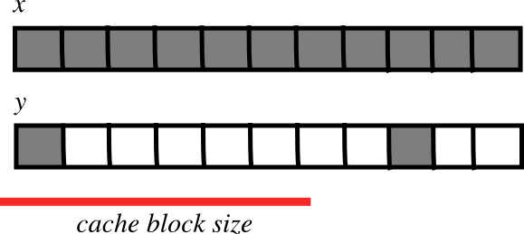

Advanced NumPy#
Author: Pauli Virtanen
NumPy is at the base of Python’s scientific stack of tools. Its purpose to implement efficient operations on many items in a block of memory. Understanding how it works in detail helps in making efficient use of its flexibility, taking useful shortcuts.
This section covers:
Anatomy of NumPy arrays, and its consequences. Tips and tricks.
Universal functions: what, why, and what to do if you want a new one.
Integration with other tools: NumPy offers several ways to wrap any data in an ndarray, without unnecessary copies.
Recently added features, and what’s in them: PEP 3118 buffers, generalized ufuncs, …
Prerequisites
NumPy
Cython
Pillow (Python imaging library, used in a couple of examples)
# Import Numpy module.
import numpy as np
# Import Matplotlib (for later).
import matplotlib.pyplot as plt
Life of ndarray#
It’s…#
What is an ndarray
An ndarray is:
A block of memory and
an indexing scheme and
a data type descriptor.
Put another way, an ndarray has raw data, and algorithms to:
locate an element
interpret an element

typedef struct PyArrayObject {
PyObject_HEAD
/* Block of memory */
char *data;
/* Data type descriptor */
PyArray_Descr *descr;
/* Indexing scheme */
int nd;
npy_intp *dimensions;
npy_intp *strides;
/* Other stuff */
PyObject *base;
int flags;
PyObject *weakreflist;
} PyArrayObject;
Block of memory#
x = np.array([1, 2, 3], dtype=np.int32)
x.data
<memory at 0x1119853c0>
bytes(x.data)
b'\x01\x00\x00\x00\x02\x00\x00\x00\x03\x00\x00\x00'
Memory address of the data:
x.__array_interface__['data'][0]
105553173916608
The whole __array_interface__:
x.__array_interface__
{'data': (105553173916608, False),
'strides': None,
'descr': [('', '<i4')],
'typestr': '<i4',
'shape': (3,),
'version': 3}
Reminder: two ndarrays may share the same memory:
x = np.array([1, 2, 3, 4])
y = x[:-1]
x[0] = 9
y
array([9, 2, 3])
Memory does not need to be owned by an ndarray:
x = b'1234'
x is a string (in Python 3 a bytes), we can represent its data as an array of ints:
y = np.frombuffer(x, dtype=np.int8)
y.data
<memory at 0x111985600>
y.base is x
True
y.flags
C_CONTIGUOUS : True
F_CONTIGUOUS : True
OWNDATA : False
WRITEABLE : False
ALIGNED : True
WRITEBACKIFCOPY : False
The owndata and writeable flags indicate status of the memory
block.
See also
Data types#
The descriptor#
dtype describes a single item in the array:
type |
scalar type of the data, one of:
|
itemsize |
size of the data block |
byteorder |
byte order:
|
fields |
sub-dtypes, if it’s a structured data type |
shape |
shape of the array, if it’s a sub-array |
np.dtype(int).type
numpy.int64
np.dtype(int).itemsize
8
np.dtype(int).byteorder
'='
Example: reading .wav files#
The .wav file header:
chunk_id |
|
chunk_size |
4-byte unsigned little-endian integer |
format |
|
fmt_id |
|
fmt_size |
4-byte unsigned little-endian integer |
audio_fmt |
2-byte unsigned little-endian integer |
num_channels |
2-byte unsigned little-endian integer |
sample_rate |
4-byte unsigned little-endian integer |
byte_rate |
4-byte unsigned little-endian integer |
block_align |
2-byte unsigned little-endian integer |
bits_per_sample |
2-byte unsigned little-endian integer |
data_id |
|
data_size |
4-byte unsigned little-endian integer |
44-byte block of raw data (in the beginning of the file)
… followed by
data_sizebytes of actual sound data.
The .wav file header as a NumPy structured data type:
wav_header_dtype = np.dtype([
("chunk_id", (bytes, 4)), # flexible-sized scalar type, item size 4
("chunk_size", "<u4"), # little-endian unsigned 32-bit integer
("format", "S4"), # 4-byte string
("fmt_id", "S4"),
("fmt_size", "<u4"),
("audio_fmt", "<u2"), #
("num_channels", "<u2"), # .. more of the same ...
("sample_rate", "<u4"), #
("byte_rate", "<u4"),
("block_align", "<u2"),
("bits_per_sample", "<u2"),
("data_id", ("S1", (2, 2))), # sub-array, just for fun!
("data_size", "u4"),
#
# the sound data itself cannot be represented here:
# it does not have a fixed size
])
See also
wav_header_dtype['format']
dtype('S4')
wav_header_dtype.fields
mappingproxy({'chunk_id': (dtype('S4'), 0),
'chunk_size': (dtype('uint32'), 4),
'format': (dtype('S4'), 8),
'fmt_id': (dtype('S4'), 12),
'fmt_size': (dtype('uint32'), 16),
'audio_fmt': (dtype('uint16'), 20),
'num_channels': (dtype('uint16'), 22),
'sample_rate': (dtype('uint32'), 24),
'byte_rate': (dtype('uint32'), 28),
'block_align': (dtype('uint16'), 32),
'bits_per_sample': (dtype('uint16'), 34),
'data_id': (dtype(('S1', (2, 2))), 36),
'data_size': (dtype('uint32'), 40)})
wav_header_dtype.fields['format']
(dtype('S4'), 8)
The first element is the sub-dtype in the structured data, corresponding to the name
formatThe second one is its offset (in bytes) from the beginning of the item
Exercise 43
Make a “sparse” dtype by using offsets, and only some of the fields:
wav_header_dtype = np.dtype(dict(
names=['format', 'sample_rate', 'data_id'],
offsets=[offset_1, offset_2, offset_3], # counted from start of structure in bytes
formats=list of dtypes for each of the fields,
))
Cell In[18], line 4
formats=list of dtypes for each of the fields,
^
SyntaxError: invalid syntax. Perhaps you forgot a comma?
and use that to read the sample rate, and data_id (as sub-array).
f = open('data/test.wav', 'r')
wav_header = np.fromfile(f, dtype=wav_header_dtype, count=1)
f.close()
print(wav_header)
[(b'RIFF', 17402, b'WAVE', b'fmt ', 16, 1, 1, 16000, 32000, 2, 16, [[b'd', b'a'], [b't', b'a']], 17366)]
wav_header['sample_rate']
array([16000], dtype=uint32)
Let’s try accessing the sub-array:
wav_header['data_id']
array([[[b'd', b'a'],
[b't', b'a']]], dtype='|S1')
wav_header.shape
(1,)
wav_header['data_id'].shape
(1, 2, 2)
When accessing sub-arrays, the dimensions get added to the end!
Note
There are existing modules such as wavfile, audiolab,
etc. for loading sound data…
Casting and re-interpretation/views#
casting
on assignment
on array construction
on arithmetic
etc.
and manually:
.astype(dtype)
data re-interpretation
manually:
.view(dtype)
Casting#
Casting in arithmetic, in nutshell:
only type (not value!) of operands matters
largest “safe” type able to represent both is picked
scalars can “lose” to arrays in some situations
Casting in general copies data:
x = np.array([1, 2, 3, 4], dtype=float)
x
array([1., 2., 3., 4.])
y = x.astype(np.int8)
y
array([1, 2, 3, 4], dtype=int8)
y + 1
array([2, 3, 4, 5], dtype=int8)
y + 256
---------------------------------------------------------------------------
OverflowError Traceback (most recent call last)
Cell In[27], line 1
----> 1 y + 256
OverflowError: Python integer 256 out of bounds for int8
y + 256.0
array([257., 258., 259., 260.])
y + np.array([256], dtype=np.int32)
array([257, 258, 259, 260], dtype=int32)
Casting on setitem: dtype of the array is not changed on item assignment:
y[:] = y + 1.5
y
array([2, 3, 4, 5], dtype=int8)
Note
Exact rules: see NumPy documentation
Re-interpretation / viewing#
Let’s say we have a data block in memory (4 bytes). For the moment (as indicated by the bars between the values), we’ll consider this to be four unit8 values:
|
│ |
|
│ |
|
│ |
|
However, we can interpret this block as:
4 of uint8 (as here), OR,
4 of int8, OR,
2 of int16, OR,
1 of int32, OR,
1 of float32, OR,
…
How to switch from one to another?
Option 1: Switch the dtype
x = np.array([1, 2, 3, 4], dtype=np.uint8)
x.dtype = "<i2"
x
array([ 513, 1027], dtype=int16)
|
|
│ |
|
|
Note
little-endian: least significant byte is on the left in memory
Option 2: Create a new view of type uint32, shorthand i4
y = x.view("<i4")
y
array([67305985], dtype=int32)
|
|
|
|
On Views
.view()makes views, does not copy (or alter) the memory blockit only changes the dtype (and adjusts array shape):
x[1] = 5
y
array([328193], dtype=int32)
y.base is x
True
Mini-exercise: data re-interpretation
See also
Exercise 44
You have RGBA data in an array:
x = np.zeros((10, 10, 4), dtype=np.int8)
x[:, :, 0] = 1
x[:, :, 1] = 2
x[:, :, 2] = 3
x[:, :, 3] = 4
where the last three dimensions are the R, B, and G, and alpha channels.
How would you make a (10, 10) structured array with field names ‘r’, ‘g’, ‘b’, ‘a’ without copying data?
y = ...
assert (y['r'] == 1).all()
assert (y['g'] == 2).all()
assert (y['b'] == 3).all()
assert (y['a'] == 4).all()
---------------------------------------------------------------------------
TypeError Traceback (most recent call last)
Cell In[37], line 1
----> 1 assert (y['r'] == 1).all()
2 assert (y['g'] == 2).all()
3 assert (y['b'] == 3).all()
TypeError: 'ellipsis' object is not subscriptable
Solution to Exercise 44
y = x.view([('r', 'i1'),
('g', 'i1'),
('b', 'i1'),
('a', 'i1')]
)[:, :, 0]
A puzzle#
Another two arrays, each occupying exactly 4 bytes of memory:
x = np.array([[1, 3], [2, 4]], dtype=np.uint8)
x
array([[1, 3],
[2, 4]], dtype=uint8)
y = x.transpose()
y
array([[1, 2],
[3, 4]], dtype=uint8)
We view the elements of x (1 byte each) as int16 (2 bytes each):
x.view(np.int16)
array([[ 769],
[1026]], dtype=int16)
What is happening here? Take a look at the bytes stored in memory
by x:
x.tobytes()
b'\x01\x03\x02\x04'
The \x stands for heXadecimal, so what we are seeing is:
0x01 0x03 0x02 0x04
We ask NumPy to interpret these bytes as elements of dtype
int16—each of which occupies two bytes in memory. Therefore,
0x01 0x03 becomes the first uint16 and 0x02 0x04 the
second.
You may then expect to see 0x0103 (259, when converting from
hexadecimal to decimal) as the first result. But your computer
likely stores most significant bytes first, and as such reads the
number as 0x0301 or 769 (go on and type 0x0301 into your Python
terminal to verify).
We can do the same on a copy of y (why doesn’t it work on y
directly?):
y.copy().view(np.int16)
array([[ 513],
[1027]], dtype=int16)
Can you explain these numbers, 513 and 1027, as well as the output shape of the resulting array?
Indexing scheme: strides#
Main point#
The question:
x = np.array([[1, 2, 3],
[4, 5, 6],
[7, 8, 9]], dtype=np.int8)
x.tobytes('A')
b'\x01\x02\x03\x04\x05\x06\x07\x08\t'
The answer (in NumPy)
strides: the number of bytes to jump to find the next element
1 stride per dimension
x.strides
(3, 1)
byte_offset = 3 * 1 + 1 * 2 # to find x[1, 2]
x.flat[byte_offset]
np.int8(6)
x[1, 2]
np.int8(6)
simple, flexible
C and Fortran order#
Note
The Python built-in bytes returns bytes in C-order by default
which can cause confusion when trying to inspect memory layout. We use
numpy.ndarray.tobytes() with order=A instead, which preserves
the C or F ordering of the bytes in memory.
x = np.array([[1, 2, 3],
[4, 5, 6]], dtype=np.int16, order='C')
x.strides
(6, 2)
x.tobytes('A')
b'\x01\x00\x02\x00\x03\x00\x04\x00\x05\x00\x06\x00'
Need to jump 6 bytes to find the next row
Need to jump 2 bytes to find the next column
y = np.array(x, order='F')
y.strides
(2, 4)
y.tobytes('A')
b'\x01\x00\x04\x00\x02\x00\x05\x00\x03\x00\x06\x00'
Need to jump 2 bytes to find the next row
Need to jump 4 bytes to find the next column
Similarly for higher dimensions:
C: last dimensions vary fastest (= smaller strides)
F: first dimensions vary fastest
Now we can understand the behavior of .view()
y = np.array([[1, 3], [2, 4]], dtype=np.uint8).transpose()
x = y.copy()
Transposition does not affect the memory layout of the data, only strides
x.strides
(2, 1)
y.strides
(1, 2)
x.tobytes('A')
b'\x01\x02\x03\x04'
y.tobytes('A')
b'\x01\x03\x02\x04'
the results are different when interpreted as 2 of int16
.copy()creates new arrays in the C order (by default)
Slicing with integers#
Everything can be represented by changing only
shape,strides, and possibly adjusting thedatapointer!Never makes copies of the data
x = np.array([1, 2, 3, 4, 5, 6], dtype=np.int32)
y = x[::-1]
y
array([6, 5, 4, 3, 2, 1], dtype=int32)
y.strides
(-4,)
y = x[2:]
y.__array_interface__['data'][0] - x.__array_interface__['data'][0]
8
x = np.zeros((10, 10, 10), dtype=float)
x.strides
(800, 80, 8)
x[::2,::3,::4].strides
(1600, 240, 32)
Similarly, transposes never make copies (it just swaps strides):
x = np.zeros((10, 10, 10), dtype=float)
x.strides
(800, 80, 8)
x.T.strides
(8, 80, 800)
But: not all reshaping operations can be represented by playing with strides:
a = np.arange(6, dtype=np.int8).reshape(3, 2)
b = a.T
b.strides
(1, 2)
So far, so good. However:
bytes(a.data)
b'\x00\x01\x02\x03\x04\x05'
b
array([[0, 2, 4],
[1, 3, 5]], dtype=int8)
c = b.reshape(3*2)
c
array([0, 2, 4, 1, 3, 5], dtype=int8)
Here, there is no way to represent the array c given one stride
and the block of memory for a. Therefore, the reshape
operation needs to make a copy here.
Example: fake dimensions with strides#
Stride manipulation
from numpy.lib.stride_tricks import as_strided
help(as_strided)
Help on function as_strided in module numpy.lib.stride_tricks:
as_strided(x, shape=None, strides=None, subok=False, writeable=True)
Create a view into the array with the given shape and strides.
.. warning:: This function has to be used with extreme care, see notes.
Parameters
----------
x : ndarray
Array to create a new.
shape : sequence of int, optional
The shape of the new array. Defaults to ``x.shape``.
strides : sequence of int, optional
The strides of the new array. Defaults to ``x.strides``.
subok : bool, optional
If True, subclasses are preserved.
writeable : bool, optional
If set to False, the returned array will always be readonly.
Otherwise it will be writable if the original array was. It
is advisable to set this to False if possible (see Notes).
Returns
-------
view : ndarray
See also
--------
broadcast_to : broadcast an array to a given shape.
reshape : reshape an array.
lib.stride_tricks.sliding_window_view :
userfriendly and safe function for a creation of sliding window views.
Notes
-----
``as_strided`` creates a view into the array given the exact strides
and shape. This means it manipulates the internal data structure of
ndarray and, if done incorrectly, the array elements can point to
invalid memory and can corrupt results or crash your program.
It is advisable to always use the original ``x.strides`` when
calculating new strides to avoid reliance on a contiguous memory
layout.
Furthermore, arrays created with this function often contain self
overlapping memory, so that two elements are identical.
Vectorized write operations on such arrays will typically be
unpredictable. They may even give different results for small, large,
or transposed arrays.
Since writing to these arrays has to be tested and done with great
care, you may want to use ``writeable=False`` to avoid accidental write
operations.
For these reasons it is advisable to avoid ``as_strided`` when
possible.
Warning
as_strided does not check that you stay inside the memory
block bounds…
x = np.array([1, 2, 3, 4], dtype=np.int16)
as_strided(x, strides=(2*2, ), shape=(2, ))
array([1, 3], dtype=int16)
x[::2]
array([1, 3], dtype=int16)
See also
Exercise 45
Convert this:
in_arr = np.array([1, 2, 3, 4], dtype=np.int8)
in_arr
array([1, 2, 3, 4], dtype=int8)
to this:
array([[1, 2, 3, 4],
[1, 2, 3, 4],
[1, 2, 3, 4]], dtype=np.int8)
using only as_strided.:
Hint: byte_offset = stride[0]*index[0] + stride[1]*index[1] + ...
Spoiler for strides exercise
Stride can also be 0:
Solution to Exercise 45
x = np.array([1, 2, 3, 4], dtype=np.int8)
y = as_strided(x, strides=(0, 1), shape=(3, 4))
y
array([[1, 2, 3, 4],
[1, 2, 3, 4],
[1, 2, 3, 4]], dtype=int8)
y.base.base is x
True
Broadcasting#
Doing something useful with it: outer product of
[1, 2, 3, 4]and[5, 6, 7]
x = np.array([1, 2, 3, 4], dtype=np.int16)
x2 = as_strided(x, strides=(0, 1*2), shape=(3, 4))
x2
array([[1, 2, 3, 4],
[1, 2, 3, 4],
[1, 2, 3, 4]], dtype=int16)
y = np.array([5, 6, 7], dtype=np.int16)
y2 = as_strided(y, strides=(1*2, 0), shape=(3, 4))
y2
array([[5, 5, 5, 5],
[6, 6, 6, 6],
[7, 7, 7, 7]], dtype=int16)
x2 * y2
array([[ 5, 10, 15, 20],
[ 6, 12, 18, 24],
[ 7, 14, 21, 28]], dtype=int16)
… seems somehow familiar …
x = np.array([1, 2, 3, 4], dtype=np.int16)
y = np.array([5, 6, 7], dtype=np.int16)
x[np.newaxis,:] * y[:,np.newaxis]
array([[ 5, 10, 15, 20],
[ 6, 12, 18, 24],
[ 7, 14, 21, 28]], dtype=int16)
Internally, array broadcasting is indeed implemented using 0-strides.
More tricks: diagonals#
See also
Exercise 46
Pick diagonal entries of the matrix: (assume C memory order):
x = np.array([[1, 2, 3],
[4, 5, 6],
[7, 8, 9]], dtype=np.int32)
Your task is to work out the correct strides for to get the diagonal of the array, as in:
x_diag = as_strided(x, shape=(3,), strides=(...,))
Next:
Pick the first super-diagonal entries
[2, 6].And the sub-diagonals?
Hint to the last two: slicing first moves the point where striding starts from.
Solution to Exercise 46
Pick diagonals:
x_diag = as_strided(x, shape=(3, ), strides=((3+1)*x.itemsize,))
x_diag
array([1, 5, 9], dtype=int32)
Slice first, to adjust the data pointer:
as_strided(x[0, 1:], shape=(2, ), strides=((3+1)*x.itemsize, ))
array([2, 6], dtype=int32)
as_strided(x[1:, 0], shape=(2, ), strides=((3+1)*x.itemsize, ))
array([4, 8], dtype=int32)
Using np.diag#
y = np.diag(x, k=1)
y
array([2, 6], dtype=int32)
However,
y.flags.owndata
False
Challenge
Exercise 47
Compute the tensor trace:
x = np.arange(5*5*5*5).reshape(5, 5, 5, 5)
s = 0
for i in range(5):
for j in range(5):
s += x[j, i, j, i]
by striding, and using sum() on the result.
y = as_strided(x, shape=(5, 5), strides=(..., ...))
s2 = ...
assert s == s2
---------------------------------------------------------------------------
TypeError Traceback (most recent call last)
Cell In[85], line 1
----> 1 y = as_strided(x, shape=(5, 5), strides=(..., ...))
2 s2 = ...
3 assert s == s2
File /Volumes/zorg/mb312/.virtualenvs/sp-lectures/lib/python3.12/site-packages/numpy/lib/_stride_tricks_impl.py:101, in as_strided(x, shape, strides, subok, writeable)
98 if strides is not None:
99 interface['strides'] = tuple(strides)
--> 101 array = np.asarray(DummyArray(interface, base=x))
102 # The route via `__interface__` does not preserve structured
103 # dtypes. Since dtype should remain unchanged, we set it explicitly.
104 array.dtype = x.dtype
TypeError: 'ellipsis' object cannot be interpreted as an integer
Solution to Exercise 47
y = as_strided(x, shape=(5, 5), strides=((5*5*5 + 5)*x.itemsize,
(5*5 + 1)*x.itemsize))
s2 = y.sum()
s2
np.int64(7800)
CPU cache effects#
Memory layout can affect performance:
x = np.zeros((20000,))
y = np.zeros((20000*67,))[::67]
x.shape, y.shape
((20000,), (20000,))
%timeit np.median(x)
79.2 μs ± 953 ns per loop (mean ± std. dev. of 7 runs, 10,000 loops each)
%timeit np.median(y)
148 μs ± 5.89 μs per loop (mean ± std. dev. of 7 runs, 10,000 loops each)
x.strides, y.strides
((8,), (536,))
Note
** Are smaller strides faster**
CPU pulls data from main memory to its cache in blocks
If many array items consecutively operated on fit in a single block (small stride):
\(\Rightarrow\) fewer transfers needed
\(\Rightarrow\) faster
Findings in dissection#
memory block: may be shared,
.base,.datadata type descriptor: structured data, sub-arrays, byte order, casting, viewing,
.astype(),.view()strided indexing: strides, C/F-order, slicing w/ integers,
as_strided, broadcasting, stride tricks,diag, CPU cache coherence
Universal functions#
What are they?#
Ufunc performs an elementwise operation on all elements of an array.
Examples:
np.add, np.subtract, scipy.special.*,…Automatically support: broadcasting, casting, …
The author of an ufunc only has to supply the elementwise operation, NumPy takes care of the rest.
The elementwise operation needs to be implemented in C (or, e.g., Cython)
Parts of an Ufunc#
Part 1: provided by user
void ufunc_loop(void **args, int *dimensions, int *steps, void *data)
{
/*
* int8 output = elementwise_function(int8 input_1, int8 input_2)
*
* This function must compute the ufunc for many values at once,
* in the way shown below.
*/
char *input_1 = (char*)args[0];
char *input_2 = (char*)args[1];
char *output = (char*)args[2];
int i;
for (i = 0; i < dimensions[0]; ++i) {
*output = elementwise_function(*input_1, *input_2);
input_1 += steps[0];
input_2 += steps[1];
output += steps[2];
}
}
Part 2. The NumPy part, built by
char types[3]
types[0] = NPY_BYTE /* type of first input arg */
types[1] = NPY_BYTE /* type of second input arg */
types[2] = NPY_BYTE /* type of third input arg */
PyObject *python_ufunc = PyUFunc_FromFuncAndData(
ufunc_loop,
NULL,
types,
1, /* ntypes */
2, /* num_inputs */
1, /* num_outputs */
identity_element,
name,
docstring,
unused)
A ufunc can also support multiple different input-output type combinations.
Making it easier#
ufunc_loop is of very generic form, and NumPy provides pre-made ones
|
|
|
|
|
|
|
|
|
|
|
|
Only
elementwise_funcneeds to be supplied… except when your elementwise function is not in one of the above forms
Exercise: building an ufunc from scratch#
Exercise 48
The Mandelbrot fractal is defined by the iteration
where \(c = x + i y\) is a complex number. This iteration is repeated – if \(z\) stays finite no matter how long the iteration runs, \(c\) belongs to the Mandelbrot set.
First — make a ufunc called mandel(z0, c) that computes:
z = z0
for k in range(iterations):
z = z*z + c
Run for, say, 100 iterations or until z.real**2 + z.imag**2 > 1000.
Use it to determine which c are in the Mandelbrot set.
Our function is a simple one, so make use of the PyUFunc_* helpers.
Write it in Cython
See also
mandel.pyx, mandelplot.py
Reminder: some pre-made Ufunc loops:
|
|
|
|
|
|
|
|
|
|
|
|
Type codes:
NPY_BOOL, NPY_BYTE, NPY_UBYTE, NPY_SHORT, NPY_USHORT, NPY_INT, NPY_UINT,
NPY_LONG, NPY_ULONG, NPY_LONGLONG, NPY_ULONGLONG, NPY_FLOAT, NPY_DOUBLE,
NPY_LONGDOUBLE, NPY_CFLOAT, NPY_CDOUBLE, NPY_CLONGDOUBLE, NPY_DATETIME,
NPY_TIMEDELTA, NPY_OBJECT, NPY_STRING, NPY_UNICODE, NPY_VOID
Solution to Exercise 48
# The elementwise function
# ------------------------
cdef void mandel_single_point(double complex *z_in,
double complex *c_in,
double complex *z_out) noexcept nogil:
#
# The Mandelbrot iteration
#
#
# Some points of note:
#
# - It's *NOT* allowed to call any Python functions here.
#
# The Ufunc loop runs with the Python Global Interpreter Lock released.
# Hence, the ``nogil``.
#
# - And so all local variables must be declared with ``cdef``
#
# - Note also that this function receives *pointers* to the data;
# the "traditional" solution to passing complex variables around
#
cdef double complex z = z_in[0]
cdef double complex c = c_in[0]
cdef int k # the integer we use in the for loop
# Straightforward iteration
for k in range(100):
z = z*z + c
if z.real**2 + z.imag**2 > 1000:
break
# Return the answer for this point
z_out[0] = z
# Boilerplate Cython definitions
#
# Pulls definitions from the NumPy C headers.
# -------------------------------------------
from numpy cimport import_array, import_ufunc
from numpy cimport (PyUFunc_FromFuncAndData,
PyUFuncGenericFunction)
from numpy cimport NPY_CDOUBLE
from numpy cimport PyUFunc_DD_D
# Required module initialization
# ------------------------------
import_array()
import_ufunc()
# The actual ufunc declaration
# ----------------------------
cdef PyUFuncGenericFunction loop_func[1]
cdef char input_output_types[3]
cdef void *elementwise_funcs[1]
loop_func[0] = PyUFunc_DD_D
input_output_types[0] = NPY_CDOUBLE
input_output_types[1] = NPY_CDOUBLE
input_output_types[2] = NPY_CDOUBLE
elementwise_funcs[0] = <void*>mandel_single_point
mandel = PyUFunc_FromFuncAndData(
loop_func,
elementwise_funcs,
input_output_types,
1, # number of supported input types
2, # number of input args
1, # number of output args
0, # `identity` element, never mind this
"mandel", # function name
"mandel(z, c) -> computes iterated z*z + c", # docstring
0 # unused
)
"""
Plot Mandelbrot
================
Plot the Mandelbrot ensemble.
"""
import numpy as np
import mandel
x = np.linspace(-1.7, 0.6, 1000)
y = np.linspace(-1.4, 1.4, 1000)
c = x[None, :] + 1j * y[:, None]
z = mandel.mandel(c, c)
import matplotlib.pyplot as plt
plt.imshow(abs(z) ** 2 < 1000, extent=[-1.7, 0.6, -1.4, 1.4])
plt.gray()
plt.show()
Several accepted input types
E.g. supporting both single- and double-precision versions
cdef void mandel_single_point(double complex *z_in,
double complex *c_in,
double complex *z_out) nogil:
...
cdef void mandel_single_point_singleprec(float complex *z_in,
float complex *c_in,
float complex *z_out) nogil:
...
cdef PyUFuncGenericFunction loop_funcs[2]
cdef char input_output_types[3*2]
cdef void *elementwise_funcs[1*2]
loop_funcs[0] = PyUFunc_DD_D
input_output_types[0] = NPY_CDOUBLE
input_output_types[1] = NPY_CDOUBLE
input_output_types[2] = NPY_CDOUBLE
elementwise_funcs[0] = <void*>mandel_single_point
loop_funcs[1] = PyUFunc_FF_F
input_output_types[3] = NPY_CFLOAT
input_output_types[4] = NPY_CFLOAT
input_output_types[5] = NPY_CFLOAT
elementwise_funcs[1] = <void*>mandel_single_point_singleprec
mandel = PyUFunc_FromFuncAndData(
loop_func,
elementwise_funcs,
input_output_types,
2, # number of supported input types <----------------
2, # number of input args
1, # number of output args
0, # `identity` element, never mind this
"mandel", # function name
"mandel(z, c) -> computes iterated z*z + c", # docstring
0 # unused
)
Generalized ufuncs#
ufunc
output = elementwise_function(input)
Both output and input can be a single array element only.
generalized ufunc
output and input can be arrays with a fixed number of dimensions
For example, matrix trace (sum of diag elements):
input shape = (n, n)
output shape = () # i.e. scalar
(n, n) -> ()
Matrix product:
input_1 shape = (m, n)
input_2 shape = (n, p)
output shape = (m, p)
(m, n), (n, p) -> (m, p)
This is called the “signature” of the generalized ufunc
The dimensions on which the g-ufunc acts, are “core dimensions”
Status in NumPy
g-ufuncs are in NumPy already …
new ones can be created with
PyUFunc_FromFuncAndDataAndSignaturemost linear-algebra functions are implemented as g-ufuncs to enable working with stacked arrays:
import numpy as np
rng = np.random.default_rng(27446968)
np.linalg.det(rng.random((3, 5, 5)))
array([ 0.01829761, -0.0077266 , -0.05336566])
np.linalg._umath_linalg.det.signature
'(m,m)->()'
matrix multiplication this way could be useful for operating on many small matrices at once
Also see
tensordotandeinsum
Generalized ufunc loop
Matrix multiplication (m,n),(n,p) -> (m,p)
void gufunc_loop(void **args, int *dimensions, int *steps, void *data)
{
char *input_1 = (char*)args[0]; /* these are as previously */
char *input_2 = (char*)args[1];
char *output = (char*)args[2];
int input_1_stride_m = steps[3]; /* strides for the core dimensions */
int input_1_stride_n = steps[4]; /* are added after the non-core */
int input_2_strides_n = steps[5]; /* steps */
int input_2_strides_p = steps[6];
int output_strides_n = steps[7];
int output_strides_p = steps[8];
int m = dimension[1]; /* core dimensions are added after */
int n = dimension[2]; /* the main dimension; order as in */
int p = dimension[3]; /* signature */
int i;
for (i = 0; i < dimensions[0]; ++i) {
matmul_for_strided_matrices(input_1, input_2, output,
strides for each array...);
input_1 += steps[0];
input_2 += steps[1];
output += steps[2];
}
}
Interoperability features#
The old buffer protocol#
Only 1-D buffers
No data type information
C-level interface;
PyBufferProcs tp_as_bufferin the type objectBut it’s integrated into Python (e.g. strings support it)
Mini-exercise using Pillow (Python Imaging Library):
See also
Exercise 49
from PIL import Image
data = np.zeros((200, 200, 4), dtype=np.uint8)
data[:, :] = [255, 0, 0, 255] # Red
# In PIL, RGBA images consist of 32-bit integers whose bytes are [RR,GG,BB,AA]
data = data.view(np.int32).squeeze()
img = Image.frombuffer("RGBA", (200, 200), data, "raw", "RGBA", 0, 1)
img.save('test.png')
The question
What happens if data is now modified, and img saved again?
The old buffer protocol#
Show how to exchange data between numpy and a library that only knows the buffer interface:
# Make a sample image, RGBA format
x = np.zeros((200, 200, 4), dtype=np.uint8)
x[:, :, 0] = 255 # red
x[:, :, 3] = 255 # opaque
data_i32 = x.view(np.int32) # Check that you understand why this is OK!
img = Image.frombuffer("RGBA", (200, 200), data_i32)
img.save("test_red.png")
# Modify the original data, and save again.
x[:, :, 1] = 255
img.save("test_recolored.png")

Array interface protocol#
Multidimensional buffers
Data type information present
NumPy-specific approach; slowly deprecated (but not going away)
Not integrated in Python otherwise
See also
Documentation: https://numpy.org/doc/stable/reference/arrays.interface.html
x = np.array([[1, 2], [3, 4]])
x.__array_interface__
{'data': (105553171784480, False),
'strides': None,
'descr': [('', '<i8')],
'typestr': '<i8',
'shape': (2, 2),
'version': 3}
from PIL import Image
img = Image.open('data/test.png')
img.__array_interface__
{'version': 3,
'data': b'D\x01T\xffD\x01T\xffD\x01T\xffD\x01T\xffD\x01T\xffD\x01T\xffD\x01T\xffD\x01T\xffD\x01T\xffD\x01T\xffD\x01T\xffD\x01T\xffD\x01T\xffD\x01T\xffD\x01T\xffD\x01T\xffD\x01T\xffD\x01T\xffD\x01T\xffD\x01T\xffD\x01T\xffD\x01T\xffD\x01T\xffD\x01T\xffD\x01T\xffD\x01T\xffD\x01T\xffD\x01T\xffD\x01T\xffD\x01T\xffD\x01T\xffD\x01T\xffD\x01T\xffD\x01T\xffD\x01T\xffD\x01T\xffD\x01T\xffD\x01T\xffD\x01T\xffD\x01T\xffD\x01T\xffD\x01T\xffD\x01T\xffD\x01T\xffD\x01T\xffD\x01T\xffD\x01T\xffD\x01T\xffD\x01T\xffD\x01T\xffD\x01T\xffD\x01T\xffD\x01T\xffD\x01T\xffD\x01T\xffD\x01T\xffD\x01T\xffD\x01T\xffD\x01T\xffD\x01T\xffD\x01T\xffD\x01T\xffD\x01T\xffD\x01T\xffD\x01T\xffD\x01T\xffD\x01T\xffD\x01T\xffD\x01T\xffD\x01T\xffD\x01T\xffD\x01T\xffD\x01T\xffD\x01T\xffD\x01T\xffD\x01T\xffD\x01T\xffD\x01T\xffD\x01T\xffD\x01T\xffD\x01T\xffD\x01T\xffD\x01T\xffD\x01T\xffD\x01T\xffD\x01T\xffD\x01T\xffD\x01T\xffD\x01T\xffD\x01T\xffD\x01T\xffD\x01T\xffD\x01T\xffD\x01T\xffD\x01T\xffD\x01T\xffD\x01T\xffD\x01T\xffD\x01T\xffD\x01T\xffD\x01T\xffD\x01T\xffD\x01T\xffD\x01T\xffD\x01T\xffD\x01T\xffD\x01T\xffD\x01T\xffD\x01T\xffD\x01T\xffD\x01T\xffD\x01T\xffD\x01T\xffD\x01T\xffD\x01T\xffD\x01T\xffD\x01T\xffD\x01T\xffD\x01T\xffD\x01T\xffD\x01T\xffD\x01T\xffD\x01T\xffD\x01T\xffD\x01T\xffD\x01T\xffD\x01T\xffD\x01T\xffD\x01T\xffD\x01T\xffD\x01T\xffD\x01T\xffD\x01T\xffD\x01T\xffD\x01T\xffD\x01T\xffD\x01T\xffD\x01T\xffD\x01T\xffD\x01T\xffD\x01T\xffD\x01T\xffD\x01T\xffD\x01T\xffD\x01T\xffD\x01T\xffD\x01T\xffD\x01T\xffD\x01T\xffD\x01T\xffD\x01T\xffD\x01T\xffD\x01T\xffD\x01T\xffD\x01T\xffD\x01T\xffD\x01T\xffD\x01T\xffD\x01T\xffD\x01T\xffD\x01T\xffD\x01T\xffD\x01T\xffD\x01T\xffD\x01T\xffD\x01T\xffD\x01T\xffD\x01T\xffD\x01T\xffD\x01T\xffD\x01T\xffD\x01T\xffD\x01T\xffD\x01T\xffD\x01T\xffD\x01T\xffD\x01T\xffD\x01T\xffD\x01T\xffD\x01T\xffD\x01T\xffD\x01T\xffD\x01T\xffD\x01T\xffD\x01T\xffD\x01T\xffD\x01T\xffD\x01T\xffD\x01T\xffD\x01T\xffD\x01T\xffD\x01T\xffD\x01T\xffD\x01T\xffD\x01T\xffD\x01T\xffD\x01T\xffD\x01T\xffD\x01T\xffD\x01T\xffD\x01T\xffD\x01T\xffD\x01T\xffD\x01T\xffD\x01T\xffD\x01T\xffD\x01T\xffD\x01T\xffD\x01T\xffD\x01T\xffD\x01T\xffD\x01T\xffD\x01T\xffD\x01T\xffD\x01T\xffD\x01T\xffD\x01T\xffD\x01T\xffD\x01T\xffD\x01T\xffD\x01T\xffD\x01T\xffD\x01T\xffD\x01T\xffD\x01T\xffD\x01T\xffD\x01T\xffD\x01T\xffD\x01T\xffD\x01T\xffD\x01T\xffD\x01T\xffD\x01T\xffD\x01T\xffD\x01T\xffD\x01T\xffD\x01T\xffD\x01T\xffD\x01T\xffD\x01T\xffD\x01T\xffD\x01T\xffD\x01T\xffD\x01T\xffD\x01T\xffD\x01T\xffD\x01T\xffD\x01T\xffD\x01T\xffD\x01T\xffD\x01T\xffD\x01T\xffD\x01T\xffD\x01T\xffD\x01T\xffD\x01T\xffD\x01T\xffD\x01T\xffD\x01T\xffD\x01T\xffD\x01T\xffD\x01T\xffD\x01T\xffD\x01T\xffD\x01T\xffD\x01T\xffD\x01T\xffD\x01T\xffD\x01T\xffD\x01T\xffD\x01T\xffD\x01T\xffD\x01T\xffD\x01T\xffD\x01T\xffD\x01T\xffD\x01T\xffD\x01T\xffD\x01T\xffD\x01T\xffD\x01T\xffD\x01T\xffD\x01T\xffD\x01T\xffD\x01T\xffD\x01T\xffD\x01T\xffD\x01T\xffD\x01T\xffD\x01T\xffD\x01T\xffD\x01T\xffD\x01T\xffD\x01T\xffD\x01T\xffD\x01T\xffD\x01T\xffD\x01T\xffD\x01T\xffD\x01T\xffD\x01T\xffD\x01T\xffD\x01T\xffD\x01T\xffD\x01T\xffD\x01T\xffD\x01T\xffD\x01T\xffD\x01T\xffD\x01T\xffD\x01T\xffD\x01T\xffD\x01T\xffD\x01T\xffD\x01T\xffD\x01T\xffD\x01T\xffD\x01T\xffD\x01T\xffD\x01T\xffD\x01T\xffD\x01T\xffD\x01T\xffD\x01T\xffD\x01T\xffD\x01T\xffD\x01T\xffD\x01T\xffD\x01T\xffD\x01T\xffD\x01T\xffD\x01T\xffD\x01T\xffD\x01T\xffD\x01T\xffD\x01T\xffD\x01T\xffD\x01T\xffD\x01T\xffD\x01T\xffD\x01T\xffD\x01T\xffD\x01T\xffD\x01T\xffD\x01T\xffD\x01T\xffD\x01T\xffD\x01T\xffD\x01T\xffD\x01T\xffD\x01T\xffD\x01T\xffD\x01T\xffD\x01T\xffD\x01T\xffD\x01T\xffD\x01T\xffD\x01T\xffD\x01T\xffD\x01T\xffD\x01T\xffD\x01T\xffD\x01T\xffD\x01T\xffD\x01T\xffD\x01T\xffD\x01T\xffD\x01T\xffD\x01T\xffD\x01T\xffD\x01T\xffD\x01T\xffD\x01T\xffD\x01T\xffD\x01T\xffD\x01T\xffD\x01T\xffD\x01T\xffD\x01T\xffD\x01T\xffD\x01T\xffD\x01T\xffD\x01T\xffD\x01T\xffD\x01T\xffD\x01T\xffD\x01T\xffD\x01T\xffD\x01T\xffD\x01T\xffD\x01T\xffD\x01T\xffD\x01T\xffD\x01T\xffD\x01T\xffD\x01T\xffD\x01T\xffD\x01T\xffD\x01T\xffD\x01T\xffD\x01T\xffD\x01T\xffD\x01T\xffD\x01T\xffD\x01T\xffD\x01T\xffD\x01T\xffD\x01T\xffD\x01T\xffD\x01T\xffD\x01T\xffD\x01T\xffD\x01T\xffD\x01T\xffD\x01T\xffD\x01T\xffD\x01T\xffD\x01T\xffD\x01T\xffD\x01T\xffD\x01T\xffD\x01T\xffD\x01T\xffD\x01T\xffD\x01T\xffD\x01T\xffD\x01T\xffD\x01T\xffD\x01T\xffD\x01T\xffD\x01T\xffD\x01T\xffD\x01T\xffD\x01T\xffD\x01T\xffD\x01T\xffD\x01T\xffD\x01T\xffD\x01T\xffD\x01T\xffD\x01T\xffD\x01T\xffD\x01T\xffD\x01T\xffD\x01T\xffD\x01T\xffD\x01T\xffD\x01T\xffD\x01T\xffD\x01T\xffD\x01T\xffD\x01T\xffD\x01T\xffD\x01T\xffD\x01T\xffD\x01T\xffD\x01T\xffD\x01T\xffD\x01T\xffD\x01T\xffD\x01T\xffD\x01T\xffD\x01T\xffD\x01T\xffD\x01T\xffD\x01T\xffD\x01T\xffD\x01T\xffD\x01T\xffD\x01T\xffD\x01T\xffD\x01T\xffD\x01T\xffD\x01T\xffD\x01T\xffD\x01T\xffD\x01T\xffD\x01T\xffD\x01T\xffD\x01T\xffD\x01T\xffD\x01T\xffD\x01T\xffD\x01T\xffD\x01T\xffD\x01T\xffD\x01T\xffD\x01T\xffD\x01T\xffD\x01T\xffD\x01T\xffD\x01T\xffD\x01T\xffD\x01T\xffD\x01T\xffD\x01T\xffD\x01T\xffD\x01T\xffD\x01T\xffD\x01T\xffD\x01T\xffD\x01T\xffD\x01T\xffD\x01T\xffD\x01T\xffD\x01T\xffD\x01T\xffD\x01T\xffD\x01T\xffD\x01T\xffD\x01T\xffD\x01T\xffD\x01T\xffD\x01T\xffD\x01T\xffD\x01T\xffD\x01T\xffD\x01T\xffD\x01T\xffD\x01T\xffD\x01T\xffD\x01T\xffD\x01T\xffD\x01T\xffD\x01T\xffD\x01T\xffD\x01T\xffD\x01T\xffD\x01T\xffD\x01T\xffD\x01T\xffD\x01T\xffD\x01T\xffD\x01T\xffD\x01T\xffD\x01T\xffD\x01T\xffD\x01T\xffD\x01T\xffD\x01T\xffD\x01T\xffD\x01T\xffD\x01T\xffD\x01T\xffD\x01T\xffD\x01T\xffD\x01T\xffD\x01T\xffD\x01T\xffD\x01T\xffD\x01T\xffD\x01T\xffD\x01T\xffD\x01T\xffD\x01T\xffD\x01T\xffD\x01T\xffD\x01T\xffD\x01T\xffD\x01T\xffD\x01T\xffD\x01T\xffD\x01T\xffD\x01T\xffD\x01T\xffD\x01T\xffD\x01T\xffD\x01T\xffD\x01T\xffD\x01T\xffD\x01T\xffD\x01T\xffD\x01T\xffD\x01T\xffD\x01T\xffD\x01T\xffD\x01T\xffD\x01T\xffD\x01T\xffD\x01T\xffD\x01T\xffD\x01T\xffD\x01T\xffD\x01T\xffD\x01T\xffD\x01T\xffD\x01T\xffD\x01T\xffD\x01T\xffD\x01T\xffD\x01T\xffD\x01T\xffD\x01T\xffD\x01T\xffD\x01T\xffD\x01T\xffD\x01T\xffD\x01T\xffD\x01T\xffD\x01T\xffD\x01T\xffD\x01T\xffD\x01T\xffD\x01T\xffD\x01T\xffD\x01T\xffD\x01T\xffD\x01T\xffD\x01T\xffD\x01T\xffD\x01T\xffD\x01T\xffD\x01T\xffD\x01T\xffD\x01T\xffD\x01T\xffD\x01T\xffD\x01T\xffD\x01T\xffD\x01T\xffD\x01T\xffD\x01T\xffD\x01T\xffD\x01T\xffD\x01T\xffD\x01T\xffD\x01T\xffD\x01T\xffD\x01T\xffD\x01T\xffD\x01T\xffD\x01T\xffD\x01T\xffD\x01T\xffD\x01T\xffD\x01T\xffD\x01T\xffD\x01T\xffD\x01T\xffD\x01T\xffD\x01T\xffD\x01T\xffD\x01T\xffD\x01T\xffD\x01T\xffD\x01T\xffD\x01T\xffD\x01T\xffD\x01T\xffD\x01T\xffD\x01T\xffD\x01T\xffD\x01T\xffD\x01T\xffD\x01T\xffD\x01T\xffD\x01T\xffD\x01T\xffD\x01T\xffD\x01T\xffD\x01T\xffD\x01T\xffD\x01T\xffD\x01T\xffD\x01T\xffD\x01T\xffD\x01T\xffD\x01T\xffD\x01T\xffD\x01T\xffD\x01T\xffD\x01T\xffD\x01T\xffD\x01T\xffD\x01T\xffD\x01T\xffD\x01T\xffD\x01T\xffD\x01T\xffD\x01T\xffD\x01T\xffD\x01T\xffD\x01T\xffD\x01T\xffD\x01T\xffD\x01T\xffD\x01T\xffD\x01T\xffD\x01T\xffD\x01T\xffD\x01T\xffD\x01T\xffD\x01T\xffD\x01T\xffD\x01T\xffD\x01T\xffD\x01T\xffD\x01T\xffD\x01T\xffD\x01T\xffD\x01T\xffD\x01T\xffD\x01T\xffD\x01T\xffD\x01T\xffD\x01T\xffD\x01T\xffD\x01T\xffD\x01T\xffD\x01T\xffD\x01T\xffD\x01T\xffD\x01T\xffD\x01T\xffD\x01T\xffD\x01T\xffD\x01T\xffD\x01T\xffD\x01T\xffD\x01T\xffD\x01T\xffD\x01T\xffD\x01T\xffD\x01T\xffD\x01T\xffD\x01T\xffD\x01T\xffD\x01T\xffD\x01T\xffD\x01T\xffD\x01T\xffD\x01T\xffD\x01T\xffD\x01T\xffD\x01T\xffD\x01T\xffD\x01T\xffD\x01T\xffD\x01T\xffD\x01T\xffD\x01T\xffD\x01T\xffD\x01T\xffD\x01T\xffD\x01T\xffD\x01T\xffD\x01T\xffD\x01T\xffD\x01T\xffD\x01T\xffD\x01T\xffD\x01T\xffD\x01T\xffD\x01T\xffD\x01T\xffD\x01T\xffD\x01T\xffD\x01T\xffD\x01T\xffD\x01T\xffD\x01T\xffD\x01T\xffD\x01T\xffD\x01T\xffD\x01T\xffD\x01T\xffD\x01T\xffD\x01T\xffD\x01T\xffD\x01T\xffD\x01T\xffD\x01T\xffD\x01T\xffD\x01T\xffD\x01T\xffD\x01T\xffD\x01T\xffD\x01T\xffD\x01T\xffD\x01T\xffD\x01T\xffD\x01T\xffD\x01T\xffD\x01T\xffD\x01T\xffD\x01T\xffD\x01T\xffD\x01T\xffD\x01T\xffD\x01T\xffD\x01T\xffD\x01T\xffD\x01T\xffD\x01T\xffD\x01T\xffD\x01T\xffD\x01T\xffD\x01T\xffD\x01T\xffD\x01T\xffD\x01T\xffD\x01T\xffD\x01T\xffD\x01T\xffD\x01T\xffD\x01T\xffD\x01T\xffD\x01T\xffD\x01T\xffD\x01T\xffD\x01T\xffD\x01T\xffD\x01T\xffD\x01T\xffD\x01T\xffD\x01T\xffD\x01T\xffD\x01T\xffD\x01T\xffD\x01T\xffD\x01T\xffD\x01T\xffD\x01T\xffD\x01T\xffD\x01T\xffD\x01T\xffD\x01T\xffD\x01T\xffD\x01T\xffD\x01T\xffD\x01T\xffD\x01T\xffD\x01T\xffD\x01T\xffD\x01T\xffD\x01T\xffD\x01T\xffD\x01T\xffD\x01T\xffD\x01T\xffD\x01T\xffD\x01T\xffD\x01T\xffD\x01T\xffD\x01T\xffD\x01T\xffD\x01T\xffD\x01T\xffD\x01T\xffD\x01T\xffD\x01T\xffD\x01T\xffD\x01T\xffD\x01T\xffD\x01T\xffD\x01T\xffD\x01T\xffD\x01T\xffD\x01T\xffD\x01T\xffD\x01T\xffD\x01T\xffD\x01T\xffD\x01T\xffD\x01T\xffD\x01T\xffD\x01T\xffD\x01T\xffD\x01T\xffD\x01T\xffD\x01T\xffD\x01T\xffD\x01T\xffD\x01T\xffD\x01T\xffD\x01T\xffD\x01T\xffD\x01T\xffD\x01T\xffD\x01T\xffD\x01T\xffD\x01T\xffD\x01T\xffD\x01T\xffD\x01T\xffD\x01T\xffD\x01T\xffD\x01T\xffD\x01T\xffD\x01T\xffD\x01T\xffD\x01T\xffD\x01T\xffD\x01T\xffD\x01T\xffD\x01T\xffD\x01T\xffD\x01T\xffD\x01T\xffD\x01T\xffD\x01T\xffD\x01T\xffD\x01T\xffD\x01T\xffD\x01T\xffD\x01T\xffD\x01T\xffD\x01T\xffD\x01T\xffD\x01T\xffD\x01T\xffD\x01T\xffD\x01T\xffD\x01T\xffD\x01T\xffD\x01T\xffD\x01T\xffD\x01T\xffD\x01T\xffD\x01T\xffD\x01T\xffD\x01T\xffD\x01T\xffD\x01T\xffD\x01T\xffD\x01T\xffD\x01T\xffD\x01T\xffD\x01T\xffD\x01T\xffD\x01T\xffD\x01T\xffD\x01T\xffD\x01T\xffD\x01T\xffD\x01T\xffD\x01T\xffD\x01T\xffD\x01T\xffD\x01T\xffD\x01T\xffD\x01T\xffD\x01T\xffD\x01T\xffD\x01T\xffD\x01T\xffD\x01T\xffD\x01T\xffD\x01T\xffD\x01T\xffD\x01T\xffD\x01T\xffD\x01T\xffD\x01T\xffD\x01T\xffD\x01T\xffD\x01T\xffD\x01T\xffD\x01T\xffD\x01T\xffD\x01T\xffD\x01T\xffD\x01T\xffD\x01T\xffD\x01T\xffD\x01T\xffD\x01T\xffD\x01T\xffD\x01T\xffD\x01T\xffD\x01T\xffD\x01T\xffD\x01T\xffD\x01T\xffD\x01T\xffD\x01T\xffD\x01T\xffD\x01T\xffD\x01T\xffD\x01T\xffD\x01T\xffD\x01T\xffD\x01T\xffD\x01T\xffD\x01T\xffD\x01T\xffD\x01T\xffD\x01T\xffD\x01T\xffD\x01T\xffD\x01T\xffD\x01T\xffD\x01T\xffD\x01T\xffD\x01T\xffD\x01T\xffD\x01T\xffD\x01T\xffD\x01T\xffD\x01T\xffD\x01T\xffD\x01T\xffD\x01T\xffD\x01T\xffD\x01T\xffD\x01T\xffD\x01T\xffD\x01T\xffD\x01T\xffD\x01T\xffD\x01T\xffD\x01T\xffD\x01T\xffD\x01T\xffD\x01T\xffD\x01T\xffD\x01T\xffD\x01T\xffD\x01T\xffD\x01T\xffD\x01T\xffD\x01T\xffD\x01T\xffD\x01T\xffD\x01T\xffD\x01T\xffD\x01T\xffD\x01T\xffD\x01T\xffD\x01T\xffD\x01T\xffD\x01T\xffD\x01T\xffD\x01T\xffD\x01T\xffD\x01T\xffD\x01T\xffD\x01T\xffD\x01T\xffD\x01T\xffD\x01T\xffD\x01T\xffD\x01T\xffD\x01T\xffD\x01T\xffD\x01T\xffD\x01T\xffD\x01T\xffD\x01T\xffD\x01T\xffD\x01T\xffD\x01T\xffD\x01T\xffD\x01T\xffD\x01T\xffD\x01T\xffD\x01T\xffD\x01T\xffD\x01T\xffD\x01T\xffD\x01T\xffD\x01T\xffD\x01T\xffD\x01T\xffD\x01T\xffD\x01T\xffD\x01T\xffD\x01T\xffD\x01T\xffD\x01T\xffD\x01T\xffD\x01T\xffD\x01T\xffD\x01T\xffD\x01T\xffD\x01T\xffD\x01T\xffD\x01T\xffD\x01T\xffD\x01T\xffD\x01T\xffD\x01T\xffD\x01T\xffD\x01T\xffD\x01T\xffD\x01T\xffD\x01T\xffD\x01T\xffD\x01T\xffD\x01T\xffD\x01T\xffD\x01T\xffD\x01T\xffD\x01T\xffD\x01T\xffD\x01T\xffD\x01T\xffD\x01T\xffD\x01T\xffD\x01T\xffD\x01T\xffD\x01T\xffD\x01T\xffD\x01T\xffD\x01T\xffD\x01T\xffD\x01T\xffD\x01T\xffD\x01T\xffD\x01T\xffD\x01T\xffD\x01T\xffD\x01T\xffD\x01T\xffD\x01T\xffD\x01T\xffD\x01T\xffD\x01T\xffD\x01T\xffD\x01T\xffD\x01T\xffD\x01T\xffD\x01T\xffD\x01T\xffD\x01T\xffD\x01T\xffD\x01T\xffD\x01T\xffD\x01T\xffD\x01T\xffD\x01T\xffD\x01T\xffD\x01T\xffD\x01T\xffD\x01T\xffD\x01T\xffD\x01T\xffD\x01T\xffD\x01T\xffD\x01T\xffD\x01T\xffD\x01T\xffD\x01T\xffD\x01T\xffD\x01T\xffD\x01T\xffD\x01T\xffD\x01T\xffD\x01T\xffD\x01T\xffD\x01T\xffD\x01T\xffD\x01T\xffD\x01T\xffD\x01T\xffD\x01T\xffD\x01T\xffD\x01T\xffD\x01T\xffD\x01T\xffD\x01T\xffD\x01T\xffD\x01T\xffD\x01T\xffD\x01T\xffD\x01T\xffD\x01T\xffD\x01T\xffD\x01T\xffD\x01T\xffD\x01T\xffD\x01T\xffD\x01T\xffD\x01T\xffD\x01T\xffD\x01T\xffD\x01T\xffD\x01T\xffD\x01T\xffD\x01T\xffD\x01T\xffD\x01T\xffD\x01T\xffD\x01T\xffD\x01T\xffD\x01T\xffD\x01T\xffD\x01T\xffD\x01T\xffD\x01T\xffD\x01T\xffD\x01T\xffD\x01T\xffD\x01T\xffD\x01T\xffD\x01T\xffD\x01T\xffD\x01T\xffD\x01T\xffD\x01T\xffD\x01T\xffD\x01T\xffD\x01T\xffD\x01T\xffD\x01T\xffD\x01T\xffD\x01T\xffD\x01T\xffD\x01T\xffD\x01T\xffD\x01T\xffD\x01T\xffD\x01T\xffD\x01T\xffD\x01T\xffD\x01T\xffD\x01T\xffD\x01T\xffD\x01T\xffD\x01T\xffD\x01T\xffD\x01T\xffD\x01T\xffD\x01T\xffD\x01T\xffD\x01T\xffD\x01T\xffD\x01T\xffD\x01T\xffD\x01T\xffD\x01T\xffD\x01T\xffD\x01T\xffD\x01T\xffD\x01T\xffD\x01T\xffD\x01T\xffD\x01T\xffD\x01T\xffD\x01T\xffD\x01T\xffD\x01T\xffD\x01T\xffD\x01T\xffD\x01T\xffD\x01T\xffD\x01T\xffD\x01T\xffD\x01T\xffD\x01T\xffD\x01T\xffD\x01T\xffD\x01T\xffD\x01T\xffD\x01T\xffD\x01T\xffD\x01T\xffD\x01T\xffD\x01T\xffD\x01T\xffD\x01T\xffD\x01T\xffD\x01T\xffD\x01T\xffD\x01T\xffD\x01T\xffD\x01T\xffD\x01T\xffD\x01T\xffD\x01T\xffD\x01T\xffD\x01T\xffD\x01T\xffD\x01T\xffD\x01T\xffD\x01T\xffD\x01T\xffD\x01T\xffD\x01T\xffD\x01T\xffD\x01T\xffD\x01T\xffD\x01T\xffD\x01T\xffD\x01T\xffD\x01T\xffD\x01T\xffD\x01T\xffD\x01T\xffD\x01T\xffD\x01T\xffD\x01T\xffD\x01T\xffD\x01T\xffD\x01T\xffD\x01T\xffD\x01T\xffD\x01T\xffD\x01T\xffD\x01T\xffD\x01T\xffD\x01T\xffD\x01T\xffD\x01T\xffD\x01T\xffD\x01T\xffD\x01T\xffD\x01T\xffD\x01T\xffD\x01T\xffD\x01T\xffD\x01T\xffD\x01T\xffD\x01T\xffD\x01T\xffD\x01T\xffD\x01T\xffD\x01T\xffD\x01T\xffD\x01T\xffD\x01T\xffD\x01T\xffD\x01T\xffD\x01T\xffD\x01T\xffD\x01T\xffD\x01T\xffD\x01T\xffD\x01T\xffD\x01T\xffD\x01T\xffD\x01T\xffD\x01T\xffD\x01T\xffD\x01T\xffD\x01T\xffD\x01T\xffD\x01T\xffD\x01T\xffD\x01T\xffD\x01T\xffD\x01T\xffD\x01T\xffD\x01T\xffD\x01T\xffD\x01T\xffD\x01T\xffD\x01T\xffD\x01T\xffD\x01T\xffD\x01T\xffD\x01T\xffD\x01T\xffD\x01T\xffD\x01T\xffD\x01T\xffD\x01T\xffD\x01T\xffD\x01T\xffD\x01T\xffD\x01T\xffD\x01T\xffD\x01T\xffD\x01T\xffD\x01T\xffD\x01T\xffD\x01T\xffD\x01T\xffD\x01T\xffD\x01T\xffD\x01T\xffD\x01T\xffD\x01T\xffD\x01T\xffD\x01T\xffD\x01T\xffD\x01T\xffD\x01T\xffD\x01T\xffD\x01T\xffD\x01T\xffD\x01T\xffD\x01T\xffD\x01T\xffD\x01T\xffD\x01T\xffD\x01T\xffD\x01T\xffD\x01T\xffD\x01T\xffD\x01T\xffD\x01T\xffD\x01T\xffD\x01T\xffD\x01T\xffD\x01T\xffD\x01T\xffD\x01T\xffD\x01T\xffD\x01T\xffD\x01T\xffD\x01T\xffD\x01T\xffD\x01T\xffD\x01T\xffD\x01T\xffD\x01T\xffD\x01T\xffD\x01T\xffD\x01T\xffD\x01T\xffD\x01T\xffD\x01T\xffD\x01T\xffD\x01T\xffD\x01T\xffD\x01T\xffD\x01T\xffD\x01T\xffD\x01T\xffD\x01T\xffD\x01T\xffD\x01T\xffD\x01T\xffD\x01T\xffD\x01T\xffD\x01T\xffD\x01T\xffD\x01T\xffD\x01T\xffD\x01T\xffD\x01T\xffD\x01T\xffD\x01T\xffD\x01T\xffD\x01T\xffD\x01T\xffD\x01T\xffD\x01T\xffD\x01T\xffD\x01T\xffD\x01T\xffD\x01T\xffD\x01T\xffD\x01T\xffD\x01T\xffD\x01T\xffD\x01T\xffD\x01T\xffD\x01T\xffD\x01T\xffD\x01T\xffD\x01T\xffD\x01T\xffD\x01T\xffD\x01T\xffD\x01T\xffD\x01T\xffD\x01T\xffD\x01T\xffD\x01T\xffD\x01T\xffD\x01T\xffD\x01T\xffD\x01T\xffD\x01T\xffD\x01T\xffD\x01T\xffD\x01T\xffD\x01T\xffD\x01T\xffD\x01T\xffD\x01T\xffD\x01T\xffD\x01T\xffD\x01T\xffD\x01T\xffD\x01T\xffD\x01T\xffD\x01T\xffD\x01T\xffD\x01T\xffD\x01T\xffD\x01T\xffD\x01T\xffD\x01T\xffD\x01T\xffD\x01T\xffD\x01T\xffD\x01T\xffD\x01T\xffD\x01T\xffD\x01T\xffD\x01T\xffD\x01T\xffD\x01T\xffD\x01T\xffD\x01T\xffD\x01T\xffD\x01T\xffD\x01T\xffD\x01T\xffD\x01T\xffD\x01T\xffD\x01T\xffD\x01T\xffD\x01T\xffD\x01T\xffD\x01T\xffD\x01T\xffD\x01T\xffD\x01T\xffD\x01T\xffD\x01T\xffD\x01T\xffD\x01T\xffD\x01T\xffD\x01T\xffD\x01T\xffD\x01T\xffD\x01T\xffD\x01T\xffD\x01T\xffD\x01T\xffD\x01T\xffD\x01T\xffD\x01T\xffD\x01T\xffD\x01T\xffD\x01T\xffD\x01T\xffD\x01T\xffD\x01T\xffD\x01T\xffD\x01T\xffD\x01T\xffD\x01T\xffD\x01T\xffD\x01T\xffD\x01T\xffD\x01T\xffD\x01T\xffD\x01T\xffD\x01T\xffD\x01T\xffD\x01T\xffD\x01T\xffD\x01T\xffD\x01T\xffD\x01T\xffD\x01T\xffD\x01T\xffD\x01T\xffD\x01T\xffD\x01T\xffD\x01T\xffD\x01T\xffD\x01T\xffD\x01T\xffD\x01T\xffD\x01T\xffD\x01T\xffD\x01T\xffD\x01T\xffD\x01T\xffD\x01T\xffD\x01T\xffD\x01T\xffD\x01T\xffD\x01T\xffD\x01T\xffD\x01T\xffD\x01T\xffD\x01T\xffD\x01T\xffD\x01T\xffD\x01T\xffD\x01T\xffD\x01T\xffD\x01T\xffD\x01T\xffD\x01T\xffD\x01T\xffD\x01T\xffD\x01T\xffD\x01T\xffD\x01T\xffD\x01T\xffD\x01T\xffD\x01T\xffD\x01T\xffD\x01T\xffD\x01T\xffD\x01T\xffD\x01T\xffD\x01T\xffD\x01T\xffD\x01T\xffD\x01T\xffD\x01T\xffD\x01T\xffD\x01T\xffD\x01T\xffD\x01T\xffD\x01T\xffD\x01T\xffD\x01T\xffD\x01T\xffD\x01T\xffD\x01T\xffD\x01T\xffD\x01T\xffD\x01T\xffD\x01T\xffD\x01T\xffD\x01T\xffD\x01T\xffD\x01T\xffD\x01T\xffD\x01T\xffD\x01T\xffD\x01T\xffD\x01T\xffD\x01T\xffD\x01T\xffD\x01T\xffD\x01T\xffD\x01T\xffD\x01T\xffD\x01T\xffD\x01T\xffD\x01T\xffD\x01T\xffD\x01T\xffD\x01T\xffD\x01T\xffD\x01T\xffD\x01T\xffD\x01T\xffD\x01T\xffD\x01T\xffD\x01T\xffD\x01T\xffD\x01T\xffD\x01T\xffD\x01T\xffD\x01T\xffD\x01T\xffD\x01T\xffD\x01T\xffD\x01T\xffD\x01T\xffD\x01T\xffD\x01T\xffD\x01T\xffD\x01T\xffD\x01T\xffD\x01T\xffD\x01T\xffD\x01T\xffD\x01T\xffD\x01T\xffD\x01T\xffD\x01T\xffD\x01T\xffD\x01T\xffD\x01T\xffD\x01T\xffD\x01T\xffD\x01T\xffD\x01T\xffD\x01T\xffD\x01T\xffD\x01T\xffD\x01T\xffD\x01T\xffD\x01T\xffD\x01T\xffD\x01T\xffD\x01T\xffD\x01T\xffD\x01T\xffD\x01T\xffD\x01T\xffD\x01T\xffD\x01T\xffD\x01T\xffD\x01T\xffD\x01T\xffD\x01T\xffD\x01T\xffD\x01T\xffD\x01T\xffD\x01T\xffD\x01T\xffD\x01T\xffD\x01T\xffD\x01T\xffD\x01T\xffD\x01T\xffD\x01T\xffD\x01T\xffD\x01T\xffD\x01T\xffD\x01T\xffD\x01T\xffD\x01T\xffD\x01T\xffD\x01T\xffD\x01T\xffD\x01T\xffD\x01T\xffD\x01T\xffD\x01T\xffD\x01T\xffD\x01T\xffD\x01T\xffD\x01T\xffD\x01T\xffD\x01T\xffD\x01T\xffD\x01T\xffD\x01T\xffD\x01T\xffD\x01T\xffD\x01T\xffD\x01T\xffD\x01T\xffD\x01T\xffD\x01T\xffD\x01T\xffD\x01T\xffD\x01T\xffD\x01T\xffD\x01T\xffD\x01T\xffD\x01T\xffD\x01T\xffD\x01T\xffD\x01T\xffD\x01T\xffD\x01T\xffD\x01T\xffD\x01T\xffD\x01T\xffD\x01T\xffD\x01T\xffD\x01T\xffD\x01T\xffD\x01T\xffD\x01T\xffD\x01T\xffD\x01T\xffD\x01T\xffD\x01T\xffD\x01T\xffD\x01T\xffD\x01T\xffD\x01T\xffD\x01T\xffD\x01T\xffD\x01T\xffD\x01T\xffD\x01T\xffD\x01T\xffD\x01T\xffD\x01T\xffD\x01T\xffD\x01T\xffD\x01T\xffD\x01T\xffD\x01T\xffD\x01T\xffD\x01T\xffD\x01T\xffD\x01T\xffD\x01T\xffD\x01T\xffD\x01T\xffD\x01T\xffD\x01T\xffD\x01T\xffD\x01T\xffD\x01T\xffD\x01T\xffD\x01T\xffD\x01T\xffD\x01T\xffD\x01T\xffD\x01T\xffD\x01T\xffD\x01T\xffD\x01T\xffD\x01T\xffD\x01T\xffD\x01T\xffD\x01T\xffD\x01T\xffD\x01T\xffD\x01T\xffD\x01T\xffD\x01T\xffD\x01T\xffD\x01T\xffD\x01T\xffD\x01T\xffD\x01T\xffD\x01T\xffD\x01T\xffD\x01T\xffD\x01T\xffD\x01T\xffD\x01T\xffD\x01T\xffD\x01T\xffD\x01T\xffD\x01T\xffD\x01T\xffD\x01T\xffD\x01T\xffD\x01T\xffD\x01T\xffD\x01T\xffD\x01T\xffD\x01T\xffD\x01T\xffD\x01T\xffD\x01T\xffD\x01T\xffD\x01T\xffD\x01T\xffD\x01T\xffD\x01T\xffD\x01T\xffD\x01T\xffD\x01T\xffD\x01T\xffD\x01T\xffD\x01T\xffD\x01T\xffD\x01T\xffD\x01T\xffD\x01T\xffD\x01T\xffD\x01T\xffD\x01T\xffD\x01T\xffD\x01T\xffD\x01T\xffD\x01T\xffD\x01T\xffD\x01T\xffD\x01T\xffD\x01T\xffD\x01T\xffD\x01T\xffD\x01T\xffD\x01T\xffD\x01T\xffD\x01T\xffD\x01T\xffD\x01T\xffD\x01T\xffD\x01T\xffD\x01T\xffD\x01T\xffD\x01T\xffD\x01T\xffD\x01T\xffD\x01T\xffD\x01T\xffD\x01T\xffD\x01T\xffD\x01T\xffD\x01T\xffD\x01T\xffD\x01T\xffD\x01T\xffD\x01T\xffD\x01T\xffD\x01T\xffD\x01T\xffD\x01T\xffD\x01T\xffD\x01T\xffD\x01T\xffD\x01T\xffD\x01T\xffD\x01T\xffD\x01T\xffD\x01T\xffD\x01T\xffD\x01T\xffD\x01T\xffD\x01T\xffD\x01T\xffD\x01T\xffD\x01T\xffD\x01T\xffD\x01T\xffD\x01T\xffD\x01T\xffD\x01T\xffD\x01T\xffD\x01T\xffD\x01T\xffD\x01T\xffD\x01T\xffD\x01T\xffD\x01T\xffD\x01T\xffD\x01T\xffD\x01T\xffD\x01T\xffD\x01T\xffD\x01T\xffD\x01T\xffD\x01T\xffD\x01T\xffD\x01T\xffD\x01T\xffD\x01T\xffD\x01T\xffD\x01T\xffD\x01T\xffD\x01T\xffD\x01T\xffD\x01T\xffD\x01T\xffD\x01T\xffD\x01T\xffD\x01T\xffD\x01T\xffD\x01T\xffD\x01T\xffD\x01T\xffD\x01T\xffD\x01T\xffD\x01T\xffD\x01T\xffD\x01T\xffD\x01T\xffD\x01T\xffD\x01T\xffD\x01T\xffD\x01T\xffD\x01T\xffD\x01T\xffD\x01T\xffD\x01T\xffD\x01T\xffD\x01T\xffD\x01T\xffD\x01T\xffD\x01T\xffD\x01T\xffD\x01T\xffD\x01T\xffD\x01T\xffD\x01T\xffD\x01T\xffD\x01T\xffD\x01T\xffD\x01T\xffD\x01T\xffD\x01T\xffD\x01T\xffD\x01T\xffD\x01T\xffD\x01T\xffD\x01T\xffD\x01T\xffD\x01T\xffD\x01T\xffD\x01T\xffD\x01T\xffD\x01T\xffD\x01T\xffD\x01T\xffD\x01T\xffD\x01T\xffD\x01T\xffD\x01T\xffD\x01T\xffD\x01T\xffD\x01T\xffD\x01T\xffD\x01T\xffD\x01T\xffD\x01T\xffD\x01T\xffD\x01T\xffD\x01T\xffD\x01T\xffD\x01T\xffD\x01T\xffD\x01T\xffD\x01T\xffD\x01T\xffD\x01T\xffD\x01T\xffD\x01T\xffD\x01T\xffD\x01T\xffD\x01T\xffD\x01T\xffD\x01T\xffD\x01T\xffD\x01T\xffD\x01T\xffD\x01T\xffD\x01T\xffD\x01T\xffD\x01T\xffD\x01T\xffD\x01T\xffD\x01T\xffD\x01T\xffD\x01T\xffD\x01T\xffD\x01T\xffD\x01T\xffD\x01T\xffD\x01T\xffD\x01T\xffD\x01T\xffD\x01T\xffD\x01T\xffD\x01T\xffD\x01T\xffD\x01T\xffD\x01T\xffD\x01T\xffD\x01T\xffD\x01T\xffD\x01T\xffD\x01T\xffD\x01T\xffD\x01T\xffD\x01T\xffD\x01T\xffD\x01T\xffD\x01T\xffD\x01T\xffD\x01T\xffD\x01T\xffD\x01T\xffD\x01T\xffD\x01T\xffD\x01T\xffD\x01T\xffD\x01T\xffD\x01T\xffD\x01T\xffD\x01T\xffD\x01T\xffD\x01T\xffD\x01T\xffD\x01T\xffD\x01T\xffD\x01T\xffD\x01T\xffD\x01T\xffD\x01T\xffD\x01T\xffD\x01T\xffD\x01T\xffD\x01T\xffD\x01T\xffD\x01T\xffD\x01T\xffD\x01T\xffD\x01T\xffD\x01T\xffD\x01T\xffD\x01T\xffD\x01T\xffD\x01T\xffD\x01T\xffD\x01T\xffD\x01T\xffD\x01T\xffD\x01T\xffD\x01T\xffD\x01T\xffD\x01T\xffD\x01T\xffD\x01T\xffD\x01T\xffD\x01T\xffD\x01T\xffD\x01T\xffD\x01T\xffD\x01T\xffD\x01T\xffD\x01T\xffD\x01T\xffD\x01T\xffD\x01T\xffD\x01T\xffD\x01T\xffD\x01T\xffD\x01T\xffD\x01T\xffD\x01T\xffD\x01T\xffD\x01T\xffD\x01T\xffD\x01T\xffD\x01T\xffD\x01T\xffD\x01T\xffD\x01T\xffD\x01T\xffD\x01T\xffD\x01T\xffD\x01T\xffD\x01T\xffD\x01T\xffD\x01T\xffD\x01T\xffD\x01T\xffD\x01T\xffD\x01T\xffD\x01T\xffD\x01T\xffD\x01T\xffD\x01T\xffD\x01T\xffD\x01T\xffD\x01T\xffD\x01T\xffD\x01T\xffD\x01T\xffD\x01T\xffD\x01T\xffD\x01T\xffD\x01T\xffD\x01T\xffD\x01T\xffD\x01T\xffD\x01T\xffD\x01T\xffD\x01T\xffD\x01T\xffD\x01T\xffD\x01T\xffD\x01T\xffD\x01T\xffD\x01T\xffD\x01T\xffD\x01T\xffD\x01T\xffD\x01T\xffD\x01T\xffD\x01T\xffD\x01T\xffD\x01T\xffD\x01T\xffD\x01T\xffD\x01T\xffD\x01T\xffD\x01T\xffD\x01T\xffD\x01T\xffD\x01T\xffD\x01T\xffD\x01T\xffD\x01T\xffD\x01T\xffD\x01T\xffD\x01T\xffD\x01T\xffD\x01T\xffD\x01T\xffD\x01T\xffD\x01T\xffD\x01T\xffD\x01T\xffD\x01T\xffD\x01T\xffD\x01T\xffD\x01T\xffD\x01T\xffD\x01T\xffD\x01T\xffD\x01T\xffD\x01T\xffD\x01T\xffD\x01T\xffD\x01T\xffD\x01T\xffD\x01T\xffD\x01T\xffD\x01T\xffD\x01T\xffD\x01T\xffD\x01T\xffD\x01T\xffD\x01T\xffD\x01T\xffD\x01T\xffD\x01T\xffD\x01T\xffD\x01T\xffD\x01T\xffD\x01T\xffD\x01T\xffD\x01T\xffD\x01T\xffD\x01T\xffD\x01T\xffD\x01T\xffD\x01T\xffD\x01T\xffD\x01T\xffD\x01T\xffD\x01T\xffD\x01T\xffD\x01T\xffD\x01T\xffD\x01T\xffD\x01T\xffD\x01T\xffD\x01T\xffD\x01T\xffD\x01T\xffD\x01T\xffD\x01T\xffD\x01T\xffD\x01T\xffD\x01T\xffD\x01T\xffD\x01T\xffD\x01T\xffD\x01T\xffD\x01T\xffD\x01T\xffD\x01T\xffD\x01T\xffD\x01T\xffD\x01T\xffD\x01T\xffD\x01T\xffD\x01T\xffD\x01T\xffD\x01T\xffD\x01T\xffD\x01T\xffD\x01T\xffD\x01T\xffD\x01T\xffD\x01T\xffD\x01T\xffD\x01T\xffD\x01T\xffD\x01T\xffD\x01T\xffD\x01T\xffD\x01T\xffD\x01T\xffD\x01T\xffD\x01T\xffD\x01T\xffD\x01T\xffD\x01T\xffD\x01T\xffD\x01T\xffD\x01T\xffD\x01T\xffD\x01T\xffD\x01T\xffD\x01T\xffD\x01T\xffD\x01T\xffD\x01T\xffD\x01T\xffD\x01T\xffD\x01T\xffD\x01T\xffD\x01T\xffD\x01T\xffD\x01T\xffD\x01T\xffD\x01T\xffD\x01T\xffD\x01T\xffD\x01T\xffD\x01T\xffD\x01T\xffD\x01T\xffD\x01T\xffD\x01T\xffD\x01T\xffD\x01T\xffD\x01T\xffD\x01T\xffD\x01T\xffD\x01T\xffD\x01T\xffD\x01T\xffD\x01T\xffD\x01T\xffD\x01T\xffD\x01T\xffD\x01T\xffD\x01T\xffD\x01T\xffD\x01T\xffD\x01T\xffD\x01T\xffD\x01T\xffD\x01T\xffD\x01T\xffD\x01T\xffD\x01T\xffD\x01T\xffD\x01T\xffD\x01T\xffD\x01T\xffD\x01T\xffD\x01T\xffD\x01T\xffD\x01T\xffD\x01T\xffD\x01T\xffD\x01T\xffD\x01T\xffD\x01T\xffD\x01T\xffD\x01T\xffD\x01T\xffD\x01T\xffD\x01T\xffD\x01T\xffD\x01T\xffD\x01T\xffD\x01T\xffD\x01T\xffD\x01T\xffD\x01T\xffD\x01T\xffD\x01T\xffD\x01T\xffD\x01T\xffD\x01T\xffD\x01T\xffD\x01T\xffD\x01T\xffD\x01T\xffD\x01T\xffD\x01T\xffD\x01T\xffD\x01T\xffD\x01T\xffD\x01T\xffD\x01T\xffD\x01T\xffD\x01T\xffD\x01T\xffD\x01T\xffD\x01T\xffD\x01T\xffD\x01T\xffD\x01T\xffD\x01T\xffD\x01T\xffD\x01T\xffD\x01T\xffD\x01T\xffD\x01T\xffD\x01T\xffD\x01T\xffD\x01T\xffD\x01T\xffD\x01T\xffD\x01T\xffD\x01T\xffD\x01T\xffD\x01T\xffD\x01T\xffD\x01T\xffD\x01T\xffD\x01T\xffD\x01T\xffD\x01T\xffD\x01T\xffD\x01T\xffD\x01T\xffD\x01T\xffD\x01T\xffD\x01T\xffD\x01T\xffD\x01T\xffD\x01T\xffD\x01T\xffD\x01T\xffD\x01T\xffD\x01T\xffD\x01T\xffD\x01T\xffD\x01T\xffD\x01T\xffD\x01T\xffD\x01T\xffD\x01T\xffD\x01T\xffD\x01T\xffD\x01T\xffD\x01T\xffD\x01T\xffD\x01T\xffD\x01T\xffD\x01T\xffD\x01T\xffD\x01T\xffD\x01T\xffD\x01T\xffD\x01T\xffD\x01T\xffD\x01T\xffD\x01T\xffD\x01T\xffD\x01T\xffD\x01T\xffD\x01T\xffD\x01T\xffD\x01T\xffD\x01T\xffD\x01T\xffD\x01T\xffD\x01T\xffD\x01T\xffD\x01T\xffD\x01T\xffD\x01T\xffD\x01T\xffD\x01T\xffD\x01T\xffD\x01T\xffD\x01T\xffD\x01T\xffD\x01T\xffD\x01T\xffD\x01T\xffD\x01T\xffD\x01T\xffD\x01T\xffD\x01T\xffD\x01T\xffD\x01T\xffD\x01T\xffD\x01T\xffD\x01T\xffD\x01T\xffD\x01T\xffD\x01T\xffD\x01T\xffD\x01T\xffD\x01T\xffD\x01T\xffD\x01T\xffD\x01T\xffD\x01T\xffD\x01T\xffD\x01T\xffD\x01T\xffD\x01T\xffD\x01T\xffD\x01T\xffD\x01T\xffD\x01T\xffD\x01T\xffD\x01T\xffD\x01T\xffD\x01T\xffD\x01T\xffD\x01T\xffD\x01T\xffD\x01T\xffD\x01T\xffD\x01T\xffD\x01T\xffD\x01T\xffD\x01T\xffD\x01T\xffD\x01T\xffD\x01T\xffD\x01T\xffD\x01T\xffD\x01T\xffD\x01T\xffD\x01T\xffD\x01T\xffD\x01T\xffD\x01T\xffD\x01T\xffD\x01T\xffD\x01T\xffD\x01T\xffD\x01T\xffD\x01T\xffD\x01T\xffD\x01T\xffD\x01T\xffD\x01T\xffD\x01T\xffD\x01T\xffD\x01T\xffD\x01T\xffD\x01T\xffD\x01T\xffD\x01T\xffD\x01T\xffD\x01T\xffD\x01T\xffD\x01T\xffD\x01T\xffD\x01T\xffD\x01T\xffD\x01T\xffD\x01T\xffD\x01T\xffD\x01T\xffD\x01T\xffD\x01T\xffD\x01T\xffD\x01T\xffD\x01T\xffD\x01T\xffD\x01T\xffD\x01T\xffD\x01T\xffD\x01T\xffD\x01T\xffD\x01T\xffD\x01T\xffD\x01T\xffD\x01T\xffD\x01T\xffD\x01T\xffD\x01T\xffD\x01T\xffD\x01T\xffD\x01T\xffD\x01T\xffD\x01T\xffD\x01T\xffD\x01T\xffD\x01T\xffD\x01T\xffD\x01T\xffD\x01T\xffD\x01T\xffD\x01T\xffD\x01T\xffD\x01T\xffD\x01T\xffD\x01T\xffD\x01T\xffD\x01T\xffD\x01T\xffD\x01T\xffD\x01T\xffD\x01T\xffD\x01T\xffD\x01T\xffD\x01T\xffD\x01T\xffD\x01T\xffD\x01T\xffD\x01T\xffD\x01T\xffD\x01T\xffD\x01T\xffD\x01T\xffD\x01T\xffD\x01T\xffD\x01T\xffD\x01T\xffD\x01T\xffD\x01T\xffD\x01T\xffD\x01T\xffD\x01T\xffD\x01T\xffD\x01T\xffD\x01T\xffD\x01T\xffD\x01T\xffD\x01T\xffD\x01T\xffD\x01T\xffD\x01T\xffD\x01T\xffD\x01T\xffD\x01T\xffD\x01T\xffD\x01T\xffD\x01T\xffD\x01T\xffD\x01T\xffD\x01T\xffD\x01T\xffD\x01T\xffD\x01T\xffD\x01T\xffD\x01T\xffD\x01T\xffD\x01T\xffD\x01T\xffD\x01T\xffD\x01T\xffD\x01T\xffD\x01T\xffD\x01T\xffD\x01T\xffD\x01T\xffD\x01T\xffD\x01T\xffD\x01T\xffD\x01T\xffD\x01T\xffD\x01T\xffD\x01T\xffD\x01T\xffD\x01T\xffD\x01T\xffD\x01T\xffD\x01T\xffD\x01T\xffD\x01T\xffD\x01T\xffD\x01T\xffD\x01T\xffD\x01T\xffD\x01T\xffD\x01T\xffD\x01T\xffD\x01T\xffD\x01T\xffD\x01T\xffD\x01T\xffD\x01T\xffD\x01T\xffD\x01T\xffD\x01T\xffD\x01T\xffD\x01T\xffD\x01T\xffD\x01T\xffD\x01T\xffD\x01T\xffD\x01T\xffD\x01T\xffD\x01T\xffD\x01T\xffD\x01T\xffD\x01T\xffD\x01T\xffD\x01T\xffD\x01T\xffD\x01T\xffD\x01T\xffD\x01T\xffD\x01T\xffD\x01T\xffD\x01T\xffD\x01T\xffD\x01T\xffD\x01T\xffD\x01T\xffD\x01T\xffD\x01T\xffD\x01T\xffD\x01T\xffD\x01T\xffD\x01T\xffD\x01T\xffD\x01T\xffD\x01T\xffD\x01T\xffD\x01T\xffD\x01T\xffD\x01T\xffD\x01T\xffD\x01T\xffD\x01T\xffD\x01T\xffD\x01T\xffD\x01T\xffD\x01T\xffD\x01T\xffD\x01T\xffD\x01T\xffD\x01T\xffD\x01T\xffD\x01T\xffD\x01T\xffD\x01T\xffD\x01T\xffD\x01T\xffD\x01T\xffD\x01T\xffD\x01T\xffD\x01T\xffD\x01T\xffD\x01T\xffD\x01T\xffD\x01T\xffD\x01T\xffD\x01T\xffD\x01T\xffD\x01T\xffD\x01T\xffD\x01T\xffD\x01T\xffD\x01T\xffD\x01T\xffD\x01T\xffD\x01T\xffD\x01T\xffD\x01T\xffD\x01T\xffD\x01T\xffD\x01T\xffD\x01T\xffD\x01T\xffD\x01T\xffD\x01T\xffD\x01T\xffD\x01T\xffD\x01T\xffD\x01T\xffD\x01T\xffD\x01T\xffD\x01T\xffD\x01T\xffD\x01T\xffD\x01T\xffD\x01T\xffD\x01T\xffD\x01T\xffD\x01T\xffD\x01T\xffD\x01T\xffD\x01T\xffD\x01T\xffD\x01T\xffD\x01T\xffD\x01T\xffD\x01T\xffD\x01T\xffD\x01T\xffD\x01T\xffD\x01T\xffD\x01T\xffD\x01T\xffD\x01T\xffD\x01T\xffD\x01T\xffD\x01T\xffD\x01T\xffD\x01T\xffD\x01T\xffD\x01T\xffD\x01T\xffD\x01T\xffD\x01T\xffD\x01T\xffD\x01T\xffD\x01T\xffD\x01T\xffD\x01T\xffD\x01T\xffD\x01T\xffD\x01T\xffD\x01T\xffD\x01T\xffD\x01T\xffD\x01T\xffD\x01T\xffD\x01T\xffD\x01T\xffD\x01T\xffD\x01T\xffD\x01T\xffD\x01T\xffD\x01T\xffD\x01T\xffD\x01T\xffD\x01T\xffD\x01T\xffD\x01T\xffD\x01T\xffD\x01T\xffD\x01T\xffD\x01T\xffD\x01T\xffD\x01T\xffD\x01T\xffD\x01T\xffD\x01T\xffD\x01T\xffD\x01T\xffD\x01T\xffD\x01T\xffD\x01T\xffD\x01T\xffD\x01T\xffD\x01T\xffD\x01T\xffD\x01T\xffD\x01T\xffD\x01T\xffD\x01T\xffD\x01T\xffD\x01T\xffD\x01T\xffD\x01T\xffD\x01T\xffD\x01T\xffD\x01T\xffD\x01T\xffD\x01T\xffD\x01T\xffD\x01T\xffD\x01T\xffD\x01T\xffD\x01T\xffD\x01T\xffD\x01T\xffD\x01T\xffD\x01T\xffD\x01T\xffD\x01T\xffD\x01T\xffD\x01T\xffD\x01T\xffD\x01T\xffD\x01T\xffD\x01T\xffD\x01T\xffD\x01T\xffD\x01T\xffD\x01T\xffD\x01T\xffD\x01T\xffD\x01T\xffD\x01T\xffD\x01T\xffD\x01T\xffD\x01T\xffD\x01T\xffD\x01T\xffD\x01T\xffD\x01T\xffD\x01T\xffD\x01T\xffD\x01T\xffD\x01T\xffD\x01T\xffD\x01T\xffD\x01T\xffD\x01T\xffD\x01T\xffD\x01T\xffD\x01T\xffD\x01T\xffD\x01T\xffD\x01T\xffD\x01T\xffD\x01T\xffD\x01T\xffD\x01T\xffD\x01T\xffD\x01T\xffD\x01T\xffD\x01T\xffD\x01T\xffD\x01T\xffD\x01T\xffD\x01T\xffD\x01T\xffD\x01T\xffD\x01T\xffD\x01T\xffD\x01T\xffD\x01T\xffD\x01T\xffD\x01T\xffD\x01T\xffD\x01T\xffD\x01T\xffD\x01T\xffD\x01T\xffD\x01T\xffD\x01T\xffD\x01T\xffD\x01T\xffD\x01T\xffD\x01T\xffD\x01T\xffD\x01T\xffD\x01T\xffD\x01T\xffD\x01T\xffD\x01T\xffD\x01T\xffD\x01T\xffD\x01T\xffD\x01T\xffD\x01T\xffD\x01T\xffD\x01T\xffD\x01T\xffD\x01T\xffD\x01T\xffD\x01T\xffD\x01T\xffD\x01T\xffD\x01T\xffD\x01T\xffD\x01T\xffD\x01T\xffD\x01T\xffD\x01T\xffD\x01T\xffD\x01T\xffD\x01T\xffD\x01T\xffD\x01T\xffD\x01T\xffD\x01T\xffD\x01T\xffD\x01T\xffD\x01T\xffD\x01T\xffD\x01T\xffD\x01T\xffD\x01T\xffD\x01T\xffD\x01T\xffD\x01T\xffD\x01T\xffD\x01T\xffD\x01T\xffD\x01T\xffD\x01T\xffD\x01T\xffD\x01T\xffD\x01T\xffD\x01T\xffD\x01T\xffD\x01T\xffD\x01T\xffD\x01T\xffD\x01T\xffD\x01T\xffD\x01T\xffD\x01T\xffD\x01T\xffD\x01T\xffD\x01T\xffD\x01T\xffD\x01T\xffD\x01T\xffD\x01T\xffD\x01T\xffD\x01T\xffD\x01T\xffD\x01T\xffD\x01T\xffD\x01T\xffD\x01T\xffD\x01T\xffD\x01T\xffD\x01T\xffD\x01T\xffD\x01T\xffD\x01T\xffD\x01T\xffD\x01T\xffD\x01T\xffD\x01T\xffD\x01T\xffD\x01T\xffD\x01T\xffD\x01T\xffD\x01T\xffD\x01T\xffD\x01T\xffD\x01T\xffD\x01T\xffD\x01T\xffD\x01T\xffD\x01T\xffD\x01T\xffD\x01T\xffD\x01T\xffD\x01T\xffD\x01T\xffD\x01T\xffD\x01T\xffD\x01T\xffD\x01T\xffD\x01T\xffD\x01T\xffD\x01T\xffD\x01T\xffD\x01T\xffD\x01T\xffD\x01T\xffD\x01T\xffD\x01T\xffD\x01T\xffD\x01T\xffD\x01T\xffD\x01T\xffD\x01T\xffD\x01T\xffD\x01T\xffD\x01T\xffD\x01T\xffD\x01T\xffD\x01T\xffD\x01T\xffD\x01T\xffD\x01T\xffD\x01T\xffD\x01T\xffD\x01T\xffD\x01T\xffD\x01T\xffD\x01T\xffD\x01T\xffD\x01T\xffD\x01T\xffD\x01T\xffD\x01T\xffD\x01T\xffD\x01T\xffD\x01T\xffD\x01T\xffD\x01T\xffD\x01T\xffD\x01T\xffD\x01T\xffD\x01T\xffD\x01T\xffD\x01T\xffD\x01T\xffD\x01T\xffD\x01T\xffD\x01T\xffD\x01T\xffD\x01T\xffD\x01T\xffD\x01T\xffD\x01T\xffD\x01T\xffD\x01T\xffD\x01T\xffD\x01T\xffD\x01T\xffD\x01T\xffD\x01T\xffD\x01T\xffD\x01T\xffD\x01T\xffD\x01T\xffD\x01T\xffD\x01T\xffD\x01T\xffD\x01T\xffD\x01T\xffD\x01T\xffD\x01T\xffD\x01T\xffD\x01T\xffD\x01T\xffD\x01T\xffD\x01T\xffD\x01T\xffD\x01T\xffD\x01T\xffD\x01T\xffD\x01T\xffD\x01T\xffD\x01T\xffD\x01T\xffD\x01T\xffD\x01T\xffD\x01T\xffD\x01T\xffD\x01T\xffD\x01T\xffD\x01T\xffD\x01T\xffD\x01T\xffD\x01T\xffD\x01T\xffD\x01T\xffD\x01T\xffD\x01T\xffD\x01T\xffD\x01T\xffD\x01T\xffD\x01T\xffD\x01T\xffD\x01T\xffD\x01T\xffD\x01T\xffD\x01T\xffD\x01T\xffD\x01T\xffD\x01T\xffD\x01T\xffD\x01T\xffD\x01T\xffD\x01T\xffD\x01T\xffD\x01T\xffD\x01T\xffD\x01T\xffD\x01T\xffD\x01T\xffD\x01T\xffD\x01T\xffD\x01T\xffD\x01T\xffD\x01T\xffD\x01T\xffD\x01T\xffD\x01T\xffD\x01T\xffD\x01T\xffD\x01T\xffD\x01T\xffD\x01T\xffD\x01T\xffD\x01T\xffD\x01T\xffD\x01T\xffD\x01T\xffD\x01T\xffD\x01T\xffD\x01T\xffD\x01T\xffD\x01T\xffD\x01T\xffD\x01T\xffD\x01T\xffD\x01T\xffD\x01T\xffD\x01T\xffD\x01T\xffD\x01T\xffD\x01T\xffD\x01T\xffD\x01T\xffD\x01T\xffD\x01T\xffD\x01T\xffD\x01T\xffD\x01T\xffD\x01T\xffD\x01T\xffD\x01T\xffD\x01T\xffD\x01T\xffD\x01T\xffD\x01T\xffD\x01T\xffD\x01T\xffD\x01T\xffD\x01T\xffD\x01T\xffD\x01T\xffD\x01T\xffD\x01T\xffD\x01T\xffD\x01T\xffD\x01T\xffD\x01T\xffD\x01T\xffD\x01T\xffD\x01T\xffD\x01T\xffD\x01T\xffD\x01T\xffD\x01T\xffD\x01T\xffD\x01T\xffD\x01T\xffD\x01T\xffD\x01T\xffD\x01T\xffD\x01T\xffD\x01T\xffD\x01T\xffD\x01T\xffD\x01T\xffD\x01T\xffD\x01T\xffD\x01T\xffD\x01T\xffD\x01T\xffD\x01T\xffD\x01T\xffD\x01T\xffD\x01T\xffD\x01T\xffD\x01T\xffD\x01T\xffD\x01T\xffD\x01T\xffD\x01T\xffD\x01T\xffD\x01T\xffD\x01T\xffD\x01T\xffD\x01T\xffD\x01T\xffD\x01T\xffD\x01T\xffD\x01T\xffD\x01T\xffD\x01T\xffD\x01T\xffD\x01T\xffD\x01T\xffD\x01T\xffD\x01T\xffD\x01T\xffD\x01T\xffD\x01T\xffD\x01T\xffD\x01T\xffD\x01T\xffD\x01T\xffD\x01T\xffD\x01T\xffD\x01T\xffD\x01T\xffD\x01T\xffD\x01T\xffD\x01T\xffD\x01T\xffD\x01T\xffD\x01T\xffD\x01T\xffD\x01T\xffD\x01T\xffD\x01T\xffD\x01T\xffD\x01T\xffD\x01T\xffD\x01T\xffD\x01T\xffD\x01T\xffD\x01T\xffD\x01T\xffD\x01T\xffD\x01T\xffD\x01T\xffD\x01T\xffD\x01T\xffD\x01T\xffD\x01T\xffD\x01T\xffD\x01T\xffD\x01T\xffD\x01T\xffD\x01T\xffD\x01T\xffD\x01T\xffD\x01T\xffD\x01T\xffD\x01T\xffD\x01T\xffD\x01T\xffD\x01T\xffD\x01T\xffD\x01T\xffD\x01T\xffD\x01T\xffD\x01T\xffD\x01T\xffD\x01T\xffD\x01T\xffD\x01T\xffD\x01T\xffD\x01T\xffD\x01T\xffD\x01T\xffD\x01T\xffD\x01T\xffD\x01T\xffD\x01T\xffD\x01T\xffD\x01T\xffD\x01T\xffD\x01T\xffD\x01T\xffD\x01T\xffD\x01T\xffD\x01T\xffD\x01T\xffD\x01T\xffD\x01T\xffD\x01T\xffD\x01T\xffD\x01T\xffD\x01T\xffD\x01T\xffD\x01T\xffD\x01T\xffD\x01T\xffD\x01T\xffD\x01T\xffD\x01T\xffD\x01T\xffD\x01T\xffD\x01T\xffD\x01T\xffD\x01T\xffD\x01T\xffD\x01T\xffD\x01T\xffD\x01T\xffD\x01T\xffD\x01T\xffD\x01T\xffD\x01T\xffD\x01T\xffD\x01T\xffD\x01T\xffD\x01T\xffD\x01T\xffD\x01T\xffD\x01T\xffD\x01T\xffD\x01T\xffD\x01T\xffD\x01T\xffD\x01T\xffD\x01T\xffD\x01T\xffD\x01T\xffD\x01T\xffD\x01T\xffD\x01T\xffD\x01T\xffD\x01T\xffD\x01T\xffD\x01T\xffD\x01T\xffD\x01T\xffD\x01T\xffD\x01T\xffD\x01T\xffD\x01T\xffD\x01T\xffD\x01T\xffD\x01T\xffD\x01T\xffD\x01T\xffD\x01T\xffD\x01T\xffD\x01T\xffD\x01T\xffD\x01T\xffD\x01T\xffD\x01T\xffD\x01T\xffD\x01T\xffD\x01T\xffD\x01T\xffD\x01T\xffD\x01T\xffD\x01T\xffD\x01T\xffD\x01T\xffD\x01T\xffD\x01T\xffD\x01T\xffD\x01T\xffD\x01T\xffD\x01T\xffD\x01T\xffD\x01T\xffD\x01T\xffD\x01T\xffD\x01T\xffD\x01T\xffD\x01T\xffD\x01T\xffD\x01T\xffD\x01T\xffD\x01T\xffD\x01T\xffD\x01T\xffD\x01T\xffD\x01T\xffD\x01T\xffD\x01T\xffD\x01T\xffD\x01T\xffD\x01T\xffD\x01T\xffD\x01T\xffD\x01T\xffD\x01T\xffD\x01T\xffD\x01T\xffD\x01T\xffD\x01T\xffD\x01T\xffD\x01T\xffD\x01T\xffD\x01T\xffD\x01T\xffD\x01T\xffD\x01T\xffD\x01T\xffD\x01T\xffD\x01T\xffD\x01T\xffD\x01T\xffD\x01T\xffD\x01T\xffD\x01T\xffD\x01T\xffD\x01T\xffD\x01T\xffD\x01T\xffD\x01T\xffD\x01T\xffD\x01T\xffD\x01T\xffD\x01T\xffD\x01T\xffD\x01T\xffD\x01T\xffD\x01T\xffD\x01T\xffD\x01T\xffD\x01T\xffD\x01T\xffD\x01T\xffD\x01T\xffD\x01T\xffD\x01T\xffD\x01T\xffD\x01T\xffD\x01T\xffD\x01T\xffD\x01T\xffD\x01T\xffD\x01T\xffD\x01T\xffD\x01T\xffD\x01T\xffD\x01T\xffD\x01T\xffD\x01T\xffD\x01T\xffD\x01T\xffD\x01T\xffD\x01T\xffD\x01T\xffD\x01T\xffD\x01T\xffD\x01T\xffD\x01T\xffD\x01T\xffD\x01T\xffD\x01T\xffD\x01T\xffD\x01T\xffD\x01T\xffD\x01T\xffD\x01T\xffD\x01T\xffD\x01T\xffD\x01T\xffD\x01T\xffD\x01T\xffD\x01T\xffD\x01T\xffD\x01T\xffD\x01T\xffD\x01T\xffD\x01T\xffD\x01T\xffD\x01T\xffD\x01T\xffD\x01T\xffD\x01T\xffD\x01T\xffD\x01T\xffD\x01T\xffD\x01T\xffD\x01T\xffD\x01T\xffD\x01T\xffD\x01T\xffD\x01T\xffD\x01T\xffD\x01T\xffD\x01T\xffD\x01T\xffD\x01T\xffD\x01T\xffD\x01T\xffD\x01T\xffD\x01T\xffD\x01T\xffD\x01T\xffD\x01T\xffD\x01T\xffD\x01T\xffD\x01T\xffD\x01T\xffD\x01T\xffD\x01T\xffD\x01T\xffD\x01T\xffD\x01T\xffD\x01T\xffD\x01T\xffD\x01T\xffD\x01T\xffD\x01T\xffD\x01T\xffD\x01T\xffD\x01T\xffD\x01T\xffD\x01T\xffD\x01T\xffD\x01T\xffD\x01T\xffD\x01T\xffD\x01T\xffD\x01T\xffD\x01T\xffD\x01T\xffD\x01T\xffD\x01T\xffD\x01T\xffD\x01T\xffD\x01T\xffD\x01T\xffD\x01T\xffD\x01T\xffD\x01T\xffD\x01T\xffD\x01T\xffD\x01T\xffD\x01T\xffD\x01T\xffD\x01T\xffD\x01T\xffD\x01T\xffD\x01T\xffD\x01T\xffD\x01T\xffD\x01T\xffD\x01T\xffD\x01T\xffD\x01T\xffD\x01T\xffD\x01T\xffD\x01T\xffD\x01T\xffD\x01T\xffD\x01T\xffD\x01T\xffD\x01T\xffD\x01T\xffD\x01T\xffD\x01T\xffD\x01T\xffD\x01T\xffD\x01T\xffD\x01T\xffD\x01T\xffD\x01T\xffD\x01T\xffD\x01T\xffD\x01T\xffD\x01T\xffD\x01T\xffD\x01T\xffD\x01T\xffD\x01T\xffD\x01T\xffD\x01T\xffD\x01T\xffD\x01T\xffD\x01T\xffD\x01T\xffD\x01T\xffD\x01T\xffD\x01T\xffD\x01T\xffD\x01T\xffD\x01T\xffD\x01T\xffD\x01T\xffD\x01T\xffD\x01T\xffD\x01T\xffD\x01T\xffD\x01T\xffD\x01T\xffD\x01T\xffD\x01T\xffD\x01T\xffD\x01T\xffD\x01T\xffD\x01T\xffD\x01T\xffD\x01T\xffD\x01T\xffD\x01T\xffD\x01T\xffD\x01T\xffD\x01T\xffD\x01T\xffD\x01T\xffD\x01T\xffD\x01T\xffD\x01T\xffD\x01T\xffD\x01T\xffD\x01T\xffD\x01T\xffD\x01T\xffD\x01T\xffD\x01T\xffD\x01T\xffD\x01T\xffD\x01T\xffD\x01T\xffD\x01T\xffD\x01T\xffD\x01T\xffD\x01T\xffD\x01T\xffD\x01T\xffD\x01T\xffD\x01T\xffD\x01T\xffD\x01T\xffD\x01T\xffD\x01T\xffD\x01T\xffD\x01T\xffD\x01T\xffD\x01T\xffD\x01T\xffD\x01T\xffD\x01T\xffD\x01T\xffD\x01T\xffD\x01T\xffD\x01T\xffD\x01T\xffD\x01T\xffD\x01T\xffD\x01T\xffD\x01T\xffD\x01T\xffD\x01T\xffD\x01T\xffD\x01T\xffD\x01T\xffD\x01T\xffD\x01T\xffD\x01T\xffD\x01T\xffD\x01T\xffD\x01T\xffD\x01T\xffD\x01T\xffD\x01T\xffD\x01T\xffD\x01T\xffD\x01T\xffD\x01T\xffD\x01T\xffD\x01T\xffD\x01T\xffD\x01T\xffD\x01T\xffD\x01T\xffD\x01T\xffD\x01T\xffD\x01T\xffD\x01T\xffD\x01T\xffD\x01T\xffD\x01T\xffD\x01T\xffD\x01T\xffD\x01T\xffD\x01T\xffD\x01T\xffD\x01T\xffD\x01T\xffD\x01T\xffD\x01T\xffD\x01T\xffD\x01T\xffD\x01T\xffD\x01T\xffD\x01T\xffD\x01T\xffD\x01T\xffD\x01T\xffD\x01T\xffD\x01T\xffD\x01T\xffD\x01T\xffD\x01T\xffD\x01T\xffD\x01T\xffD\x01T\xffD\x01T\xffD\x01T\xffD\x01T\xffD\x01T\xffD\x01T\xffD\x01T\xffD\x01T\xffD\x01T\xffD\x01T\xffD\x01T\xffD\x01T\xffD\x01T\xffD\x01T\xffD\x01T\xffD\x01T\xffD\x01T\xffD\x01T\xffD\x01T\xffD\x01T\xffD\x01T\xffD\x01T\xffD\x01T\xffD\x01T\xffD\x01T\xffD\x01T\xffD\x01T\xffD\x01T\xffD\x01T\xffD\x01T\xffD\x01T\xffD\x01T\xffD\x01T\xffD\x01T\xffD\x01T\xffD\x01T\xffD\x01T\xffD\x01T\xffD\x01T\xffD\x01T\xffD\x01T\xffD\x01T\xffD\x01T\xffD\x01T\xffD\x01T\xffD\x01T\xffD\x01T\xffD\x01T\xffD\x01T\xffD\x01T\xffD\x01T\xffD\x01T\xffD\x01T\xffD\x01T\xffD\x01T\xffD\x01T\xffD\x01T\xffD\x01T\xffD\x01T\xffD\x01T\xffD\x01T\xffD\x01T\xffD\x01T\xffD\x01T\xffD\x01T\xffD\x01T\xffD\x01T\xffD\x01T\xffD\x01T\xffD\x01T\xffD\x01T\xffD\x01T\xffD\x01T\xffD\x01T\xffD\x01T\xffD\x01T\xffD\x01T\xffD\x01T\xffD\x01T\xffD\x01T\xffD\x01T\xffD\x01T\xffD\x01T\xffD\x01T\xffD\x01T\xffD\x01T\xffD\x01T\xffD\x01T\xffD\x01T\xffD\x01T\xffD\x01T\xffD\x01T\xffD\x01T\xffD\x01T\xffD\x01T\xffD\x01T\xffD\x01T\xffD\x01T\xffD\x01T\xffD\x01T\xffD\x01T\xffD\x01T\xffD\x01T\xffD\x01T\xffD\x01T\xffD\x01T\xffD\x01T\xffD\x01T\xffD\x01T\xffD\x01T\xffD\x01T\xffD\x01T\xffD\x01T\xffD\x01T\xffD\x01T\xffD\x01T\xffD\x01T\xffD\x01T\xffD\x01T\xffD\x01T\xffD\x01T\xffD\x01T\xffD\x01T\xffD\x01T\xffD\x01T\xffD\x01T\xffD\x01T\xffD\x01T\xffD\x01T\xffD\x01T\xffD\x01T\xffD\x01T\xffD\x01T\xffD\x01T\xffD\x01T\xffD\x01T\xffD\x01T\xffD\x01T\xffD\x01T\xffD\x01T\xffD\x01T\xffD\x01T\xffD\x01T\xffD\x01T\xffD\x01T\xffD\x01T\xffD\x01T\xffD\x01T\xffD\x01T\xffD\x01T\xffD\x01T\xffD\x01T\xffD\x01T\xffD\x01T\xffD\x01T\xffD\x01T\xffD\x01T\xffD\x01T\xffD\x01T\xffD\x01T\xffD\x01T\xffD\x01T\xffD\x01T\xffD\x01T\xffD\x01T\xffD\x01T\xffD\x01T\xffD\x01T\xffD\x01T\xffD\x01T\xffD\x01T\xffD\x01T\xffD\x01T\xffD\x01T\xffD\x01T\xffD\x01T\xffD\x01T\xffD\x01T\xffD\x01T\xffD\x01T\xffD\x01T\xffD\x01T\xffD\x01T\xffD\x01T\xffD\x01T\xffD\x01T\xffD\x01T\xffD\x01T\xffD\x01T\xffD\x01T\xffD\x01T\xffD\x01T\xffD\x01T\xffD\x01T\xffD\x01T\xffD\x01T\xffD\x01T\xffD\x01T\xffD\x01T\xffD\x01T\xffD\x01T\xffD\x01T\xffD\x01T\xffD\x01T\xffD\x01T\xffD\x01T\xffD\x01T\xffD\x01T\xffD\x01T\xffD\x01T\xffD\x01T\xffD\x01T\xffD\x01T\xffD\x01T\xffD\x01T\xffD\x01T\xffD\x01T\xffD\x01T\xffD\x01T\xffD\x01T\xffD\x01T\xffD\x01T\xffD\x01T\xffD\x01T\xffD\x01T\xffD\x01T\xffD\x01T\xffD\x01T\xffD\x01T\xffD\x01T\xffD\x01T\xffD\x01T\xffD\x01T\xffD\x01T\xffD\x01T\xffD\x01T\xffD\x01T\xffD\x01T\xffD\x01T\xffD\x01T\xffD\x01T\xffD\x01T\xffD\x01T\xffD\x01T\xffD\x01T\xffD\x01T\xffD\x01T\xffD\x01T\xffD\x01T\xffD\x01T\xffD\x01T\xffD\x01T\xffD\x01T\xffD\x01T\xffD\x01T\xffD\x01T\xffD\x01T\xffD\x01T\xffD\x01T\xffD\x01T\xffD\x01T\xffD\x01T\xffD\x01T\xffD\x01T\xffD\x01T\xffD\x01T\xffD\x01T\xffD\x01T\xffD\x01T\xffD\x01T\xffD\x01T\xffD\x01T\xffD\x01T\xffD\x01T\xffD\x01T\xffD\x01T\xffD\x01T\xffD\x01T\xffD\x01T\xffD\x01T\xffD\x01T\xffD\x01T\xffD\x01T\xffD\x01T\xffD\x01T\xffD\x01T\xffD\x01T\xffD\x01T\xffD\x01T\xffD\x01T\xffD\x01T\xffD\x01T\xffD\x01T\xffD\x01T\xffD\x01T\xffD\x01T\xffD\x01T\xffD\x01T\xffD\x01T\xffD\x01T\xffD\x01T\xffD\x01T\xffD\x01T\xffD\x01T\xffD\x01T\xffD\x01T\xffD\x01T\xffD\x01T\xffD\x01T\xffD\x01T\xffD\x01T\xffD\x01T\xffD\x01T\xffD\x01T\xffD\x01T\xffD\x01T\xffD\x01T\xffD\x01T\xffD\x01T\xffD\x01T\xffD\x01T\xffD\x01T\xffD\x01T\xffD\x01T\xffD\x01T\xffD\x01T\xffD\x01T\xffD\x01T\xffD\x01T\xffD\x01T\xffD\x01T\xffD\x01T\xffD\x01T\xffD\x01T\xffD\x01T\xffD\x01T\xffD\x01T\xffD\x01T\xffD\x01T\xffD\x01T\xffD\x01T\xffD\x01T\xffD\x01T\xffD\x01T\xffD\x01T\xffD\x01T\xffD\x01T\xffD\x01T\xffD\x01T\xffD\x01T\xffD\x01T\xffD\x01T\xffD\x01T\xffD\x01T\xffD\x01T\xffD\x01T\xffD\x01T\xffD\x01T\xffD\x01T\xffD\x01T\xffD\x01T\xffD\x01T\xffD\x01T\xffD\x01T\xffD\x01T\xffD\x01T\xffD\x01T\xffD\x01T\xffD\x01T\xffD\x01T\xffD\x01T\xffD\x01T\xffD\x01T\xffD\x01T\xffD\x01T\xffD\x01T\xffD\x01T\xffD\x01T\xffD\x01T\xffD\x01T\xffD\x01T\xffD\x01T\xffD\x01T\xffD\x01T\xffD\x01T\xffD\x01T\xffD\x01T\xffD\x01T\xffD\x01T\xffD\x01T\xffD\x01T\xffD\x01T\xffD\x01T\xffD\x01T\xffD\x01T\xffD\x01T\xffD\x01T\xffD\x01T\xffD\x01T\xffD\x01T\xffD\x01T\xffD\x01T\xffD\x01T\xffD\x01T\xffD\x01T\xffD\x01T\xffD\x01T\xffD\x01T\xffD\x01T\xffD\x01T\xffD\x01T\xffD\x01T\xffD\x01T\xffD\x01T\xffD\x01T\xffD\x01T\xffD\x01T\xffD\x01T\xffD\x01T\xffD\x01T\xffD\x01T\xffD\x01T\xffD\x01T\xffD\x01T\xffD\x01T\xffD\x01T\xffD\x01T\xffD\x01T\xffD\x01T\xffD\x01T\xffD\x01T\xffD\x01T\xffD\x01T\xffD\x01T\xffD\x01T\xffD\x01T\xffD\x01T\xffD\x01T\xffD\x01T\xffD\x01T\xffD\x01T\xffD\x01T\xffD\x01T\xffD\x01T\xffD\x01T\xffD\x01T\xffD\x01T\xffD\x01T\xffD\x01T\xffD\x01T\xffD\x01T\xffD\x01T\xffD\x01T\xffD\x01T\xffD\x01T\xffD\x01T\xffD\x01T\xffD\x01T\xffD\x01T\xffD\x01T\xffD\x01T\xffD\x01T\xffD\x01T\xffD\x01T\xffD\x01T\xffD\x01T\xffD\x01T\xffD\x01T\xffD\x01T\xffD\x01T\xffD\x01T\xffD\x01T\xffD\x01T\xffD\x01T\xffD\x01T\xffD\x01T\xffD\x01T\xffD\x01T\xffD\x01T\xffD\x01T\xffD\x01T\xffD\x01T\xffD\x01T\xffD\x01T\xffD\x01T\xffD\x01T\xffD\x01T\xffD\x01T\xffD\x01T\xffD\x01T\xffD\x01T\xffD\x01T\xffD\x01T\xffD\x01T\xffD\x01T\xffD\x01T\xffD\x01T\xffD\x01T\xffD\x01T\xffD\x01T\xffD\x01T\xffD\x01T\xffD\x01T\xffD\x01T\xffD\x01T\xffD\x01T\xffD\x01T\xffD\x01T\xffD\x01T\xffD\x01T\xffD\x01T\xffD\x01T\xffD\x01T\xffD\x01T\xffD\x01T\xffD\x01T\xffD\x01T\xffD\x01T\xffD\x01T\xffD\x01T\xffD\x01T\xffD\x01T\xffD\x01T\xffD\x01T\xffD\x01T\xffD\x01T\xffD\x01T\xffD\x01T\xffD\x01T\xffD\x01T\xffD\x01T\xffD\x01T\xffD\x01T\xffD\x01T\xffD\x01T\xffD\x01T\xffD\x01T\xffD\x01T\xffD\x01T\xffD\x01T\xffD\x01T\xffD\x01T\xffD\x01T\xffD\x01T\xffD\x01T\xffD\x01T\xffD\x01T\xffD\x01T\xffD\x01T\xffD\x01T\xffD\x01T\xffD\x01T\xffD\x01T\xffD\x01T\xffD\x01T\xffD\x01T\xffD\x01T\xffD\x01T\xffD\x01T\xffD\x01T\xffD\x01T\xffD\x01T\xffD\x01T\xffD\x01T\xffD\x01T\xffD\x01T\xffD\x01T\xffD\x01T\xffD\x01T\xffD\x01T\xffD\x01T\xffD\x01T\xffD\x01T\xffD\x01T\xffD\x01T\xffD\x01T\xffD\x01T\xffD\x01T\xffD\x01T\xffD\x01T\xffD\x01T\xffD\x01T\xffD\x01T\xffD\x01T\xffD\x01T\xffD\x01T\xffD\x01T\xffD\x01T\xffD\x01T\xffD\x01T\xffD\x01T\xffD\x01T\xffD\x01T\xffD\x01T\xffD\x01T\xffD\x01T\xffD\x01T\xffD\x01T\xffD\x01T\xffD\x01T\xffD\x01T\xffD\x01T\xffD\x01T\xffD\x01T\xffD\x01T\xffD\x01T\xffD\x01T\xffD\x01T\xffD\x01T\xffD\x01T\xffD\x01T\xffD\x01T\xffD\x01T\xffD\x01T\xffD\x01T\xffD\x01T\xffD\x01T\xffD\x01T\xffD\x01T\xffD\x01T\xffD\x01T\xffD\x01T\xffD\x01T\xffD\x01T\xffD\x01T\xffD\x01T\xffD\x01T\xffD\x01T\xffD\x01T\xffD\x01T\xffD\x01T\xffD\x01T\xffD\x01T\xffD\x01T\xffD\x01T\xffD\x01T\xffD\x01T\xffD\x01T\xffD\x01T\xffD\x01T\xffD\x01T\xffD\x01T\xffD\x01T\xffD\x01T\xffD\x01T\xffD\x01T\xffD\x01T\xffD\x01T\xffD\x01T\xffD\x01T\xffD\x01T\xffD\x01T\xffD\x01T\xffD\x01T\xffD\x01T\xffD\x01T\xffD\x01T\xffD\x01T\xffD\x01T\xffD\x01T\xffD\x01T\xffD\x01T\xffD\x01T\xffD\x01T\xffD\x01T\xffD\x01T\xffD\x01T\xffD\x01T\xffD\x01T\xffD\x01T\xffD\x01T\xffD\x01T\xffD\x01T\xffD\x01T\xffD\x01T\xffD\x01T\xffD\x01T\xffD\x01T\xffD\x01T\xffD\x01T\xffD\x01T\xffD\x01T\xffD\x01T\xffD\x01T\xffD\x01T\xffD\x01T\xffD\x01T\xffD\x01T\xffD\x01T\xffD\x01T\xffD\x01T\xffD\x01T\xffD\x01T\xffD\x01T\xffD\x01T\xffD\x01T\xffD\x01T\xffD\x01T\xffD\x01T\xffD\x01T\xffD\x01T\xffD\x01T\xffD\x01T\xffD\x01T\xffD\x01T\xffD\x01T\xffD\x01T\xffD\x01T\xffD\x01T\xffD\x01T\xffD\x01T\xffD\x01T\xffD\x01T\xffD\x01T\xffD\x01T\xffD\x01T\xffD\x01T\xffD\x01T\xffD\x01T\xffD\x01T\xffD\x01T\xffD\x01T\xffD\x01T\xffD\x01T\xffD\x01T\xffD\x01T\xffD\x01T\xffD\x01T\xffD\x01T\xffD\x01T\xffD\x01T\xffD\x01T\xffD\x01T\xffD\x01T\xffD\x01T\xffD\x01T\xffD\x01T\xffD\x01T\xffD\x01T\xffD\x01T\xffD\x01T\xffD\x01T\xffD\x01T\xffD\x01T\xffD\x01T\xffD\x01T\xffD\x01T\xffD\x01T\xffD\x01T\xffD\x01T\xffD\x01T\xffD\x01T\xffD\x01T\xffD\x01T\xffD\x01T\xffD\x01T\xffD\x01T\xffD\x01T\xffD\x01T\xffD\x01T\xffD\x01T\xffD\x01T\xffD\x01T\xffD\x01T\xffD\x01T\xffD\x01T\xffD\x01T\xffD\x01T\xffD\x01T\xffD\x01T\xffD\x01T\xffD\x01T\xffD\x01T\xffD\x01T\xffD\x01T\xffD\x01T\xffD\x01T\xffD\x01T\xffD\x01T\xffD\x01T\xffD\x01T\xffD\x01T\xffD\x01T\xffD\x01T\xffD\x01T\xffD\x01T\xffD\x01T\xffD\x01T\xffD\x01T\xffD\x01T\xffD\x01T\xffD\x01T\xffD\x01T\xffD\x01T\xffD\x01T\xffD\x01T\xffD\x01T\xffD\x01T\xffD\x01T\xffD\x01T\xffD\x01T\xffD\x01T\xffD\x01T\xffD\x01T\xffD\x01T\xffD\x01T\xffD\x01T\xffD\x01T\xffD\x01T\xffD\x01T\xffD\x01T\xffD\x01T\xffD\x01T\xffD\x01T\xffD\x01T\xffD\x01T\xffD\x01T\xffD\x01T\xffD\x01T\xffD\x01T\xffD\x01T\xffD\x01T\xffD\x01T\xffD\x01T\xffD\x01T\xffD\x01T\xffD\x01T\xffD\x01T\xffD\x01T\xffD\x01T\xffD\x01T\xffD\x01T\xffD\x01T\xffD\x01T\xffD\x01T\xffD\x01T\xffD\x01T\xffD\x01T\xffD\x01T\xffD\x01T\xffD\x01T\xffD\x01T\xffD\x01T\xffD\x01T\xffD\x01T\xffD\x01T\xffD\x01T\xffD\x01T\xffD\x01T\xffD\x01T\xffD\x01T\xffD\x01T\xffD\x01T\xffD\x01T\xffD\x01T\xffD\x01T\xffD\x01T\xffD\x01T\xffD\x01T\xffD\x01T\xffD\x01T\xffD\x01T\xffD\x01T\xffD\x01T\xffD\x01T\xffD\x01T\xffD\x01T\xffD\x01T\xffD\x01T\xffD\x01T\xffD\x01T\xffD\x01T\xffD\x01T\xffD\x01T\xffD\x01T\xffD\x01T\xffD\x01T\xffD\x01T\xffD\x01T\xffD\x01T\xffD\x01T\xffD\x01T\xffD\x01T\xffD\x01T\xffD\x01T\xffD\x01T\xffD\x01T\xffD\x01T\xffD\x01T\xffD\x01T\xffD\x01T\xffD\x01T\xffD\x01T\xffD\x01T\xffD\x01T\xffD\x01T\xffD\x01T\xffD\x01T\xffD\x01T\xffD\x01T\xffD\x01T\xffD\x01T\xffD\x01T\xffD\x01T\xffD\x01T\xffD\x01T\xffD\x01T\xffD\x01T\xffD\x01T\xffD\x01T\xffD\x01T\xffD\x01T\xffD\x01T\xffD\x01T\xffD\x01T\xffD\x01T\xffD\x01T\xffD\x01T\xffD\x01T\xffD\x01T\xffD\x01T\xffD\x01T\xffD\x01T\xffD\x01T\xffD\x01T\xffD\x01T\xffD\x01T\xffD\x01T\xffD\x01T\xffD\x01T\xffD\x01T\xffD\x01T\xffD\x01T\xffD\x01T\xffD\x01T\xffD\x01T\xffD\x01T\xffD\x01T\xffD\x01T\xffD\x01T\xffD\x01T\xffD\x01T\xffD\x01T\xffD\x01T\xffD\x01T\xffD\x01T\xffD\x01T\xffD\x01T\xffD\x01T\xffD\x01T\xffD\x01T\xffD\x01T\xffD\x01T\xffD\x01T\xffD\x01T\xffD\x01T\xffD\x01T\xffD\x01T\xffD\x01T\xffD\x01T\xffD\x01T\xffD\x01T\xffD\x01T\xffD\x01T\xffD\x01T\xffD\x01T\xffD\x01T\xffD\x01T\xffD\x01T\xffD\x01T\xffD\x01T\xffD\x01T\xffD\x01T\xffD\x01T\xffD\x01T\xffD\x01T\xffD\x01T\xffD\x01T\xffD\x01T\xffD\x01T\xffD\x01T\xffD\x01T\xffD\x01T\xffD\x01T\xffD\x01T\xffD\x01T\xffD\x01T\xffD\x01T\xffD\x01T\xffD\x01T\xffD\x01T\xffD\x01T\xffD\x01T\xffD\x01T\xffD\x01T\xffD\x01T\xffD\x01T\xffD\x01T\xffD\x01T\xffD\x01T\xffD\x01T\xffD\x01T\xffD\x01T\xffD\x01T\xffD\x01T\xffD\x01T\xffD\x01T\xffD\x01T\xffD\x01T\xffD\x01T\xffD\x01T\xffD\x01T\xffD\x01T\xffD\x01T\xffD\x01T\xffD\x01T\xffD\x01T\xffD\x01T\xffD\x01T\xffD\x01T\xffD\x01T\xffD\x01T\xffD\x01T\xffD\x01T\xffD\x01T\xffD\x01T\xffD\x01T\xffD\x01T\xffD\x01T\xffD\x01T\xffD\x01T\xffD\x01T\xffD\x01T\xffD\x01T\xffD\x01T\xffD\x01T\xffD\x01T\xffD\x01T\xffD\x01T\xffD\x01T\xffD\x01T\xffD\x01T\xffD\x01T\xffD\x01T\xffD\x01T\xffD\x01T\xffD\x01T\xffD\x01T\xffD\x01T\xffD\x01T\xffD\x01T\xffD\x01T\xffD\x01T\xffD\x01T\xffD\x01T\xffD\x01T\xffD\x01T\xffD\x01T\xffD\x01T\xffD\x01T\xffD\x01T\xffD\x01T\xffD\x01T\xffD\x01T\xffD\x01T\xffD\x01T\xffD\x01T\xffD\x01T\xffD\x01T\xffD\x01T\xffD\x01T\xffD\x01T\xffD\x01T\xffD\x01T\xffD\x01T\xffD\x01T\xffD\x01T\xffD\x01T\xffD\x01T\xffD\x01T\xffD\x01T\xffD\x01T\xffD\x01T\xffD\x01T\xffD\x01T\xffD\x01T\xffD\x01T\xffD\x01T\xffD\x01T\xffD\x01T\xffD\x01T\xffD\x01T\xffD\x01T\xffD\x01T\xffD\x01T\xffD\x01T\xffD\x01T\xffD\x01T\xffD\x01T\xffD\x01T\xffD\x01T\xffD\x01T\xffD\x01T\xffD\x01T\xffD\x01T\xffD\x01T\xffD\x01T\xffD\x01T\xffD\x01T\xffD\x01T\xffD\x01T\xffD\x01T\xffD\x01T\xffD\x01T\xffD\x01T\xffD\x01T\xffD\x01T\xffD\x01T\xffD\x01T\xffD\x01T\xffD\x01T\xffD\x01T\xffD\x01T\xffD\x01T\xffD\x01T\xffD\x01T\xffD\x01T\xffD\x01T\xffD\x01T\xffD\x01T\xffD\x01T\xffD\x01T\xffD\x01T\xffD\x01T\xffD\x01T\xffD\x01T\xffD\x01T\xffD\x01T\xffD\x01T\xffD\x01T\xffD\x01T\xffD\x01T\xffD\x01T\xffD\x01T\xffD\x01T\xffD\x01T\xffD\x01T\xffD\x01T\xffD\x01T\xffD\x01T\xffD\x01T\xffD\x01T\xffD\x01T\xffD\x01T\xffD\x01T\xffD\x01T\xffD\x01T\xffD\x01T\xffD\x01T\xffD\x01T\xffD\x01T\xffD\x01T\xffD\x01T\xffD\x01T\xffD\x01T\xffD\x01T\xffD\x01T\xffD\x01T\xffD\x01T\xffD\x01T\xffD\x01T\xffD\x01T\xffD\x01T\xffD\x01T\xffD\x01T\xffD\x01T\xffD\x01T\xffD\x01T\xffD\x01T\xffD\x01T\xffD\x01T\xffD\x01T\xffD\x01T\xffD\x01T\xffD\x01T\xffD\x01T\xffD\x01T\xffD\x01T\xffD\x01T\xffD\x01T\xffD\x01T\xffD\x01T\xffD\x01T\xffD\x01T\xffD\x01T\xffD\x01T\xffD\x01T\xffD\x01T\xffD\x01T\xffD\x01T\xffD\x01T\xffD\x01T\xffD\x01T\xffD\x01T\xffD\x01T\xffD\x01T\xffD\x01T\xffD\x01T\xffD\x01T\xffD\x01T\xffD\x01T\xffD\x01T\xffD\x01T\xffD\x01T\xffD\x01T\xffD\x01T\xffD\x01T\xffD\x01T\xffD\x01T\xffD\x01T\xffD\x01T\xffD\x01T\xffD\x01T\xffD\x01T\xffD\x01T\xffD\x01T\xffD\x01T\xffD\x01T\xffD\x01T\xffD\x01T\xffD\x01T\xffD\x01T\xffD\x01T\xffD\x01T\xffD\x01T\xffD\x01T\xffD\x01T\xffD\x01T\xffD\x01T\xffD\x01T\xffD\x01T\xffD\x01T\xffD\x01T\xffD\x01T\xffD\x01T\xffD\x01T\xffD\x01T\xffD\x01T\xffD\x01T\xffD\x01T\xffD\x01T\xffD\x01T\xffD\x01T\xffD\x01T\xffD\x01T\xffD\x01T\xffD\x01T\xffD\x01T\xffD\x01T\xffD\x01T\xffD\x01T\xffD\x01T\xffD\x01T\xffD\x01T\xffD\x01T\xffD\x01T\xffD\x01T\xffD\x01T\xffD\x01T\xffD\x01T\xffD\x01T\xffD\x01T\xffD\x01T\xffD\x01T\xffD\x01T\xffD\x01T\xffD\x01T\xffD\x01T\xffD\x01T\xffD\x01T\xffD\x01T\xffD\x01T\xffD\x01T\xffD\x01T\xffD\x01T\xffD\x01T\xffD\x01T\xffD\x01T\xffD\x01T\xffD\x01T\xffD\x01T\xffD\x01T\xffD\x01T\xffD\x01T\xffD\x01T\xffD\x01T\xffD\x01T\xffD\x01T\xffD\x01T\xffD\x01T\xffD\x01T\xffD\x01T\xffD\x01T\xffD\x01T\xffD\x01T\xffD\x01T\xffD\x01T\xffD\x01T\xffD\x01T\xffD\x01T\xffD\x01T\xffD\x01T\xffD\x01T\xffD\x01T\xffD\x01T\xffD\x01T\xffD\x01T\xffD\x01T\xffD\x01T\xffD\x01T\xffD\x01T\xffD\x01T\xffD\x01T\xffD\x01T\xffD\x01T\xffD\x01T\xffD\x01T\xffD\x01T\xffD\x01T\xffD\x01T\xffD\x01T\xffD\x01T\xffD\x01T\xffD\x01T\xffD\x01T\xffD\x01T\xffD\x01T\xffD\x01T\xffD\x01T\xffD\x01T\xffD\x01T\xffD\x01T\xffD\x01T\xffD\x01T\xffD\x01T\xffD\x01T\xffD\x01T\xffD\x01T\xffD\x01T\xffD\x01T\xffD\x01T\xffD\x01T\xffD\x01T\xffD\x01T\xffD\x01T\xffD\x01T\xffD\x01T\xffD\x01T\xffD\x01T\xffD\x01T\xffD\x01T\xffD\x01T\xffD\x01T\xffD\x01T\xffD\x01T\xffD\x01T\xffD\x01T\xffD\x01T\xffD\x01T\xffD\x01T\xffD\x01T\xffD\x01T\xffD\x01T\xffD\x01T\xffD\x01T\xffD\x01T\xffD\x01T\xffD\x01T\xffD\x01T\xffD\x01T\xffD\x01T\xffD\x01T\xffD\x01T\xffD\x01T\xffD\x01T\xffD\x01T\xffD\x01T\xffD\x01T\xffD\x01T\xffD\x01T\xffD\x01T\xffD\x01T\xffD\x01T\xffD\x01T\xffD\x01T\xffD\x01T\xffD\x01T\xffD\x01T\xffD\x01T\xffD\x01T\xffD\x01T\xffD\x01T\xffD\x01T\xffD\x01T\xffD\x01T\xffD\x01T\xffD\x01T\xffD\x01T\xffD\x01T\xffD\x01T\xffD\x01T\xffD\x01T\xffD\x01T\xffD\x01T\xffD\x01T\xffD\x01T\xffD\x01T\xffD\x01T\xffD\x01T\xffD\x01T\xffD\x01T\xffD\x01T\xffD\x01T\xffD\x01T\xffD\x01T\xffD\x01T\xffD\x01T\xffD\x01T\xffD\x01T\xffD\x01T\xffD\x01T\xffD\x01T\xffD\x01T\xffD\x01T\xffD\x01T\xffD\x01T\xffD\x01T\xffD\x01T\xffD\x01T\xffD\x01T\xffD\x01T\xffD\x01T\xffD\x01T\xffD\x01T\xffD\x01T\xffD\x01T\xffD\x01T\xffD\x01T\xffD\x01T\xffD\x01T\xffD\x01T\xffD\x01T\xffD\x01T\xffD\x01T\xffD\x01T\xffD\x01T\xffD\x01T\xffD\x01T\xffD\x01T\xffD\x01T\xffD\x01T\xffD\x01T\xffD\x01T\xffD\x01T\xffD\x01T\xffD\x01T\xffD\x01T\xffD\x01T\xffD\x01T\xffD\x01T\xffD\x01T\xffD\x01T\xffD\x01T\xffD\x01T\xffD\x01T\xffD\x01T\xffD\x01T\xffD\x01T\xffD\x01T\xffD\x01T\xffD\x01T\xffD\x01T\xffD\x01T\xffD\x01T\xffD\x01T\xffD\x01T\xffD\x01T\xffD\x01T\xffD\x01T\xffD\x01T\xffD\x01T\xffD\x01T\xffD\x01T\xffD\x01T\xffD\x01T\xffD\x01T\xffD\x01T\xffD\x01T\xffD\x01T\xffD\x01T\xffD\x01T\xffD\x01T\xffD\x01T\xffD\x01T\xffD\x01T\xffD\x01T\xffD\x01T\xffD\x01T\xffD\x01T\xffD\x01T\xffD\x01T\xffD\x01T\xffD\x01T\xffD\x01T\xffD\x01T\xffD\x01T\xffD\x01T\xffD\x01T\xffD\x01T\xffD\x01T\xffD\x01T\xffD\x01T\xffD\x01T\xffD\x01T\xffD\x01T\xffD\x01T\xffD\x01T\xffD\x01T\xffD\x01T\xffD\x01T\xffD\x01T\xffD\x01T\xffD\x01T\xffD\x01T\xffD\x01T\xffD\x01T\xffD\x01T\xffD\x01T\xffD\x01T\xffD\x01T\xffD\x01T\xffD\x01T\xffD\x01T\xffD\x01T\xffD\x01T\xffD\x01T\xffD\x01T\xffD\x01T\xffD\x01T\xffD\x01T\xffD\x01T\xffD\x01T\xffD\x01T\xffD\x01T\xffD\x01T\xffD\x01T\xffD\x01T\xffD\x01T\xffD\x01T\xffD\x01T\xffD\x01T\xffD\x01T\xffD\x01T\xffD\x01T\xffD\x01T\xffD\x01T\xffD\x01T\xffD\x01T\xffD\x01T\xffD\x01T\xffD\x01T\xffD\x01T\xffD\x01T\xffD\x01T\xffD\x01T\xffD\x01T\xffD\x01T\xffD\x01T\xffD\x01T\xffD\x01T\xffD\x01T\xffD\x01T\xffD\x01T\xffD\x01T\xffD\x01T\xffD\x01T\xffD\x01T\xffD\x01T\xffD\x01T\xffD\x01T\xffD\x01T\xffD\x01T\xffD\x01T\xffD\x01T\xffD\x01T\xffD\x01T\xffD\x01T\xffD\x01T\xffD\x01T\xffD\x01T\xffD\x01T\xffD\x01T\xffD\x01T\xffD\x01T\xffD\x01T\xffD\x01T\xffD\x01T\xffD\x01T\xffD\x01T\xffD\x01T\xffD\x01T\xffD\x01T\xffD\x01T\xffD\x01T\xffD\x01T\xffD\x01T\xffD\x01T\xffD\x01T\xffD\x01T\xffD\x01T\xffD\x01T\xffD\x01T\xffD\x01T\xffD\x01T\xffD\x01T\xffD\x01T\xffD\x01T\xffD\x01T\xffD\x01T\xffD\x01T\xffD\x01T\xffD\x01T\xffD\x01T\xffD\x01T\xffD\x01T\xffD\x01T\xffD\x01T\xffD\x01T\xffD\x01T\xffD\x01T\xffD\x01T\xffD\x01T\xffD\x01T\xffD\x01T\xffD\x01T\xffD\x01T\xffD\x01T\xffD\x01T\xffD\x01T\xffD\x01T\xffD\x01T\xffD\x01T\xffD\x01T\xffD\x01T\xffD\x01T\xffD\x01T\xffD\x01T\xffD\x01T\xffD\x01T\xffD\x01T\xffD\x01T\xffD\x01T\xffD\x01T\xffD\x01T\xffD\x01T\xffD\x01T\xffD\x01T\xffD\x01T\xffD\x01T\xffD\x01T\xffD\x01T\xffD\x01T\xffD\x01T\xffD\x01T\xffD\x01T\xffD\x01T\xffD\x01T\xffD\x01T\xffD\x01T\xffD\x01T\xffD\x01T\xffD\x01T\xffD\x01T\xffD\x01T\xffD\x01T\xffD\x01T\xffD\x01T\xffD\x01T\xffD\x01T\xffD\x01T\xffD\x01T\xffD\x01T\xffD\x01T\xffD\x01T\xffD\x01T\xffD\x01T\xffD\x01T\xffD\x01T\xffD\x01T\xffD\x01T\xffD\x01T\xffD\x01T\xffD\x01T\xffD\x01T\xffD\x01T\xffD\x01T\xffD\x01T\xffD\x01T\xffD\x01T\xffD\x01T\xffD\x01T\xffD\x01T\xffD\x01T\xffD\x01T\xffD\x01T\xffD\x01T\xffD\x01T\xffD\x01T\xffD\x01T\xffD\x01T\xffD\x01T\xffD\x01T\xffD\x01T\xffD\x01T\xffD\x01T\xffD\x01T\xffD\x01T\xffD\x01T\xffD\x01T\xffD\x01T\xffD\x01T\xffD\x01T\xffD\x01T\xffD\x01T\xffD\x01T\xffD\x01T\xffD\x01T\xffD\x01T\xffD\x01T\xffD\x01T\xffD\x01T\xffD\x01T\xffD\x01T\xffD\x01T\xffD\x01T\xffD\x01T\xffD\x01T\xffD\x01T\xffD\x01T\xffD\x01T\xffD\x01T\xffD\x01T\xffD\x01T\xffD\x01T\xffD\x01T\xffD\x01T\xffD\x01T\xffD\x01T\xffD\x01T\xffD\x01T\xffD\x01T\xffD\x01T\xffD\x01T\xffD\x01T\xffD\x01T\xffD\x01T\xffD\x01T\xffD\x01T\xffD\x01T\xffD\x01T\xffD\x01T\xffD\x01T\xffD\x01T\xffD\x01T\xffD\x01T\xffD\x01T\xffD\x01T\xffD\x01T\xffD\x01T\xffD\x01T\xffD\x01T\xffD\x01T\xffD\x01T\xffD\x01T\xffD\x01T\xffD\x01T\xffD\x01T\xffD\x01T\xffD\x01T\xffD\x01T\xffD\x01T\xffD\x01T\xffD\x01T\xffD\x01T\xffD\x01T\xffD\x01T\xffD\x01T\xffD\x01T\xffD\x01T\xffD\x01T\xffD\x01T\xffD\x01T\xffD\x01T\xffD\x01T\xffD\x01T\xffD\x01T\xffD\x01T\xffD\x01T\xffD\x01T\xffD\x01T\xffD\x01T\xffD\x01T\xffD\x01T\xffD\x01T\xffD\x01T\xffD\x01T\xffD\x01T\xffD\x01T\xffD\x01T\xffD\x01T\xffD\x01T\xffD\x01T\xffD\x01T\xffD\x01T\xffD\x01T\xffD\x01T\xffD\x01T\xffD\x01T\xffD\x01T\xffD\x01T\xffD\x01T\xffD\x01T\xffD\x01T\xffD\x01T\xffD\x01T\xffD\x01T\xffD\x01T\xffD\x01T\xffD\x01T\xffD\x01T\xffD\x01T\xffD\x01T\xffD\x01T\xffD\x01T\xffD\x01T\xffD\x01T\xffD\x01T\xffD\x01T\xffD\x01T\xffD\x01T\xffD\x01T\xffD\x01T\xffD\x01T\xffD\x01T\xffD\x01T\xffD\x01T\xffD\x01T\xffD\x01T\xffD\x01T\xffD\x01T\xffD\x01T\xffD\x01T\xffD\x01T\xffD\x01T\xffD\x01T\xffD\x01T\xffD\x01T\xffD\x01T\xffD\x01T\xffD\x01T\xffD\x01T\xffD\x01T\xffD\x01T\xffD\x01T\xffD\x01T\xffD\x01T\xffD\x01T\xffD\x01T\xffD\x01T\xffD\x01T\xffD\x01T\xffD\x01T\xffD\x01T\xffD\x01T\xffD\x01T\xffD\x01T\xffD\x01T\xffD\x01T\xffD\x01T\xffD\x01T\xffD\x01T\xffD\x01T\xffD\x01T\xffD\x01T\xffD\x01T\xffD\x01T\xffD\x01T\xffD\x01T\xffD\x01T\xffD\x01T\xffD\x01T\xffD\x01T\xffD\x01T\xffD\x01T\xffD\x01T\xffD\x01T\xffD\x01T\xffD\x01T\xffD\x01T\xffD\x01T\xffD\x01T\xffD\x01T\xffD\x01T\xffD\x01T\xffD\x01T\xffD\x01T\xffD\x01T\xffD\x01T\xffD\x01T\xffD\x01T\xffD\x01T\xffD\x01T\xffD\x01T\xffD\x01T\xffD\x01T\xffD\x01T\xffD\x01T\xffD\x01T\xffD\x01T\xffD\x01T\xffD\x01T\xffD\x01T\xffD\x01T\xffD\x01T\xffD\x01T\xffD\x01T\xffD\x01T\xffD\x01T\xffD\x01T\xffD\x01T\xffD\x01T\xffD\x01T\xffD\x01T\xffD\x01T\xffD\x01T\xffD\x01T\xffD\x01T\xffD\x01T\xffD\x01T\xffD\x01T\xffD\x01T\xffD\x01T\xffD\x01T\xffD\x01T\xffD\x01T\xffD\x01T\xffD\x01T\xffD\x01T\xffD\x01T\xffD\x01T\xffD\x01T\xffD\x01T\xffD\x01T\xffD\x01T\xffD\x01T\xffD\x01T\xffD\x01T\xffD\x01T\xffD\x01T\xffD\x01T\xffD\x01T\xffD\x01T\xffD\x01T\xffD\x01T\xffD\x01T\xffD\x01T\xffD\x01T\xffD\x01T\xffD\x01T\xffD\x01T\xffD\x01T\xffD\x01T\xffD\x01T\xffD\x01T\xffD\x01T\xffD\x01T\xffD\x01T\xffD\x01T\xffD\x01T\xffD\x01T\xffD\x01T\xffD\x01T\xffD\x01T\xffD\x01T\xffD\x01T\xffD\x01T\xffD\x01T\xffD\x01T\xffD\x01T\xffD\x01T\xffD\x01T\xffD\x01T\xffD\x01T\xffD\x01T\xffD\x01T\xffD\x01T\xffD\x01T\xffD\x01T\xffD\x01T\xffD\x01T\xffD\x01T\xffD\x01T\xffD\x01T\xffD\x01T\xffD\x01T\xffD\x01T\xffD\x01T\xffD\x01T\xffD\x01T\xffD\x01T\xffD\x01T\xffD\x01T\xffD\x01T\xffD\x01T\xffD\x01T\xffD\x01T\xffD\x01T\xffD\x01T\xffD\x01T\xffD\x01T\xffD\x01T\xffD\x01T\xffD\x01T\xffD\x01T\xffD\x01T\xffD\x01T\xffD\x01T\xffD\x01T\xffD\x01T\xffD\x01T\xffD\x01T\xffD\x01T\xffD\x01T\xffD\x01T\xffD\x01T\xffD\x01T\xffD\x01T\xffD\x01T\xffD\x01T\xffD\x01T\xffD\x01T\xffD\x01T\xffD\x01T\xffD\x01T\xffD\x01T\xffD\x01T\xffD\x01T\xffD\x01T\xffD\x01T\xffD\x01T\xffD\x01T\xffD\x01T\xffD\x01T\xffD\x01T\xffD\x01T\xffD\x01T\xffD\x01T\xffD\x01T\xffD\x01T\xffD\x01T\xffD\x01T\xffD\x01T\xffD\x01T\xffD\x01T\xffD\x01T\xffD\x01T\xffD\x01T\xffD\x01T\xffD\x01T\xffD\x01T\xffD\x01T\xffD\x01T\xffD\x01T\xffD\x01T\xffD\x01T\xffD\x01T\xffD\x01T\xffD\x01T\xffD\x01T\xffD\x01T\xffD\x01T\xffD\x01T\xffD\x01T\xffD\x01T\xffD\x01T\xffD\x01T\xffD\x01T\xffD\x01T\xffD\x01T\xffD\x01T\xffD\x01T\xffD\x01T\xffD\x01T\xffD\x01T\xffD\x01T\xffD\x01T\xffD\x01T\xffD\x01T\xffD\x01T\xffD\x01T\xffD\x01T\xffD\x01T\xffD\x01T\xffD\x01T\xffD\x01T\xffD\x01T\xffD\x01T\xffD\x01T\xffD\x01T\xffD\x01T\xffD\x01T\xffD\x01T\xffD\x01T\xffD\x01T\xffD\x01T\xffD\x01T\xffD\x01T\xffD\x01T\xffD\x01T\xffD\x01T\xffD\x01T\xffD\x01T\xffD\x01T\xffD\x01T\xffD\x01T\xffD\x01T\xffD\x01T\xffD\x01T\xffD\x01T\xffD\x01T\xffD\x01T\xffD\x01T\xffD\x01T\xffD\x01T\xffD\x01T\xffD\x01T\xffD\x01T\xffD\x01T\xffD\x01T\xffD\x01T\xffD\x01T\xffD\x01T\xffD\x01T\xffD\x01T\xffD\x01T\xffD\x01T\xffD\x01T\xffD\x01T\xffD\x01T\xffD\x01T\xffD\x01T\xffD\x01T\xffD\x01T\xffD\x01T\xffD\x01T\xffD\x01T\xffD\x01T\xffD\x01T\xffD\x01T\xffD\x01T\xffD\x01T\xffD\x01T\xffD\x01T\xffD\x01T\xffD\x01T\xffD\x01T\xffD\x01T\xffD\x01T\xffD\x01T\xffD\x01T\xffD\x01T\xffD\x01T\xffD\x01T\xffD\x01T\xffD\x01T\xffD\x01T\xffD\x01T\xffD\x01T\xffD\x01T\xffD\x01T\xffD\x01T\xffD\x01T\xffD\x01T\xffD\x01T\xffD\x01T\xffD\x01T\xffD\x01T\xffD\x01T\xffD\x01T\xffD\x01T\xffD\x01T\xffD\x01T\xffD\x01T\xffD\x01T\xffD\x01T\xffD\x01T\xffD\x01T\xffD\x01T\xffD\x01T\xffD\x01T\xffD\x01T\xffD\x01T\xffD\x01T\xffD\x01T\xffD\x01T\xffD\x01T\xffD\x01T\xffD\x01T\xffD\x01T\xffD\x01T\xffD\x01T\xffD\x01T\xffD\x01T\xffD\x01T\xffD\x01T\xffD\x01T\xffD\x01T\xffD\x01T\xffD\x01T\xffD\x01T\xffD\x01T\xffD\x01T\xffD\x01T\xffD\x01T\xffD\x01T\xffD\x01T\xffD\x01T\xffD\x01T\xffD\x01T\xffD\x01T\xffD\x01T\xffD\x01T\xffD\x01T\xffD\x01T\xffD\x01T\xffD\x01T\xffD\x01T\xffD\x01T\xffD\x01T\xffD\x01T\xffD\x01T\xffD\x01T\xffD\x01T\xffD\x01T\xffD\x01T\xffD\x01T\xffD\x01T\xffD\x01T\xffD\x01T\xffD\x01T\xffD\x01T\xffD\x01T\xffD\x01T\xffD\x01T\xffD\x01T\xffD\x01T\xffD\x01T\xffD\x01T\xffD\x01T\xffD\x01T\xffD\x01T\xffD\x01T\xffD\x01T\xffD\x01T\xffD\x01T\xffD\x01T\xffD\x01T\xffD\x01T\xffD\x01T\xffD\x01T\xffD\x01T\xffD\x01T\xffD\x01T\xffD\x01T\xffD\x01T\xffD\x01T\xffD\x01T\xffD\x01T\xffD\x01T\xffD\x01T\xffD\x01T\xffD\x01T\xffD\x01T\xffD\x01T\xffD\x01T\xffD\x01T\xffD\x01T\xffD\x01T\xffD\x01T\xffD\x01T\xffD\x01T\xffD\x01T\xffD\x01T\xffD\x01T\xffD\x01T\xffD\x01T\xffD\x01T\xffD\x01T\xffD\x01T\xffD\x01T\xffD\x01T\xffD\x01T\xffD\x01T\xffD\x01T\xffD\x01T\xffD\x01T\xffD\x01T\xffD\x01T\xffD\x01T\xffD\x01T\xffD\x01T\xffD\x01T\xffD\x01T\xffD\x01T\xffD\x01T\xffD\x01T\xffD\x01T\xffD\x01T\xffD\x01T\xffD\x01T\xffD\x01T\xffD\x01T\xffD\x01T\xffD\x01T\xffD\x01T\xffD\x01T\xffD\x01T\xffD\x01T\xffD\x01T\xffD\x01T\xffD\x01T\xffD\x01T\xffD\x01T\xffD\x01T\xffD\x01T\xffD\x01T\xffD\x01T\xffD\x01T\xffD\x01T\xffD\x01T\xffD\x01T\xffD\x01T\xffD\x01T\xffD\x01T\xffD\x01T\xffD\x01T\xffD\x01T\xffD\x01T\xffD\x01T\xffD\x01T\xffD\x01T\xffD\x01T\xffD\x01T\xffD\x01T\xffD\x01T\xffD\x01T\xffD\x01T\xffD\x01T\xffD\x01T\xffD\x01T\xffD\x01T\xffD\x01T\xffD\x01T\xffD\x01T\xffD\x01T\xffD\x01T\xffD\x01T\xffD\x01T\xffD\x01T\xffD\x01T\xffD\x01T\xffD\x01T\xffD\x01T\xffD\x01T\xffD\x01T\xffD\x01T\xffD\x01T\xffD\x01T\xffD\x01T\xffD\x01T\xffD\x01T\xffD\x01T\xffD\x01T\xffD\x01T\xffD\x01T\xffD\x01T\xffD\x01T\xffD\x01T\xffD\x01T\xffD\x01T\xffD\x01T\xffD\x01T\xffD\x01T\xffD\x01T\xffD\x01T\xffD\x01T\xffD\x01T\xffD\x01T\xffD\x01T\xffD\x01T\xffD\x01T\xffD\x01T\xffD\x01T\xffD\x01T\xffD\x01T\xffD\x01T\xffD\x01T\xffD\x01T\xffD\x01T\xffD\x01T\xffD\x01T\xffD\x01T\xffD\x01T\xffD\x01T\xffD\x01T\xffD\x01T\xffD\x01T\xffD\x01T\xffD\x01T\xffD\x01T\xffD\x01T\xffD\x01T\xffD\x01T\xffD\x01T\xffD\x01T\xffD\x01T\xffD\x01T\xffD\x01T\xffD\x01T\xffD\x01T\xffD\x01T\xffD\x01T\xffD\x01T\xffD\x01T\xffD\x01T\xffD\x01T\xffD\x01T\xffD\x01T\xffD\x01T\xffD\x01T\xffD\x01T\xffD\x01T\xffD\x01T\xffD\x01T\xffD\x01T\xffD\x01T\xffD\x01T\xffD\x01T\xffD\x01T\xffD\x01T\xffD\x01T\xffD\x01T\xffD\x01T\xffD\x01T\xffD\x01T\xffD\x01T\xffD\x01T\xffD\x01T\xffD\x01T\xffD\x01T\xffD\x01T\xffD\x01T\xffD\x01T\xffD\x01T\xffD\x01T\xffD\x01T\xffD\x01T\xffD\x01T\xffD\x01T\xffD\x01T\xffD\x01T\xffD\x01T\xffD\x01T\xffD\x01T\xffD\x01T\xffD\x01T\xffD\x01T\xffD\x01T\xffD\x01T\xffD\x01T\xffD\x01T\xffD\x01T\xffD\x01T\xffD\x01T\xffD\x01T\xffD\x01T\xffD\x01T\xffD\x01T\xffD\x01T\xffD\x01T\xffD\x01T\xffD\x01T\xffD\x01T\xffD\x01T\xffD\x01T\xffD\x01T\xffD\x01T\xffD\x01T\xffD\x01T\xffD\x01T\xffD\x01T\xffD\x01T\xffD\x01T\xffD\x01T\xffD\x01T\xffD\x01T\xffD\x01T\xffD\x01T\xffD\x01T\xffD\x01T\xffD\x01T\xffD\x01T\xffD\x01T\xffD\x01T\xffD\x01T\xffD\x01T\xffD\x01T\xffD\x01T\xffD\x01T\xffD\x01T\xffD\x01T\xffD\x01T\xffD\x01T\xffD\x01T\xffD\x01T\xffD\x01T\xffD\x01T\xffD\x01T\xffD\x01T\xffD\x01T\xffD\x01T\xffD\x01T\xffD\x01T\xffD\x01T\xffD\x01T\xffD\x01T\xffD\x01T\xffD\x01T\xffD\x01T\xffD\x01T\xffD\x01T\xffD\x01T\xffD\x01T\xffD\x01T\xffD\x01T\xffD\x01T\xffD\x01T\xffD\x01T\xffD\x01T\xffD\x01T\xffD\x01T\xffD\x01T\xffD\x01T\xffD\x01T\xffD\x01T\xffD\x01T\xffD\x01T\xffD\x01T\xffD\x01T\xffD\x01T\xffD\x01T\xffD\x01T\xffD\x01T\xffD\x01T\xffD\x01T\xffD\x01T\xffD\x01T\xffD\x01T\xffD\x01T\xffD\x01T\xffD\x01T\xffD\x01T\xffD\x01T\xffD\x01T\xffD\x01T\xffD\x01T\xffD\x01T\xffD\x01T\xffD\x01T\xffD\x01T\xffD\x01T\xffD\x01T\xffD\x01T\xffD\x01T\xffD\x01T\xffD\x01T\xffD\x01T\xffD\x01T\xffD\x01T\xffD\x01T\xffD\x01T\xffD\x01T\xffD\x01T\xffD\x01T\xffD\x01T\xffD\x01T\xffD\x01T\xffD\x01T\xffD\x01T\xffD\x01T\xffD\x01T\xffD\x01T\xffD\x01T\xffD\x01T\xffD\x01T\xffD\x01T\xffD\x01T\xffD\x01T\xffD\x01T\xffD\x01T\xffD\x01T\xffD\x01T\xffD\x01T\xffD\x01T\xffD\x01T\xffD\x01T\xffD\x01T\xffD\x01T\xffD\x01T\xffD\x01T\xffD\x01T\xffD\x01T\xffD\x01T\xffD\x01T\xffD\x01T\xffD\x01T\xffD\x01T\xffD\x01T\xffD\x01T\xffD\x01T\xffD\x01T\xffD\x01T\xffD\x01T\xffD\x01T\xffD\x01T\xffD\x01T\xffD\x01T\xffD\x01T\xffD\x01T\xffD\x01T\xffD\x01T\xffD\x01T\xffD\x01T\xffD\x01T\xffD\x01T\xffD\x01T\xffD\x01T\xffD\x01T\xffD\x01T\xffD\x01T\xffD\x01T\xffD\x01T\xffD\x01T\xffD\x01T\xffD\x01T\xffD\x01T\xffD\x01T\xffD\x01T\xffD\x01T\xffD\x01T\xffD\x01T\xffD\x01T\xffD\x01T\xffD\x01T\xffD\x01T\xffD\x01T\xffD\x01T\xffD\x01T\xffD\x01T\xffD\x01T\xffD\x01T\xffD\x01T\xffD\x01T\xffD\x01T\xffD\x01T\xffD\x01T\xffD\x01T\xffD\x01T\xffD\x01T\xffD\x01T\xffD\x01T\xffD\x01T\xffD\x01T\xffD\x01T\xffD\x01T\xffD\x01T\xffD\x01T\xffD\x01T\xffD\x01T\xffD\x01T\xffD\x01T\xffD\x01T\xffD\x01T\xffD\x01T\xffD\x01T\xffD\x01T\xffD\x01T\xffD\x01T\xffD\x01T\xffD\x01T\xffD\x01T\xffD\x01T\xffD\x01T\xffD\x01T\xffD\x01T\xffD\x01T\xffD\x01T\xffD\x01T\xffD\x01T\xffD\x01T\xffD\x01T\xffD\x01T\xffD\x01T\xffD\x01T\xffD\x01T\xffD\x01T\xffD\x01T\xffD\x01T\xffD\x01T\xffD\x01T\xffD\x01T\xffD\x01T\xffD\x01T\xffD\x01T\xffD\x01T\xffD\x01T\xffD\x01T\xffD\x01T\xffD\x01T\xffD\x01T\xffD\x01T\xffD\x01T\xffD\x01T\xffD\x01T\xffD\x01T\xffD\x01T\xffD\x01T\xffD\x01T\xffD\x01T\xffD\x01T\xffD\x01T\xffD\x01T\xffD\x01T\xffD\x01T\xffD\x01T\xffD\x01T\xffD\x01T\xffD\x01T\xffD\x01T\xffD\x01T\xffD\x01T\xffD\x01T\xffD\x01T\xffD\x01T\xffD\x01T\xffD\x01T\xffD\x01T\xffD\x01T\xffD\x01T\xffD\x01T\xffD\x01T\xffD\x01T\xffD\x01T\xffD\x01T\xffD\x01T\xffD\x01T\xffD\x01T\xffD\x01T\xffD\x01T\xffD\x01T\xffD\x01T\xffD\x01T\xffD\x01T\xffD\x01T\xffD\x01T\xffD\x01T\xffD\x01T\xffD\x01T\xffD\x01T\xffD\x01T\xffD\x01T\xffD\x01T\xffD\x01T\xffD\x01T\xffD\x01T\xffD\x01T\xffD\x01T\xffD\x01T\xffD\x01T\xffD\x01T\xffD\x01T\xffD\x01T\xffD\x01T\xffD\x01T\xffD\x01T\xffD\x01T\xffD\x01T\xffD\x01T\xffD\x01T\xffD\x01T\xffD\x01T\xffD\x01T\xffD\x01T\xffD\x01T\xffD\x01T\xffD\x01T\xffD\x01T\xffD\x01T\xffD\x01T\xffD\x01T\xffD\x01T\xffD\x01T\xffD\x01T\xffD\x01T\xffD\x01T\xffD\x01T\xffD\x01T\xffD\x01T\xffD\x01T\xffD\x01T\xffD\x01T\xffD\x01T\xffD\x01T\xffD\x01T\xffD\x01T\xffD\x01T\xffD\x01T\xffD\x01T\xffD\x01T\xffD\x01T\xffD\x01T\xffD\x01T\xffD\x01T\xffD\x01T\xffD\x01T\xffD\x01T\xffD\x01T\xffD\x01T\xffD\x01T\xffD\x01T\xffD\x01T\xffD\x01T\xffD\x01T\xffD\x01T\xffD\x01T\xffD\x01T\xffD\x01T\xffD\x01T\xffD\x01T\xffD\x01T\xffD\x01T\xffD\x01T\xffD\x01T\xffD\x01T\xffD\x01T\xffD\x01T\xffD\x01T\xffD\x01T\xffD\x01T\xffD\x01T\xffD\x01T\xffD\x01T\xffD\x01T\xffD\x01T\xffD\x01T\xffD\x01T\xffD\x01T\xffD\x01T\xffD\x01T\xffD\x01T\xffD\x01T\xffD\x01T\xffD\x01T\xffD\x01T\xffD\x01T\xffD\x01T\xffD\x01T\xffD\x01T\xffD\x01T\xffD\x01T\xffD\x01T\xffD\x01T\xffD\x01T\xffD\x01T\xffD\x01T\xffD\x01T\xffD\x01T\xffD\x01T\xffD\x01T\xffD\x01T\xffD\x01T\xffD\x01T\xffD\x01T\xffD\x01T\xffD\x01T\xffD\x01T\xffD\x01T\xffD\x01T\xffD\x01T\xffD\x01T\xffD\x01T\xffD\x01T\xffD\x01T\xffD\x01T\xffD\x01T\xffD\x01T\xffD\x01T\xffD\x01T\xffD\x01T\xffD\x01T\xffD\x01T\xffD\x01T\xffD\x01T\xffD\x01T\xffD\x01T\xffD\x01T\xffD\x01T\xffD\x01T\xffD\x01T\xffD\x01T\xffD\x01T\xffD\x01T\xffD\x01T\xffD\x01T\xffD\x01T\xffD\x01T\xffD\x01T\xffD\x01T\xffD\x01T\xffD\x01T\xffD\x01T\xffD\x01T\xffD\x01T\xffD\x01T\xffD\x01T\xffD\x01T\xffD\x01T\xffD\x01T\xffD\x01T\xffD\x01T\xffD\x01T\xffD\x01T\xffD\x01T\xffD\x01T\xffD\x01T\xffD\x01T\xffD\x01T\xffD\x01T\xffD\x01T\xffD\x01T\xffD\x01T\xffD\x01T\xffD\x01T\xffD\x01T\xffD\x01T\xffD\x01T\xffD\x01T\xffD\x01T\xffD\x01T\xffD\x01T\xffD\x01T\xffD\x01T\xffD\x01T\xffD\x01T\xffD\x01T\xffD\x01T\xffD\x01T\xffD\x01T\xffD\x01T\xffD\x01T\xffD\x01T\xffD\x01T\xffD\x01T\xffD\x01T\xffD\x01T\xffD\x01T\xffD\x01T\xffD\x01T\xffD\x01T\xffD\x01T\xffD\x01T\xffD\x01T\xffD\x01T\xffD\x01T\xffD\x01T\xffD\x01T\xffD\x01T\xffD\x01T\xffD\x01T\xffD\x01T\xffD\x01T\xffD\x01T\xffD\x01T\xffD\x01T\xffD\x01T\xffD\x01T\xffD\x01T\xffD\x01T\xffD\x01T\xffD\x01T\xffD\x01T\xffD\x01T\xffD\x01T\xffD\x01T\xffD\x01T\xffD\x01T\xffD\x01T\xffD\x01T\xffD\x01T\xffD\x01T\xffD\x01T\xffD\x01T\xffD\x01T\xffD\x01T\xffD\x01T\xffD\x01T\xffD\x01T\xffD\x01T\xffD\x01T\xffD\x01T\xffD\x01T\xffD\x01T\xffD\x01T\xffD\x01T\xffD\x01T\xffD\x01T\xffD\x01T\xffD\x01T\xffD\x01T\xffD\x01T\xffD\x01T\xffD\x01T\xffD\x01T\xffD\x01T\xffD\x01T\xffD\x01T\xffD\x01T\xffD\x01T\xffD\x01T\xffD\x01T\xffD\x01T\xffD\x01T\xffD\x01T\xffD\x01T\xffD\x01T\xffD\x01T\xffD\x01T\xffD\x01T\xffD\x01T\xffD\x01T\xffD\x01T\xffD\x01T\xffD\x01T\xffD\x01T\xffD\x01T\xffD\x01T\xffD\x01T\xffD\x01T\xffD\x01T\xffD\x01T\xffD\x01T\xffD\x01T\xffD\x01T\xffD\x01T\xffD\x01T\xffD\x01T\xffD\x01T\xffD\x01T\xffD\x01T\xffD\x01T\xffD\x01T\xffD\x01T\xffD\x01T\xffD\x01T\xffD\x01T\xffD\x01T\xffD\x01T\xffD\x01T\xffD\x01T\xffD\x01T\xffD\x01T\xffD\x01T\xffD\x01T\xffD\x01T\xffD\x01T\xffD\x01T\xffD\x01T\xffD\x01T\xffD\x01T\xffD\x01T\xffD\x01T\xffD\x01T\xffD\x01T\xffD\x01T\xffD\x01T\xffD\x01T\xffD\x01T\xffD\x01T\xffD\x01T\xffD\x01T\xffD\x01T\xffD\x01T\xffD\x01T\xffD\x01T\xffD\x01T\xffD\x01T\xffD\x01T\xffD\x01T\xffD\x01T\xffD\x01T\xffD\x01T\xffD\x01T\xffD\x01T\xffD\x01T\xffD\x01T\xffD\x01T\xffD\x01T\xffD\x01T\xffD\x01T\xffD\x01T\xffD\x01T\xffD\x01T\xffD\x01T\xffD\x01T\xffD\x01T\xffD\x01T\xffD\x01T\xffD\x01T\xffD\x01T\xffD\x01T\xffD\x01T\xffD\x01T\xffD\x01T\xffD\x01T\xffD\x01T\xffD\x01T\xffD\x01T\xffD\x01T\xffD\x01T\xffD\x01T\xffD\x01T\xffD\x01T\xffD\x01T\xffD\x01T\xffD\x01T\xffD\x01T\xffD\x01T\xffD\x01T\xffD\x01T\xffD\x01T\xffD\x01T\xffD\x01T\xffD\x01T\xffD\x01T\xffD\x01T\xffD\x01T\xffD\x01T\xffD\x01T\xffD\x01T\xffD\x01T\xffD\x01T\xffD\x01T\xffD\x01T\xffD\x01T\xffD\x01T\xffD\x01T\xffD\x01T\xffD\x01T\xffD\x01T\xffD\x01T\xffD\x01T\xffD\x01T\xffD\x01T\xffD\x01T\xffD\x01T\xffD\x01T\xffD\x01T\xffD\x01T\xffD\x01T\xffD\x01T\xffD\x01T\xffD\x01T\xffD\x01T\xffD\x01T\xffD\x01T\xffD\x01T\xffD\x01T\xffD\x01T\xffD\x01T\xffD\x01T\xffD\x01T\xffD\x01T\xffD\x01T\xffD\x01T\xffD\x01T\xffD\x01T\xffD\x01T\xffD\x01T\xffD\x01T\xffD\x01T\xffD\x01T\xffD\x01T\xffD\x01T\xffD\x01T\xffD\x01T\xffD\x01T\xffD\x01T\xffD\x01T\xffD\x01T\xffD\x01T\xffD\x01T\xffD\x01T\xffD\x01T\xffD\x01T\xffD\x01T\xffD\x01T\xffD\x01T\xffD\x01T\xffD\x01T\xffD\x01T\xffD\x01T\xffD\x01T\xffD\x01T\xffD\x01T\xffD\x01T\xffD\x01T\xffD\x01T\xffD\x01T\xffD\x01T\xffD\x01T\xffD\x01T\xffD\x01T\xffD\x01T\xffD\x01T\xffD\x01T\xffD\x01T\xffD\x01T\xffD\x01T\xffD\x01T\xffD\x01T\xffD\x01T\xffD\x01T\xffD\x01T\xffD\x01T\xffD\x01T\xffD\x01T\xffD\x01T\xffD\x01T\xffD\x01T\xffD\x01T\xffD\x01T\xffD\x01T\xffD\x01T\xffD\x01T\xffD\x01T\xffD\x01T\xffD\x01T\xffD\x01T\xffD\x01T\xffD\x01T\xffD\x01T\xffD\x01T\xffD\x01T\xffD\x01T\xffD\x01T\xffD\x01T\xffD\x01T\xffD\x01T\xffD\x01T\xffD\x01T\xffD\x01T\xffD\x01T\xffD\x01T\xffD\x01T\xffD\x01T\xffD\x01T\xffD\x01T\xffD\x01T\xffD\x01T\xffD\x01T\xffD\x01T\xffD\x01T\xffD\x01T\xffD\x01T\xffD\x01T\xffD\x01T\xffD\x01T\xffD\x01T\xffD\x01T\xffD\x01T\xffD\x01T\xffD\x01T\xffD\x01T\xffD\x01T\xffD\x01T\xffD\x01T\xffD\x01T\xffD\x01T\xffD\x01T\xffD\x01T\xffD\x01T\xffD\x01T\xffD\x01T\xffD\x01T\xffD\x01T\xffD\x01T\xffD\x01T\xffD\x01T\xffD\x01T\xffD\x01T\xffD\x01T\xffD\x01T\xffD\x01T\xffD\x01T\xffD\x01T\xffD\x01T\xffD\x01T\xffD\x01T\xffD\x01T\xffD\x01T\xffD\x01T\xffD\x01T\xffD\x01T\xffD\x01T\xffD\x01T\xffD\x01T\xffD\x01T\xffD\x01T\xffD\x01T\xffD\x01T\xffD\x01T\xffD\x01T\xffD\x01T\xffD\x01T\xffD\x01T\xffD\x01T\xffD\x01T\xffD\x01T\xffD\x01T\xffD\x01T\xffD\x01T\xffD\x01T\xffD\x01T\xffD\x01T\xffD\x01T\xffD\x01T\xffD\x01T\xffD\x01T\xffD\x01T\xffD\x01T\xffD\x01T\xffD\x01T\xffD\x01T\xffD\x01T\xffD\x01T\xffD\x01T\xffD\x01T\xffD\x01T\xffD\x01T\xffD\x01T\xffD\x01T\xffD\x01T\xffD\x01T\xffD\x01T\xffD\x01T\xffD\x01T\xffD\x01T\xffD\x01T\xffD\x01T\xffD\x01T\xffD\x01T\xffD\x01T\xffD\x01T\xffD\x01T\xffD\x01T\xffD\x01T\xffD\x01T\xffD\x01T\xffD\x01T\xffD\x01T\xffD\x01T\xffD\x01T\xffD\x01T\xffD\x01T\xffD\x01T\xffD\x01T\xffD\x01T\xffD\x01T\xffD\x01T\xffD\x01T\xffD\x01T\xffD\x01T\xffD\x01T\xffD\x01T\xffD\x01T\xffD\x01T\xffD\x01T\xffD\x01T\xffD\x01T\xffD\x01T\xffD\x01T\xffD\x01T\xffD\x01T\xffD\x01T\xffD\x01T\xffD\x01T\xffD\x01T\xffD\x01T\xffD\x01T\xffD\x01T\xffD\x01T\xffD\x01T\xffD\x01T\xffD\x01T\xffD\x01T\xffD\x01T\xffD\x01T\xffD\x01T\xffD\x01T\xffD\x01T\xffD\x01T\xffD\x01T\xffD\x01T\xffD\x01T\xffD\x01T\xffD\x01T\xffD\x01T\xffD\x01T\xffD\x01T\xffD\x01T\xffD\x01T\xffD\x01T\xffD\x01T\xffD\x01T\xffD\x01T\xffD\x01T\xffD\x01T\xffD\x01T\xffD\x01T\xffD\x01T\xffD\x01T\xffD\x01T\xffD\x01T\xffD\x01T\xffD\x01T\xffD\x01T\xffD\x01T\xffD\x01T\xffD\x01T\xffD\x01T\xffD\x01T\xffD\x01T\xffD\x01T\xffD\x01T\xffD\x01T\xffD\x01T\xffD\x01T\xffD\x01T\xffD\x01T\xffD\x01T\xffD\x01T\xffD\x01T\xffD\x01T\xffD\x01T\xffD\x01T\xffD\x01T\xffD\x01T\xffD\x01T\xffD\x01T\xffD\x01T\xffD\x01T\xffD\x01T\xffD\x01T\xffD\x01T\xffD\x01T\xffD\x01T\xffD\x01T\xffD\x01T\xffD\x01T\xffD\x01T\xffD\x01T\xffD\x01T\xffD\x01T\xffD\x01T\xffD\x01T\xffD\x01T\xffD\x01T\xffD\x01T\xffD\x01T\xffD\x01T\xffD\x01T\xffD\x01T\xffD\x01T\xffD\x01T\xffD\x01T\xffD\x01T\xffD\x01T\xffD\x01T\xffD\x01T\xffD\x01T\xffD\x01T\xffD\x01T\xffD\x01T\xffD\x01T\xffD\x01T\xffD\x01T\xffD\x01T\xffD\x01T\xffD\x01T\xffD\x01T\xffD\x01T\xffD\x01T\xffD\x01T\xffD\x01T\xffD\x01T\xffD\x01T\xffD\x01T\xffD\x01T\xffD\x01T\xffD\x01T\xffD\x01T\xffD\x01T\xffD\x01T\xffD\x01T\xffD\x01T\xffD\x01T\xffD\x01T\xffD\x01T\xffD\x01T\xffD\x01T\xffD\x01T\xffD\x01T\xffD\x01T\xffD\x01T\xffD\x01T\xffD\x01T\xffD\x01T\xffD\x01T\xffD\x01T\xffD\x01T\xffD\x01T\xffD\x01T\xffD\x01T\xffD\x01T\xffD\x01T\xffD\x01T\xffD\x01T\xffD\x01T\xffD\x01T\xffD\x01T\xffD\x01T\xffD\x01T\xffD\x01T\xffD\x01T\xffD\x01T\xffD\x01T\xffD\x01T\xffD\x01T\xffD\x01T\xffD\x01T\xffD\x01T\xffD\x01T\xffD\x01T\xffD\x01T\xffD\x01T\xffD\x01T\xffD\x01T\xffD\x01T\xffD\x01T\xffD\x01T\xffD\x01T\xffD\x01T\xffD\x01T\xffD\x01T\xffD\x01T\xffD\x01T\xffD\x01T\xffD\x01T\xffD\x01T\xffD\x01T\xffD\x01T\xffD\x01T\xffD\x01T\xffD\x01T\xffD\x01T\xffD\x01T\xffD\x01T\xffD\x01T\xffD\x01T\xffD\x01T\xffD\x01T\xffD\x01T\xffD\x01T\xffD\x01T\xffD\x01T\xffD\x01T\xffD\x01T\xffD\x01T\xffD\x01T\xffD\x01T\xffD\x01T\xffD\x01T\xffD\x01T\xffD\x01T\xffD\x01T\xffD\x01T\xffD\x01T\xffD\x01T\xffD\x01T\xffD\x01T\xffD\x01T\xffD\x01T\xffD\x01T\xffD\x01T\xffD\x01T\xffD\x01T\xffD\x01T\xffD\x01T\xffD\x01T\xffD\x01T\xffD\x01T\xffD\x01T\xffD\x01T\xffD\x01T\xffD\x01T\xffD\x01T\xffD\x01T\xffD\x01T\xffD\x01T\xffD\x01T\xffD\x01T\xffD\x01T\xffD\x01T\xffD\x01T\xffD\x01T\xffD\x01T\xffD\x01T\xffD\x01T\xffD\x01T\xffD\x01T\xffD\x01T\xffD\x01T\xffD\x01T\xffD\x01T\xffD\x01T\xffD\x01T\xffD\x01T\xffD\x01T\xffD\x01T\xffD\x01T\xffD\x01T\xffD\x01T\xffD\x01T\xffD\x01T\xffD\x01T\xffD\x01T\xffD\x01T\xffD\x01T\xffD\x01T\xffD\x01T\xffD\x01T\xffD\x01T\xffD\x01T\xffD\x01T\xffD\x01T\xffD\x01T\xffD\x01T\xffD\x01T\xffD\x01T\xffD\x01T\xffD\x01T\xffD\x01T\xffD\x01T\xffD\x01T\xffD\x01T\xffD\x01T\xffD\x01T\xffD\x01T\xffD\x01T\xffD\x01T\xffD\x01T\xffD\x01T\xffD\x01T\xffD\x01T\xffD\x01T\xffD\x01T\xffD\x01T\xffD\x01T\xffD\x01T\xffD\x01T\xffD\x01T\xffD\x01T\xffD\x01T\xffD\x01T\xffD\x01T\xffD\x01T\xffD\x01T\xffD\x01T\xffD\x01T\xffD\x01T\xffD\x01T\xffD\x01T\xffD\x01T\xffD\x01T\xffD\x01T\xffD\x01T\xffD\x01T\xffD\x01T\xffD\x01T\xffD\x01T\xffD\x01T\xffD\x01T\xffD\x01T\xffD\x01T\xffD\x01T\xffD\x01T\xffD\x01T\xffD\x01T\xffD\x01T\xffD\x01T\xffD\x01T\xffD\x01T\xffD\x01T\xffD\x01T\xffD\x01T\xffD\x01T\xffD\x01T\xffD\x01T\xffD\x01T\xffD\x01T\xffD\x01T\xffD\x01T\xffD\x01T\xffD\x01T\xffD\x01T\xffD\x01T\xffD\x01T\xffD\x01T\xffD\x01T\xffD\x01T\xffD\x01T\xffD\x01T\xffD\x01T\xffD\x01T\xffD\x01T\xffD\x01T\xffD\x01T\xffD\x01T\xffD\x01T\xffD\x01T\xffD\x01T\xffD\x01T\xffD\x01T\xffD\x01T\xffD\x01T\xffD\x01T\xffD\x01T\xffD\x01T\xffD\x01T\xffD\x01T\xffD\x01T\xffD\x01T\xffD\x01T\xffD\x01T\xffD\x01T\xffD\x01T\xffD\x01T\xffD\x01T\xffD\x01T\xffD\x01T\xffD\x01T\xffD\x01T\xffD\x01T\xffD\x01T\xffD\x01T\xffD\x01T\xffD\x01T\xffD\x01T\xffD\x01T\xffD\x01T\xffD\x01T\xffD\x01T\xffD\x01T\xffD\x01T\xffD\x01T\xffD\x01T\xffD\x01T\xffD\x01T\xffD\x01T\xffD\x01T\xffD\x01T\xffD\x01T\xffD\x01T\xffD\x01T\xffD\x01T\xffD\x01T\xffD\x01T\xffD\x01T\xffD\x01T\xffD\x01T\xffD\x01T\xffD\x01T\xffD\x01T\xffD\x01T\xffD\x01T\xffD\x01T\xffD\x01T\xffD\x01T\xffD\x01T\xffD\x01T\xffD\x01T\xffD\x01T\xffD\x01T\xffD\x01T\xffD\x01T\xffD\x01T\xffD\x01T\xffD\x01T\xffD\x01T\xffD\x01T\xffD\x01T\xffD\x01T\xffD\x01T\xffD\x01T\xffD\x01T\xffD\x01T\xffD\x01T\xffD\x01T\xffD\x01T\xffD\x01T\xffD\x01T\xffD\x01T\xffD\x01T\xffD\x01T\xffD\x01T\xffD\x01T\xffD\x01T\xffD\x01T\xffD\x01T\xffD\x01T\xffD\x01T\xffD\x01T\xffD\x01T\xffD\x01T\xffD\x01T\xffD\x01T\xffD\x01T\xffD\x01T\xffD\x01T\xffD\x01T\xffD\x01T\xffD\x01T\xffD\x01T\xffD\x01T\xffD\x01T\xffD\x01T\xffD\x01T\xffD\x01T\xffD\x01T\xffD\x01T\xffD\x01T\xffD\x01T\xffD\x01T\xffD\x01T\xffD\x01T\xffD\x01T\xffD\x01T\xffD\x01T\xffD\x01T\xffD\x01T\xffD\x01T\xffD\x01T\xffD\x01T\xffD\x01T\xffD\x01T\xffD\x01T\xffD\x01T\xffD\x01T\xffD\x01T\xffD\x01T\xffD\x01T\xffD\x01T\xffD\x01T\xffD\x01T\xffD\x01T\xffD\x01T\xffD\x01T\xffD\x01T\xffD\x01T\xffD\x01T\xffD\x01T\xffD\x01T\xffD\x01T\xffD\x01T\xffD\x01T\xffD\x01T\xffD\x01T\xffD\x01T\xffD\x01T\xffD\x01T\xffD\x01T\xffD\x01T\xffD\x01T\xffD\x01T\xffD\x01T\xffD\x01T\xffD\x01T\xffD\x01T\xffD\x01T\xffD\x01T\xffD\x01T\xffD\x01T\xffD\x01T\xffD\x01T\xffD\x01T\xffD\x01T\xffD\x01T\xffD\x01T\xffD\x01T\xffD\x01T\xffD\x01T\xffD\x01T\xffD\x01T\xffD\x01T\xffD\x01T\xffD\x01T\xffD\x01T\xffD\x01T\xffD\x01T\xffD\x01T\xffD\x01T\xffD\x01T\xffD\x01T\xffD\x01T\xffD\x01T\xffD\x01T\xffD\x01T\xffD\x01T\xffD\x01T\xffD\x01T\xffD\x01T\xffD\x01T\xffD\x01T\xffD\x01T\xffD\x01T\xffD\x01T\xffD\x01T\xffD\x01T\xffD\x01T\xffD\x01T\xffD\x01T\xffD\x01T\xffD\x01T\xffD\x01T\xffD\x01T\xffD\x01T\xffD\x01T\xffD\x01T\xffD\x01T\xffD\x01T\xffD\x01T\xffD\x01T\xffD\x01T\xffD\x01T\xffD\x01T\xffD\x01T\xffD\x01T\xffD\x01T\xffD\x01T\xffD\x01T\xffD\x01T\xffD\x01T\xffD\x01T\xffD\x01T\xffD\x01T\xffD\x01T\xffD\x01T\xffD\x01T\xffD\x01T\xffD\x01T\xffD\x01T\xffD\x01T\xffD\x01T\xffD\x01T\xffD\x01T\xffD\x01T\xffD\x01T\xffD\x01T\xffD\x01T\xffD\x01T\xffD\x01T\xffD\x01T\xffD\x01T\xffD\x01T\xffD\x01T\xffD\x01T\xffD\x01T\xffD\x01T\xffD\x01T\xffD\x01T\xffD\x01T\xffD\x01T\xffD\x01T\xffD\x01T\xffD\x01T\xffD\x01T\xffD\x01T\xffD\x01T\xffD\x01T\xffD\x01T\xffD\x01T\xffD\x01T\xffD\x01T\xffD\x01T\xffD\x01T\xffD\x01T\xffD\x01T\xffD\x01T\xffD\x01T\xffD\x01T\xffD\x01T\xffD\x01T\xffD\x01T\xffD\x01T\xffD\x01T\xffD\x01T\xffD\x01T\xffD\x01T\xffD\x01T\xffD\x01T\xffD\x01T\xffD\x01T\xffD\x01T\xffD\x01T\xffD\x01T\xffD\x01T\xffD\x01T\xffD\x01T\xffD\x01T\xffD\x01T\xffD\x01T\xffD\x01T\xffD\x01T\xffD\x01T\xffD\x01T\xffD\x01T\xffD\x01T\xffD\x01T\xffD\x01T\xffD\x01T\xffD\x01T\xffD\x01T\xffD\x01T\xffD\x01T\xffD\x01T\xffD\x01T\xffD\x01T\xffD\x01T\xffD\x01T\xffD\x01T\xffD\x01T\xffD\x01T\xffD\x01T\xffD\x01T\xffD\x01T\xffD\x01T\xffD\x01T\xffD\x01T\xffD\x01T\xffD\x01T\xffD\x01T\xffD\x01T\xffD\x01T\xffD\x01T\xffD\x01T\xffD\x01T\xffD\x01T\xffD\x01T\xffD\x01T\xffD\x01T\xffD\x01T\xffD\x01T\xffD\x01T\xffD\x01T\xffD\x01T\xffD\x01T\xffD\x01T\xffD\x01T\xffD\x01T\xffD\x01T\xffD\x01T\xffD\x01T\xffD\x01T\xffD\x01T\xffD\x01T\xffD\x01T\xffD\x01T\xffD\x01T\xffD\x01T\xffD\x01T\xffD\x01T\xffD\x01T\xffD\x01T\xffD\x01T\xffD\x01T\xffD\x01T\xffD\x01T\xffD\x01T\xffD\x01T\xffD\x01T\xffD\x01T\xffD\x01T\xffD\x01T\xffD\x01T\xffD\x01T\xffD\x01T\xffD\x01T\xffD\x01T\xffD\x01T\xffD\x01T\xffD\x01T\xffD\x01T\xffD\x01T\xffD\x01T\xffD\x01T\xffD\x01T\xffD\x01T\xffD\x01T\xffD\x01T\xffD\x01T\xffD\x01T\xffD\x01T\xffD\x01T\xffD\x01T\xffD\x01T\xffD\x01T\xffD\x01T\xffD\x01T\xffD\x01T\xffD\x01T\xffD\x01T\xffD\x01T\xffD\x01T\xffD\x01T\xffD\x01T\xffD\x01T\xffD\x01T\xffD\x01T\xffD\x01T\xffD\x01T\xffD\x01T\xffD\x01T\xffD\x01T\xffD\x01T\xffD\x01T\xffD\x01T\xffD\x01T\xffD\x01T\xffD\x01T\xffD\x01T\xffD\x01T\xffD\x01T\xffD\x01T\xffD\x01T\xffD\x01T\xffD\x01T\xffD\x01T\xffD\x01T\xffD\x01T\xffD\x01T\xffD\x01T\xffD\x01T\xffD\x01T\xffD\x01T\xffD\x01T\xffD\x01T\xffD\x01T\xffD\x01T\xffD\x01T\xffD\x01T\xffD\x01T\xffD\x01T\xffD\x01T\xffD\x01T\xffD\x01T\xffD\x01T\xffD\x01T\xffD\x01T\xffD\x01T\xffD\x01T\xffD\x01T\xffD\x01T\xffD\x01T\xffD\x01T\xffD\x01T\xffD\x01T\xffD\x01T\xffD\x01T\xffD\x01T\xffD\x01T\xffD\x01T\xffD\x01T\xffD\x01T\xffD\x01T\xffD\x01T\xffD\x01T\xffD\x01T\xffD\x01T\xffD\x01T\xffD\x01T\xffD\x01T\xffD\x01T\xffD\x01T\xffD\x01T\xffD\x01T\xffD\x01T\xffD\x01T\xffD\x01T\xffD\x01T\xffD\x01T\xffD\x01T\xffD\x01T\xffD\x01T\xffD\x01T\xffD\x01T\xffD\x01T\xffD\x01T\xffD\x01T\xffD\x01T\xffD\x01T\xffD\x01T\xffD\x01T\xffD\x01T\xffD\x01T\xffD\x01T\xffD\x01T\xffD\x01T\xffD\x01T\xffD\x01T\xffD\x01T\xffD\x01T\xffD\x01T\xffD\x01T\xffD\x01T\xffD\x01T\xffD\x01T\xffD\x01T\xffD\x01T\xffD\x01T\xffD\x01T\xffD\x01T\xffD\x01T\xffD\x01T\xffD\x01T\xffD\x01T\xffD\x01T\xffD\x01T\xffD\x01T\xffD\x01T\xffD\x01T\xffD\x01T\xffD\x01T\xffD\x01T\xffD\x01T\xffD\x01T\xffD\x01T\xffD\x01T\xffD\x01T\xffD\x01T\xffD\x01T\xffD\x01T\xffD\x01T\xffD\x01T\xffD\x01T\xffD\x01T\xffD\x01T\xffD\x01T\xffD\x01T\xffD\x01T\xffD\x01T\xffD\x01T\xffD\x01T\xffD\x01T\xffD\x01T\xffD\x01T\xffD\x01T\xffD\x01T\xffD\x01T\xffD\x01T\xffD\x01T\xffD\x01T\xffD\x01T\xffD\x01T\xffD\x01T\xffD\x01T\xffD\x01T\xffD\x01T\xffD\x01T\xffD\x01T\xffD\x01T\xffD\x01T\xffD\x01T\xffD\x01T\xffD\x01T\xffD\x01T\xffD\x01T\xffD\x01T\xffD\x01T\xffD\x01T\xffD\x01T\xffD\x01T\xffD\x01T\xffD\x01T\xffD\x01T\xffD\x01T\xffD\x01T\xffD\x01T\xffD\x01T\xffD\x01T\xffD\x01T\xffD\x01T\xffD\x01T\xffD\x01T\xffD\x01T\xffD\x01T\xffD\x01T\xffD\x01T\xffD\x01T\xffD\x01T\xffD\x01T\xffD\x01T\xffD\x01T\xffD\x01T\xffD\x01T\xffD\x01T\xffD\x01T\xffD\x01T\xffD\x01T\xffD\x01T\xffD\x01T\xffD\x01T\xffD\x01T\xffD\x01T\xffD\x01T\xffD\x01T\xffD\x01T\xffD\x01T\xffD\x01T\xffD\x01T\xffD\x01T\xffD\x01T\xffD\x01T\xffD\x01T\xffD\x01T\xffD\x01T\xffD\x01T\xffD\x01T\xffD\x01T\xffD\x01T\xffD\x01T\xffD\x01T\xffD\x01T\xffD\x01T\xffD\x01T\xffD\x01T\xffD\x01T\xffD\x01T\xffD\x01T\xffD\x01T\xffD\x01T\xffD\x01T\xffD\x01T\xffD\x01T\xffD\x01T\xffD\x01T\xffD\x01T\xffD\x01T\xffD\x01T\xffD\x01T\xffD\x01T\xffD\x01T\xffD\x01T\xffD\x01T\xffD\x01T\xffD\x01T\xffD\x01T\xffD\x01T\xffD\x01T\xffD\x01T\xffD\x01T\xffD\x01T\xffD\x01T\xffD\x01T\xffD\x01T\xffD\x01T\xffD\x01T\xffD\x01T\xffD\x01T\xffD\x01T\xffD\x01T\xffD\x01T\xffD\x01T\xffD\x01T\xffD\x01T\xffD\x01T\xffD\x01T\xffD\x01T\xffD\x01T\xffD\x01T\xffD\x01T\xffD\x01T\xffD\x01T\xffD\x01T\xffD\x01T\xffD\x01T\xffD\x01T\xffD\x01T\xffD\x01T\xffD\x01T\xffD\x01T\xffD\x01T\xffD\x01T\xffD\x01T\xffD\x01T\xffD\x01T\xffD\x01T\xffD\x01T\xffD\x01T\xffD\x01T\xffD\x01T\xffD\x01T\xffD\x01T\xffD\x01T\xffD\x01T\xffD\x01T\xffD\x01T\xffD\x01T\xffD\x01T\xffD\x01T\xffD\x01T\xffD\x01T\xffD\x01T\xffD\x01T\xffD\x01T\xffD\x01T\xffD\x01T\xffD\x01T\xffD\x01T\xffD\x01T\xffD\x01T\xffD\x01T\xffD\x01T\xffD\x01T\xffD\x01T\xffD\x01T\xffD\x01T\xffD\x01T\xffD\x01T\xffD\x01T\xffD\x01T\xffD\x01T\xffD\x01T\xffD\x01T\xffD\x01T\xffD\x01T\xffD\x01T\xffD\x01T\xffD\x01T\xffD\x01T\xffD\x01T\xffD\x01T\xffD\x01T\xffD\x01T\xffD\x01T\xffD\x01T\xffD\x01T\xffD\x01T\xffD\x01T\xffD\x01T\xffD\x01T\xffD\x01T\xffD\x01T\xffD\x01T\xffD\x01T\xffD\x01T\xffD\x01T\xffD\x01T\xffD\x01T\xffD\x01T\xffD\x01T\xffD\x01T\xffD\x01T\xffD\x01T\xffD\x01T\xffD\x01T\xffD\x01T\xffD\x01T\xffD\x01T\xffD\x01T\xffD\x01T\xffD\x01T\xffD\x01T\xffD\x01T\xffD\x01T\xffD\x01T\xffD\x01T\xffD\x01T\xffD\x01T\xffD\x01T\xffD\x01T\xffD\x01T\xffD\x01T\xffD\x01T\xffD\x01T\xffD\x01T\xffD\x01T\xffD\x01T\xffD\x01T\xffD\x01T\xffD\x01T\xffD\x01T\xffD\x01T\xffD\x01T\xffD\x01T\xffD\x01T\xffD\x01T\xffD\x01T\xffD\x01T\xffD\x01T\xffD\x01T\xffD\x01T\xffD\x01T\xffD\x01T\xffD\x01T\xffD\x01T\xffD\x01T\xffD\x01T\xffD\x01T\xffD\x01T\xffD\x01T\xffD\x01T\xffD\x01T\xffD\x01T\xffD\x01T\xffD\x01T\xffD\x01T\xffD\x01T\xffD\x01T\xffD\x01T\xffD\x01T\xffD\x01T\xffD\x01T\xffD\x01T\xffD\x01T\xffD\x01T\xffD\x01T\xffD\x01T\xffD\x01T\xffD\x01T\xffD\x01T\xffD\x01T\xffD\x01T\xffD\x01T\xffD\x01T\xffD\x01T\xffD\x01T\xffD\x01T\xffD\x01T\xffD\x01T\xffD\x01T\xffD\x01T\xffD\x01T\xffD\x01T\xffD\x01T\xffD\x01T\xffD\x01T\xffD\x01T\xffD\x01T\xffD\x01T\xffD\x01T\xffD\x01T\xffD\x01T\xffD\x01T\xffD\x01T\xffD\x01T\xffD\x01T\xffD\x01T\xffD\x01T\xffD\x01T\xffD\x01T\xffD\x01T\xffD\x01T\xffD\x01T\xffD\x01T\xffD\x01T\xffD\x01T\xffD\x01T\xffD\x01T\xffD\x01T\xffD\x01T\xffD\x01T\xffD\x01T\xffD\x01T\xffD\x01T\xffD\x01T\xffD\x01T\xffD\x01T\xffD\x01T\xffD\x01T\xffD\x01T\xffD\x01T\xffD\x01T\xffD\x01T\xffD\x01T\xffD\x01T\xffD\x01T\xffD\x01T\xffD\x01T\xffD\x01T\xffD\x01T\xffD\x01T\xffD\x01T\xffD\x01T\xffD\x01T\xffD\x01T\xffD\x01T\xffD\x01T\xffD\x01T\xffD\x01T\xffD\x01T\xffD\x01T\xffD\x01T\xffD\x01T\xffD\x01T\xffD\x01T\xffD\x01T\xffD\x01T\xffD\x01T\xffD\x01T\xffD\x01T\xffD\x01T\xffD\x01T\xffD\x01T\xffD\x01T\xffD\x01T\xffD\x01T\xffD\x01T\xffD\x01T\xffD\x01T\xffD\x01T\xffD\x01T\xffD\x01T\xffD\x01T\xffD\x01T\xffD\x01T\xffD\x01T\xffD\x01T\xffD\x01T\xffD\x01T\xffD\x01T\xffD\x01T\xffD\x01T\xffD\x01T\xffD\x01T\xffD\x01T\xffD\x01T\xffD\x01T\xffD\x01T\xffD\x01T\xffD\x01T\xffD\x01T\xffD\x01T\xffD\x01T\xffD\x01T\xffD\x01T\xffD\x01T\xffD\x01T\xffD\x01T\xffD\x01T\xffD\x01T\xffD\x01T\xffD\x01T\xffD\x01T\xffD\x01T\xffD\x01T\xffD\x01T\xffD\x01T\xffD\x01T\xffD\x01T\xffD\x01T\xffD\x01T\xffD\x01T\xffD\x01T\xffD\x01T\xffD\x01T\xffD\x01T\xffD\x01T\xffD\x01T\xffD\x01T\xffD\x01T\xffD\x01T\xffD\x01T\xffD\x01T\xffD\x01T\xffD\x01T\xffD\x01T\xffD\x01T\xffD\x01T\xffD\x01T\xffD\x01T\xffD\x01T\xffD\x01T\xffD\x01T\xffD\x01T\xffD\x01T\xffD\x01T\xffD\x01T\xffD\x01T\xffD\x01T\xffD\x01T\xffD\x01T\xffD\x01T\xffD\x01T\xffD\x01T\xffD\x01T\xffD\x01T\xffD\x01T\xffD\x01T\xffD\x01T\xffD\x01T\xffD\x01T\xffD\x01T\xffD\x01T\xffD\x01T\xffD\x01T\xffD\x01T\xffD\x01T\xffD\x01T\xffD\x01T\xffD\x01T\xffD\x01T\xffD\x01T\xffD\x01T\xffD\x01T\xffD\x01T\xffD\x01T\xffD\x01T\xffD\x01T\xffD\x01T\xffD\x01T\xffD\x01T\xffD\x01T\xffD\x01T\xffD\x01T\xffD\x01T\xffD\x01T\xffD\x01T\xffD\x01T\xffD\x01T\xffD\x01T\xffD\x01T\xffD\x01T\xffD\x01T\xffD\x01T\xffD\x01T\xffD\x01T\xffD\x01T\xffD\x01T\xffD\x01T\xffD\x01T\xffD\x01T\xffD\x01T\xffD\x01T\xffD\x01T\xffD\x01T\xffD\x01T\xffD\x01T\xffD\x01T\xffD\x01T\xffD\x01T\xffD\x01T\xffD\x01T\xffD\x01T\xffD\x01T\xffD\x01T\xffD\x01T\xffD\x01T\xffD\x01T\xffD\x01T\xffD\x01T\xffD\x01T\xffD\x01T\xffD\x01T\xffD\x01T\xffD\x01T\xffD\x01T\xffD\x01T\xffD\x01T\xffD\x01T\xffD\x01T\xffD\x01T\xffD\x01T\xffD\x01T\xffD\x01T\xffD\x01T\xffD\x01T\xffD\x01T\xffD\x01T\xffD\x01T\xffD\x01T\xffD\x01T\xffD\x01T\xffD\x01T\xffD\x01T\xffD\x01T\xffD\x01T\xffD\x01T\xffD\x01T\xffD\x01T\xffD\x01T\xffD\x01T\xffD\x01T\xffD\x01T\xffD\x01T\xffD\x01T\xffD\x01T\xffD\x01T\xffD\x01T\xffD\x01T\xffD\x01T\xffD\x01T\xffD\x01T\xffD\x01T\xffD\x01T\xffD\x01T\xffD\x01T\xffD\x01T\xffD\x01T\xffD\x01T\xffD\x01T\xffD\x01T\xffD\x01T\xffD\x01T\xffD\x01T\xffD\x01T\xffD\x01T\xffD\x01T\xffD\x01T\xffD\x01T\xffD\x01T\xffD\x01T\xffD\x01T\xffD\x01T\xffD\x01T\xffD\x01T\xffD\x01T\xffD\x01T\xffD\x01T\xffD\x01T\xffD\x01T\xffD\x01T\xffD\x01T\xffD\x01T\xffD\x01T\xffD\x01T\xffD\x01T\xffD\x01T\xffD\x01T\xffD\x01T\xffD\x01T\xffD\x01T\xffD\x01T\xffD\x01T\xffD\x01T\xffD\x01T\xffD\x01T\xffD\x01T\xffD\x01T\xffD\x01T\xffD\x01T\xffD\x01T\xffD\x01T\xffD\x01T\xffD\x01T\xffD\x01T\xffD\x01T\xffD\x01T\xffD\x01T\xffD\x01T\xffD\x01T\xffD\x01T\xffD\x01T\xffD\x01T\xffD\x01T\xffD\x01T\xffD\x01T\xffD\x01T\xffD\x01T\xffD\x01T\xffD\x01T\xffD\x01T\xffD\x01T\xffD\x01T\xffD\x01T\xffD\x01T\xffD\x01T\xffD\x01T\xffD\x01T\xffD\x01T\xffD\x01T\xffD\x01T\xffD\x01T\xffD\x01T\xffD\x01T\xffD\x01T\xffD\x01T\xffD\x01T\xffD\x01T\xffD\x01T\xffD\x01T\xffD\x01T\xffD\x01T\xffD\x01T\xffD\x01T\xffD\x01T\xffD\x01T\xffD\x01T\xffD\x01T\xffD\x01T\xffD\x01T\xffD\x01T\xffD\x01T\xffD\x01T\xffD\x01T\xffD\x01T\xffD\x01T\xffD\x01T\xffD\x01T\xffD\x01T\xffD\x01T\xffD\x01T\xffD\x01T\xffD\x01T\xffD\x01T\xffD\x01T\xffD\x01T\xffD\x01T\xffD\x01T\xffD\x01T\xffD\x01T\xffD\x01T\xffD\x01T\xffD\x01T\xffD\x01T\xffD\x01T\xffD\x01T\xffD\x01T\xffD\x01T\xffD\x01T\xffD\x01T\xffD\x01T\xffD\x01T\xffD\x01T\xffD\x01T\xffD\x01T\xffD\x01T\xffD\x01T\xffD\x01T\xffD\x01T\xffD\x01T\xffD\x01T\xffD\x01T\xffD\x01T\xffD\x01T\xffD\x01T\xffD\x01T\xffD\x01T\xffD\x01T\xffD\x01T\xffD\x01T\xffD\x01T\xffD\x01T\xffD\x01T\xffD\x01T\xffD\x01T\xffD\x01T\xffD\x01T\xffD\x01T\xffD\x01T\xffD\x01T\xffD\x01T\xffD\x01T\xffD\x01T\xffD\x01T\xffD\x01T\xffD\x01T\xffD\x01T\xffD\x01T\xffD\x01T\xffD\x01T\xffD\x01T\xffD\x01T\xffD\x01T\xffD\x01T\xffD\x01T\xffD\x01T\xffD\x01T\xffD\x01T\xffD\x01T\xffD\x01T\xffD\x01T\xffD\x01T\xffD\x01T\xffD\x01T\xffD\x01T\xffD\x01T\xffD\x01T\xffD\x01T\xffD\x01T\xffD\x01T\xffD\x01T\xffD\x01T\xffD\x01T\xffD\x01T\xffD\x01T\xffD\x01T\xffD\x01T\xffD\x01T\xffD\x01T\xffD\x01T\xffD\x01T\xffD\x01T\xffD\x01T\xffD\x01T\xffD\x01T\xffD\x01T\xffD\x01T\xffD\x01T\xffD\x01T\xffD\x01T\xffD\x01T\xffD\x01T\xffD\x01T\xffD\x01T\xffD\x01T\xffD\x01T\xffD\x01T\xffD\x01T\xffD\x01T\xffD\x01T\xffD\x01T\xffD\x01T\xffD\x01T\xffD\x01T\xffD\x01T\xffD\x01T\xffD\x01T\xffD\x01T\xffD\x01T\xffD\x01T\xffD\x01T\xffD\x01T\xffD\x01T\xffD\x01T\xffD\x01T\xffD\x01T\xffD\x01T\xffD\x01T\xffD\x01T\xffD\x01T\xffD\x01T\xffD\x01T\xffD\x01T\xffD\x01T\xffD\x01T\xffD\x01T\xffD\x01T\xffD\x01T\xffD\x01T\xffD\x01T\xffD\x01T\xffD\x01T\xffD\x01T\xffD\x01T\xffD\x01T\xffD\x01T\xffD\x01T\xffD\x01T\xffD\x01T\xffD\x01T\xffD\x01T\xffD\x01T\xffD\x01T\xffD\x01T\xffD\x01T\xffD\x01T\xffD\x01T\xffD\x01T\xffD\x01T\xffD\x01T\xffD\x01T\xffD\x01T\xffD\x01T\xffD\x01T\xffD\x01T\xffD\x01T\xffD\x01T\xffD\x01T\xffD\x01T\xffD\x01T\xffD\x01T\xffD\x01T\xffD\x01T\xffD\x01T\xffD\x01T\xffD\x01T\xffD\x01T\xffD\x01T\xffD\x01T\xffD\x01T\xffD\x01T\xffD\x01T\xffD\x01T\xffD\x01T\xffD\x01T\xffD\x01T\xffD\x01T\xffD\x01T\xffD\x01T\xffD\x01T\xffD\x01T\xffD\x01T\xffD\x01T\xffD\x01T\xffD\x01T\xffD\x01T\xffD\x01T\xffD\x01T\xffD\x01T\xffD\x01T\xffD\x01T\xffD\x01T\xffD\x01T\xffD\x01T\xffD\x01T\xffD\x01T\xffD\x01T\xffD\x01T\xffD\x01T\xffD\x01T\xffD\x01T\xffD\x01T\xffD\x01T\xffD\x01T\xffD\x01T\xffD\x01T\xffD\x01T\xffD\x01T\xffD\x01T\xffD\x01T\xffD\x01T\xffD\x01T\xffD\x01T\xffD\x01T\xffD\x01T\xffD\x01T\xffD\x01T\xffD\x01T\xffD\x01T\xffD\x01T\xffD\x01T\xffD\x01T\xffD\x01T\xffD\x01T\xffD\x01T\xffD\x01T\xffD\x01T\xffD\x01T\xffD\x01T\xffD\x01T\xffD\x01T\xffD\x01T\xffD\x01T\xffD\x01T\xffD\x01T\xffD\x01T\xffD\x01T\xffD\x01T\xffD\x01T\xffD\x01T\xffD\x01T\xffD\x01T\xffD\x01T\xffD\x01T\xffD\x01T\xffD\x01T\xffD\x01T\xffD\x01T\xffD\x01T\xffD\x01T\xffD\x01T\xffD\x01T\xffD\x01T\xffD\x01T\xffD\x01T\xffD\x01T\xffD\x01T\xffD\x01T\xffD\x01T\xffD\x01T\xffD\x01T\xffD\x01T\xffD\x01T\xffD\x01T\xffD\x01T\xffD\x01T\xffD\x01T\xffD\x01T\xffD\x01T\xffD\x01T\xffD\x01T\xffD\x01T\xffD\x01T\xffD\x01T\xffD\x01T\xffD\x01T\xffD\x01T\xffD\x01T\xffD\x01T\xffD\x01T\xffD\x01T\xffD\x01T\xffD\x01T\xffD\x01T\xffD\x01T\xffD\x01T\xffD\x01T\xffD\x01T\xffD\x01T\xffD\x01T\xffD\x01T\xffD\x01T\xffD\x01T\xffD\x01T\xffD\x01T\xffD\x01T\xffD\x01T\xffD\x01T\xffD\x01T\xffD\x01T\xffD\x01T\xffD\x01T\xffD\x01T\xffD\x01T\xffD\x01T\xffD\x01T\xffD\x01T\xffD\x01T\xffD\x01T\xffD\x01T\xffD\x01T\xffD\x01T\xffD\x01T\xffD\x01T\xffD\x01T\xffD\x01T\xffD\x01T\xffD\x01T\xffD\x01T\xffD\x01T\xffD\x01T\xffD\x01T\xffD\x01T\xffD\x01T\xffD\x01T\xffD\x01T\xffD\x01T\xffD\x01T\xffD\x01T\xffD\x01T\xffD\x01T\xffD\x01T\xffD\x01T\xffD\x01T\xffD\x01T\xffD\x01T\xffD\x01T\xffD\x01T\xffD\x01T\xffD\x01T\xffD\x01T\xffD\x01T\xffD\x01T\xffD\x01T\xffD\x01T\xffD\x01T\xffD\x01T\xffD\x01T\xffD\x01T\xffD\x01T\xffD\x01T\xffD\x01T\xffD\x01T\xffD\x01T\xffD\x01T\xffD\x01T\xffD\x01T\xffD\x01T\xffD\x01T\xffD\x01T\xffD\x01T\xffD\x01T\xffD\x01T\xffD\x01T\xffD\x01T\xffD\x01T\xffD\x01T\xffD\x01T\xffD\x01T\xffD\x01T\xffD\x01T\xffD\x01T\xffD\x01T\xffD\x01T\xffD\x01T\xffD\x01T\xffD\x01T\xffD\x01T\xffD\x01T\xffD\x01T\xffD\x01T\xffD\x01T\xffD\x01T\xffD\x01T\xffD\x01T\xffD\x01T\xffD\x01T\xffD\x01T\xffD\x01T\xffD\x01T\xffD\x01T\xffD\x01T\xffD\x01T\xffD\x01T\xffD\x01T\xffD\x01T\xffD\x01T\xffD\x01T\xffD\x01T\xffD\x01T\xffD\x01T\xffD\x01T\xffD\x01T\xffD\x01T\xffD\x01T\xffD\x01T\xffD\x01T\xffD\x01T\xffD\x01T\xffD\x01T\xffD\x01T\xffD\x01T\xffD\x01T\xffD\x01T\xffD\x01T\xffD\x01T\xffD\x01T\xffD\x01T\xffD\x01T\xffD\x01T\xffD\x01T\xffD\x01T\xffD\x01T\xffD\x01T\xffD\x01T\xffD\x01T\xffD\x01T\xffD\x01T\xffD\x01T\xffD\x01T\xffD\x01T\xffD\x01T\xffD\x01T\xffD\x01T\xffD\x01T\xffD\x01T\xffD\x01T\xffD\x01T\xffD\x01T\xffD\x01T\xffD\x01T\xffD\x01T\xffD\x01T\xffD\x01T\xffD\x01T\xffD\x01T\xffD\x01T\xffD\x01T\xffD\x01T\xffD\x01T\xffD\x01T\xffD\x01T\xffD\x01T\xffD\x01T\xffD\x01T\xffD\x01T\xffD\x01T\xffD\x01T\xffD\x01T\xffD\x01T\xffD\x01T\xffD\x01T\xffD\x01T\xffD\x01T\xffD\x01T\xffD\x01T\xffD\x01T\xffD\x01T\xffD\x01T\xffD\x01T\xffD\x01T\xffD\x01T\xffD\x01T\xffD\x01T\xffD\x01T\xffD\x01T\xffD\x01T\xffD\x01T\xffD\x01T\xffD\x01T\xffD\x01T\xffD\x01T\xffD\x01T\xffD\x01T\xffD\x01T\xffD\x01T\xffD\x01T\xffD\x01T\xffD\x01T\xffD\x01T\xffD\x01T\xffD\x01T\xffD\x01T\xffD\x01T\xffD\x01T\xffD\x01T\xffD\x01T\xffD\x01T\xffD\x01T\xffD\x01T\xffD\x01T\xffD\x01T\xffD\x01T\xffD\x01T\xffD\x01T\xffD\x01T\xffD\x01T\xffD\x01T\xffD\x01T\xffD\x01T\xffD\x01T\xffD\x01T\xffD\x01T\xffD\x01T\xffD\x01T\xffD\x01T\xffD\x01T\xffD\x01T\xffD\x01T\xffD\x01T\xffD\x01T\xffD\x01T\xffD\x01T\xffD\x01T\xffD\x01T\xffD\x01T\xffD\x01T\xffD\x01T\xffD\x01T\xffD\x01T\xffD\x01T\xffD\x01T\xffD\x01T\xffD\x01T\xffD\x01T\xffD\x01T\xffD\x01T\xffD\x01T\xffD\x01T\xffD\x01T\xffD\x01T\xffD\x01T\xffD\x01T\xffD\x01T\xffD\x01T\xffD\x01T\xffD\x01T\xffD\x01T\xffD\x01T\xffD\x01T\xffD\x01T\xffD\x01T\xffD\x01T\xffD\x01T\xffD\x01T\xffD\x01T\xffD\x01T\xffD\x01T\xffD\x01T\xffD\x01T\xffD\x01T\xffD\x01T\xffD\x01T\xffD\x01T\xffD\x01T\xffD\x01T\xffD\x01T\xffD\x01T\xffD\x01T\xffD\x01T\xffD\x01T\xffD\x01T\xffD\x01T\xffD\x01T\xffD\x01T\xffD\x01T\xffD\x01T\xffD\x01T\xffD\x01T\xffD\x01T\xffD\x01T\xffD\x01T\xffD\x01T\xffD\x01T\xffD\x01T\xffD\x01T\xffD\x01T\xffD\x01T\xffD\x01T\xffD\x01T\xffD\x01T\xffD\x01T\xffD\x01T\xffD\x01T\xffD\x01T\xffD\x01T\xffD\x01T\xffD\x01T\xffD\x01T\xffD\x01T\xffD\x01T\xffD\x01T\xffD\x01T\xffD\x01T\xffD\x01T\xffD\x01T\xffD\x01T\xffD\x01T\xffD\x01T\xffD\x01T\xffD\x01T\xffD\x01T\xffD\x01T\xffD\x01T\xffD\x01T\xffD\x01T\xffD\x01T\xffD\x01T\xffD\x01T\xffD\x01T\xffD\x01T\xffD\x01T\xffD\x01T\xffD\x01T\xffD\x01T\xffD\x01T\xffD\x01T\xffD\x01T\xffD\x01T\xffD\x01T\xffD\x01T\xffD\x01T\xffD\x01T\xffD\x01T\xffD\x01T\xffD\x01T\xffD\x01T\xffD\x01T\xffD\x01T\xffD\x01T\xffD\x01T\xffD\x01T\xffD\x01T\xffD\x01T\xffD\x01T\xffD\x01T\xffD\x01T\xffD\x01T\xffD\x01T\xffD\x01T\xffD\x01T\xffD\x01T\xffD\x01T\xffD\x01T\xffD\x01T\xffD\x01T\xffD\x01T\xffD\x01T\xffD\x01T\xffD\x01T\xffD\x01T\xffD\x01T\xffD\x01T\xffD\x01T\xffD\x01T\xffD\x01T\xffD\x01T\xffD\x01T\xffD\x01T\xffD\x01T\xffD\x01T\xffD\x01T\xffD\x01T\xffD\x01T\xffD\x01T\xffD\x01T\xffD\x01T\xffD\x01T\xffD\x01T\xffD\x01T\xffD\x01T\xffD\x01T\xffD\x01T\xffD\x01T\xffD\x01T\xffD\x01T\xffD\x01T\xffD\x01T\xffD\x01T\xffD\x01T\xffD\x01T\xffD\x01T\xffD\x01T\xffD\x01T\xffD\x01T\xffD\x01T\xffD\x01T\xffD\x01T\xffD\x01T\xffD\x01T\xffD\x01T\xffD\x01T\xffD\x01T\xffD\x01T\xffD\x01T\xffD\x01T\xffD\x01T\xffD\x01T\xffD\x01T\xffD\x01T\xffD\x01T\xffD\x01T\xffD\x01T\xffD\x01T\xffD\x01T\xffD\x01T\xffD\x01T\xffD\x01T\xffD\x01T\xffD\x01T\xffD\x01T\xffD\x01T\xffD\x01T\xffD\x01T\xffD\x01T\xffD\x01T\xffD\x01T\xffD\x01T\xffD\x01T\xffD\x01T\xffD\x01T\xffD\x01T\xffD\x01T\xffD\x01T\xffD\x01T\xffD\x01T\xffD\x01T\xffD\x01T\xffD\x01T\xffD\x01T\xffD\x01T\xffD\x01T\xffD\x01T\xffD\x01T\xffD\x01T\xffD\x01T\xffD\x01T\xffD\x01T\xffD\x01T\xffD\x01T\xffD\x01T\xffD\x01T\xffD\x01T\xffD\x01T\xffD\x01T\xffD\x01T\xffD\x01T\xffD\x01T\xffD\x01T\xffD\x01T\xffD\x01T\xffD\x01T\xffD\x01T\xffD\x01T\xffD\x01T\xffD\x01T\xffD\x01T\xffD\x01T\xffD\x01T\xffD\x01T\xffD\x01T\xffD\x01T\xffD\x01T\xffD\x01T\xffD\x01T\xffD\x01T\xffD\x01T\xffD\x01T\xffD\x01T\xffD\x01T\xffD\x01T\xffD\x01T\xffD\x01T\xffD\x01T\xffD\x01T\xffD\x01T\xffD\x01T\xffD\x01T\xffD\x01T\xffD\x01T\xffD\x01T\xffD\x01T\xffD\x01T\xffD\x01T\xffD\x01T\xffD\x01T\xffD\x01T\xffD\x01T\xffD\x01T\xffD\x01T\xffD\x01T\xffD\x01T\xffD\x01T\xffD\x01T\xffD\x01T\xffD\x01T\xffD\x01T\xffD\x01T\xffD\x01T\xffD\x01T\xffD\x01T\xffD\x01T\xffD\x01T\xffD\x01T\xffD\x01T\xffD\x01T\xffD\x01T\xffD\x01T\xffD\x01T\xffD\x01T\xffD\x01T\xffD\x01T\xffD\x01T\xffD\x01T\xffD\x01T\xffD\x01T\xffD\x01T\xffD\x01T\xffD\x01T\xffD\x01T\xffD\x01T\xffD\x01T\xffD\x01T\xffD\x01T\xffD\x01T\xffD\x01T\xffD\x01T\xffD\x01T\xffD\x01T\xffD\x01T\xffD\x01T\xffD\x01T\xffD\x01T\xffD\x01T\xffD\x01T\xffD\x01T\xffD\x01T\xffD\x01T\xffD\x01T\xffD\x01T\xffD\x01T\xffD\x01T\xffD\x01T\xffD\x01T\xffD\x01T\xffD\x01T\xffD\x01T\xffD\x01T\xffD\x01T\xffD\x01T\xffD\x01T\xffD\x01T\xffD\x01T\xffD\x01T\xffD\x01T\xffD\x01T\xffD\x01T\xffD\x01T\xffD\x01T\xffD\x01T\xffD\x01T\xffD\x01T\xffD\x01T\xffD\x01T\xffD\x01T\xffD\x01T\xffD\x01T\xffD\x01T\xffD\x01T\xffD\x01T\xffD\x01T\xffD\x01T\xffD\x01T\xffD\x01T\xffD\x01T\xffD\x01T\xffD\x01T\xffD\x01T\xffD\x01T\xffD\x01T\xffD\x01T\xffD\x01T\xffD\x01T\xffD\x01T\xffD\x01T\xffD\x01T\xffD\x01T\xffD\x01T\xffD\x01T\xffD\x01T\xffD\x01T\xffD\x01T\xffD\x01T\xffD\x01T\xffD\x01T\xffD\x01T\xffD\x01T\xffD\x01T\xffD\x01T\xffD\x01T\xffD\x01T\xffD\x01T\xffD\x01T\xffD\x01T\xffD\x01T\xffD\x01T\xffD\x01T\xffD\x01T\xffD\x01T\xffD\x01T\xffD\x01T\xffD\x01T\xffD\x01T\xffD\x01T\xffD\x01T\xffD\x01T\xffD\x01T\xffD\x01T\xffD\x01T\xffD\x01T\xffD\x01T\xffD\x01T\xffD\x01T\xffD\x01T\xffD\x01T\xffD\x01T\xffD\x01T\xffD\x01T\xffD\x01T\xffD\x01T\xffD\x01T\xffD\x01T\xffD\x01T\xffD\x01T\xffD\x01T\xffD\x01T\xffD\x01T\xffD\x01T\xffD\x01T\xffD\x01T\xffD\x01T\xffD\x01T\xffD\x01T\xffD\x01T\xffD\x01T\xffD\x01T\xffD\x01T\xffD\x01T\xffD\x01T\xffD\x01T\xffD\x01T\xffD\x01T\xffD\x01T\xffD\x01T\xffD\x01T\xffD\x01T\xffD\x01T\xffD\x01T\xffD\x01T\xffD\x01T\xffD\x01T\xffD\x01T\xffD\x01T\xffD\x01T\xffD\x01T\xffD\x01T\xffD\x01T\xffD\x01T\xffD\x01T\xffD\x01T\xffD\x01T\xffD\x01T\xffD\x01T\xffD\x01T\xffD\x01T\xffD\x01T\xffD\x01T\xffD\x01T\xffD\x01T\xffD\x01T\xffD\x01T\xffD\x01T\xffD\x01T\xffD\x01T\xffD\x01T\xffD\x01T\xffD\x01T\xffD\x01T\xffD\x01T\xffD\x01T\xffD\x01T\xffD\x01T\xffD\x01T\xffD\x01T\xffD\x01T\xffD\x01T\xffD\x01T\xffD\x01T\xffD\x01T\xffD\x01T\xffD\x01T\xffD\x01T\xffD\x01T\xffD\x01T\xffD\x01T\xffD\x01T\xffD\x01T\xffD\x01T\xffD\x01T\xffD\x01T\xffD\x01T\xffD\x01T\xffD\x01T\xffD\x01T\xffD\x01T\xffD\x01T\xffD\x01T\xffD\x01T\xffD\x01T\xffD\x01T\xffD\x01T\xffD\x01T\xffD\x01T\xffD\x01T\xffD\x01T\xffD\x01T\xffD\x01T\xffD\x01T\xffD\x01T\xffD\x01T\xffD\x01T\xffD\x01T\xffD\x01T\xffD\x01T\xffD\x01T\xffD\x01T\xffD\x01T\xffD\x01T\xffD\x01T\xffD\x01T\xffD\x01T\xffD\x01T\xffD\x01T\xffD\x01T\xffD\x01T\xffD\x01T\xffD\x01T\xffD\x01T\xffD\x01T\xffD\x01T\xffD\x01T\xffD\x01T\xffD\x01T\xffD\x01T\xffD\x01T\xffD\x01T\xffD\x01T\xffD\x01T\xffD\x01T\xffD\x01T\xffD\x01T\xffD\x01T\xffD\x01T\xffD\x01T\xffD\x01T\xffD\x01T\xffD\x01T\xffD\x01T\xffD\x01T\xffD\x01T\xffD\x01T\xffD\x01T\xffD\x01T\xffD\x01T\xffD\x01T\xffD\x01T\xffD\x01T\xffD\x01T\xffD\x01T\xffD\x01T\xffD\x01T\xffD\x01T\xffD\x01T\xffD\x01T\xffD\x01T\xffD\x01T\xffD\x01T\xffD\x01T\xffD\x01T\xffD\x01T\xffD\x01T\xffD\x01T\xffD\x01T\xffD\x01T\xffD\x01T\xffD\x01T\xffD\x01T\xffD\x01T\xffD\x01T\xffD\x01T\xffD\x01T\xffD\x01T\xffD\x01T\xffD\x01T\xffD\x01T\xffD\x01T\xffD\x01T\xffD\x01T\xffD\x01T\xffD\x01T\xffD\x01T\xffD\x01T\xffD\x01T\xffD\x01T\xffD\x01T\xffD\x01T\xffD\x01T\xffD\x01T\xffD\x01T\xffD\x01T\xffD\x01T\xffD\x01T\xffD\x01T\xffD\x01T\xffD\x01T\xffD\x01T\xffD\x01T\xffD\x01T\xffD\x01T\xffD\x01T\xffD\x01T\xffD\x01T\xffD\x01T\xffD\x01T\xffD\x01T\xffD\x01T\xffD\x01T\xffD\x01T\xffD\x01T\xffD\x01T\xffD\x01T\xffD\x01T\xffD\x01T\xffD\x01T\xffD\x01T\xffD\x01T\xffD\x01T\xffD\x01T\xffD\x01T\xffD\x01T\xffD\x01T\xffD\x01T\xffD\x01T\xffD\x01T\xffD\x01T\xffD\x01T\xffD\x01T\xffD\x01T\xffD\x01T\xffD\x01T\xffD\x01T\xffD\x01T\xffD\x01T\xffD\x01T\xffD\x01T\xffD\x01T\xffD\x01T\xffD\x01T\xffD\x01T\xffD\x01T\xffD\x01T\xffD\x01T\xffD\x01T\xffD\x01T\xffD\x01T\xffD\x01T\xffD\x01T\xffD\x01T\xffD\x01T\xffD\x01T\xffD\x01T\xffD\x01T\xffD\x01T\xffD\x01T\xffD\x01T\xffD\x01T\xffD\x01T\xffD\x01T\xffD\x01T\xffD\x01T\xffD\x01T\xffD\x01T\xffD\x01T\xffD\x01T\xffD\x01T\xffD\x01T\xffD\x01T\xffD\x01T\xffD\x01T\xffD\x01T\xffD\x01T\xffD\x01T\xffD\x01T\xffD\x01T\xffD\x01T\xffD\x01T\xffD\x01T\xffD\x01T\xffD\x01T\xffD\x01T\xffD\x01T\xffD\x01T\xffD\x01T\xffD\x01T\xffD\x01T\xffD\x01T\xffD\x01T\xffD\x01T\xffD\x01T\xffD\x01T\xffD\x01T\xffD\x01T\xffD\x01T\xffD\x01T\xffD\x01T\xffD\x01T\xffD\x01T\xffD\x01T\xffD\x01T\xffD\x01T\xffD\x01T\xffD\x01T\xffD\x01T\xffD\x01T\xffD\x01T\xffD\x01T\xffD\x01T\xffD\x01T\xffD\x01T\xffD\x01T\xffD\x01T\xffD\x01T\xffD\x01T\xffD\x01T\xffD\x01T\xffD\x01T\xffD\x01T\xffD\x01T\xffD\x01T\xffD\x01T\xffD\x01T\xffD\x01T\xffD\x01T\xffD\x01T\xffD\x01T\xffD\x01T\xffD\x01T\xffD\x01T\xffD\x01T\xffD\x01T\xffD\x01T\xffD\x01T\xffD\x01T\xffD\x01T\xffD\x01T\xffD\x01T\xffD\x01T\xffD\x01T\xffD\x01T\xffD\x01T\xffD\x01T\xffD\x01T\xffD\x01T\xffD\x01T\xffD\x01T\xffD\x01T\xffD\x01T\xffD\x01T\xffD\x01T\xffD\x01T\xffD\x01T\xffD\x01T\xffD\x01T\xffD\x01T\xffD\x01T\xffD\x01T\xffD\x01T\xffD\x01T\xffD\x01T\xffD\x01T\xffD\x01T\xffD\x01T\xffD\x01T\xffD\x01T\xffD\x01T\xffD\x01T\xffD\x01T\xffD\x01T\xffD\x01T\xffD\x01T\xffD\x01T\xffD\x01T\xffD\x01T\xffD\x01T\xffD\x01T\xffD\x01T\xffD\x01T\xffD\x01T\xffD\x01T\xffD\x01T\xffD\x01T\xffD\x01T\xffD\x01T\xffD\x01T\xffD\x01T\xffD\x01T\xffD\x01T\xffD\x01T\xffD\x01T\xffD\x01T\xffD\x01T\xffD\x01T\xffD\x01T\xffD\x01T\xffD\x01T\xffD\x01T\xffD\x01T\xffD\x01T\xffD\x01T\xffD\x01T\xffD\x01T\xffD\x01T\xffD\x01T\xffD\x01T\xffD\x01T\xffD\x01T\xffD\x01T\xffD\x01T\xffD\x01T\xffD\x01T\xffD\x01T\xffD\x01T\xffD\x01T\xffD\x01T\xffD\x01T\xffD\x01T\xffD\x01T\xffD\x01T\xffD\x01T\xffD\x01T\xffD\x01T\xffD\x01T\xffD\x01T\xffD\x01T\xffD\x01T\xffD\x01T\xffD\x01T\xffD\x01T\xffD\x01T\xffD\x01T\xffD\x01T\xffD\x01T\xffD\x01T\xffD\x01T\xffD\x01T\xffD\x01T\xffD\x01T\xffD\x01T\xffD\x01T\xffD\x01T\xffD\x01T\xffD\x01T\xffD\x01T\xffD\x01T\xffD\x01T\xffD\x01T\xffD\x01T\xffD\x01T\xffD\x01T\xffD\x01T\xffD\x01T\xffD\x01T\xffD\x01T\xffD\x01T\xffD\x01T\xffD\x01T\xffD\x01T\xffD\x01T\xffD\x01T\xffD\x01T\xffD\x01T\xffD\x01T\xffD\x01T\xffD\x01T\xffD\x01T\xffD\x01T\xffD\x01T\xffD\x01T\xffD\x01T\xffD\x01T\xffD\x01T\xffD\x01T\xffD\x01T\xffD\x01T\xffD\x01T\xffD\x01T\xffD\x01T\xffD\x01T\xffD\x01T\xffD\x01T\xffD\x01T\xffD\x01T\xffD\x01T\xffD\x01T\xffD\x01T\xffD\x01T\xffD\x01T\xffD\x01T\xffD\x01T\xffD\x01T\xffD\x01T\xffD\x01T\xffD\x01T\xffD\x01T\xffD\x01T\xffD\x01T\xffD\x01T\xffD\x01T\xffD\x01T\xffD\x01T\xffD\x01T\xffD\x01T\xffD\x01T\xffD\x01T\xffD\x01T\xffD\x01T\xffD\x01T\xffD\x01T\xffD\x01T\xffD\x01T\xffD\x01T\xffD\x01T\xffD\x01T\xffD\x01T\xffD\x01T\xffD\x01T\xffD\x01T\xffD\x01T\xffD\x01T\xffD\x01T\xffD\x01T\xffD\x01T\xffD\x01T\xffD\x01T\xffD\x01T\xffD\x01T\xffD\x01T\xffD\x01T\xffD\x01T\xffD\x01T\xffD\x01T\xffD\x01T\xffD\x01T\xffD\x01T\xffD\x01T\xffD\x01T\xffD\x01T\xffD\x01T\xffD\x01T\xffD\x01T\xffD\x01T\xffD\x01T\xffD\x01T\xffD\x01T\xffD\x01T\xffD\x01T\xffD\x01T\xffD\x01T\xffD\x01T\xffD\x01T\xffD\x01T\xffD\x01T\xffD\x01T\xffD\x01T\xffD\x01T\xffD\x01T\xffD\x01T\xffD\x01T\xffD\x01T\xffD\x01T\xffD\x01T\xffD\x01T\xffD\x01T\xffD\x01T\xffD\x01T\xffD\x01T\xffD\x01T\xffD\x01T\xffD\x01T\xffD\x01T\xffD\x01T\xffD\x01T\xffD\x01T\xffD\x01T\xffD\x01T\xffD\x01T\xffD\x01T\xffD\x01T\xffD\x01T\xffD\x01T\xffD\x01T\xffD\x01T\xffD\x01T\xffD\x01T\xffD\x01T\xffD\x01T\xffD\x01T\xffD\x01T\xffD\x01T\xffD\x01T\xffD\x01T\xffD\x01T\xffD\x01T\xffD\x01T\xffD\x01T\xffD\x01T\xffD\x01T\xffD\x01T\xffD\x01T\xffD\x01T\xffD\x01T\xffD\x01T\xffD\x01T\xffD\x01T\xffD\x01T\xffD\x01T\xffD\x01T\xffD\x01T\xffD\x01T\xffD\x01T\xffD\x01T\xffD\x01T\xffD\x01T\xffD\x01T\xffD\x01T\xffD\x01T\xffD\x01T\xffD\x01T\xffD\x01T\xffD\x01T\xffD\x01T\xffD\x01T\xffD\x01T\xffD\x01T\xffD\x01T\xffD\x01T\xffD\x01T\xffD\x01T\xffD\x01T\xffD\x01T\xffD\x01T\xffD\x01T\xffD\x01T\xffD\x01T\xffD\x01T\xffD\x01T\xffD\x01T\xffD\x01T\xffD\x01T\xffD\x01T\xffD\x01T\xffD\x01T\xffD\x01T\xffD\x01T\xffD\x01T\xffD\x01T\xffD\x01T\xffD\x01T\xffD\x01T\xffD\x01T\xffD\x01T\xffD\x01T\xffD\x01T\xffD\x01T\xffD\x01T\xffD\x01T\xffD\x01T\xffD\x01T\xffD\x01T\xffD\x01T\xffD\x01T\xffD\x01T\xffD\x01T\xffD\x01T\xffD\x01T\xffD\x01T\xffD\x01T\xffD\x01T\xffD\x01T\xffD\x01T\xffD\x01T\xffD\x01T\xffD\x01T\xffD\x01T\xffD\x01T\xffD\x01T\xffD\x01T\xffD\x01T\xffD\x01T\xffD\x01T\xffD\x01T\xffD\x01T\xffD\x01T\xffD\x01T\xffD\x01T\xffD\x01T\xffD\x01T\xffD\x01T\xffD\x01T\xffD\x01T\xffD\x01T\xffD\x01T\xffD\x01T\xffD\x01T\xffD\x01T\xffD\x01T\xffD\x01T\xffD\x01T\xffD\x01T\xffD\x01T\xffD\x01T\xffD\x01T\xffD\x01T\xffD\x01T\xffD\x01T\xffD\x01T\xffD\x01T\xffD\x01T\xffD\x01T\xffD\x01T\xffD\x01T\xffD\x01T\xffD\x01T\xffD\x01T\xffD\x01T\xffD\x01T\xffD\x01T\xffD\x01T\xffD\x01T\xffD\x01T\xffD\x01T\xffD\x01T\xffD\x01T\xffD\x01T\xffD\x01T\xffD\x01T\xffD\x01T\xffD\x01T\xffD\x01T\xffD\x01T\xffD\x01T\xffD\x01T\xffD\x01T\xffD\x01T\xffD\x01T\xffD\x01T\xffD\x01T\xffD\x01T\xffD\x01T\xffD\x01T\xffD\x01T\xffD\x01T\xffD\x01T\xffD\x01T\xffD\x01T\xffD\x01T\xffD\x01T\xffD\x01T\xffD\x01T\xffD\x01T\xffD\x01T\xffD\x01T\xffD\x01T\xffD\x01T\xffD\x01T\xffD\x01T\xffD\x01T\xffD\x01T\xffD\x01T\xffD\x01T\xffD\x01T\xffD\x01T\xffD\x01T\xffD\x01T\xffD\x01T\xffD\x01T\xffD\x01T\xffD\x01T\xffD\x01T\xffD\x01T\xffD\x01T\xffD\x01T\xffD\x01T\xffD\x01T\xffD\x01T\xffD\x01T\xffD\x01T\xffD\x01T\xffD\x01T\xffD\x01T\xffD\x01T\xffD\x01T\xffD\x01T\xffD\x01T\xffD\x01T\xffD\x01T\xffD\x01T\xffD\x01T\xffD\x01T\xffD\x01T\xffD\x01T\xffD\x01T\xffD\x01T\xffD\x01T\xffD\x01T\xffD\x01T\xffD\x01T\xffD\x01T\xffD\x01T\xffD\x01T\xffD\x01T\xffD\x01T\xffD\x01T\xffD\x01T\xffD\x01T\xffD\x01T\xffD\x01T\xffD\x01T\xffD\x01T\xffD\x01T\xffD\x01T\xffD\x01T\xffD\x01T\xffD\x01T\xffD\x01T\xffD\x01T\xffD\x01T\xffD\x01T\xffD\x01T\xffD\x01T\xffD\x01T\xffD\x01T\xffD\x01T\xffD\x01T\xffD\x01T\xffD\x01T\xffD\x01T\xffD\x01T\xffD\x01T\xffD\x01T\xffD\x01T\xffD\x01T\xffD\x01T\xffD\x01T\xffD\x01T\xffD\x01T\xffD\x01T\xffD\x01T\xffD\x01T\xffD\x01T\xffD\x01T\xffD\x01T\xffD\x01T\xffD\x01T\xffD\x01T\xffD\x01T\xffD\x01T\xffD\x01T\xffD\x01T\xffD\x01T\xffD\x01T\xffD\x01T\xffD\x01T\xffD\x01T\xffD\x01T\xffD\x01T\xffD\x01T\xffD\x01T\xffD\x01T\xffD\x01T\xffD\x01T\xffD\x01T\xffD\x01T\xffD\x01T\xffD\x01T\xffD\x01T\xffD\x01T\xffD\x01T\xffD\x01T\xffD\x01T\xffD\x01T\xffD\x01T\xffD\x01T\xffD\x01T\xffD\x01T\xffD\x01T\xffD\x01T\xffD\x01T\xffD\x01T\xffD\x01T\xffD\x01T\xffD\x01T\xffD\x01T\xffD\x01T\xffD\x01T\xffD\x01T\xffD\x01T\xffD\x01T\xffD\x01T\xffD\x01T\xffD\x01T\xffD\x01T\xffD\x01T\xffD\x01T\xffD\x01T\xffD\x01T\xffD\x01T\xffD\x01T\xffD\x01T\xffD\x01T\xffD\x01T\xffD\x01T\xffD\x01T\xffD\x01T\xffD\x01T\xffD\x01T\xffD\x01T\xffD\x01T\xffD\x01T\xffD\x01T\xffD\x01T\xffD\x01T\xffD\x01T\xffD\x01T\xffD\x01T\xffD\x01T\xffD\x01T\xffD\x01T\xffD\x01T\xffD\x01T\xffD\x01T\xffD\x01T\xffD\x01T\xffD\x01T\xffD\x01T\xffD\x01T\xffD\x01T\xffD\x01T\xffD\x01T\xffD\x01T\xffD\x01T\xffD\x01T\xffD\x01T\xffD\x01T\xffD\x01T\xffD\x01T\xffD\x01T\xffD\x01T\xffD\x01T\xffD\x01T\xffD\x01T\xffD\x01T\xffD\x01T\xffD\x01T\xffD\x01T\xffD\x01T\xffD\x01T\xffD\x01T\xffD\x01T\xffD\x01T\xffD\x01T\xffD\x01T\xffD\x01T\xffD\x01T\xffD\x01T\xffD\x01T\xffD\x01T\xffD\x01T\xffD\x01T\xffD\x01T\xffD\x01T\xffD\x01T\xffD\x01T\xffD\x01T\xffD\x01T\xffD\x01T\xffD\x01T\xffD\x01T\xffD\x01T\xffD\x01T\xffD\x01T\xffD\x01T\xffD\x01T\xffD\x01T\xffD\x01T\xffD\x01T\xffD\x01T\xffD\x01T\xffD\x01T\xffD\x01T\xffD\x01T\xffD\x01T\xffD\x01T\xffD\x01T\xffD\x01T\xffD\x01T\xffD\x01T\xffD\x01T\xffD\x01T\xffD\x01T\xffD\x01T\xffD\x01T\xffD\x01T\xffD\x01T\xffD\x01T\xffD\x01T\xffD\x01T\xffD\x01T\xffD\x01T\xffD\x01T\xffD\x01T\xffD\x01T\xffD\x01T\xffD\x01T\xffD\x01T\xffD\x01T\xffD\x01T\xffD\x01T\xffD\x01T\xffD\x01T\xffD\x01T\xffD\x01T\xffD\x01T\xffD\x01T\xffD\x01T\xffD\x01T\xffD\x01T\xffD\x01T\xffD\x01T\xffD\x01T\xffD\x01T\xffD\x01T\xffD\x01T\xffD\x01T\xffD\x01T\xffD\x01T\xffD\x01T\xffD\x01T\xffD\x01T\xffD\x01T\xffD\x01T\xffD\x01T\xffD\x01T\xffD\x01T\xffD\x01T\xffD\x01T\xffD\x01T\xffD\x01T\xffD\x01T\xffD\x01T\xffD\x01T\xffD\x01T\xffD\x01T\xffD\x01T\xffD\x01T\xffD\x01T\xffD\x01T\xffD\x01T\xffD\x01T\xffD\x01T\xffD\x01T\xffD\x01T\xffD\x01T\xffD\x01T\xffD\x01T\xffD\x01T\xffD\x01T\xffD\x01T\xffD\x01T\xffD\x01T\xffD\x01T\xffD\x01T\xffD\x01T\xffD\x01T\xffD\x01T\xffD\x01T\xffD\x01T\xffD\x01T\xffD\x01T\xffD\x01T\xffD\x01T\xffD\x01T\xffD\x01T\xffD\x01T\xffD\x01T\xffD\x01T\xffD\x01T\xffD\x01T\xffD\x01T\xffD\x01T\xffD\x01T\xffD\x01T\xffD\x01T\xffD\x01T\xffD\x01T\xffD\x01T\xffD\x01T\xffD\x01T\xffD\x01T\xffD\x01T\xffD\x01T\xffD\x01T\xffD\x01T\xffD\x01T\xffD\x01T\xffD\x01T\xffD\x01T\xffD\x01T\xffD\x01T\xffD\x01T\xffD\x01T\xffD\x01T\xffD\x01T\xffD\x01T\xffD\x01T\xffD\x01T\xffD\x01T\xffD\x01T\xffD\x01T\xffD\x01T\xffD\x01T\xffD\x01T\xffD\x01T\xffD\x01T\xffD\x01T\xffD\x01T\xffD\x01T\xffD\x01T\xffD\x01T\xffD\x01T\xffD\x01T\xffD\x01T\xffD\x01T\xffD\x01T\xffD\x01T\xffD\x01T\xffD\x01T\xffD\x01T\xffD\x01T\xffD\x01T\xffD\x01T\xffD\x01T\xffD\x01T\xffD\x01T\xffD\x01T\xffD\x01T\xffD\x01T\xffD\x01T\xffD\x01T\xffD\x01T\xffD\x01T\xffD\x01T\xffD\x01T\xffD\x01T\xffD\x01T\xffD\x01T\xffD\x01T\xffD\x01T\xffD\x01T\xffD\x01T\xffD\x01T\xffD\x01T\xffD\x01T\xffD\x01T\xffD\x01T\xffD\x01T\xffD\x01T\xffD\x01T\xffD\x01T\xffD\x01T\xffD\x01T\xffD\x01T\xffD\x01T\xffD\x01T\xffD\x01T\xffD\x01T\xffD\x01T\xffD\x01T\xffD\x01T\xffD\x01T\xffD\x01T\xffD\x01T\xffD\x01T\xffD\x01T\xffD\x01T\xffD\x01T\xffD\x01T\xffD\x01T\xffD\x01T\xffD\x01T\xffD\x01T\xffD\x01T\xffD\x01T\xffD\x01T\xffD\x01T\xffD\x01T\xffD\x01T\xffD\x01T\xffD\x01T\xffD\x01T\xffD\x01T\xffD\x01T\xffD\x01T\xffD\x01T\xffD\x01T\xffD\x01T\xffD\x01T\xffD\x01T\xffD\x01T\xffD\x01T\xffD\x01T\xffD\x01T\xffD\x01T\xffD\x01T\xffD\x01T\xffD\x01T\xffD\x01T\xffD\x01T\xffD\x01T\xffD\x01T\xffD\x01T\xffD\x01T\xffD\x01T\xffD\x01T\xffD\x01T\xffD\x01T\xffD\x01T\xffD\x01T\xffD\x01T\xffD\x01T\xffD\x01T\xffD\x01T\xffD\x01T\xffD\x01T\xffD\x01T\xffD\x01T\xffD\x01T\xffD\x01T\xffD\x01T\xffD\x01T\xffD\x01T\xffD\x01T\xffD\x01T\xffD\x01T\xffD\x01T\xffD\x01T\xffD\x01T\xffD\x01T\xffD\x01T\xffD\x01T\xffD\x01T\xffD\x01T\xffD\x01T\xffD\x01T\xffD\x01T\xffD\x01T\xffD\x01T\xffD\x01T\xffD\x01T\xffD\x01T\xffD\x01T\xffD\x01T\xffD\x01T\xffD\x01T\xffD\x01T\xffD\x01T\xffD\x01T\xffD\x01T\xffD\x01T\xffD\x01T\xffD\x01T\xffD\x01T\xffD\x01T\xffD\x01T\xffD\x01T\xffD\x01T\xffD\x01T\xffD\x01T\xffD\x01T\xffD\x01T\xffD\x01T\xffD\x01T\xffD\x01T\xffD\x01T\xffD\x01T\xffD\x01T\xffD\x01T\xffD\x01T\xffD\x01T\xffD\x01T\xffD\x01T\xffD\x01T\xffD\x01T\xffD\x01T\xffD\x01T\xffD\x01T\xffD\x01T\xffD\x01T\xffD\x01T\xffD\x01T\xffD\x01T\xffD\x01T\xffD\x01T\xffD\x01T\xffD\x01T\xffD\x01T\xffD\x01T\xffD\x01T\xffD\x01T\xffD\x01T\xffD\x01T\xffD\x01T\xffD\x01T\xffD\x01T\xffD\x01T\xffD\x01T\xffD\x01T\xffD\x01T\xffD\x01T\xffD\x01T\xffD\x01T\xffD\x01T\xffD\x01T\xffD\x01T\xffD\x01T\xffD\x01T\xffD\x01T\xffD\x01T\xffD\x01T\xffD\x01T\xffD\x01T\xffD\x01T\xffD\x01T\xffD\x01T\xffD\x01T\xffD\x01T\xffD\x01T\xffD\x01T\xffD\x01T\xffD\x01T\xffD\x01T\xffD\x01T\xffD\x01T\xffD\x01T\xffD\x01T\xffD\x01T\xffD\x01T\xffD\x01T\xffD\x01T\xffD\x01T\xffD\x01T\xffD\x01T\xffD\x01T\xffD\x01T\xffD\x01T\xffD\x01T\xffD\x01T\xffD\x01T\xffD\x01T\xffD\x01T\xffD\x01T\xffD\x01T\xffD\x01T\xffD\x01T\xffD\x01T\xffD\x01T\xffD\x01T\xffD\x01T\xffD\x01T\xffD\x01T\xffD\x01T\xffD\x01T\xffD\x01T\xffD\x01T\xffD\x01T\xffD\x01T\xffD\x01T\xffD\x01T\xffD\x01T\xffD\x01T\xffD\x01T\xffD\x01T\xffD\x01T\xffD\x01T\xffD\x01T\xffD\x01T\xffD\x01T\xffD\x01T\xffD\x01T\xffD\x01T\xffD\x01T\xffD\x01T\xffD\x01T\xffD\x01T\xffD\x01T\xffD\x01T\xffD\x01T\xffD\x01T\xffD\x01T\xffD\x01T\xffD\x01T\xffD\x01T\xffD\x01T\xffD\x01T\xffD\x01T\xffD\x01T\xffD\x01T\xffD\x01T\xffD\x01T\xffD\x01T\xffD\x01T\xffD\x01T\xffD\x01T\xffD\x01T\xffD\x01T\xffD\x01T\xffD\x01T\xffD\x01T\xffD\x01T\xffD\x01T\xffD\x01T\xffD\x01T\xffD\x01T\xffD\x01T\xffD\x01T\xffD\x01T\xffD\x01T\xffD\x01T\xffD\x01T\xffD\x01T\xffD\x01T\xffD\x01T\xffD\x01T\xffD\x01T\xffD\x01T\xffD\x01T\xffD\x01T\xffD\x01T\xffD\x01T\xffD\x01T\xffD\x01T\xffD\x01T\xffD\x01T\xffD\x01T\xffD\x01T\xffD\x01T\xffD\x01T\xffD\x01T\xffD\x01T\xffD\x01T\xffD\x01T\xffD\x01T\xffD\x01T\xffD\x01T\xffD\x01T\xffD\x01T\xffD\x01T\xffD\x01T\xffD\x01T\xffD\x01T\xffD\x01T\xffD\x01T\xffD\x01T\xffD\x01T\xffD\x01T\xffD\x01T\xffD\x01T\xffD\x01T\xffD\x01T\xffD\x01T\xffD\x01T\xffD\x01T\xffD\x01T\xffD\x01T\xffD\x01T\xffD\x01T\xffD\x01T\xffD\x01T\xffD\x01T\xffD\x01T\xffD\x01T\xffD\x01T\xffD\x01T\xffD\x01T\xffD\x01T\xffD\x01T\xffD\x01T\xffD\x01T\xffD\x01T\xffD\x01T\xffD\x01T\xffD\x01T\xffD\x01T\xffD\x01T\xffD\x01T\xffD\x01T\xffD\x01T\xffD\x01T\xffD\x01T\xffD\x01T\xffD\x01T\xffD\x01T\xffD\x01T\xffD\x01T\xffD\x01T\xffD\x01T\xffD\x01T\xffD\x01T\xffD\x01T\xffD\x01T\xffD\x01T\xffD\x01T\xffD\x01T\xffD\x01T\xffD\x01T\xffD\x01T\xffD\x01T\xffD\x01T\xffD\x01T\xffD\x01T\xffD\x01T\xffD\x01T\xffD\x01T\xffD\x01T\xffD\x01T\xffD\x01T\xffD\x01T\xffD\x01T\xffD\x01T\xffD\x01T\xffD\x01T\xffD\x01T\xffD\x01T\xffD\x01T\xffD\x01T\xffD\x01T\xffD\x01T\xffD\x01T\xffD\x01T\xffD\x01T\xffD\x01T\xffD\x01T\xffD\x01T\xffD\x01T\xffD\x01T\xffD\x01T\xffD\x01T\xffD\x01T\xffD\x01T\xffD\x01T\xffD\x01T\xffD\x01T\xffD\x01T\xffD\x01T\xffD\x01T\xffD\x01T\xffD\x01T\xffD\x01T\xffD\x01T\xffD\x01T\xffD\x01T\xffD\x01T\xffD\x01T\xffD\x01T\xffD\x01T\xffD\x01T\xffD\x01T\xffD\x01T\xffD\x01T\xffD\x01T\xffD\x01T\xffD\x01T\xffD\x01T\xffD\x01T\xffD\x01T\xffD\x01T\xffD\x01T\xffD\x01T\xffD\x01T\xffD\x01T\xffD\x01T\xffD\x01T\xffD\x01T\xffD\x01T\xffD\x01T\xffD\x01T\xffD\x01T\xffD\x01T\xffD\x01T\xffD\x01T\xffD\x01T\xffD\x01T\xffD\x01T\xffD\x01T\xffD\x01T\xffD\x01T\xffD\x01T\xffD\x01T\xffD\x01T\xffD\x01T\xffD\x01T\xffD\x01T\xffD\x01T\xffD\x01T\xffD\x01T\xffD\x01T\xffD\x01T\xffD\x01T\xffD\x01T\xffD\x01T\xffD\x01T\xffD\x01T\xffD\x01T\xffD\x01T\xffD\x01T\xffD\x01T\xffD\x01T\xffD\x01T\xffD\x01T\xffD\x01T\xffD\x01T\xffD\x01T\xffD\x01T\xffD\x01T\xffD\x01T\xffD\x01T\xffD\x01T\xffD\x01T\xffD\x01T\xffD\x01T\xffD\x01T\xffD\x01T\xffD\x01T\xffD\x01T\xffD\x01T\xffD\x01T\xffD\x01T\xffD\x01T\xffD\x01T\xffD\x01T\xffD\x01T\xffD\x01T\xffD\x01T\xffD\x01T\xffD\x01T\xffD\x01T\xffD\x01T\xffD\x01T\xffD\x01T\xffD\x01T\xffD\x01T\xffD\x01T\xffD\x01T\xffD\x01T\xffD\x01T\xffD\x01T\xffD\x01T\xffD\x01T\xffD\x01T\xffD\x01T\xffD\x01T\xffD\x01T\xffD\x01T\xffD\x01T\xffD\x01T\xffD\x01T\xffD\x01T\xffD\x01T\xffD\x01T\xffD\x01T\xffD\x01T\xffD\x01T\xffD\x01T\xffD\x01T\xffD\x01T\xffD\x01T\xffD\x01T\xffD\x01T\xffD\x01T\xffD\x01T\xffD\x01T\xffD\x01T\xffD\x01T\xffD\x01T\xffD\x01T\xffD\x01T\xffD\x01T\xffD\x01T\xffD\x01T\xffD\x01T\xffD\x01T\xffD\x01T\xffD\x01T\xffD\x01T\xffD\x01T\xffD\x01T\xffD\x01T\xffD\x01T\xffD\x01T\xffD\x01T\xffD\x01T\xffD\x01T\xffD\x01T\xffD\x01T\xffD\x01T\xffD\x01T\xffD\x01T\xffD\x01T\xffD\x01T\xffD\x01T\xffD\x01T\xffD\x01T\xffD\x01T\xffD\x01T\xffD\x01T\xffD\x01T\xffD\x01T\xffD\x01T\xffD\x01T\xffD\x01T\xffD\x01T\xffD\x01T\xffD\x01T\xffD\x01T\xffD\x01T\xffD\x01T\xffD\x01T\xffD\x01T\xffD\x01T\xffD\x01T\xffD\x01T\xffD\x01T\xffD\x01T\xffD\x01T\xffD\x01T\xffD\x01T\xffD\x01T\xffD\x01T\xffD\x01T\xffD\x01T\xffD\x01T\xffD\x01T\xffD\x01T\xffD\x01T\xffD\x01T\xffD\x01T\xffD\x01T\xffD\x01T\xffD\x01T\xffD\x01T\xffD\x01T\xffD\x01T\xffD\x01T\xffD\x01T\xffD\x01T\xffD\x01T\xffD\x01T\xffD\x01T\xffD\x01T\xffD\x01T\xffD\x01T\xffD\x01T\xffD\x01T\xffD\x01T\xffD\x01T\xffD\x01T\xffD\x01T\xffD\x01T\xffD\x01T\xffD\x01T\xffD\x01T\xffD\x01T\xffD\x01T\xffD\x01T\xffD\x01T\xffD\x01T\xffD\x01T\xffD\x01T\xffD\x01T\xffD\x01T\xffD\x01T\xffD\x01T\xffD\x01T\xffD\x01T\xffD\x01T\xffD\x01T\xffD\x01T\xffD\x01T\xffD\x01T\xffD\x01T\xffD\x01T\xffD\x01T\xffD\x01T\xffD\x01T\xffD\x01T\xffD\x01T\xffD\x01T\xffD\x01T\xffD\x01T\xffD\x01T\xffD\x01T\xffD\x01T\xffD\x01T\xffD\x01T\xffD\x01T\xffD\x01T\xffD\x01T\xffD\x01T\xffD\x01T\xffD\x01T\xffD\x01T\xffD\x01T\xffD\x01T\xffD\x01T\xffD\x01T\xffD\x01T\xffD\x01T\xffD\x01T\xffD\x01T\xffD\x01T\xffD\x01T\xffD\x01T\xffD\x01T\xffD\x01T\xffD\x01T\xffD\x01T\xffD\x01T\xffD\x01T\xffD\x01T\xffD\x01T\xffD\x01T\xffD\x01T\xffD\x01T\xffD\x01T\xffD\x01T\xffD\x01T\xffD\x01T\xffD\x01T\xffD\x01T\xffD\x01T\xffD\x01T\xffD\x01T\xffD\x01T\xffD\x01T\xffD\x01T\xffD\x01T\xffD\x01T\xffD\x01T\xffD\x01T\xffD\x01T\xffD\x01T\xffD\x01T\xffD\x01T\xffD\x01T\xffD\x01T\xffD\x01T\xffD\x01T\xffD\x01T\xffD\x01T\xffD\x01T\xffD\x01T\xffD\x01T\xffD\x01T\xffD\x01T\xffD\x01T\xffD\x01T\xffD\x01T\xffD\x01T\xffD\x01T\xffD\x01T\xffD\x01T\xffD\x01T\xffD\x01T\xffD\x01T\xffD\x01T\xffD\x01T\xffD\x01T\xffD\x01T\xffD\x01T\xffD\x01T\xffD\x01T\xffD\x01T\xffD\x01T\xffD\x01T\xffD\x01T\xffD\x01T\xffD\x01T\xffD\x01T\xffD\x01T\xffD\x01T\xffD\x01T\xffD\x01T\xffD\x01T\xffD\x01T\xffD\x01T\xffD\x01T\xffD\x01T\xffD\x01T\xffD\x01T\xffD\x01T\xffD\x01T\xffD\x01T\xffD\x01T\xffD\x01T\xffD\x01T\xffD\x01T\xffD\x01T\xffD\x01T\xffD\x01T\xffD\x01T\xffD\x01T\xffD\x01T\xffD\x01T\xffD\x01T\xffD\x01T\xffD\x01T\xffD\x01T\xffD\x01T\xffD\x01T\xffD\x01T\xffD\x01T\xffD\x01T\xffD\x01T\xffD\x01T\xffD\x01T\xffD\x01T\xffD\x01T\xffD\x01T\xffD\x01T\xffD\x01T\xffD\x01T\xffD\x01T\xffD\x01T\xffD\x01T\xffD\x01T\xffD\x01T\xffD\x01T\xffD\x01T\xffD\x01T\xffD\x01T\xffD\x01T\xffD\x01T\xffD\x01T\xffD\x01T\xffD\x01T\xffD\x01T\xffD\x01T\xffD\x01T\xffD\x01T\xffD\x01T\xffD\x01T\xffD\x01T\xffD\x01T\xffD\x01T\xffD\x01T\xffD\x01T\xffD\x01T\xffD\x01T\xffD\x01T\xffD\x01T\xffD\x01T\xffD\x01T\xffD\x01T\xffD\x01T\xffD\x01T\xffD\x01T\xffD\x01T\xffD\x01T\xffD\x01T\xffD\x01T\xffD\x01T\xffD\x01T\xffD\x01T\xffD\x01T\xffD\x01T\xffD\x01T\xffD\x01T\xffD\x01T\xffD\x01T\xffD\x01T\xffD\x01T\xffD\x01T\xffD\x01T\xffD\x01T\xffD\x01T\xffD\x01T\xffD\x01T\xffD\x01T\xffD\x01T\xffD\x01T\xffD\x01T\xffD\x01T\xffD\x01T\xffD\x01T\xffD\x01T\xffD\x01T\xffD\x01T\xffD\x01T\xffD\x01T\xffD\x01T\xffD\x01T\xffD\x01T\xffD\x01T\xffD\x01T\xffD\x01T\xffD\x01T\xffD\x01T\xffD\x01T\xffD\x01T\xffD\x01T\xffD\x01T\xffD\x01T\xffD\x01T\xffD\x01T\xffD\x01T\xffD\x01T\xffD\x01T\xffD\x01T\xffD\x01T\xffD\x01T\xffD\x01T\xffD\x01T\xffD\x01T\xffD\x01T\xffD\x01T\xffD\x01T\xffD\x01T\xffD\x01T\xffD\x01T\xffD\x01T\xffD\x01T\xffD\x01T\xffD\x01T\xffD\x01T\xffD\x01T\xffD\x01T\xffD\x01T\xffD\x01T\xffD\x01T\xffD\x01T\xffD\x01T\xffD\x01T\xffD\x01T\xffD\x01T\xffD\x01T\xffD\x01T\xffD\x01T\xffD\x01T\xffD\x01T\xffD\x01T\xffD\x01T\xffD\x01T\xffD\x01T\xffD\x01T\xffD\x01T\xffD\x01T\xffD\x01T\xffD\x01T\xffD\x01T\xffD\x01T\xffD\x01T\xffD\x01T\xffD\x01T\xffD\x01T\xffD\x01T\xffD\x01T\xffD\x01T\xffD\x01T\xffD\x01T\xffD\x01T\xffD\x01T\xffD\x01T\xffD\x01T\xffD\x01T\xffD\x01T\xffD\x01T\xffD\x01T\xffD\x01T\xffD\x01T\xffD\x01T\xffD\x01T\xffD\x01T\xffD\x01T\xffD\x01T\xffD\x01T\xffD\x01T\xffD\x01T\xffD\x01T\xffD\x01T\xffD\x01T\xffD\x01T\xffD\x01T\xffD\x01T\xffD\x01T\xffD\x01T\xffD\x01T\xffD\x01T\xffD\x01T\xffD\x01T\xffD\x01T\xffD\x01T\xffD\x01T\xffD\x01T\xffD\x01T\xffD\x01T\xffD\x01T\xffD\x01T\xffD\x01T\xffD\x01T\xffD\x01T\xffD\x01T\xffD\x01T\xffD\x01T\xffD\x01T\xffD\x01T\xffD\x01T\xffD\x01T\xffD\x01T\xffD\x01T\xffD\x01T\xffD\x01T\xffD\x01T\xffD\x01T\xffD\x01T\xffD\x01T\xffD\x01T\xffD\x01T\xffD\x01T\xffD\x01T\xffD\x01T\xffD\x01T\xffD\x01T\xffD\x01T\xffD\x01T\xffD\x01T\xffD\x01T\xffD\x01T\xffD\x01T\xffD\x01T\xffD\x01T\xffD\x01T\xffD\x01T\xffD\x01T\xffD\x01T\xffD\x01T\xffD\x01T\xffD\x01T\xffD\x01T\xffD\x01T\xffD\x01T\xffD\x01T\xffD\x01T\xffD\x01T\xffD\x01T\xffD\x01T\xffD\x01T\xffD\x01T\xffD\x01T\xffD\x01T\xffD\x01T\xffD\x01T\xffD\x01T\xffD\x01T\xffD\x01T\xffD\x01T\xffD\x01T\xffD\x01T\xffD\x01T\xffD\x01T\xffD\x01T\xffD\x01T\xffD\x01T\xffD\x01T\xffD\x01T\xffD\x01T\xffD\x01T\xffD\x01T\xffD\x01T\xffD\x01T\xffD\x01T\xffD\x01T\xffD\x01T\xffD\x01T\xffD\x01T\xffD\x01T\xffD\x01T\xffD\x01T\xffD\x01T\xffD\x01T\xffD\x01T\xffD\x01T\xffD\x01T\xffD\x01T\xffD\x01T\xffD\x01T\xffD\x01T\xffD\x01T\xffD\x01T\xffD\x01T\xffD\x01T\xffD\x01T\xffD\x01T\xffD\x01T\xffD\x01T\xffD\x01T\xffD\x01T\xffD\x01T\xffD\x01T\xffD\x01T\xffD\x01T\xffD\x01T\xffD\x01T\xffD\x01T\xffD\x01T\xffD\x01T\xffD\x01T\xffD\x01T\xffD\x01T\xffD\x01T\xffD\x01T\xffD\x01T\xffD\x01T\xffD\x01T\xffD\x01T\xffD\x01T\xffD\x01T\xffD\x01T\xffD\x01T\xffD\x01T\xffD\x01T\xffD\x01T\xffD\x01T\xffD\x01T\xffD\x01T\xffD\x01T\xffD\x01T\xffD\x01T\xffD\x01T\xffD\x01T\xffD\x01T\xffD\x01T\xffD\x01T\xffD\x01T\xffD\x01T\xffD\x01T\xffD\x01T\xffD\x01T\xffD\x01T\xffD\x01T\xffD\x01T\xffD\x01T\xffD\x01T\xffD\x01T\xffD\x01T\xffD\x01T\xffD\x01T\xffD\x01T\xffD\x01T\xffD\x01T\xffD\x01T\xffD\x01T\xffD\x01T\xffD\x01T\xffD\x01T\xffD\x01T\xffD\x01T\xffD\x01T\xffD\x01T\xffD\x01T\xffD\x01T\xffD\x01T\xffD\x01T\xffD\x01T\xffD\x01T\xffD\x01T\xffD\x01T\xffD\x01T\xffD\x01T\xffD\x01T\xffD\x01T\xffD\x01T\xffD\x01T\xffD\x01T\xffD\x01T\xffD\x01T\xffD\x01T\xffD\x01T\xffD\x01T\xffD\x01T\xffD\x01T\xffD\x01T\xffD\x01T\xffD\x01T\xffD\x01T\xffD\x01T\xffD\x01T\xffD\x01T\xffD\x01T\xffD\x01T\xffD\x01T\xffD\x01T\xffD\x01T\xffD\x01T\xffD\x01T\xffD\x01T\xffD\x01T\xffD\x01T\xffD\x01T\xffD\x01T\xffD\x01T\xffD\x01T\xffD\x01T\xffD\x01T\xffD\x01T\xffD\x01T\xffD\x01T\xffD\x01T\xffD\x01T\xffD\x01T\xffD\x01T\xffD\x01T\xffD\x01T\xffD\x01T\xffD\x01T\xffD\x01T\xffD\x01T\xffD\x01T\xffD\x01T\xffD\x01T\xffD\x01T\xffD\x01T\xffD\x01T\xffD\x01T\xffD\x01T\xffD\x01T\xffD\x01T\xffD\x01T\xffD\x01T\xffD\x01T\xffD\x01T\xffD\x01T\xffD\x01T\xffD\x01T\xffD\x01T\xffD\x01T\xffD\x01T\xffD\x01T\xffD\x01T\xffD\x01T\xffD\x01T\xffD\x01T\xffD\x01T\xffD\x01T\xffD\x01T\xffD\x01T\xffD\x01T\xffD\x01T\xffD\x01T\xffD\x01T\xffD\x01T\xffD\x01T\xffD\x01T\xffD\x01T\xffD\x01T\xffD\x01T\xffD\x01T\xffD\x01T\xffD\x01T\xffD\x01T\xffD\x01T\xffD\x01T\xffD\x01T\xffD\x01T\xffD\x01T\xffD\x01T\xffD\x01T\xffD\x01T\xffD\x01T\xffD\x01T\xffD\x01T\xffD\x01T\xffD\x01T\xffD\x01T\xffD\x01T\xffD\x01T\xffD\x01T\xffD\x01T\xffD\x01T\xffD\x01T\xffD\x01T\xffD\x01T\xffD\x01T\xffD\x01T\xffD\x01T\xffD\x01T\xffD\x01T\xffD\x01T\xffD\x01T\xffD\x01T\xffD\x01T\xffD\x01T\xffD\x01T\xffD\x01T\xffD\x01T\xffD\x01T\xffD\x01T\xffD\x01T\xffD\x01T\xffD\x01T\xffD\x01T\xffD\x01T\xffD\x01T\xffD\x01T\xffD\x01T\xffD\x01T\xffD\x01T\xffD\x01T\xffD\x01T\xffD\x01T\xffD\x01T\xffD\x01T\xffD\x01T\xffD\x01T\xffD\x01T\xffD\x01T\xffD\x01T\xffD\x01T\xffD\x01T\xffD\x01T\xffD\x01T\xffD\x01T\xffD\x01T\xffD\x01T\xffD\x01T\xffD\x01T\xffD\x01T\xffD\x01T\xffD\x01T\xffD\x01T\xffD\x01T\xffD\x01T\xffD\x01T\xffD\x01T\xffD\x01T\xffD\x01T\xffD\x01T\xffD\x01T\xffD\x01T\xffD\x01T\xffD\x01T\xffD\x01T\xffD\x01T\xffD\x01T\xffD\x01T\xffD\x01T\xffD\x01T\xffD\x01T\xffD\x01T\xffD\x01T\xffD\x01T\xffD\x01T\xffD\x01T\xffD\x01T\xffD\x01T\xffD\x01T\xffD\x01T\xffD\x01T\xffD\x01T\xffD\x01T\xffD\x01T\xffD\x01T\xffD\x01T\xffD\x01T\xffD\x01T\xffD\x01T\xffD\x01T\xffD\x01T\xffD\x01T\xffD\x01T\xffD\x01T\xffD\x01T\xffD\x01T\xffD\x01T\xffD\x01T\xffD\x01T\xffD\x01T\xffD\x01T\xffD\x01T\xffD\x01T\xffD\x01T\xffD\x01T\xffD\x01T\xffD\x01T\xffD\x01T\xffD\x01T\xffD\x01T\xffD\x01T\xffD\x01T\xffD\x01T\xffD\x01T\xffD\x01T\xffD\x01T\xffD\x01T\xffD\x01T\xffD\x01T\xffD\x01T\xffD\x01T\xffD\x01T\xffD\x01T\xffD\x01T\xffD\x01T\xffD\x01T\xffD\x01T\xffD\x01T\xffD\x01T\xffD\x01T\xffD\x01T\xffD\x01T\xffD\x01T\xffD\x01T\xffD\x01T\xffD\x01T\xffD\x01T\xffD\x01T\xffD\x01T\xffD\x01T\xffD\x01T\xffD\x01T\xffD\x01T\xffD\x01T\xffD\x01T\xffD\x01T\xffD\x01T\xffD\x01T\xffD\x01T\xffD\x01T\xffD\x01T\xffD\x01T\xffD\x01T\xffD\x01T\xffD\x01T\xffD\x01T\xffD\x01T\xffD\x01T\xffD\x01T\xffD\x01T\xffD\x01T\xffD\x01T\xffD\x01T\xffD\x01T\xffD\x01T\xffD\x01T\xffD\x01T\xffD\x01T\xffD\x01T\xffD\x01T\xffD\x01T\xffD\x01T\xffD\x01T\xffD\x01T\xffD\x01T\xffD\x01T\xffD\x01T\xffD\x01T\xffD\x01T\xffD\x01T\xffD\x01T\xffD\x01T\xffD\x01T\xffD\x01T\xffD\x01T\xffD\x01T\xffD\x01T\xffD\x01T\xffD\x01T\xffD\x01T\xffD\x01T\xffD\x01T\xffD\x01T\xffD\x01T\xffD\x01T\xffD\x01T\xffD\x01T\xffD\x01T\xffD\x01T\xffD\x01T\xffD\x01T\xffD\x01T\xffD\x01T\xffD\x01T\xffD\x01T\xffD\x01T\xffD\x01T\xffD\x01T\xffD\x01T\xffD\x01T\xffD\x01T\xffD\x01T\xffD\x01T\xffD\x01T\xffD\x01T\xffD\x01T\xffD\x01T\xffD\x01T\xffD\x01T\xffD\x01T\xffD\x01T\xffD\x01T\xffD\x01T\xffD\x01T\xffD\x01T\xffD\x01T\xffD\x01T\xffD\x01T\xffD\x01T\xffD\x01T\xffD\x01T\xffD\x01T\xffD\x01T\xffD\x01T\xffD\x01T\xffD\x01T\xffD\x01T\xffD\x01T\xffD\x01T\xffD\x01T\xffD\x01T\xffD\x01T\xffD\x01T\xffD\x01T\xffD\x01T\xffD\x01T\xffD\x01T\xffD\x01T\xffD\x01T\xffD\x01T\xffD\x01T\xffD\x01T\xffD\x01T\xffD\x01T\xffD\x01T\xffD\x01T\xffD\x01T\xffD\x01T\xffD\x01T\xffD\x01T\xffD\x01T\xffD\x01T\xffD\x01T\xffD\x01T\xffD\x01T\xffD\x01T\xffD\x01T\xffD\x01T\xffD\x01T\xffD\x01T\xffD\x01T\xffD\x01T\xffD\x01T\xffD\x01T\xffD\x01T\xffD\x01T\xffD\x01T\xffD\x01T\xffD\x01T\xffD\x01T\xffD\x01T\xffD\x01T\xffD\x01T\xffD\x01T\xffD\x01T\xffD\x01T\xffD\x01T\xffD\x01T\xffD\x01T\xffD\x01T\xffD\x01T\xffD\x01T\xffD\x01T\xffD\x01T\xffD\x01T\xffD\x01T\xffD\x01T\xffD\x01T\xffD\x01T\xffD\x01T\xffD\x01T\xffD\x01T\xffD\x01T\xffD\x01T\xffD\x01T\xffD\x01T\xffD\x01T\xffD\x01T\xffD\x01T\xffD\x01T\xffD\x01T\xffD\x01T\xffD\x01T\xffD\x01T\xffD\x01T\xffD\x01T\xffD\x01T\xffD\x01T\xffD\x01T\xffD\x01T\xffD\x01T\xffD\x01T\xffD\x01T\xffD\x01T\xffD\x01T\xffD\x01T\xffD\x01T\xffD\x01T\xffD\x01T\xffD\x01T\xffD\x01T\xffD\x01T\xffD\x01T\xffD\x01T\xffD\x01T\xffD\x01T\xffD\x01T\xffD\x01T\xffD\x01T\xffD\x01T\xffD\x01T\xffD\x01T\xffD\x01T\xffD\x01T\xffD\x01T\xffD\x01T\xffD\x01T\xffD\x01T\xffD\x01T\xffD\x01T\xffD\x01T\xffD\x01T\xffD\x01T\xffD\x01T\xffD\x01T\xffD\x01T\xffD\x01T\xffD\x01T\xffD\x01T\xffD\x01T\xffD\x01T\xffD\x01T\xffD\x01T\xffD\x01T\xffD\x01T\xffD\x01T\xffD\x01T\xffD\x01T\xffD\x01T\xffD\x01T\xffD\x01T\xffD\x01T\xffD\x01T\xffD\x01T\xffD\x01T\xffD\x01T\xffD\x01T\xffD\x01T\xffD\x01T\xffD\x01T\xffD\x01T\xffD\x01T\xffD\x01T\xffD\x01T\xffD\x01T\xffD\x01T\xffD\x01T\xffD\x01T\xffD\x01T\xffD\x01T\xffD\x01T\xffD\x01T\xffD\x01T\xffD\x01T\xffD\x01T\xffD\x01T\xffD\x01T\xffD\x01T\xffD\x01T\xffD\x01T\xffD\x01T\xffD\x01T\xffD\x01T\xffD\x01T\xffD\x01T\xffD\x01T\xffD\x01T\xffD\x01T\xffD\x01T\xffD\x01T\xffD\x01T\xffD\x01T\xffD\x01T\xffD\x01T\xffD\x01T\xffD\x01T\xffD\x01T\xffD\x01T\xffD\x01T\xffD\x01T\xffD\x01T\xffD\x01T\xffD\x01T\xffD\x01T\xffD\x01T\xffD\x01T\xffD\x01T\xffD\x01T\xffD\x01T\xffD\x01T\xffD\x01T\xffD\x01T\xffD\x01T\xffD\x01T\xffD\x01T\xffD\x01T\xffD\x01T\xffD\x01T\xffD\x01T\xffD\x01T\xffD\x01T\xffD\x01T\xffD\x01T\xffD\x01T\xffD\x01T\xffD\x01T\xffD\x01T\xffD\x01T\xffD\x01T\xffD\x01T\xffD\x01T\xffD\x01T\xffD\x01T\xffD\x01T\xffD\x01T\xffD\x01T\xffD\x01T\xffD\x01T\xffD\x01T\xffD\x01T\xffD\x01T\xffD\x01T\xffD\x01T\xffD\x01T\xffD\x01T\xffD\x01T\xffD\x01T\xffD\x01T\xffD\x01T\xffD\x01T\xffD\x01T\xffD\x01T\xffD\x01T\xffD\x01T\xffD\x01T\xffD\x01T\xffD\x01T\xffD\x01T\xffD\x01T\xffD\x01T\xffD\x01T\xffD\x01T\xffD\x01T\xffD\x01T\xffD\x01T\xffD\x01T\xffD\x01T\xffD\x01T\xffD\x01T\xffD\x01T\xffD\x01T\xffD\x01T\xffD\x01T\xffD\x01T\xffD\x01T\xffD\x01T\xffD\x01T\xffD\x01T\xffD\x01T\xffD\x01T\xffD\x01T\xffD\x01T\xffD\x01T\xffD\x01T\xffD\x01T\xffD\x01T\xffD\x01T\xffD\x01T\xffD\x01T\xffD\x01T\xffD\x01T\xffD\x01T\xffD\x01T\xffD\x01T\xffD\x01T\xffD\x01T\xffD\x01T\xffD\x01T\xffD\x01T\xffD\x01T\xffD\x01T\xffD\x01T\xffD\x01T\xffD\x01T\xffD\x01T\xffD\x01T\xffD\x01T\xffD\x01T\xffD\x01T\xffD\x01T\xffD\x01T\xffD\x01T\xffD\x01T\xffD\x01T\xffD\x01T\xffD\x01T\xffD\x01T\xffD\x01T\xffD\x01T\xffD\x01T\xffD\x01T\xffD\x01T\xffD\x01T\xffD\x01T\xffD\x01T\xffD\x01T\xffD\x01T\xffD\x01T\xffD\x01T\xffD\x01T\xffD\x01T\xffD\x01T\xffD\x01T\xffD\x01T\xffD\x01T\xffD\x01T\xffD\x01T\xffD\x01T\xffD\x01T\xffD\x01T\xffD\x01T\xffD\x01T\xffD\x01T\xffD\x01T\xffD\x01T\xffD\x01T\xffD\x01T\xffD\x01T\xffD\x01T\xffD\x01T\xffD\x01T\xffD\x01T\xffD\x01T\xffD\x01T\xffD\x01T\xffD\x01T\xffD\x01T\xffD\x01T\xffD\x01T\xffD\x01T\xffD\x01T\xffD\x01T\xffD\x01T\xffD\x01T\xffD\x01T\xffD\x01T\xffD\x01T\xffD\x01T\xffD\x01T\xffD\x01T\xffD\x01T\xffD\x01T\xffD\x01T\xffD\x01T\xffD\x01T\xffD\x01T\xffD\x01T\xffD\x01T\xffD\x01T\xffD\x01T\xffD\x01T\xffD\x01T\xffD\x01T\xffD\x01T\xffD\x01T\xffD\x01T\xffD\x01T\xffD\x01T\xffD\x01T\xffD\x01T\xffD\x01T\xffD\x01T\xffD\x01T\xffD\x01T\xffD\x01T\xffD\x01T\xffD\x01T\xffD\x01T\xffD\x01T\xffD\x01T\xffD\x01T\xffD\x01T\xffD\x01T\xffD\x01T\xffD\x01T\xffD\x01T\xffD\x01T\xffD\x01T\xffD\x01T\xffD\x01T\xffD\x01T\xffD\x01T\xffD\x01T\xffD\x01T\xffD\x01T\xffD\x01T\xffD\x01T\xffD\x01T\xffD\x01T\xffD\x01T\xffD\x01T\xffD\x01T\xffD\x01T\xffD\x01T\xffD\x01T\xffD\x01T\xffD\x01T\xffD\x01T\xffD\x01T\xffD\x01T\xffD\x01T\xffD\x01T\xffD\x01T\xffD\x01T\xffD\x01T\xffD\x01T\xffD\x01T\xffD\x01T\xffD\x01T\xffD\x01T\xffD\x01T\xffD\x01T\xffD\x01T\xffD\x01T\xffD\x01T\xffD\x01T\xffD\x01T\xffD\x01T\xffD\x01T\xffD\x01T\xffD\x01T\xffD\x01T\xffD\x01T\xffD\x01T\xffD\x01T\xffD\x01T\xffD\x01T\xffD\x01T\xffD\x01T\xffD\x01T\xffD\x01T\xffD\x01T\xffD\x01T\xffD\x01T\xffD\x01T\xffD\x01T\xffD\x01T\xffD\x01T\xffD\x01T\xffD\x01T\xffD\x01T\xffD\x01T\xffD\x01T\xffD\x01T\xffD\x01T\xffD\x01T\xffD\x01T\xffD\x01T\xffD\x01T\xffD\x01T\xffD\x01T\xffD\x01T\xffD\x01T\xffD\x01T\xffD\x01T\xffD\x01T\xffD\x01T\xffD\x01T\xffD\x01T\xffD\x01T\xffD\x01T\xffD\x01T\xffD\x01T\xffD\x01T\xffD\x01T\xffD\x01T\xffD\x01T\xffD\x01T\xffD\x01T\xffD\x01T\xffD\x01T\xffD\x01T\xffD\x01T\xffD\x01T\xffD\x01T\xffD\x01T\xffD\x01T\xffD\x01T\xffD\x01T\xffD\x01T\xffD\x01T\xffD\x01T\xffD\x01T\xffD\x01T\xffD\x01T\xffD\x01T\xffD\x01T\xffD\x01T\xffD\x01T\xffD\x01T\xffD\x01T\xffD\x01T\xffD\x01T\xffD\x01T\xffD\x01T\xffD\x01T\xffD\x01T\xffD\x01T\xffD\x01T\xffD\x01T\xffD\x01T\xffD\x01T\xffD\x01T\xffD\x01T\xffD\x01T\xffD\x01T\xffD\x01T\xffD\x01T\xffD\x01T\xffD\x01T\xffD\x01T\xffD\x01T\xffD\x01T\xffD\x01T\xffD\x01T\xffD\x01T\xffD\x01T\xffD\x01T\xffD\x01T\xffD\x01T\xffD\x01T\xffD\x01T\xffD\x01T\xffD\x01T\xffD\x01T\xffD\x01T\xffD\x01T\xffD\x01T\xffD\x01T\xffD\x01T\xffD\x01T\xffD\x01T\xffD\x01T\xffD\x01T\xffD\x01T\xffD\x01T\xffD\x01T\xffD\x01T\xffD\x01T\xffD\x01T\xffD\x01T\xffD\x01T\xffD\x01T\xffD\x01T\xffD\x01T\xffD\x01T\xffD\x01T\xffD\x01T\xffD\x01T\xffD\x01T\xffD\x01T\xffD\x01T\xffD\x01T\xffD\x01T\xffD\x01T\xffD\x01T\xffD\x01T\xffD\x01T\xffD\x01T\xffD\x01T\xffD\x01T\xffD\x01T\xffD\x01T\xffD\x01T\xffD\x01T\xffD\x01T\xffD\x01T\xffD\x01T\xffD\x01T\xffD\x01T\xffD\x01T\xffD\x01T\xffD\x01T\xffD\x01T\xffD\x01T\xffD\x01T\xffD\x01T\xffD\x01T\xffD\x01T\xffD\x01T\xffD\x01T\xffD\x01T\xffD\x01T\xffD\x01T\xffD\x01T\xffD\x01T\xffD\x01T\xffD\x01T\xffD\x01T\xffD\x01T\xffD\x01T\xffD\x01T\xffD\x01T\xffD\x01T\xffD\x01T\xffD\x01T\xffD\x01T\xffD\x01T\xffD\x01T\xffD\x01T\xffD\x01T\xffD\x01T\xffD\x01T\xffD\x01T\xffD\x01T\xffD\x01T\xffD\x01T\xffD\x01T\xffD\x01T\xffD\x01T\xffD\x01T\xffD\x01T\xffD\x01T\xffD\x01T\xffD\x01T\xffD\x01T\xffD\x01T\xffD\x01T\xffD\x01T\xffD\x01T\xffD\x01T\xffD\x01T\xffD\x01T\xffD\x01T\xffD\x01T\xffD\x01T\xffD\x01T\xffD\x01T\xffD\x01T\xffD\x01T\xffD\x01T\xffD\x01T\xffD\x01T\xffD\x01T\xffD\x01T\xffD\x01T\xffD\x01T\xffD\x01T\xffD\x01T\xffD\x01T\xffD\x01T\xffD\x01T\xffD\x01T\xffD\x01T\xffD\x01T\xffD\x01T\xffD\x01T\xffD\x01T\xffD\x01T\xffD\x01T\xffD\x01T\xffD\x01T\xffD\x01T\xffD\x01T\xffD\x01T\xffD\x01T\xffD\x01T\xffD\x01T\xffD\x01T\xffD\x01T\xffD\x01T\xffD\x01T\xffD\x01T\xffD\x01T\xffD\x01T\xffD\x01T\xffD\x01T\xffD\x01T\xffD\x01T\xffD\x01T\xffD\x01T\xffD\x01T\xffD\x01T\xffD\x01T\xffD\x01T\xffD\x01T\xffD\x01T\xffD\x01T\xffD\x01T\xffD\x01T\xffD\x01T\xffD\x01T\xffD\x01T\xffD\x01T\xffD\x01T\xffD\x01T\xffD\x01T\xffD\x01T\xffD\x01T\xffD\x01T\xffD\x01T\xffD\x01T\xffD\x01T\xffD\x01T\xffD\x01T\xffD\x01T\xffD\x01T\xffD\x01T\xffD\x01T\xffD\x01T\xffD\x01T\xffD\x01T\xffD\x01T\xffD\x01T\xffD\x01T\xffD\x01T\xffD\x01T\xffD\x01T\xffD\x01T\xffD\x01T\xffD\x01T\xffD\x01T\xffD\x01T\xffD\x01T\xffD\x01T\xffD\x01T\xffD\x01T\xffD\x01T\xffD\x01T\xffD\x01T\xffD\x01T\xffD\x01T\xffD\x01T\xffD\x01T\xffD\x01T\xffD\x01T\xffD\x01T\xffD\x01T\xffD\x01T\xffD\x01T\xffD\x01T\xffD\x01T\xffD\x01T\xffD\x01T\xffD\x01T\xffD\x01T\xffD\x01T\xffD\x01T\xffD\x01T\xffD\x01T\xffD\x01T\xffD\x01T\xffD\x01T\xffD\x01T\xffD\x01T\xffD\x01T\xffD\x01T\xffD\x01T\xffD\x01T\xffD\x01T\xffD\x01T\xffD\x01T\xffD\x01T\xffD\x01T\xffD\x01T\xffD\x01T\xffD\x01T\xffD\x01T\xffD\x01T\xffD\x01T\xffD\x01T\xffD\x01T\xffD\x01T\xffD\x01T\xffD\x01T\xffD\x01T\xffD\x01T\xffD\x01T\xffD\x01T\xffD\x01T\xffD\x01T\xffD\x01T\xffD\x01T\xffD\x01T\xffD\x01T\xffD\x01T\xffD\x01T\xffD\x01T\xffD\x01T\xffD\x01T\xffD\x01T\xffD\x01T\xffD\x01T\xffD\x01T\xffD\x01T\xffD\x01T\xffD\x01T\xffD\x01T\xffD\x01T\xffD\x01T\xffD\x01T\xffD\x01T\xffD\x01T\xffD\x01T\xffD\x01T\xffD\x01T\xffD\x01T\xffD\x01T\xffD\x01T\xffD\x01T\xffD\x01T\xffD\x01T\xffD\x01T\xffD\x01T\xffD\x01T\xffD\x01T\xffD\x01T\xffD\x01T\xffD\x01T\xffD\x01T\xffD\x01T\xffD\x01T\xffD\x01T\xffD\x01T\xffD\x01T\xffD\x01T\xffD\x01T\xffD\x01T\xffD\x01T\xffD\x01T\xffD\x01T\xffD\x01T\xffD\x01T\xffD\x01T\xffD\x01T\xffD\x01T\xffD\x01T\xffD\x01T\xffD\x01T\xffD\x01T\xffD\x01T\xffD\x01T\xffD\x01T\xffD\x01T\xffD\x01T\xffD\x01T\xffD\x01T\xffD\x01T\xffD\x01T\xffD\x01T\xffD\x01T\xffD\x01T\xffD\x01T\xffD\x01T\xffD\x01T\xffD\x01T\xffD\x01T\xffD\x01T\xffD\x01T\xffD\x01T\xffD\x01T\xffD\x01T\xffD\x01T\xffD\x01T\xffD\x01T\xffD\x01T\xffD\x01T\xffD\x01T\xffD\x01T\xffD\x01T\xffD\x01T\xffD\x01T\xffD\x01T\xffD\x01T\xffD\x01T\xffD\x01T\xffD\x01T\xffD\x01T\xffD\x01T\xffD\x01T\xffD\x01T\xffD\x01T\xffD\x01T\xffD\x01T\xffD\x01T\xffD\x01T\xffD\x01T\xffD\x01T\xffD\x01T\xffD\x01T\xffD\x01T\xffD\x01T\xffD\x01T\xffD\x01T\xffD\x01T\xffD\x01T\xffD\x01T\xffD\x01T\xffD\x01T\xffD\x01T\xffD\x01T\xffD\x01T\xffD\x01T\xffD\x01T\xffD\x01T\xffD\x01T\xffD\x01T\xffD\x01T\xffD\x01T\xffD\x01T\xffD\x01T\xffD\x01T\xffD\x01T\xffD\x01T\xffD\x01T\xffD\x01T\xffD\x01T\xffD\x01T\xffD\x01T\xffD\x01T\xffD\x01T\xffD\x01T\xffD\x01T\xffD\x01T\xffD\x01T\xffD\x01T\xffD\x01T\xffD\x01T\xffD\x01T\xffD\x01T\xffD\x01T\xffD\x01T\xffD\x01T\xffD\x01T\xffD\x01T\xffD\x01T\xffD\x01T\xffD\x01T\xffD\x01T\xffD\x01T\xffD\x01T\xffD\x01T\xffD\x01T\xffD\x01T\xffD\x01T\xffD\x01T\xffD\x01T\xffD\x01T\xffD\x01T\xffD\x01T\xffD\x01T\xffD\x01T\xffD\x01T\xffD\x01T\xffD\x01T\xffD\x01T\xffD\x01T\xffD\x01T\xffD\x01T\xffD\x01T\xffD\x01T\xffD\x01T\xffD\x01T\xffD\x01T\xffD\x01T\xffD\x01T\xffD\x01T\xffD\x01T\xffD\x01T\xffD\x01T\xffD\x01T\xffD\x01T\xffD\x01T\xffD\x01T\xffD\x01T\xffD\x01T\xffD\x01T\xffD\x01T\xffD\x01T\xffD\x01T\xffD\x01T\xffD\x01T\xffD\x01T\xffD\x01T\xffD\x01T\xffD\x01T\xffD\x01T\xffD\x01T\xffD\x01T\xffD\x01T\xffD\x01T\xffD\x01T\xffD\x01T\xffD\x01T\xffD\x01T\xffD\x01T\xffD\x01T\xffD\x01T\xffD\x01T\xffD\x01T\xffD\x01T\xffD\x01T\xffD\x01T\xffD\x01T\xffD\x01T\xffD\x01T\xffD\x01T\xffD\x01T\xffD\x01T\xffD\x01T\xffD\x01T\xffD\x01T\xffD\x01T\xffD\x01T\xffD\x01T\xffD\x01T\xffD\x01T\xffD\x01T\xffD\x01T\xffD\x01T\xffD\x01T\xffD\x01T\xffD\x01T\xffD\x01T\xffD\x01T\xffD\x01T\xffD\x01T\xffD\x01T\xffD\x01T\xffD\x01T\xffD\x01T\xffD\x01T\xffD\x01T\xffD\x01T\xffD\x01T\xffD\x01T\xffD\x01T\xffD\x01T\xffD\x01T\xffD\x01T\xffD\x01T\xffD\x01T\xffD\x01T\xffD\x01T\xffD\x01T\xffD\x01T\xffD\x01T\xffD\x01T\xffD\x01T\xffD\x01T\xffD\x01T\xffD\x01T\xffD\x01T\xffD\x01T\xffD\x01T\xffD\x01T\xffD\x01T\xffD\x01T\xffD\x01T\xffD\x01T\xffD\x01T\xffD\x01T\xffD\x01T\xffD\x01T\xffD\x01T\xffD\x01T\xffD\x01T\xffD\x01T\xffD\x01T\xffD\x01T\xffD\x01T\xffD\x01T\xffD\x01T\xffD\x01T\xffD\x01T\xffD\x01T\xffD\x01T\xffD\x01T\xffD\x01T\xffD\x01T\xffD\x01T\xffD\x01T\xffD\x01T\xffD\x01T\xffD\x01T\xffD\x01T\xffD\x01T\xffD\x01T\xffD\x01T\xffD\x01T\xffD\x01T\xffD\x01T\xffD\x01T\xffD\x01T\xffD\x01T\xffD\x01T\xffD\x01T\xffD\x01T\xffD\x01T\xffD\x01T\xffD\x01T\xffD\x01T\xffD\x01T\xffD\x01T\xffD\x01T\xffD\x01T\xffD\x01T\xffD\x01T\xffD\x01T\xffD\x01T\xffD\x01T\xffD\x01T\xffD\x01T\xffD\x01T\xffD\x01T\xffD\x01T\xffD\x01T\xffD\x01T\xffD\x01T\xffD\x01T\xffD\x01T\xffD\x01T\xffD\x01T\xffD\x01T\xffD\x01T\xffD\x01T\xffD\x01T\xffD\x01T\xffD\x01T\xffD\x01T\xffD\x01T\xffD\x01T\xffD\x01T\xffD\x01T\xffD\x01T\xffD\x01T\xffD\x01T\xffD\x01T\xffD\x01T\xffD\x01T\xffD\x01T\xffD\x01T\xffD\x01T\xffD\x01T\xffD\x01T\xffD\x01T\xffD\x01T\xffD\x01T\xffD\x01T\xffD\x01T\xffD\x01T\xffD\x01T\xffD\x01T\xffD\x01T\xffD\x01T\xffD\x01T\xffD\x01T\xffD\x01T\xffD\x01T\xffD\x01T\xffD\x01T\xffD\x01T\xffD\x01T\xffD\x01T\xffD\x01T\xffD\x01T\xffD\x01T\xffD\x01T\xffD\x01T\xffD\x01T\xffD\x01T\xffD\x01T\xffD\x01T\xffD\x01T\xffD\x01T\xffD\x01T\xffD\x01T\xffD\x01T\xffD\x01T\xffD\x01T\xffD\x01T\xffD\x01T\xffD\x01T\xffD\x01T\xffD\x01T\xffD\x01T\xffD\x01T\xffD\x01T\xffD\x01T\xffD\x01T\xffD\x01T\xffD\x01T\xffD\x01T\xffD\x01T\xffD\x01T\xffD\x01T\xffD\x01T\xffD\x01T\xffD\x01T\xffD\x01T\xffD\x01T\xffD\x01T\xffD\x01T\xffD\x01T\xffD\x01T\xffD\x01T\xffD\x01T\xffD\x01T\xffD\x01T\xffD\x01T\xffD\x01T\xffD\x01T\xffD\x01T\xffD\x01T\xffD\x01T\xffD\x01T\xffD\x01T\xffD\x01T\xffD\x01T\xffD\x01T\xffD\x01T\xffD\x01T\xffD\x01T\xffD\x01T\xffD\x01T\xffD\x01T\xffD\x01T\xffD\x01T\xffD\x01T\xffD\x01T\xffD\x01T\xffD\x01T\xffD\x01T\xffD\x01T\xffD\x01T\xffD\x01T\xffD\x01T\xffD\x01T\xffD\x01T\xffD\x01T\xffD\x01T\xffD\x01T\xffD\x01T\xffD\x01T\xffD\x01T\xffD\x01T\xffD\x01T\xffD\x01T\xffD\x01T\xffD\x01T\xffD\x01T\xffD\x01T\xffD\x01T\xffD\x01T\xffD\x01T\xffD\x01T\xffD\x01T\xffD\x01T\xffD\x01T\xffD\x01T\xffD\x01T\xffD\x01T\xffD\x01T\xffD\x01T\xffD\x01T\xffD\x01T\xffD\x01T\xffD\x01T\xffD\x01T\xffD\x01T\xffD\x01T\xffD\x01T\xffD\x01T\xffD\x01T\xffD\x01T\xffD\x01T\xffD\x01T\xffD\x01T\xffD\x01T\xffD\x01T\xffD\x01T\xffD\x01T\xffD\x01T\xffD\x01T\xffD\x01T\xffD\x01T\xffD\x01T\xffD\x01T\xffD\x01T\xffD\x01T\xffD\x01T\xffD\x01T\xffD\x01T\xffD\x01T\xffD\x01T\xffD\x01T\xffD\x01T\xffD\x01T\xffD\x01T\xffD\x01T\xffD\x01T\xffD\x01T\xffD\x01T\xffD\x01T\xffD\x01T\xffD\x01T\xffD\x01T\xffD\x01T\xffD\x01T\xffD\x01T\xffD\x01T\xffD\x01T\xffD\x01T\xffD\x01T\xffD\x01T\xffD\x01T\xffD\x01T\xffD\x01T\xffD\x01T\xffD\x01T\xffD\x01T\xffD\x01T\xffD\x01T\xffD\x01T\xffD\x01T\xffD\x01T\xffD\x01T\xffD\x01T\xffD\x01T\xffD\x01T\xffD\x01T\xffD\x01T\xffD\x01T\xffD\x01T\xffD\x01T\xffD\x01T\xffD\x01T\xffD\x01T\xffD\x01T\xffD\x01T\xffD\x01T\xffD\x01T\xffD\x01T\xffD\x01T\xffD\x01T\xffD\x01T\xffD\x01T\xffD\x01T\xffD\x01T\xffD\x01T\xffD\x01T\xffD\x01T\xffD\x01T\xffD\x01T\xffD\x01T\xffD\x01T\xffD\x01T\xffD\x01T\xffD\x01T\xffD\x01T\xffD\x01T\xffD\x01T\xffD\x01T\xffD\x01T\xffD\x01T\xffD\x01T\xffD\x01T\xffD\x01T\xffD\x01T\xffD\x01T\xffD\x01T\xffD\x01T\xffD\x01T\xffD\x01T\xffD\x01T\xffD\x01T\xffD\x01T\xffD\x01T\xffD\x01T\xffD\x01T\xffD\x01T\xffD\x01T\xffD\x01T\xffD\x01T\xffD\x01T\xffD\x01T\xffD\x01T\xffD\x01T\xffD\x01T\xffD\x01T\xffD\x01T\xffD\x01T\xffD\x01T\xffD\x01T\xffD\x01T\xffD\x01T\xffD\x01T\xffD\x01T\xffD\x01T\xffD\x01T\xffD\x01T\xffD\x01T\xffD\x01T\xffD\x01T\xffD\x01T\xffD\x01T\xffD\x01T\xffD\x01T\xffD\x01T\xffD\x01T\xffD\x01T\xffD\x01T\xffD\x01T\xffD\x01T\xffD\x01T\xffD\x01T\xffD\x01T\xffD\x01T\xffD\x01T\xffD\x01T\xffD\x01T\xffD\x01T\xffD\x01T\xffD\x01T\xffD\x01T\xffD\x01T\xffD\x01T\xffD\x01T\xffD\x01T\xffD\x01T\xffD\x01T\xffD\x01T\xffD\x01T\xffD\x01T\xffD\x01T\xffD\x01T\xffD\x01T\xffD\x01T\xffD\x01T\xffD\x01T\xffD\x01T\xffD\x01T\xffD\x01T\xffD\x01T\xffD\x01T\xffD\x01T\xffD\x01T\xffD\x01T\xffD\x01T\xffD\x01T\xffD\x01T\xffD\x01T\xffD\x01T\xffD\x01T\xffD\x01T\xffD\x01T\xffD\x01T\xffD\x01T\xffD\x01T\xffD\x01T\xffD\x01T\xffD\x01T\xffD\x01T\xffD\x01T\xffD\x01T\xffD\x01T\xffD\x01T\xffD\x01T\xffD\x01T\xffD\x01T\xffD\x01T\xffD\x01T\xffD\x01T\xffD\x01T\xffD\x01T\xffD\x01T\xffD\x01T\xffD\x01T\xffD\x01T\xffD\x01T\xffD\x01T\xffD\x01T\xffD\x01T\xffD\x01T\xffD\x01T\xffD\x01T\xffD\x01T\xffD\x01T\xffD\x01T\xffD\x01T\xffD\x01T\xffD\x01T\xffD\x01T\xffD\x01T\xffD\x01T\xffD\x01T\xffD\x01T\xffD\x01T\xffD\x01T\xffD\x01T\xffD\x01T\xffD\x01T\xffD\x01T\xffD\x01T\xffD\x01T\xffD\x01T\xffD\x01T\xffD\x01T\xffD\x01T\xffD\x01T\xffD\x01T\xffD\x01T\xffD\x01T\xffD\x01T\xffD\x01T\xffD\x01T\xffD\x01T\xffD\x01T\xffD\x01T\xffD\x01T\xffD\x01T\xffD\x01T\xffD\x01T\xffD\x01T\xffD\x01T\xffD\x01T\xffD\x01T\xffD\x01T\xffD\x01T\xffD\x01T\xffD\x01T\xffD\x01T\xffD\x01T\xffD\x01T\xffD\x01T\xffD\x01T\xffD\x01T\xffD\x01T\xffD\x01T\xffD\x01T\xffD\x01T\xffD\x01T\xffD\x01T\xffD\x01T\xffD\x01T\xffD\x01T\xffD\x01T\xffD\x01T\xffD\x01T\xffD\x01T\xffD\x01T\xffD\x01T\xffD\x01T\xffD\x01T\xffD\x01T\xffD\x01T\xffD\x01T\xffD\x01T\xffD\x01T\xffD\x01T\xffD\x01T\xffD\x01T\xffD\x01T\xffD\x01T\xffD\x01T\xffD\x01T\xffD\x01T\xffD\x01T\xffD\x01T\xffD\x01T\xffD\x01T\xffD\x01T\xffD\x01T\xffD\x01T\xffD\x01T\xffD\x01T\xffD\x01T\xffD\x01T\xffD\x01T\xffD\x01T\xffD\x01T\xffD\x01T\xffD\x01T\xffD\x01T\xffD\x01T\xffD\x01T\xffD\x01T\xffD\x01T\xffD\x01T\xffD\x01T\xffD\x01T\xffD\x01T\xffD\x01T\xffD\x01T\xffD\x01T\xffD\x01T\xffD\x01T\xffD\x01T\xffD\x01T\xffD\x01T\xffD\x01T\xffD\x01T\xffD\x01T\xffD\x01T\xffD\x01T\xffD\x01T\xffD\x01T\xffD\x01T\xffD\x01T\xffD\x01T\xffD\x01T\xffD\x01T\xffD\x01T\xffD\x01T\xffD\x01T\xffD\x01T\xffD\x01T\xffD\x01T\xffD\x01T\xffD\x01T\xffD\x01T\xffD\x01T\xffD\x01T\xffD\x01T\xffD\x01T\xffD\x01T\xffD\x01T\xffD\x01T\xffD\x01T\xffD\x01T\xffD\x01T\xffD\x01T\xffD\x01T\xffD\x01T\xffD\x01T\xffD\x01T\xffD\x01T\xffD\x01T\xffD\x01T\xffD\x01T\xffD\x01T\xffD\x01T\xffD\x01T\xffD\x01T\xffD\x01T\xffD\x01T\xffD\x01T\xffD\x01T\xffD\x01T\xffD\x01T\xffD\x01T\xffD\x01T\xffD\x01T\xffD\x01T\xffD\x01T\xffD\x01T\xffD\x01T\xffD\x01T\xffD\x01T\xffD\x01T\xffD\x01T\xffD\x01T\xffD\x01T\xffD\x01T\xffD\x01T\xffD\x01T\xffD\x01T\xffD\x01T\xffD\x01T\xffD\x01T\xffD\x01T\xffD\x01T\xffD\x01T\xffD\x01T\xffD\x01T\xffD\x01T\xffD\x01T\xffD\x01T\xffD\x01T\xffD\x01T\xffD\x01T\xffD\x01T\xffD\x01T\xffD\x01T\xffD\x01T\xffD\x01T\xffD\x01T\xffD\x01T\xffD\x01T\xffD\x01T\xffD\x01T\xffD\x01T\xffD\x01T\xffD\x01T\xffD\x01T\xffD\x01T\xffD\x01T\xffD\x01T\xffD\x01T\xffD\x01T\xffD\x01T\xffD\x01T\xffD\x01T\xffD\x01T\xffD\x01T\xffD\x01T\xffD\x01T\xffD\x01T\xffD\x01T\xffD\x01T\xffD\x01T\xffD\x01T\xffD\x01T\xffD\x01T\xffD\x01T\xffD\x01T\xffD\x01T\xffD\x01T\xffD\x01T\xffD\x01T\xffD\x01T\xffD\x01T\xffD\x01T\xffD\x01T\xffD\x01T\xffD\x01T\xffD\x01T\xffD\x01T\xffD\x01T\xffD\x01T\xffD\x01T\xffD\x01T\xffD\x01T\xffD\x01T\xffD\x01T\xffD\x01T\xffD\x01T\xffD\x01T\xffD\x01T\xffD\x01T\xffD\x01T\xffD\x01T\xffD\x01T\xffD\x01T\xffD\x01T\xffD\x01T\xffD\x01T\xffD\x01T\xffD\x01T\xffD\x01T\xffD\x01T\xffD\x01T\xffD\x01T\xffD\x01T\xffD\x01T\xffD\x01T\xffD\x01T\xffD\x01T\xffD\x01T\xffD\x01T\xffD\x01T\xffD\x01T\xffD\x01T\xffD\x01T\xffD\x01T\xffD\x01T\xffD\x01T\xffD\x01T\xffD\x01T\xffD\x01T\xffD\x01T\xffD\x01T\xffD\x01T\xffD\x01T\xffD\x01T\xffD\x01T\xffD\x01T\xffD\x01T\xffD\x01T\xffD\x01T\xffD\x01T\xffD\x01T\xffD\x01T\xffD\x01T\xffD\x01T\xffD\x01T\xffD\x01T\xffD\x01T\xffD\x01T\xffD\x01T\xffD\x01T\xffD\x01T\xffD\x01T\xffD\x01T\xffD\x01T\xffD\x01T\xffD\x01T\xffD\x01T\xffD\x01T\xffD\x01T\xffD\x01T\xffD\x01T\xffD\x01T\xffD\x01T\xffD\x01T\xffD\x01T\xffD\x01T\xffD\x01T\xffD\x01T\xffD\x01T\xffD\x01T\xffD\x01T\xffD\x01T\xffD\x01T\xffD\x01T\xffD\x01T\xffD\x01T\xffD\x01T\xffD\x01T\xffD\x01T\xffD\x01T\xffD\x01T\xffD\x01T\xffD\x01T\xffD\x01T\xffD\x01T\xffD\x01T\xffD\x01T\xffD\x01T\xffD\x01T\xffD\x01T\xffD\x01T\xffD\x01T\xffD\x01T\xffD\x01T\xffD\x01T\xffD\x01T\xffD\x01T\xffD\x01T\xffD\x01T\xffD\x01T\xffD\x01T\xffD\x01T\xffD\x01T\xffD\x01T\xffD\x01T\xffD\x01T\xffD\x01T\xffD\x01T\xffD\x01T\xffD\x01T\xffD\x01T\xffD\x01T\xffD\x01T\xffD\x01T\xffD\x01T\xffD\x01T\xffD\x01T\xffD\x01T\xffD\x01T\xffD\x01T\xffD\x01T\xffD\x01T\xffD\x01T\xffD\x01T\xffD\x01T\xffD\x01T\xffD\x01T\xffD\x01T\xffD\x01T\xffD\x01T\xffD\x01T\xffD\x01T\xffD\x01T\xffD\x01T\xffD\x01T\xffD\x01T\xffD\x01T\xffD\x01T\xffD\x01T\xffD\x01T\xffD\x01T\xffD\x01T\xffD\x01T\xffD\x01T\xffD\x01T\xffD\x01T\xffD\x01T\xffD\x01T\xffD\x01T\xffD\x01T\xffD\x01T\xffD\x01T\xffD\x01T\xffD\x01T\xffD\x01T\xffD\x01T\xffD\x01T\xffD\x01T\xffD\x01T\xffD\x01T\xffD\x01T\xffD\x01T\xffD\x01T\xffD\x01T\xffD\x01T\xffD\x01T\xffD\x01T\xffD\x01T\xffD\x01T\xffD\x01T\xffD\x01T\xffD\x01T\xffD\x01T\xffD\x01T\xffD\x01T\xffD\x01T\xffD\x01T\xffD\x01T\xffD\x01T\xffD\x01T\xffD\x01T\xffD\x01T\xffD\x01T\xffD\x01T\xffD\x01T\xffD\x01T\xffD\x01T\xffD\x01T\xffD\x01T\xffD\x01T\xffD\x01T\xffD\x01T\xffD\x01T\xffD\x01T\xffD\x01T\xffD\x01T\xffD\x01T\xffD\x01T\xffD\x01T\xffD\x01T\xffD\x01T\xffD\x01T\xffD\x01T\xffD\x01T\xffD\x01T\xffD\x01T\xffD\x01T\xffD\x01T\xffD\x01T\xffD\x01T\xffD\x01T\xffD\x01T\xffD\x01T\xffD\x01T\xffD\x01T\xffD\x01T\xffD\x01T\xffD\x01T\xffD\x01T\xffD\x01T\xffD\x01T\xffD\x01T\xffD\x01T\xffD\x01T\xffD\x01T\xffD\x01T\xffD\x01T\xffD\x01T\xffD\x01T\xffD\x01T\xffD\x01T\xffD\x01T\xffD\x01T\xffD\x01T\xffD\x01T\xffD\x01T\xffD\x01T\xffD\x01T\xffD\x01T\xffD\x01T\xffD\x01T\xffD\x01T\xffD\x01T\xffD\x01T\xffD\x01T\xffD\x01T\xffD\x01T\xffD\x01T\xffD\x01T\xffD\x01T\xffD\x01T\xffD\x01T\xffD\x01T\xffD\x01T\xffD\x01T\xffD\x01T\xffD\x01T\xffD\x01T\xffD\x01T\xffD\x01T\xffD\x01T\xffD\x01T\xffD\x01T\xffD\x01T\xffD\x01T\xffD\x01T\xffD\x01T\xffD\x01T\xffD\x01T\xffD\x01T\xffD\x01T\xffD\x01T\xffD\x01T\xffD\x01T\xffD\x01T\xffD\x01T\xffD\x01T\xffD\x01T\xffD\x01T\xffD\x01T\xffD\x01T\xffD\x01T\xffD\x01T\xffD\x01T\xffD\x01T\xffD\x01T\xffD\x01T\xffD\x01T\xffD\x01T\xffD\x01T\xffD\x01T\xffD\x01T\xffD\x01T\xffD\x01T\xffD\x01T\xffD\x01T\xffD\x01T\xffD\x01T\xffD\x01T\xffD\x01T\xffD\x01T\xffD\x01T\xffD\x01T\xffD\x01T\xffD\x01T\xffD\x01T\xffD\x01T\xffD\x01T\xffD\x01T\xffD\x01T\xffD\x01T\xffD\x01T\xffD\x01T\xffD\x01T\xffD\x01T\xffD\x01T\xffD\x01T\xffD\x01T\xffD\x01T\xffD\x01T\xffD\x01T\xffD\x01T\xffD\x01T\xffD\x01T\xffD\x01T\xffD\x01T\xffD\x01T\xffD\x01T\xffD\x01T\xffD\x01T\xffD\x01T\xffD\x01T\xffD\x01T\xffD\x01T\xffD\x01T\xffD\x01T\xffD\x01T\xffD\x01T\xffD\x01T\xffD\x01T\xffD\x01T\xffD\x01T\xffD\x01T\xffD\x01T\xffD\x01T\xffD\x01T\xffD\x01T\xffD\x01T\xffD\x01T\xffD\x01T\xffD\x01T\xffD\x01T\xffD\x01T\xffD\x01T\xffD\x01T\xffD\x01T\xffD\x01T\xffD\x01T\xffD\x01T\xffD\x01T\xffD\x01T\xffD\x01T\xffD\x01T\xffD\x01T\xffD\x01T\xffD\x01T\xffD\x01T\xffD\x01T\xffD\x01T\xffD\x01T\xffD\x01T\xffD\x01T\xffD\x01T\xffD\x01T\xffD\x01T\xffD\x01T\xffD\x01T\xffD\x01T\xffD\x01T\xffD\x01T\xffD\x01T\xffD\x01T\xffD\x01T\xffD\x01T\xffD\x01T\xffD\x01T\xffD\x01T\xffD\x01T\xffD\x01T\xffD\x01T\xffD\x01T\xffD\x01T\xffD\x01T\xffD\x01T\xffD\x01T\xffD\x01T\xffD\x01T\xffD\x01T\xffD\x01T\xffD\x01T\xffD\x01T\xffD\x01T\xffD\x01T\xffD\x01T\xffD\x01T\xffD\x01T\xffD\x01T\xffD\x01T\xffD\x01T\xffD\x01T\xffD\x01T\xffD\x01T\xffD\x01T\xffD\x01T\xffD\x01T\xffD\x01T\xffD\x01T\xffD\x01T\xffD\x01T\xffD\x01T\xffD\x01T\xffD\x01T\xffD\x01T\xffD\x01T\xffD\x01T\xffD\x01T\xffD\x01T\xffD\x01T\xffD\x01T\xffD\x01T\xffD\x01T\xffD\x01T\xffD\x01T\xffD\x01T\xffD\x01T\xffD\x01T\xffD\x01T\xffD\x01T\xffD\x01T\xffD\x01T\xffD\x01T\xffD\x01T\xffD\x01T\xffD\x01T\xffD\x01T\xffD\x01T\xffD\x01T\xffD\x01T\xffD\x01T\xffD\x01T\xffD\x01T\xffD\x01T\xffD\x01T\xffD\x01T\xffD\x01T\xffD\x01T\xffD\x01T\xffD\x01T\xffD\x01T\xffD\x01T\xffD\x01T\xffD\x01T\xffD\x01T\xffD\x01T\xffD\x01T\xffD\x01T\xffD\x01T\xffD\x01T\xffD\x01T\xffD\x01T\xffD\x01T\xffD\x01T\xffD\x01T\xffD\x01T\xffD\x01T\xffD\x01T\xffD\x01T\xffD\x01T\xffD\x01T\xffD\x01T\xffD\x01T\xffD\x01T\xffD\x01T\xffD\x01T\xffD\x01T\xffD\x01T\xffD\x01T\xffD\x01T\xffD\x01T\xffD\x01T\xffD\x01T\xffD\x01T\xffD\x01T\xffD\x01T\xffD\x01T\xffD\x01T\xffD\x01T\xffD\x01T\xffD\x01T\xffD\x01T\xffD\x01T\xffD\x01T\xffD\x01T\xffD\x01T\xffD\x01T\xffD\x01T\xffD\x01T\xffD\x01T\xffD\x01T\xffD\x01T\xffD\x01T\xffD\x01T\xffD\x01T\xffD\x01T\xffD\x01T\xffD\x01T\xffD\x01T\xffD\x01T\xffD\x01T\xffD\x01T\xffD\x01T\xffD\x01T\xffD\x01T\xffD\x01T\xffD\x01T\xffD\x01T\xffD\x01T\xffD\x01T\xffD\x01T\xffD\x01T\xffD\x01T\xffD\x01T\xffD\x01T\xffD\x01T\xffD\x01T\xffD\x01T\xffD\x01T\xffD\x01T\xffD\x01T\xffD\x01T\xffD\x01T\xffD\x01T\xffD\x01T\xffD\x01T\xffD\x01T\xffD\x01T\xffD\x01T\xffD\x01T\xffD\x01T\xffD\x01T\xffD\x01T\xffD\x01T\xffD\x01T\xffD\x01T\xffD\x01T\xffD\x01T\xffD\x01T\xffD\x01T\xffD\x01T\xffD\x01T\xffD\x01T\xffD\x01T\xffD\x01T\xffD\x01T\xffD\x01T\xffD\x01T\xffD\x01T\xffD\x01T\xffD\x01T\xffD\x01T\xffD\x01T\xffD\x01T\xffD\x01T\xffD\x01T\xffD\x01T\xffD\x01T\xffD\x01T\xffD\x01T\xffD\x01T\xffD\x01T\xffD\x01T\xffD\x01T\xffD\x01T\xffD\x01T\xffD\x01T\xffD\x01T\xffD\x01T\xffD\x01T\xffD\x01T\xffD\x01T\xffD\x01T\xffD\x01T\xffD\x01T\xffD\x01T\xffD\x01T\xffD\x01T\xffD\x01T\xffD\x01T\xffD\x01T\xffD\x01T\xffD\x01T\xffD\x01T\xffD\x01T\xffD\x01T\xffD\x01T\xffD\x01T\xffD\x01T\xffD\x01T\xffD\x01T\xffD\x01T\xffD\x01T\xffD\x01T\xffD\x01T\xffD\x01T\xffD\x01T\xffD\x01T\xffD\x01T\xffD\x01T\xffD\x01T\xffD\x01T\xffD\x01T\xffD\x01T\xffD\x01T\xffD\x01T\xffD\x01T\xffD\x01T\xffD\x01T\xffD\x01T\xffD\x01T\xffD\x01T\xffD\x01T\xffD\x01T\xffD\x01T\xffD\x01T\xffD\x01T\xffD\x01T\xffD\x01T\xffD\x01T\xffD\x01T\xffD\x01T\xffD\x01T\xffD\x01T\xffD\x01T\xffD\x01T\xffD\x01T\xffD\x01T\xffD\x01T\xffD\x01T\xffD\x01T\xffD\x01T\xffD\x01T\xffD\x01T\xffD\x01T\xffD\x01T\xffD\x01T\xffD\x01T\xffD\x01T\xffD\x01T\xffD\x01T\xffD\x01T\xffD\x01T\xffD\x01T\xffD\x01T\xffD\x01T\xffD\x01T\xffD\x01T\xffD\x01T\xffD\x01T\xffD\x01T\xffD\x01T\xffD\x01T\xffD\x01T\xffD\x01T\xffD\x01T\xffD\x01T\xffD\x01T\xffD\x01T\xffD\x01T\xffD\x01T\xffD\x01T\xffD\x01T\xffD\x01T\xffD\x01T\xffD\x01T\xffD\x01T\xffD\x01T\xffD\x01T\xffD\x01T\xffD\x01T\xffD\x01T\xffD\x01T\xffD\x01T\xffD\x01T\xffD\x01T\xffD\x01T\xffD\x01T\xffD\x01T\xffD\x01T\xffD\x01T\xffD\x01T\xffD\x01T\xffD\x01T\xffD\x01T\xffD\x01T\xffD\x01T\xffD\x01T\xffD\x01T\xffD\x01T\xffD\x01T\xffD\x01T\xffD\x01T\xffD\x01T\xffD\x01T\xffD\x01T\xffD\x01T\xffD\x01T\xffD\x01T\xffD\x01T\xffD\x01T\xffD\x01T\xffD\x01T\xffD\x01T\xffD\x01T\xffD\x01T\xffD\x01T\xffD\x01T\xffD\x01T\xffD\x01T\xffD\x01T\xffD\x01T\xffD\x01T\xffD\x01T\xffD\x01T\xffD\x01T\xffD\x01T\xffD\x01T\xffD\x01T\xffD\x01T\xffD\x01T\xffD\x01T\xffD\x01T\xffD\x01T\xffD\x01T\xffD\x01T\xffD\x01T\xffD\x01T\xffD\x01T\xffD\x01T\xffD\x01T\xffD\x01T\xffD\x01T\xffD\x01T\xffD\x01T\xffD\x01T\xffD\x01T\xffD\x01T\xffD\x01T\xffD\x01T\xffD\x01T\xffD\x01T\xffD\x01T\xffD\x01T\xffD\x01T\xffD\x01T\xffD\x01T\xffD\x01T\xffD\x01T\xffD\x01T\xffD\x01T\xffD\x01T\xffD\x01T\xffD\x01T\xffD\x01T\xffD\x01T\xffD\x01T\xffD\x01T\xffD\x01T\xffD\x01T\xffD\x01T\xffD\x01T\xffD\x01T\xffD\x01T\xffD\x01T\xffD\x01T\xffD\x01T\xffD\x01T\xffD\x01T\xffD\x01T\xffD\x01T\xffD\x01T\xffD\x01T\xffD\x01T\xffD\x01T\xffD\x01T\xffD\x01T\xffD\x01T\xffD\x01T\xffD\x01T\xffD\x01T\xffD\x01T\xffD\x01T\xffD\x01T\xffD\x01T\xffD\x01T\xffD\x01T\xffD\x01T\xffD\x01T\xffD\x01T\xffD\x01T\xffD\x01T\xffD\x01T\xffD\x01T\xffD\x01T\xffD\x01T\xffD\x01T\xffD\x01T\xffD\x01T\xffD\x01T\xffD\x01T\xffD\x01T\xffD\x01T\xffD\x01T\xffD\x01T\xffD\x01T\xffD\x01T\xffD\x01T\xffD\x01T\xffD\x01T\xffD\x01T\xffD\x01T\xffD\x01T\xffD\x01T\xffD\x01T\xffD\x01T\xffD\x01T\xffD\x01T\xffD\x01T\xffD\x01T\xffD\x01T\xffD\x01T\xffD\x01T\xffD\x01T\xffD\x01T\xffD\x01T\xffD\x01T\xffD\x01T\xffD\x01T\xffD\x01T\xffD\x01T\xffD\x01T\xffD\x01T\xffD\x01T\xffD\x01T\xffD\x01T\xffD\x01T\xffD\x01T\xffD\x01T\xffD\x01T\xffD\x01T\xffD\x01T\xffD\x01T\xffD\x01T\xffD\x01T\xffD\x01T\xffD\x01T\xffD\x01T\xffD\x01T\xffD\x01T\xffD\x01T\xffD\x01T\xffD\x01T\xffD\x01T\xffD\x01T\xffD\x01T\xffD\x01T\xffD\x01T\xffD\x01T\xffD\x01T\xffD\x01T\xffD\x01T\xffD\x01T\xffD\x01T\xffD\x01T\xffD\x01T\xffD\x01T\xffD\x01T\xffD\x01T\xffD\x01T\xffD\x01T\xffD\x01T\xffD\x01T\xffD\x01T\xffD\x01T\xffD\x01T\xffD\x01T\xffD\x01T\xffD\x01T\xffD\x01T\xffD\x01T\xffD\x01T\xffD\x01T\xffD\x01T\xffD\x01T\xffD\x01T\xffD\x01T\xffD\x01T\xffD\x01T\xffD\x01T\xffD\x01T\xffD\x01T\xffD\x01T\xffD\x01T\xffD\x01T\xffD\x01T\xffD\x01T\xffD\x01T\xffD\x01T\xffD\x01T\xffD\x01T\xffD\x01T\xffD\x01T\xffD\x01T\xffD\x01T\xffD\x01T\xffD\x01T\xffD\x01T\xffD\x01T\xffD\x01T\xffD\x01T\xffD\x01T\xffD\x01T\xffD\x01T\xffD\x01T\xffD\x01T\xffD\x01T\xffD\x01T\xffD\x01T\xffD\x01T\xffD\x01T\xffD\x01T\xffD\x01T\xffD\x01T\xffD\x01T\xffD\x01T\xffD\x01T\xffD\x01T\xffD\x01T\xffD\x01T\xffD\x01T\xffD\x01T\xffD\x01T\xffD\x01T\xffD\x01T\xffD\x01T\xffD\x01T\xffD\x01T\xffD\x01T\xffD\x01T\xffD\x01T\xffD\x01T\xffD\x01T\xffD\x01T\xffD\x01T\xffD\x01T\xffD\x01T\xffD\x01T\xffD\x01T\xffD\x01T\xffD\x01T\xffD\x01T\xffD\x01T\xffD\x01T\xffD\x01T\xffD\x01T\xffD\x01T\xffD\x01T\xffD\x01T\xffD\x01T\xffD\x01T\xffD\x01T\xffD\x01T\xffD\x01T\xffD\x01T\xffD\x01T\xffD\x01T\xffD\x01T\xffD\x01T\xffD\x01T\xffD\x01T\xffD\x01T\xffD\x01T\xffD\x01T\xffD\x01T\xffD\x01T\xffD\x01T\xffD\x01T\xffD\x01T\xffD\x01T\xffD\x01T\xffD\x01T\xffD\x01T\xffD\x01T\xffD\x01T\xffD\x01T\xffD\x01T\xffD\x01T\xffD\x01T\xffD\x01T\xffD\x01T\xffD\x01T\xffD\x01T\xffD\x01T\xffD\x01T\xffD\x01T\xffD\x01T\xffD\x01T\xffD\x01T\xffD\x01T\xffD\x01T\xffD\x01T\xffD\x01T\xffD\x01T\xffD\x01T\xffD\x01T\xffD\x01T\xffD\x01T\xffD\x01T\xffD\x01T\xffD\x01T\xffD\x01T\xffD\x01T\xffD\x01T\xffD\x01T\xffD\x01T\xffD\x01T\xffD\x01T\xffD\x01T\xffD\x01T\xffD\x01T\xffD\x01T\xffD\x01T\xffD\x01T\xffD\x01T\xffD\x01T\xffD\x01T\xffD\x01T\xffD\x01T\xffD\x01T\xffD\x01T\xffD\x01T\xffD\x01T\xffD\x01T\xffD\x01T\xffD\x01T\xffD\x01T\xffD\x01T\xffD\x01T\xffD\x01T\xffD\x01T\xffD\x01T\xffD\x01T\xffD\x01T\xffD\x01T\xffD\x01T\xffD\x01T\xffD\x01T\xffD\x01T\xffD\x01T\xffD\x01T\xffD\x01T\xffD\x01T\xffD\x01T\xffD\x01T\xffD\x01T\xffD\x01T\xffD\x01T\xffD\x01T\xffD\x01T\xffD\x01T\xffD\x01T\xffD\x01T\xffD\x01T\xffD\x01T\xffD\x01T\xffD\x01T\xffD\x01T\xffD\x01T\xffD\x01T\xffD\x01T\xffD\x01T\xffD\x01T\xffD\x01T\xffD\x01T\xffD\x01T\xffD\x01T\xffD\x01T\xffD\x01T\xffD\x01T\xffD\x01T\xffD\x01T\xffD\x01T\xffD\x01T\xffD\x01T\xffD\x01T\xffD\x01T\xffD\x01T\xffD\x01T\xffD\x01T\xffD\x01T\xffD\x01T\xffD\x01T\xffD\x01T\xffD\x01T\xffD\x01T\xffD\x01T\xffD\x01T\xffD\x01T\xffD\x01T\xffD\x01T\xffD\x01T\xffD\x01T\xffD\x01T\xffD\x01T\xffD\x01T\xffD\x01T\xffD\x01T\xffD\x01T\xffD\x01T\xffD\x01T\xffD\x01T\xffD\x01T\xffD\x01T\xffD\x01T\xffD\x01T\xffD\x01T\xffD\x01T\xffD\x01T\xffD\x01T\xffD\x01T\xffD\x01T\xffD\x01T\xffD\x01T\xffD\x01T\xffD\x01T\xffD\x01T\xffD\x01T\xffD\x01T\xffD\x01T\xffD\x01T\xffD\x01T\xffD\x01T\xffD\x01T\xffD\x01T\xffD\x01T\xffD\x01T\xffD\x01T\xffD\x01T\xffD\x01T\xffD\x01T\xffD\x01T\xffD\x01T\xffD\x01T\xffD\x01T\xffD\x01T\xffD\x01T\xffD\x01T\xffD\x01T\xffD\x01T\xffD\x01T\xffD\x01T\xffD\x01T\xffD\x01T\xffD\x01T\xffD\x01T\xffD\x01T\xffD\x01T\xffD\x01T\xffD\x01T\xffD\x01T\xffD\x01T\xffD\x01T\xffD\x01T\xffD\x01T\xffD\x01T\xffD\x01T\xffD\x01T\xffD\x01T\xffD\x01T\xffD\x01T\xffD\x01T\xffD\x01T\xffD\x01T\xffD\x01T\xffD\x01T\xffD\x01T\xffD\x01T\xffD\x01T\xffD\x01T\xffD\x01T\xffD\x01T\xffD\x01T\xffD\x01T\xffD\x01T\xffD\x01T\xffD\x01T\xffD\x01T\xffD\x01T\xffD\x01T\xffD\x01T\xffD\x01T\xffD\x01T\xffD\x01T\xffD\x01T\xffD\x01T\xffD\x01T\xffD\x01T\xffD\x01T\xffD\x01T\xffD\x01T\xffD\x01T\xffD\x01T\xffD\x01T\xffD\x01T\xffD\x01T\xffD\x01T\xffD\x01T\xffD\x01T\xffD\x01T\xffD\x01T\xffD\x01T\xffD\x01T\xffD\x01T\xffD\x01T\xffD\x01T\xffD\x01T\xffD\x01T\xffD\x01T\xffD\x01T\xffD\x01T\xffD\x01T\xffD\x01T\xffD\x01T\xffD\x01T\xffD\x01T\xffD\x01T\xffD\x01T\xffD\x01T\xffD\x01T\xffD\x01T\xffD\x01T\xffD\x01T\xffD\x01T\xffD\x01T\xffD\x01T\xffD\x01T\xffD\x01T\xffD\x01T\xffD\x01T\xffD\x01T\xffD\x01T\xffD\x01T\xffD\x01T\xffD\x01T\xffD\x01T\xffD\x01T\xffD\x01T\xffD\x01T\xffD\x01T\xffD\x01T\xffD\x01T\xffD\x01T\xffD\x01T\xffD\x01T\xffD\x01T\xffD\x01T\xffD\x01T\xffD\x01T\xffD\x01T\xffD\x01T\xffD\x01T\xffD\x01T\xffD\x01T\xffD\x01T\xffD\x01T\xffD\x01T\xffD\x01T\xffD\x01T\xffD\x01T\xffD\x01T\xffD\x01T\xffD\x01T\xffD\x01T\xffD\x01T\xffD\x01T\xffD\x01T\xffD\x01T\xffD\x01T\xffD\x01T\xffD\x01T\xffD\x01T\xffD\x01T\xffD\x01T\xffD\x01T\xffD\x01T\xffD\x01T\xffD\x01T\xffD\x01T\xffD\x01T\xffD\x01T\xffD\x01T\xffD\x01T\xffD\x01T\xffD\x01T\xffD\x01T\xffD\x01T\xffD\x01T\xffD\x01T\xffD\x01T\xffD\x01T\xffD\x01T\xffD\x01T\xffD\x01T\xffD\x01T\xffD\x01T\xffD\x01T\xffD\x01T\xffD\x01T\xffD\x01T\xffD\x01T\xffD\x01T\xffD\x01T\xffD\x01T\xffD\x01T\xffD\x01T\xffD\x01T\xffD\x01T\xffD\x01T\xffD\x01T\xffD\x01T\xffD\x01T\xffD\x01T\xffD\x01T\xffD\x01T\xffD\x01T\xffD\x01T\xffD\x01T\xffD\x01T\xffD\x01T\xffD\x01T\xffD\x01T\xffD\x01T\xffD\x01T\xffD\x01T\xffD\x01T\xffD\x01T\xffD\x01T\xffD\x01T\xffD\x01T\xffD\x01T\xffD\x01T\xffD\x01T\xffD\x01T\xffD\x01T\xffD\x01T\xffD\x01T\xffD\x01T\xffD\x01T\xffD\x01T\xffD\x01T\xffD\x01T\xffD\x01T\xffD\x01T\xffD\x01T\xffD\x01T\xffD\x01T\xffD\x01T\xffD\x01T\xffD\x01T\xffD\x01T\xffD\x01T\xffD\x01T\xffD\x01T\xffD\x01T\xffD\x01T\xffD\x01T\xffD\x01T\xffD\x01T\xffD\x01T\xffD\x01T\xffD\x01T\xffD\x01T\xffD\x01T\xffD\x01T\xffD\x01T\xffD\x01T\xffD\x01T\xffD\x01T\xffD\x01T\xffD\x01T\xffD\x01T\xffD\x01T\xffD\x01T\xffD\x01T\xffD\x01T\xffD\x01T\xffD\x01T\xffD\x01T\xffD\x01T\xffD\x01T\xffD\x01T\xffD\x01T\xffD\x01T\xffD\x01T\xffD\x01T\xffD\x01T\xffD\x01T\xffD\x01T\xffD\x01T\xffD\x01T\xffD\x01T\xffD\x01T\xffD\x01T\xffD\x01T\xffD\x01T\xffD\x01T\xffD\x01T\xffD\x01T\xffD\x01T\xffD\x01T\xffD\x01T\xffD\x01T\xffD\x01T\xffD\x01T\xffD\x01T\xffD\x01T\xffD\x01T\xffD\x01T\xffD\x01T\xffD\x01T\xffD\x01T\xffD\x01T\xffD\x01T\xffD\x01T\xffD\x01T\xffD\x01T\xffD\x01T\xffD\x01T\xffD\x01T\xffD\x01T\xffD\x01T\xffD\x01T\xffD\x01T\xffD\x01T\xffD\x01T\xffD\x01T\xffD\x01T\xffD\x01T\xffD\x01T\xffD\x01T\xffD\x01T\xffD\x01T\xffD\x01T\xffD\x01T\xffD\x01T\xffD\x01T\xffD\x01T\xffD\x01T\xffD\x01T\xffD\x01T\xffD\x01T\xffD\x01T\xffD\x01T\xffD\x01T\xffD\x01T\xffD\x01T\xffD\x01T\xffD\x01T\xffD\x01T\xffD\x01T\xffD\x01T\xffD\x01T\xffD\x01T\xffD\x01T\xffD\x01T\xffD\x01T\xffD\x01T\xffD\x01T\xffD\x01T\xffD\x01T\xffD\x01T\xffD\x01T\xffD\x01T\xffD\x01T\xffD\x01T\xffD\x01T\xffD\x01T\xffD\x01T\xffD\x01T\xffD\x01T\xffD\x01T\xffD\x01T\xffD\x01T\xffD\x01T\xffD\x01T\xffD\x01T\xffD\x01T\xffD\x01T\xffD\x01T\xffD\x01T\xffD\x01T\xffD\x01T\xffD\x01T\xffD\x01T\xffD\x01T\xffD\x01T\xffD\x01T\xffD\x01T\xffD\x01T\xffD\x01T\xffD\x01T\xffD\x01T\xffD\x01T\xffD\x01T\xffD\x01T\xffD\x01T\xffD\x01T\xffD\x01T\xffD\x01T\xffD\x01T\xffD\x01T\xffD\x01T\xffD\x01T\xffD\x01T\xffD\x01T\xffD\x01T\xffD\x01T\xffD\x01T\xffD\x01T\xffD\x01T\xffD\x01T\xffD\x01T\xffD\x01T\xffD\x01T\xffD\x01T\xffD\x01T\xffD\x01T\xffD\x01T\xffD\x01T\xffD\x01T\xffD\x01T\xffD\x01T\xffD\x01T\xffD\x01T\xffD\x01T\xffD\x01T\xffD\x01T\xffD\x01T\xffD\x01T\xffD\x01T\xffD\x01T\xffD\x01T\xffD\x01T\xffD\x01T\xffD\x01T\xffD\x01T\xffD\x01T\xffD\x01T\xffD\x01T\xffD\x01T\xffD\x01T\xffD\x01T\xffD\x01T\xffD\x01T\xffD\x01T\xffD\x01T\xffD\x01T\xffD\x01T\xffD\x01T\xffD\x01T\xffD\x01T\xffD\x01T\xffD\x01T\xffD\x01T\xffD\x01T\xffD\x01T\xffD\x01T\xffD\x01T\xffD\x01T\xffD\x01T\xffD\x01T\xffD\x01T\xffD\x01T\xffD\x01T\xffD\x01T\xffD\x01T\xffD\x01T\xffD\x01T\xffD\x01T\xffD\x01T\xffD\x01T\xffD\x01T\xffD\x01T\xffD\x01T\xffD\x01T\xffD\x01T\xffD\x01T\xffD\x01T\xffD\x01T\xffD\x01T\xffD\x01T\xffD\x01T\xffD\x01T\xffD\x01T\xffD\x01T\xffD\x01T\xffD\x01T\xffD\x01T\xffD\x01T\xffD\x01T\xffD\x01T\xffD\x01T\xffD\x01T\xffD\x01T\xffD\x01T\xffD\x01T\xffD\x01T\xffD\x01T\xffD\x01T\xffD\x01T\xffD\x01T\xffD\x01T\xffD\x01T\xffD\x01T\xffD\x01T\xffD\x01T\xffD\x01T\xffD\x01T\xffD\x01T\xffD\x01T\xffD\x01T\xffD\x01T\xffD\x01T\xffD\x01T\xffD\x01T\xffD\x01T\xffD\x01T\xffD\x01T\xffD\x01T\xffD\x01T\xffD\x01T\xffD\x01T\xffD\x01T\xffD\x01T\xffD\x01T\xffD\x01T\xffD\x01T\xffD\x01T\xffD\x01T\xffD\x01T\xffD\x01T\xffD\x01T\xffD\x01T\xffD\x01T\xffD\x01T\xffD\x01T\xffD\x01T\xffD\x01T\xffD\x01T\xffD\x01T\xffD\x01T\xffD\x01T\xffD\x01T\xffD\x01T\xffD\x01T\xffD\x01T\xffD\x01T\xffD\x01T\xffD\x01T\xffD\x01T\xffD\x01T\xffD\x01T\xffD\x01T\xffD\x01T\xffD\x01T\xffD\x01T\xffD\x01T\xffD\x01T\xffD\x01T\xffD\x01T\xffD\x01T\xffD\x01T\xffD\x01T\xffD\x01T\xffD\x01T\xffD\x01T\xffD\x01T\xffD\x01T\xffD\x01T\xffD\x01T\xffD\x01T\xffD\x01T\xffD\x01T\xffD\x01T\xffD\x01T\xffD\x01T\xffD\x01T\xffD\x01T\xffD\x01T\xffD\x01T\xffD\x01T\xffD\x01T\xffD\x01T\xffD\x01T\xffD\x01T\xffD\x01T\xffD\x01T\xffD\x01T\xffD\x01T\xffD\x01T\xffD\x01T\xffD\x01T\xffD\x01T\xffD\x01T\xffD\x01T\xffD\x01T\xffD\x01T\xffD\x01T\xffD\x01T\xffD\x01T\xffD\x01T\xffD\x01T\xffD\x01T\xffD\x01T\xffD\x01T\xffD\x01T\xffD\x01T\xffD\x01T\xffD\x01T\xffD\x01T\xffD\x01T\xffD\x01T\xffD\x01T\xffD\x01T\xffD\x01T\xffD\x01T\xffD\x01T\xffD\x01T\xffD\x01T\xffD\x01T\xffD\x01T\xffD\x01T\xffD\x01T\xffD\x01T\xffD\x01T\xffD\x01T\xffD\x01T\xffD\x01T\xffD\x01T\xffD\x01T\xffD\x01T\xffD\x01T\xffD\x01T\xffD\x01T\xffD\x01T\xffD\x01T\xffD\x01T\xffD\x01T\xffD\x01T\xffD\x01T\xffD\x01T\xffD\x01T\xffD\x01T\xffD\x01T\xffD\x01T\xffD\x01T\xffD\x01T\xffD\x01T\xffD\x01T\xffD\x01T\xffD\x01T\xffD\x01T\xffD\x01T\xffD\x01T\xffD\x01T\xffD\x01T\xffD\x01T\xffD\x01T\xffD\x01T\xffD\x01T\xffD\x01T\xffD\x01T\xffD\x01T\xffD\x01T\xffD\x01T\xffD\x01T\xffD\x01T\xffD\x01T\xffD\x01T\xffD\x01T\xffD\x01T\xffD\x01T\xffD\x01T\xffD\x01T\xffD\x01T\xffD\x01T\xffD\x01T\xffD\x01T\xffD\x01T\xffD\x01T\xffD\x01T\xffD\x01T\xffD\x01T\xffD\x01T\xffD\x01T\xffD\x01T\xffD\x01T\xffD\x01T\xffD\x01T\xffD\x01T\xffD\x01T\xffD\x01T\xffD\x01T\xffD\x01T\xffD\x01T\xffD\x01T\xffD\x01T\xffD\x01T\xffD\x01T\xffD\x01T\xffD\x01T\xffD\x01T\xffD\x01T\xffD\x01T\xffD\x01T\xffD\x01T\xffD\x01T\xffD\x01T\xffD\x01T\xffD\x01T\xffD\x01T\xffD\x01T\xffD\x01T\xffD\x01T\xffD\x01T\xffD\x01T\xffD\x01T\xffD\x01T\xffD\x01T\xffD\x01T\xffD\x01T\xffD\x01T\xffD\x01T\xffD\x01T\xffD\x01T\xffD\x01T\xffD\x01T\xffD\x01T\xffD\x01T\xffD\x01T\xffD\x01T\xffD\x01T\xffD\x01T\xffD\x01T\xffD\x01T\xffD\x01T\xffD\x01T\xffD\x01T\xffD\x01T\xffD\x01T\xffD\x01T\xffD\x01T\xffD\x01T\xffD\x01T\xffD\x01T\xffD\x01T\xffD\x01T\xffD\x01T\xffD\x01T\xffD\x01T\xffD\x01T\xffD\x01T\xffD\x01T\xffD\x01T\xffD\x01T\xffD\x01T\xffD\x01T\xffD\x01T\xffD\x01T\xffD\x01T\xffD\x01T\xffD\x01T\xffD\x01T\xffD\x01T\xffD\x01T\xffD\x01T\xffD\x01T\xffD\x01T\xffD\x01T\xffD\x01T\xffD\x01T\xffD\x01T\xffD\x01T\xffD\x01T\xffD\x01T\xffD\x01T\xffD\x01T\xffD\x01T\xffD\x01T\xffD\x01T\xffD\x01T\xffD\x01T\xffD\x01T\xffD\x01T\xffD\x01T\xffD\x01T\xffD\x01T\xffD\x01T\xffD\x01T\xffD\x01T\xffD\x01T\xffD\x01T\xffD\x01T\xffD\x01T\xffD\x01T\xffD\x01T\xffD\x01T\xffD\x01T\xffD\x01T\xffD\x01T\xffD\x01T\xffD\x01T\xffD\x01T\xffD\x01T\xffD\x01T\xffD\x01T\xffD\x01T\xffD\x01T\xffD\x01T\xffD\x01T\xffD\x01T\xffD\x01T\xffD\x01T\xffD\x01T\xffD\x01T\xffD\x01T\xffD\x01T\xffD\x01T\xffD\x01T\xffD\x01T\xffD\x01T\xffD\x01T\xffD\x01T\xffD\x01T\xffD\x01T\xffD\x01T\xffD\x01T\xffD\x01T\xffD\x01T\xffD\x01T\xffD\x01T\xffD\x01T\xffD\x01T\xffD\x01T\xffD\x01T\xffD\x01T\xffD\x01T\xffD\x01T\xffD\x01T\xffD\x01T\xffD\x01T\xffD\x01T\xffD\x01T\xffD\x01T\xffD\x01T\xffD\x01T\xffD\x01T\xffD\x01T\xffD\x01T\xffD\x01T\xffD\x01T\xffD\x01T\xffD\x01T\xffD\x01T\xffD\x01T\xffD\x01T\xffD\x01T\xffD\x01T\xffD\x01T\xffD\x01T\xffD\x01T\xffD\x01T\xffD\x01T\xffD\x01T\xffD\x01T\xffD\x01T\xffD\x01T\xffD\x01T\xffD\x01T\xffD\x01T\xffD\x01T\xffD\x01T\xffD\x01T\xffD\x01T\xffD\x01T\xffD\x01T\xffD\x01T\xffD\x01T\xffD\x01T\xffD\x01T\xffD\x01T\xffD\x01T\xffD\x01T\xffD\x01T\xffD\x01T\xffD\x01T\xffD\x01T\xffD\x01T\xffD\x01T\xffD\x01T\xffD\x01T\xffD\x01T\xffD\x01T\xffD\x01T\xffD\x01T\xffD\x01T\xffD\x01T\xffD\x01T\xffD\x01T\xffD\x01T\xffD\x01T\xffD\x01T\xffD\x01T\xffD\x01T\xffD\x01T\xffD\x01T\xffD\x01T\xffD\x01T\xffD\x01T\xffD\x01T\xffD\x01T\xffD\x01T\xffD\x01T\xffD\x01T\xffD\x01T\xffD\x01T\xffD\x01T\xffD\x01T\xffD\x01T\xffD\x01T\xffD\x01T\xffD\x01T\xffD\x01T\xffD\x01T\xffD\x01T\xffD\x01T\xffD\x01T\xffD\x01T\xffD\x01T\xffD\x01T\xffD\x01T\xffD\x01T\xffD\x01T\xffD\x01T\xffD\x01T\xffD\x01T\xffD\x01T\xffD\x01T\xffD\x01T\xffD\x01T\xffD\x01T\xffD\x01T\xffD\x01T\xffD\x01T\xffD\x01T\xffD\x01T\xffD\x01T\xffD\x01T\xffD\x01T\xffD\x01T\xffD\x01T\xffD\x01T\xffD\x01T\xffD\x01T\xffD\x01T\xffD\x01T\xffD\x01T\xffD\x01T\xffD\x01T\xffD\x01T\xffD\x01T\xffD\x01T\xffD\x01T\xffD\x01T\xffD\x01T\xffD\x01T\xffD\x01T\xffD\x01T\xffD\x01T\xffD\x01T\xffD\x01T\xffD\x01T\xffD\x01T\xffD\x01T\xffD\x01T\xffD\x01T\xffD\x01T\xffD\x01T\xffD\x01T\xffD\x01T\xffD\x01T\xffD\x01T\xffD\x01T\xffD\x01T\xffD\x01T\xffD\x01T\xffD\x01T\xffD\x01T\xffD\x01T\xffD\x01T\xffD\x01T\xffD\x01T\xffD\x01T\xffD\x01T\xffD\x01T\xffD\x01T\xffD\x01T\xffD\x01T\xffD\x01T\xffD\x01T\xffD\x01T\xffD\x01T\xffD\x01T\xffD\x01T\xffD\x01T\xffD\x01T\xffD\x01T\xffD\x01T\xffD\x01T\xffD\x01T\xffD\x01T\xffD\x01T\xffD\x01T\xffD\x01T\xffD\x01T\xffD\x01T\xffD\x01T\xffD\x01T\xffD\x01T\xffD\x01T\xffD\x01T\xffD\x01T\xffD\x01T\xffD\x01T\xffD\x01T\xffD\x01T\xffD\x01T\xffD\x01T\xffD\x01T\xffD\x01T\xffD\x01T\xffD\x01T\xffD\x01T\xffD\x01T\xffD\x01T\xffD\x01T\xffD\x01T\xffD\x01T\xffD\x01T\xffD\x01T\xffD\x01T\xffD\x01T\xffD\x01T\xffD\x01T\xffD\x01T\xffD\x01T\xffD\x01T\xffD\x01T\xffD\x01T\xffD\x01T\xffD\x01T\xffD\x01T\xffD\x01T\xffD\x01T\xffD\x01T\xffD\x01T\xffD\x01T\xffD\x01T\xffD\x01T\xffD\x01T\xffD\x01T\xffD\x01T\xffD\x01T\xffD\x01T\xffD\x01T\xffD\x01T\xffD\x01T\xffD\x01T\xffD\x01T\xffD\x01T\xffD\x01T\xffD\x01T\xffD\x01T\xffD\x01T\xffD\x01T\xffD\x01T\xffD\x01T\xffD\x01T\xffD\x01T\xffD\x01T\xffD\x01T\xffD\x01T\xffD\x01T\xffD\x01T\xffD\x01T\xffD\x01T\xffD\x01T\xffD\x01T\xffD\x01T\xffD\x01T\xffD\x01T\xffD\x01T\xffD\x01T\xffD\x01T\xffD\x01T\xffD\x01T\xffD\x01T\xffD\x01T\xffD\x01T\xffD\x01T\xffD\x01T\xffD\x01T\xffD\x01T\xffD\x01T\xffD\x01T\xffD\x01T\xffD\x01T\xffD\x01T\xffD\x01T\xffD\x01T\xffD\x01T\xffD\x01T\xffD\x01T\xffD\x01T\xffD\x01T\xffD\x01T\xffD\x01T\xffD\x01T\xffD\x01T\xffD\x01T\xffD\x01T\xffD\x01T\xffD\x01T\xffD\x01T\xffD\x01T\xffD\x01T\xffD\x01T\xffD\x01T\xffD\x01T\xffD\x01T\xffD\x01T\xffD\x01T\xffD\x01T\xffD\x01T\xffD\x01T\xffD\x01T\xffD\x01T\xffD\x01T\xffD\x01T\xffD\x01T\xffD\x01T\xffD\x01T\xffD\x01T\xffD\x01T\xffD\x01T\xffD\x01T\xffD\x01T\xffD\x01T\xffD\x01T\xffD\x01T\xffD\x01T\xffD\x01T\xffD\x01T\xffD\x01T\xffD\x01T\xffD\x01T\xffD\x01T\xffD\x01T\xffD\x01T\xffD\x01T\xffD\x01T\xffD\x01T\xffD\x01T\xffD\x01T\xffD\x01T\xffD\x01T\xffD\x01T\xffD\x01T\xffD\x01T\xffD\x01T\xffD\x01T\xffD\x01T\xffD\x01T\xffD\x01T\xffD\x01T\xffD\x01T\xffD\x01T\xffD\x01T\xffD\x01T\xffD\x01T\xffD\x01T\xffD\x01T\xffD\x01T\xffD\x01T\xffD\x01T\xffD\x01T\xffD\x01T\xffD\x01T\xffD\x01T\xffD\x01T\xffD\x01T\xffD\x01T\xffD\x01T\xffD\x01T\xffD\x01T\xffD\x01T\xffD\x01T\xffD\x01T\xffD\x01T\xffD\x01T\xffD\x01T\xffD\x01T\xffD\x01T\xffD\x01T\xffD\x01T\xffD\x01T\xffD\x01T\xffD\x01T\xffD\x01T\xffD\x01T\xffD\x01T\xffD\x01T\xffD\x01T\xffD\x01T\xffD\x01T\xffD\x01T\xffD\x01T\xffD\x01T\xffD\x01T\xffD\x01T\xffD\x01T\xffD\x01T\xffD\x01T\xffD\x01T\xffD\x01T\xffD\x01T\xffD\x01T\xffD\x01T\xffD\x01T\xffD\x01T\xffD\x01T\xffD\x01T\xffD\x01T\xffD\x01T\xffD\x01T\xffD\x01T\xffD\x01T\xffD\x01T\xffD\x01T\xffD\x01T\xffD\x01T\xffD\x01T\xffD\x01T\xffD\x01T\xffD\x01T\xffD\x01T\xffD\x01T\xffD\x01T\xffD\x01T\xffD\x01T\xffD\x01T\xffD\x01T\xffD\x01T\xffD\x01T\xffD\x01T\xffD\x01T\xffD\x01T\xffD\x01T\xffD\x01T\xffD\x01T\xffD\x01T\xffD\x01T\xffD\x01T\xffD\x01T\xffD\x01T\xffD\x01T\xffD\x01T\xffD\x01T\xffD\x01T\xffD\x01T\xffD\x01T\xffD\x01T\xffD\x01T\xffD\x01T\xffD\x01T\xffD\x01T\xffD\x01T\xffD\x01T\xffD\x01T\xffD\x01T\xffD\x01T\xffD\x01T\xffD\x01T\xffD\x01T\xffD\x01T\xffD\x01T\xffD\x01T\xffD\x01T\xffD\x01T\xffD\x01T\xffD\x01T\xffD\x01T\xffD\x01T\xffD\x01T\xffD\x01T\xffD\x01T\xffD\x01T\xffD\x01T\xffD\x01T\xffD\x01T\xffD\x01T\xffD\x01T\xffD\x01T\xffD\x01T\xffD\x01T\xffD\x01T\xffD\x01T\xffD\x01T\xffD\x01T\xffD\x01T\xffD\x01T\xffD\x01T\xffD\x01T\xffD\x01T\xffD\x01T\xffD\x01T\xffD\x01T\xffD\x01T\xffD\x01T\xffD\x01T\xffD\x01T\xffD\x01T\xffD\x01T\xffD\x01T\xffD\x01T\xffD\x01T\xffD\x01T\xffD\x01T\xffD\x01T\xffD\x01T\xffD\x01T\xffD\x01T\xffD\x01T\xffD\x01T\xffD\x01T\xffD\x01T\xffD\x01T\xffD\x01T\xffD\x01T\xffD\x01T\xffD\x01T\xffD\x01T\xffD\x01T\xffD\x01T\xffD\x01T\xffD\x01T\xffD\x01T\xffD\x01T\xffD\x01T\xffD\x01T\xffD\x01T\xffD\x01T\xffD\x01T\xffD\x01T\xffD\x01T\xffD\x01T\xffD\x01T\xffD\x01T\xffD\x01T\xffD\x01T\xffD\x01T\xffD\x01T\xffD\x01T\xffD\x01T\xffD\x01T\xffD\x01T\xffD\x01T\xffD\x01T\xffD\x01T\xffD\x01T\xffD\x01T\xffD\x01T\xffD\x01T\xffD\x01T\xffD\x01T\xffD\x01T\xffD\x01T\xffD\x01T\xffD\x01T\xffD\x01T\xffD\x01T\xffD\x01T\xffD\x01T\xffD\x01T\xffD\x01T\xffD\x01T\xffD\x01T\xffD\x01T\xffD\x01T\xffD\x01T\xffD\x01T\xffD\x01T\xffD\x01T\xffD\x01T\xffD\x01T\xffD\x01T\xffD\x01T\xffD\x01T\xffD\x01T\xffD\x01T\xffD\x01T\xffD\x01T\xffD\x01T\xffD\x01T\xffD\x01T\xffD\x01T\xffD\x01T\xffD\x01T\xffD\x01T\xffD\x01T\xffD\x01T\xffD\x01T\xffD\x01T\xffD\x01T\xffD\x01T\xffD\x01T\xffD\x01T\xffD\x01T\xffD\x01T\xffD\x01T\xffD\x01T\xffD\x01T\xffD\x01T\xffD\x01T\xffD\x01T\xffD\x01T\xffD\x01T\xffD\x01T\xffD\x01T\xffD\x01T\xffD\x01T\xffD\x01T\xffD\x01T\xffD\x01T\xffD\x01T\xffD\x01T\xffD\x01T\xffD\x01T\xffD\x01T\xffD\x01T\xffD\x01T\xffD\x01T\xffD\x01T\xffD\x01T\xffD\x01T\xffD\x01T\xffD\x01T\xffD\x01T\xffD\x01T\xffD\x01T\xffD\x01T\xffD\x01T\xffD\x01T\xffD\x01T\xffD\x01T\xffD\x01T\xffD\x01T\xffD\x01T\xffD\x01T\xffD\x01T\xffD\x01T\xffD\x01T\xffD\x01T\xffD\x01T\xffD\x01T\xffD\x01T\xffD\x01T\xffD\x01T\xffD\x01T\xffD\x01T\xffD\x01T\xffD\x01T\xffD\x01T\xffD\x01T\xffD\x01T\xffD\x01T\xffD\x01T\xffD\x01T\xffD\x01T\xffD\x01T\xffD\x01T\xffD\x01T\xffD\x01T\xffD\x01T\xffD\x01T\xffD\x01T\xffD\x01T\xffD\x01T\xffD\x01T\xffD\x01T\xffD\x01T\xffD\x01T\xffD\x01T\xffD\x01T\xffD\x01T\xffD\x01T\xffD\x01T\xffD\x01T\xffD\x01T\xffD\x01T\xffD\x01T\xffD\x01T\xffD\x01T\xffD\x01T\xffD\x01T\xffD\x01T\xffD\x01T\xffD\x01T\xffD\x01T\xffD\x01T\xffD\x01T\xffD\x01T\xffD\x01T\xffD\x01T\xffD\x01T\xffD\x01T\xffD\x01T\xffD\x01T\xffD\x01T\xffD\x01T\xffD\x01T\xffD\x01T\xffD\x01T\xffD\x01T\xffD\x01T\xffD\x01T\xffD\x01T\xffD\x01T\xffD\x01T\xffD\x01T\xffD\x01T\xffD\x01T\xffD\x01T\xffD\x01T\xffD\x01T\xffD\x01T\xffD\x01T\xffD\x01T\xffD\x01T\xffD\x01T\xffD\x01T\xffD\x01T\xffD\x01T\xffD\x01T\xffD\x01T\xffD\x01T\xffD\x01T\xffD\x01T\xffD\x01T\xffD\x01T\xffD\x01T\xffD\x01T\xffD\x01T\xffD\x01T\xffD\x01T\xffD\x01T\xffD\x01T\xffD\x01T\xffD\x01T\xffD\x01T\xffD\x01T\xffD\x01T\xffD\x01T\xffD\x01T\xffD\x01T\xffD\x01T\xffD\x01T\xffD\x01T\xffD\x01T\xffD\x01T\xffD\x01T\xffD\x01T\xffD\x01T\xffD\x01T\xffD\x01T\xffD\x01T\xffD\x01T\xffD\x01T\xffD\x01T\xffD\x01T\xffD\x01T\xffD\x01T\xffD\x01T\xffD\x01T\xffD\x01T\xffD\x01T\xffD\x01T\xffD\x01T\xffD\x01T\xffD\x01T\xffD\x01T\xffD\x01T\xffD\x01T\xffD\x01T\xffD\x01T\xffD\x01T\xffD\x01T\xffD\x01T\xffD\x01T\xffD\x01T\xffD\x01T\xffD\x01T\xffD\x01T\xffD\x01T\xffD\x01T\xffD\x01T\xffD\x01T\xffD\x01T\xffD\x01T\xffD\x01T\xffD\x01T\xffD\x01T\xffD\x01T\xffD\x01T\xffD\x01T\xffD\x01T\xffD\x01T\xffD\x01T\xffD\x01T\xffD\x01T\xffD\x01T\xffD\x01T\xffD\x01T\xffD\x01T\xffD\x01T\xffD\x01T\xffD\x01T\xffD\x01T\xffD\x01T\xffD\x01T\xffD\x01T\xffD\x01T\xffD\x01T\xffD\x01T\xffD\x01T\xffD\x01T\xffD\x01T\xffD\x01T\xffD\x01T\xffD\x01T\xffD\x01T\xffD\x01T\xffD\x01T\xffD\x01T\xffD\x01T\xffD\x01T\xffD\x01T\xffD\x01T\xffD\x01T\xffD\x01T\xffD\x01T\xffD\x01T\xffD\x01T\xffD\x01T\xffD\x01T\xffD\x01T\xffD\x01T\xffD\x01T\xffD\x01T\xffD\x01T\xffD\x01T\xffD\x01T\xffD\x01T\xffD\x01T\xffD\x01T\xffD\x01T\xffD\x01T\xffD\x01T\xffD\x01T\xffD\x01T\xffD\x01T\xffD\x01T\xffD\x01T\xffD\x01T\xffD\x01T\xffD\x01T\xffD\x01T\xffD\x01T\xffD\x01T\xffD\x01T\xffD\x01T\xffD\x01T\xffD\x01T\xffD\x01T\xffD\x01T\xffD\x01T\xffD\x01T\xffD\x01T\xffD\x01T\xffD\x01T\xffD\x01T\xffD\x01T\xffD\x01T\xffD\x01T\xffD\x01T\xffD\x01T\xffD\x01T\xffD\x01T\xffD\x01T\xffD\x01T\xffD\x01T\xffD\x01T\xffD\x01T\xffD\x01T\xffD\x01T\xffD\x01T\xffD\x01T\xffD\x01T\xffD\x01T\xffD\x01T\xffD\x01T\xffD\x01T\xffD\x01T\xffD\x01T\xffD\x01T\xffD\x01T\xffD\x01T\xffD\x01T\xffD\x01T\xffD\x01T\xffD\x01T\xffD\x01T\xffD\x01T\xffD\x01T\xffD\x01T\xffD\x01T\xffD\x01T\xffD\x01T\xffD\x01T\xffD\x01T\xffD\x01T\xffD\x01T\xffD\x01T\xffD\x01T\xffD\x01T\xffD\x01T\xffD\x01T\xffD\x01T\xffD\x01T\xffD\x01T\xffD\x01T\xffD\x01T\xffD\x01T\xffD\x01T\xffD\x01T\xffD\x01T\xffD\x01T\xffD\x01T\xffD\x01T\xffD\x01T\xffD\x01T\xffD\x01T\xffD\x01T\xffD\x01T\xffD\x01T\xffD\x01T\xffD\x01T\xffD\x01T\xffD\x01T\xffD\x01T\xffD\x01T\xffD\x01T\xffD\x01T\xffD\x01T\xffD\x01T\xffD\x01T\xffD\x01T\xffD\x01T\xffD\x01T\xffD\x01T\xffD\x01T\xffD\x01T\xffD\x01T\xffD\x01T\xffD\x01T\xffD\x01T\xffD\x01T\xffD\x01T\xffD\x01T\xffD\x01T\xffD\x01T\xffD\x01T\xffD\x01T\xffD\x01T\xffD\x01T\xffD\x01T\xffD\x01T\xffD\x01T\xffD\x01T\xffD\x01T\xffD\x01T\xffD\x01T\xffD\x01T\xffD\x01T\xffD\x01T\xffD\x01T\xffD\x01T\xffD\x01T\xffD\x01T\xffD\x01T\xffD\x01T\xffD\x01T\xffD\x01T\xffD\x01T\xffD\x01T\xffD\x01T\xffD\x01T\xffD\x01T\xffD\x01T\xffD\x01T\xffD\x01T\xffD\x01T\xffD\x01T\xffD\x01T\xffD\x01T\xffD\x01T\xffD\x01T\xffD\x01T\xffD\x01T\xffD\x01T\xffD\x01T\xffD\x01T\xffD\x01T\xffD\x01T\xffD\x01T\xffD\x01T\xffD\x01T\xffD\x01T\xffD\x01T\xffD\x01T\xffD\x01T\xffD\x01T\xffD\x01T\xffD\x01T\xffD\x01T\xffD\x01T\xffD\x01T\xffD\x01T\xffD\x01T\xffD\x01T\xffD\x01T\xffD\x01T\xffD\x01T\xffD\x01T\xffD\x01T\xffD\x01T\xffD\x01T\xffD\x01T\xffD\x01T\xffD\x01T\xffD\x01T\xffD\x01T\xffD\x01T\xffD\x01T\xffD\x01T\xffD\x01T\xffD\x01T\xffD\x01T\xffD\x01T\xffD\x01T\xffD\x01T\xffD\x01T\xffD\x01T\xffD\x01T\xffD\x01T\xffD\x01T\xffD\x01T\xffD\x01T\xffD\x01T\xffD\x01T\xffD\x01T\xffD\x01T\xffD\x01T\xffD\x01T\xffD\x01T\xffD\x01T\xffD\x01T\xffD\x01T\xffD\x01T\xffD\x01T\xffD\x01T\xffD\x01T\xffD\x01T\xffD\x01T\xffD\x01T\xffD\x01T\xffD\x01T\xffD\x01T\xffD\x01T\xffD\x01T\xffD\x01T\xffD\x01T\xffD\x01T\xffD\x01T\xffD\x01T\xffD\x01T\xffD\x01T\xffD\x01T\xffD\x01T\xffD\x01T\xffD\x01T\xffD\x01T\xffD\x01T\xffD\x01T\xffD\x01T\xffD\x01T\xffD\x01T\xffD\x01T\xffD\x01T\xffD\x01T\xffD\x01T\xffD\x01T\xffD\x01T\xffD\x01T\xffD\x01T\xffD\x01T\xffD\x01T\xffD\x01T\xffD\x01T\xffD\x01T\xffD\x01T\xffD\x01T\xffD\x01T\xffD\x01T\xffD\x01T\xffD\x01T\xffD\x01T\xffD\x01T\xffD\x01T\xffD\x01T\xffD\x01T\xffD\x01T\xffD\x01T\xffD\x01T\xffD\x01T\xffD\x01T\xffD\x01T\xffD\x01T\xffD\x01T\xffD\x01T\xffD\x01T\xffD\x01T\xffD\x01T\xffD\x01T\xffD\x01T\xffD\x01T\xffD\x01T\xffD\x01T\xffD\x01T\xffD\x01T\xffD\x01T\xffD\x01T\xffD\x01T\xffD\x01T\xffD\x01T\xffD\x01T\xffD\x01T\xffD\x01T\xffD\x01T\xffD\x01T\xffD\x01T\xffD\x01T\xffD\x01T\xffD\x01T\xffD\x01T\xffD\x01T\xffD\x01T\xffD\x01T\xffD\x01T\xffD\x01T\xffD\x01T\xffD\x01T\xffD\x01T\xffD\x01T\xffD\x01T\xffD\x01T\xffD\x01T\xffD\x01T\xffD\x01T\xffD\x01T\xffD\x01T\xffD\x01T\xffD\x01T\xffD\x01T\xffD\x01T\xffD\x01T\xffD\x01T\xffD\x01T\xffD\x01T\xffD\x01T\xffD\x01T\xffD\x01T\xffD\x01T\xffD\x01T\xffD\x01T\xffD\x01T\xffD\x01T\xffD\x01T\xffD\x01T\xffD\x01T\xffD\x01T\xffD\x01T\xffD\x01T\xffD\x01T\xffD\x01T\xffD\x01T\xffD\x01T\xffD\x01T\xffD\x01T\xffD\x01T\xffD\x01T\xffD\x01T\xffD\x01T\xffD\x01T\xffD\x01T\xffD\x01T\xffD\x01T\xffD\x01T\xffD\x01T\xffD\x01T\xffD\x01T\xffD\x01T\xffD\x01T\xffD\x01T\xffD\x01T\xffD\x01T\xffD\x01T\xffD\x01T\xffD\x01T\xffD\x01T\xffD\x01T\xffD\x01T\xffD\x01T\xffD\x01T\xffD\x01T\xffD\x01T\xffD\x01T\xffD\x01T\xffD\x01T\xffD\x01T\xffD\x01T\xffD\x01T\xffD\x01T\xffD\x01T\xffD\x01T\xffD\x01T\xffD\x01T\xffD\x01T\xffD\x01T\xffD\x01T\xffD\x01T\xffD\x01T\xffD\x01T\xffD\x01T\xffD\x01T\xffD\x01T\xffD\x01T\xffD\x01T\xffD\x01T\xffD\x01T\xffD\x01T\xffD\x01T\xffD\x01T\xffD\x01T\xffD\x01T\xffD\x01T\xffD\x01T\xffD\x01T\xffD\x01T\xffD\x01T\xffD\x01T\xffD\x01T\xffD\x01T\xffD\x01T\xffD\x01T\xffD\x01T\xffD\x01T\xffD\x01T\xffD\x01T\xffD\x01T\xffD\x01T\xffD\x01T\xffD\x01T\xffD\x01T\xffD\x01T\xffD\x01T\xffD\x01T\xffD\x01T\xffD\x01T\xffD\x01T\xffD\x01T\xffD\x01T\xffD\x01T\xffD\x01T\xffD\x01T\xffD\x01T\xffD\x01T\xffD\x01T\xffD\x01T\xffD\x01T\xffD\x01T\xffD\x01T\xffD\x01T\xffD\x01T\xffD\x01T\xffD\x01T\xffD\x01T\xffD\x01T\xffD\x01T\xffD\x01T\xffD\x01T\xffD\x01T\xffD\x01T\xffD\x01T\xffD\x01T\xffD\x01T\xffD\x01T\xffD\x01T\xffD\x01T\xffD\x01T\xffD\x01T\xffD\x01T\xffD\x01T\xffD\x01T\xffD\x01T\xffD\x01T\xffD\x01T\xffD\x01T\xffD\x01T\xffD\x01T\xffD\x01T\xffD\x01T\xffD\x01T\xffD\x01T\xffD\x01T\xffD\x01T\xffD\x01T\xffD\x01T\xffD\x01T\xffD\x01T\xffD\x01T\xffD\x01T\xffD\x01T\xffD\x01T\xffD\x01T\xffD\x01T\xffD\x01T\xffD\x01T\xffD\x01T\xffD\x01T\xffD\x01T\xffD\x01T\xffD\x01T\xffD\x01T\xffD\x01T\xffD\x01T\xffD\x01T\xffD\x01T\xffD\x01T\xffD\x01T\xffD\x01T\xffD\x01T\xffD\x01T\xffD\x01T\xffD\x01T\xffD\x01T\xffD\x01T\xffD\x01T\xffD\x01T\xffD\x01T\xffD\x01T\xffD\x01T\xffD\x01T\xffD\x01T\xffD\x01T\xffD\x01T\xffD\x01T\xffD\x01T\xffD\x01T\xffD\x01T\xffD\x01T\xffD\x01T\xffD\x01T\xffD\x01T\xffD\x01T\xffD\x01T\xffD\x01T\xffD\x01T\xffD\x01T\xffD\x01T\xffD\x01T\xffD\x01T\xffD\x01T\xffD\x01T\xffD\x01T\xffD\x01T\xffD\x01T\xffD\x01T\xffD\x01T\xffD\x01T\xffD\x01T\xffD\x01T\xffD\x01T\xffD\x01T\xffD\x01T\xffD\x01T\xffD\x01T\xffD\x01T\xffD\x01T\xffD\x01T\xffD\x01T\xffD\x01T\xffD\x01T\xffD\x01T\xffD\x01T\xffD\x01T\xffD\x01T\xffD\x01T\xffD\x01T\xffD\x01T\xffD\x01T\xffD\x01T\xffD\x01T\xffD\x01T\xffD\x01T\xffD\x01T\xffD\x01T\xffD\x01T\xffD\x01T\xffD\x01T\xffD\x01T\xffD\x01T\xffD\x01T\xffD\x01T\xffD\x01T\xffD\x01T\xffD\x01T\xffD\x01T\xffD\x01T\xffD\x01T\xffD\x01T\xffD\x01T\xffD\x01T\xffD\x01T\xffD\x01T\xffD\x01T\xffD\x01T\xffD\x01T\xffD\x01T\xffD\x01T\xffD\x01T\xffD\x01T\xffD\x01T\xffD\x01T\xffD\x01T\xffD\x01T\xffD\x01T\xffD\x01T\xffD\x01T\xffD\x01T\xffD\x01T\xffD\x01T\xffD\x01T\xffD\x01T\xffD\x01T\xffD\x01T\xffD\x01T\xffD\x01T\xffD\x01T\xffD\x01T\xffD\x01T\xffD\x01T\xffD\x01T\xffD\x01T\xffD\x01T\xffD\x01T\xffD\x01T\xffD\x01T\xffD\x01T\xffD\x01T\xffD\x01T\xffD\x01T\xffD\x01T\xffD\x01T\xffD\x01T\xffD\x01T\xffD\x01T\xffD\x01T\xffD\x01T\xffD\x01T\xffD\x01T\xffD\x01T\xffD\x01T\xffD\x01T\xffD\x01T\xffD\x01T\xffD\x01T\xffD\x01T\xffD\x01T\xffD\x01T\xffD\x01T\xffD\x01T\xffD\x01T\xffD\x01T\xffD\x01T\xffD\x01T\xffD\x01T\xffD\x01T\xffD\x01T\xffD\x01T\xffD\x01T\xffD\x01T\xffD\x01T\xffD\x01T\xffD\x01T\xffD\x01T\xffD\x01T\xffD\x01T\xffD\x01T\xffD\x01T\xffD\x01T\xffD\x01T\xffD\x01T\xffD\x01T\xffD\x01T\xffD\x01T\xffD\x01T\xffD\x01T\xffD\x01T\xffD\x01T\xffD\x01T\xffD\x01T\xffD\x01T\xffD\x01T\xffD\x01T\xffD\x01T\xffD\x01T\xffD\x01T\xffD\x01T\xffD\x01T\xffD\x01T\xffD\x01T\xffD\x01T\xffD\x01T\xffD\x01T\xffD\x01T\xffD\x01T\xffD\x01T\xffD\x01T\xffD\x01T\xffD\x01T\xffD\x01T\xffD\x01T\xffD\x01T\xffD\x01T\xffD\x01T\xffD\x01T\xffD\x01T\xffD\x01T\xffD\x01T\xffD\x01T\xffD\x01T\xffD\x01T\xffD\x01T\xffD\x01T\xffD\x01T\xffD\x01T\xffD\x01T\xffD\x01T\xffD\x01T\xffD\x01T\xffD\x01T\xffD\x01T\xffD\x01T\xffD\x01T\xffD\x01T\xffD\x01T\xffD\x01T\xffD\x01T\xffD\x01T\xffD\x01T\xffD\x01T\xffD\x01T\xffD\x01T\xffD\x01T\xffD\x01T\xffD\x01T\xffD\x01T\xffD\x01T\xffD\x01T\xffD\x01T\xffD\x01T\xffD\x01T\xffD\x01T\xffD\x01T\xffD\x01T\xffD\x01T\xffD\x01T\xffD\x01T\xffD\x01T\xffD\x01T\xffD\x01T\xffD\x01T\xffD\x01T\xffD\x01T\xffD\x01T\xffD\x01T\xffD\x01T\xffD\x01T\xffD\x01T\xffD\x01T\xffD\x01T\xffD\x01T\xffD\x01T\xffD\x01T\xffD\x01T\xffD\x01T\xffD\x01T\xffD\x01T\xffD\x01T\xffD\x01T\xffD\x01T\xffD\x01T\xffD\x01T\xffD\x01T\xffD\x01T\xffD\x01T\xffD\x01T\xffD\x01T\xffD\x01T\xffD\x01T\xffD\x01T\xffD\x01T\xffD\x01T\xffD\x01T\xffD\x01T\xffD\x01T\xffD\x01T\xffD\x01T\xffD\x01T\xffD\x01T\xffD\x01T\xffD\x01T\xffD\x01T\xffD\x01T\xffD\x01T\xffD\x01T\xffD\x01T\xffD\x01T\xffD\x01T\xffD\x01T\xffD\x01T\xffD\x01T\xffD\x01T\xffD\x01T\xffD\x01T\xffD\x01T\xffD\x01T\xffD\x01T\xffD\x01T\xffD\x01T\xffD\x01T\xffD\x01T\xffD\x01T\xffD\x01T\xffD\x01T\xffD\x01T\xffD\x01T\xffD\x01T\xffD\x01T\xffD\x01T\xffD\x01T\xffD\x01T\xffD\x01T\xffD\x01T\xffD\x01T\xffD\x01T\xffD\x01T\xffD\x01T\xffD\x01T\xffD\x01T\xffD\x01T\xffD\x01T\xffD\x01T\xffD\x01T\xffD\x01T\xffD\x01T\xffD\x01T\xffD\x01T\xffD\x01T\xffD\x01T\xffD\x01T\xffD\x01T\xffD\x01T\xffD\x01T\xffD\x01T\xffD\x01T\xffD\x01T\xffD\x01T\xffD\x01T\xffD\x01T\xffD\x01T\xffD\x01T\xffD\x01T\xffD\x01T\xffD\x01T\xffD\x01T\xffD\x01T\xffD\x01T\xffD\x01T\xffD\x01T\xffD\x01T\xffD\x01T\xffD\x01T\xffD\x01T\xffD\x01T\xffD\x01T\xffD\x01T\xffD\x01T\xffD\x01T\xffD\x01T\xffD\x01T\xffD\x01T\xffD\x01T\xffD\x01T\xffD\x01T\xffD\x01T\xffD\x01T\xffD\x01T\xffD\x01T\xffD\x01T\xffD\x01T\xffD\x01T\xffD\x01T\xffD\x01T\xffD\x01T\xffD\x01T\xffD\x01T\xffD\x01T\xffD\x01T\xffD\x01T\xffD\x01T\xffD\x01T\xffD\x01T\xffD\x01T\xffD\x01T\xffD\x01T\xffD\x01T\xffD\x01T\xffD\x01T\xffD\x01T\xffD\x01T\xffD\x01T\xffD\x01T\xffD\x01T\xffD\x01T\xffD\x01T\xffD\x01T\xffD\x01T\xffD\x01T\xffD\x01T\xffD\x01T\xffD\x01T\xffD\x01T\xffD\x01T\xffD\x01T\xffD\x01T\xffD\x01T\xffD\x01T\xffD\x01T\xffD\x01T\xffD\x01T\xffD\x01T\xffD\x01T\xffD\x01T\xffD\x01T\xffD\x01T\xffD\x01T\xffD\x01T\xffD\x01T\xffD\x01T\xffD\x01T\xffD\x01T\xffD\x01T\xffD\x01T\xffD\x01T\xffD\x01T\xffD\x01T\xffD\x01T\xffD\x01T\xffD\x01T\xffD\x01T\xffD\x01T\xffD\x01T\xffD\x01T\xffD\x01T\xffD\x01T\xffD\x01T\xffD\x01T\xffD\x01T\xffD\x01T\xffD\x01T\xffD\x01T\xffD\x01T\xffD\x01T\xffD\x01T\xffD\x01T\xffD\x01T\xffD\x01T\xffD\x01T\xffD\x01T\xffD\x01T\xffD\x01T\xffD\x01T\xffD\x01T\xffD\x01T\xffD\x01T\xffD\x01T\xffD\x01T\xffD\x01T\xffD\x01T\xffD\x01T\xffD\x01T\xffD\x01T\xffD\x01T\xffD\x01T\xffD\x01T\xffD\x01T\xffD\x01T\xffD\x01T\xffD\x01T\xffD\x01T\xffD\x01T\xffD\x01T\xffD\x01T\xffD\x01T\xffD\x01T\xffD\x01T\xffD\x01T\xffD\x01T\xffD\x01T\xffD\x01T\xffD\x01T\xffD\x01T\xffD\x01T\xffD\x01T\xffD\x01T\xffD\x01T\xffD\x01T\xffD\x01T\xffD\x01T\xffD\x01T\xffD\x01T\xffD\x01T\xffD\x01T\xffD\x01T\xffD\x01T\xffD\x01T\xffD\x01T\xffD\x01T\xffD\x01T\xffD\x01T\xffD\x01T\xffD\x01T\xffD\x01T\xffD\x01T\xffD\x01T\xffD\x01T\xffD\x01T\xffD\x01T\xffD\x01T\xffD\x01T\xffD\x01T\xffD\x01T\xffD\x01T\xffD\x01T\xffD\x01T\xffD\x01T\xffD\x01T\xffD\x01T\xffD\x01T\xffD\x01T\xffD\x01T\xffD\x01T\xffD\x01T\xffD\x01T\xffD\x01T\xffD\x01T\xffD\x01T\xffD\x01T\xffD\x01T\xffD\x01T\xffD\x01T\xffD\x01T\xffD\x01T\xffD\x01T\xffD\x01T\xffD\x01T\xffD\x01T\xffD\x01T\xffD\x01T\xffD\x01T\xffD\x01T\xffD\x01T\xffD\x01T\xffD\x01T\xffD\x01T\xffD\x01T\xffD\x01T\xffD\x01T\xffD\x01T\xffD\x01T\xffD\x01T\xffD\x01T\xffD\x01T\xffD\x01T\xffD\x01T\xffD\x01T\xffD\x01T\xffD\x01T\xffD\x01T\xffD\x01T\xffD\x01T\xffD\x01T\xffD\x01T\xffD\x01T\xffD\x01T\xffD\x01T\xffD\x01T\xffD\x01T\xffD\x01T\xffD\x01T\xffD\x01T\xffD\x01T\xffD\x01T\xffD\x01T\xffD\x01T\xffD\x01T\xffD\x01T\xffD\x01T\xffD\x01T\xffD\x01T\xffD\x01T\xffD\x01T\xffD\x01T\xffD\x01T\xffD\x01T\xffD\x01T\xffD\x01T\xffD\x01T\xffD\x01T\xffD\x01T\xffD\x01T\xffD\x01T\xffD\x01T\xffD\x01T\xffD\x01T\xffD\x01T\xffD\x01T\xffD\x01T\xffD\x01T\xffD\x01T\xffD\x01T\xffD\x01T\xffD\x01T\xffD\x01T\xffD\x01T\xffD\x01T\xffD\x01T\xffD\x01T\xffD\x01T\xffD\x01T\xffD\x01T\xffD\x01T\xffD\x01T\xffD\x01T\xffD\x01T\xffD\x01T\xffD\x01T\xffD\x01T\xffD\x01T\xffD\x01T\xffD\x01T\xffD\x01T\xffD\x01T\xffD\x01T\xffD\x01T\xffD\x01T\xffD\x01T\xffD\x01T\xffD\x01T\xffD\x01T\xffD\x01T\xffD\x01T\xffD\x01T\xffD\x01T\xffD\x01T\xffD\x01T\xffD\x01T\xffD\x01T\xffD\x01T\xffD\x01T\xffD\x01T\xffD\x01T\xffD\x01T\xffD\x01T\xffD\x01T\xffD\x01T\xffD\x01T\xffD\x01T\xffD\x01T\xffD\x01T\xffD\x01T\xffD\x01T\xffD\x01T\xffD\x01T\xffD\x01T\xffD\x01T\xffD\x01T\xffD\x01T\xffD\x01T\xffD\x01T\xffD\x01T\xffD\x01T\xffD\x01T\xffD\x01T\xffD\x01T\xffD\x01T\xffD\x01T\xffD\x01T\xffD\x01T\xffD\x01T\xffD\x01T\xffD\x01T\xffD\x01T\xffD\x01T\xffD\x01T\xffD\x01T\xffD\x01T\xffD\x01T\xffD\x01T\xffD\x01T\xffD\x01T\xffD\x01T\xffD\x01T\xffD\x01T\xffD\x01T\xffD\x01T\xffD\x01T\xffD\x01T\xffD\x01T\xffD\x01T\xffD\x01T\xffD\x01T\xffD\x01T\xffD\x01T\xffD\x01T\xffD\x01T\xffD\x01T\xffD\x01T\xffD\x01T\xffD\x01T\xffD\x01T\xffD\x01T\xffD\x01T\xffD\x01T\xffD\x01T\xffD\x01T\xffD\x01T\xffD\x01T\xffD\x01T\xffD\x01T\xffD\x01T\xffD\x01T\xffD\x01T\xffD\x01T\xffD\x01T\xffD\x01T\xffD\x01T\xffD\x01T\xffD\x01T\xffD\x01T\xffD\x01T\xffD\x01T\xffD\x01T\xffD\x01T\xffD\x01T\xffD\x01T\xffD\x01T\xffD\x01T\xffD\x01T\xffD\x01T\xffD\x01T\xffD\x01T\xffD\x01T\xffD\x01T\xffD\x01T\xffD\x01T\xffD\x01T\xffD\x01T\xffD\x01T\xffD\x01T\xffD\x01T\xffD\x01T\xffD\x01T\xffD\x01T\xffD\x01T\xffD\x01T\xffD\x01T\xffD\x01T\xffD\x01T\xffD\x01T\xffD\x01T\xffD\x01T\xffD\x01T\xffD\x01T\xffD\x01T\xffD\x01T\xffD\x01T\xffD\x01T\xffD\x01T\xffD\x01T\xffD\x01T\xffD\x01T\xffD\x01T\xffD\x01T\xffD\x01T\xffD\x01T\xffD\x01T\xffD\x01T\xffD\x01T\xffD\x01T\xffD\x01T\xffD\x01T\xffD\x01T\xffD\x01T\xffD\x01T\xffD\x01T\xffD\x01T\xffD\x01T\xffD\x01T\xffD\x01T\xffD\x01T\xffD\x01T\xffD\x01T\xffD\x01T\xffD\x01T\xffD\x01T\xffD\x01T\xffD\x01T\xffD\x01T\xffD\x01T\xffD\x01T\xffD\x01T\xffD\x01T\xffD\x01T\xffD\x01T\xffD\x01T\xffD\x01T\xffD\x01T\xffD\x01T\xffD\x01T\xffD\x01T\xffD\x01T\xffD\x01T\xffD\x01T\xffD\x01T\xffD\x01T\xffD\x01T\xffD\x01T\xffD\x01T\xffD\x01T\xffD\x01T\xffD\x01T\xffD\x01T\xffD\x01T\xffD\x01T\xffD\x01T\xffD\x01T\xffD\x01T\xffD\x01T\xffD\x01T\xffD\x01T\xffD\x01T\xffD\x01T\xffD\x01T\xffD\x01T\xffD\x01T\xffD\x01T\xffD\x01T\xffD\x01T\xffD\x01T\xffD\x01T\xffD\x01T\xffD\x01T\xffD\x01T\xffD\x01T\xffD\x01T\xffD\x01T\xffD\x01T\xffD\x01T\xffD\x01T\xffD\x01T\xffD\x01T\xffD\x01T\xffD\x01T\xffD\x01T\xffD\x01T\xffD\x01T\xffD\x01T\xffD\x01T\xffD\x01T\xffD\x01T\xffD\x01T\xffD\x01T\xffD\x01T\xffD\x01T\xffD\x01T\xffD\x01T\xffD\x01T\xffD\x01T\xffD\x01T\xffD\x01T\xffD\x01T\xffD\x01T\xffD\x01T\xffD\x01T\xffD\x01T\xffD\x01T\xffD\x01T\xffD\x01T\xffD\x01T\xffD\x01T\xffD\x01T\xffD\x01T\xffD\x01T\xffD\x01T\xffD\x01T\xffD\x01T\xffD\x01T\xffD\x01T\xffD\x01T\xffD\x01T\xffD\x01T\xffD\x01T\xffD\x01T\xffD\x01T\xffD\x01T\xffD\x01T\xffD\x01T\xffD\x01T\xffD\x01T\xffD\x01T\xffD\x01T\xffD\x01T\xffD\x01T\xffD\x01T\xffD\x01T\xffD\x01T\xffD\x01T\xffD\x01T\xffD\x01T\xffD\x01T\xffD\x01T\xffD\x01T\xffD\x01T\xffD\x01T\xffD\x01T\xffD\x01T\xffD\x01T\xffD\x01T\xffD\x01T\xffD\x01T\xffD\x01T\xffD\x01T\xffD\x01T\xffD\x01T\xffD\x01T\xffD\x01T\xffD\x01T\xffD\x01T\xffD\x01T\xffD\x01T\xffD\x01T\xffD\x01T\xffD\x01T\xffD\x01T\xffD\x01T\xffD\x01T\xffD\x01T\xffD\x01T\xffD\x01T\xffD\x01T\xffD\x01T\xffD\x01T\xffD\x01T\xffD\x01T\xffD\x01T\xffD\x01T\xffD\x01T\xffD\x01T\xffD\x01T\xffD\x01T\xffD\x01T\xffD\x01T\xffD\x01T\xffD\x01T\xffD\x01T\xffD\x01T\xffD\x01T\xffD\x01T\xffD\x01T\xffD\x01T\xffD\x01T\xffD\x01T\xffD\x01T\xffD\x01T\xffD\x01T\xffD\x01T\xffD\x01T\xffD\x01T\xffD\x01T\xffD\x01T\xffD\x01T\xffD\x01T\xffD\x01T\xffD\x01T\xffD\x01T\xffD\x01T\xffD\x01T\xffD\x01T\xffD\x01T\xffD\x01T\xffD\x01T\xffD\x01T\xffD\x01T\xffD\x01T\xffD\x01T\xffD\x01T\xffD\x01T\xffD\x01T\xffD\x01T\xffD\x01T\xffD\x01T\xffD\x01T\xffD\x01T\xffD\x01T\xffD\x01T\xffD\x01T\xffD\x01T\xffD\x01T\xffD\x01T\xffD\x01T\xffD\x01T\xffD\x01T\xffD\x01T\xffD\x01T\xffD\x01T\xffD\x01T\xffD\x01T\xffD\x01T\xffD\x01T\xffD\x01T\xffD\x01T\xffD\x01T\xffD\x01T\xffD\x01T\xffD\x01T\xffD\x01T\xffD\x01T\xffD\x01T\xffD\x01T\xffD\x01T\xffD\x01T\xffD\x01T\xffD\x01T\xffD\x01T\xffD\x01T\xffD\x01T\xffD\x01T\xffD\x01T\xffD\x01T\xffD\x01T\xffD\x01T\xffD\x01T\xffD\x01T\xffD\x01T\xffD\x01T\xffD\x01T\xffD\x01T\xffD\x01T\xffD\x01T\xffD\x01T\xffD\x01T\xffD\x01T\xffD\x01T\xffD\x01T\xffD\x01T\xffD\x01T\xffD\x01T\xffD\x01T\xffD\x01T\xffD\x01T\xffD\x01T\xffD\x01T\xffD\x01T\xffD\x01T\xffD\x01T\xffD\x01T\xffD\x01T\xffD\x01T\xffD\x01T\xffD\x01T\xffD\x01T\xffD\x01T\xffD\x01T\xffD\x01T\xffD\x01T\xffD\x01T\xffD\x01T\xffD\x01T\xffD\x01T\xffD\x01T\xffD\x01T\xffD\x01T\xffD\x01T\xffD\x01T\xffD\x01T\xffD\x01T\xffD\x01T\xffD\x01T\xffD\x01T\xffD\x01T\xffD\x01T\xffD\x01T\xffD\x01T\xffD\x01T\xffD\x01T\xffD\x01T\xffD\x01T\xffD\x01T\xffD\x01T\xffD\x01T\xffD\x01T\xffD\x01T\xffD\x01T\xffD\x01T\xffD\x01T\xffD\x01T\xffD\x01T\xffD\x01T\xffD\x01T\xffD\x01T\xffD\x01T\xffD\x01T\xffD\x01T\xffD\x01T\xffD\x01T\xffD\x01T\xffD\x01T\xffD\x01T\xffD\x01T\xffD\x01T\xffD\x01T\xffD\x01T\xffD\x01T\xffD\x01T\xffD\x01T\xffD\x01T\xffD\x01T\xffD\x01T\xffD\x01T\xffD\x01T\xffD\x01T\xffD\x01T\xffD\x01T\xffD\x01T\xffD\x01T\xffD\x01T\xffD\x01T\xffD\x01T\xffD\x01T\xffD\x01T\xffD\x01T\xffD\x01T\xffD\x01T\xffD\x01T\xffD\x01T\xffD\x01T\xffD\x01T\xffD\x01T\xffD\x01T\xffD\x01T\xffD\x01T\xffD\x01T\xffD\x01T\xffD\x01T\xffD\x01T\xffD\x01T\xffD\x01T\xffD\x01T\xffD\x01T\xffD\x01T\xffD\x01T\xffD\x01T\xffD\x01T\xffD\x01T\xffD\x01T\xffD\x01T\xffD\x01T\xffD\x01T\xffD\x01T\xffD\x01T\xffD\x01T\xffD\x01T\xffD\x01T\xffD\x01T\xffD\x01T\xffD\x01T\xffD\x01T\xffD\x01T\xffD\x01T\xffD\x01T\xffD\x01T\xffD\x01T\xffD\x01T\xffD\x01T\xffD\x01T\xffD\x01T\xffD\x01T\xffD\x01T\xffD\x01T\xffD\x01T\xffD\x01T\xffD\x01T\xffD\x01T\xffD\x01T\xffD\x01T\xffD\x01T\xffD\x01T\xffD\x01T\xffD\x01T\xffD\x01T\xffD\x01T\xffD\x01T\xffD\x01T\xffD\x01T\xffD\x01T\xffD\x01T\xffD\x01T\xffD\x01T\xffD\x01T\xffD\x01T\xffD\x01T\xffD\x01T\xffD\x01T\xffD\x01T\xffD\x01T\xffD\x01T\xffD\x01T\xffD\x01T\xffD\x01T\xffD\x01T\xffD\x01T\xffD\x01T\xffD\x01T\xffD\x01T\xffD\x01T\xffD\x01T\xffD\x01T\xffD\x01T\xffD\x01T\xffD\x01T\xffD\x01T\xffD\x01T\xffD\x01T\xffD\x01T\xffD\x01T\xffD\x01T\xffD\x01T\xffD\x01T\xffD\x01T\xffD\x01T\xffD\x01T\xffD\x01T\xffD\x01T\xffD\x01T\xffD\x01T\xffD\x01T\xffD\x01T\xffD\x01T\xffD\x01T\xffD\x01T\xffD\x01T\xffD\x01T\xffD\x01T\xffD\x01T\xffD\x01T\xffD\x01T\xffD\x01T\xffD\x01T\xffD\x01T\xffD\x01T\xffD\x01T\xffD\x01T\xffD\x01T\xffD\x01T\xffD\x01T\xffD\x01T\xffD\x01T\xffD\x01T\xffD\x01T\xffD\x01T\xffD\x01T\xffD\x01T\xffD\x01T\xffD\x01T\xffD\x01T\xffD\x01T\xffD\x01T\xffD\x01T\xffD\x01T\xffD\x01T\xffD\x01T\xffD\x01T\xffD\x01T\xffD\x01T\xffD\x01T\xffD\x01T\xffD\x01T\xffD\x01T\xffD\x01T\xffD\x01T\xffD\x01T\xffD\x01T\xffD\x01T\xffD\x01T\xffD\x01T\xffD\x01T\xffD\x01T\xffD\x01T\xffD\x01T\xffD\x01T\xffD\x01T\xffD\x01T\xffD\x01T\xffD\x01T\xffD\x01T\xffD\x01T\xffD\x01T\xffD\x01T\xffD\x01T\xffD\x01T\xffD\x01T\xffD\x01T\xffD\x01T\xffD\x01T\xffD\x01T\xffD\x01T\xffD\x01T\xffD\x01T\xffD\x01T\xffD\x01T\xffD\x01T\xffD\x01T\xffD\x01T\xffD\x01T\xffD\x01T\xffD\x01T\xffD\x01T\xffD\x01T\xffD\x01T\xffD\x01T\xffD\x01T\xffD\x01T\xffD\x01T\xffD\x01T\xffD\x01T\xffD\x01T\xffD\x01T\xffD\x01T\xffD\x01T\xffD\x01T\xffD\x01T\xffD\x01T\xffD\x01T\xffD\x01T\xffD\x01T\xffD\x01T\xffD\x01T\xffD\x01T\xffD\x01T\xffD\x01T\xffD\x01T\xffD\x01T\xffD\x01T\xffD\x01T\xffD\x01T\xffD\x01T\xffD\x01T\xffD\x01T\xffD\x01T\xffD\x01T\xffD\x01T\xffD\x01T\xffD\x01T\xffD\x01T\xffD\x01T\xffD\x01T\xffD\x01T\xffD\x01T\xffD\x01T\xffD\x01T\xffD\x01T\xffD\x01T\xffD\x01T\xffD\x01T\xffD\x01T\xffD\x01T\xffD\x01T\xffD\x01T\xffD\x01T\xffD\x01T\xffD\x01T\xffD\x01T\xffD\x01T\xffD\x01T\xffD\x01T\xffD\x01T\xffD\x01T\xffD\x01T\xffD\x01T\xffD\x01T\xffD\x01T\xffD\x01T\xffD\x01T\xffD\x01T\xffD\x01T\xffD\x01T\xffD\x01T\xffD\x01T\xffD\x01T\xffD\x01T\xffD\x01T\xffD\x01T\xffD\x01T\xffD\x01T\xffD\x01T\xffD\x01T\xffD\x01T\xffD\x01T\xffD\x01T\xffD\x01T\xffD\x01T\xffD\x01T\xffD\x01T\xffD\x01T\xffD\x01T\xffD\x01T\xffD\x01T\xffD\x01T\xffD\x01T\xffD\x01T\xffD\x01T\xffD\x01T\xffD\x01T\xffD\x01T\xffD\x01T\xffD\x01T\xffD\x01T\xffD\x01T\xffD\x01T\xffD\x01T\xffD\x01T\xffD\x01T\xffD\x01T\xffD\x01T\xffD\x01T\xffD\x01T\xffD\x01T\xffD\x01T\xffD\x01T\xffD\x01T\xffD\x01T\xffD\x01T\xffD\x01T\xffD\x01T\xffD\x01T\xffD\x01T\xffD\x01T\xffD\x01T\xffD\x01T\xffD\x01T\xffD\x01T\xffD\x01T\xffD\x01T\xffD\x01T\xffD\x01T\xffD\x01T\xffD\x01T\xffD\x01T\xffD\x01T\xffD\x01T\xffD\x01T\xffD\x01T\xffD\x01T\xffD\x01T\xffD\x01T\xffD\x01T\xffD\x01T\xffD\x01T\xffD\x01T\xffD\x01T\xffD\x01T\xffD\x01T\xffD\x01T\xffD\x01T\xffD\x01T\xffD\x01T\xffD\x01T\xffD\x01T\xffD\x01T\xffD\x01T\xffD\x01T\xffD\x01T\xffD\x01T\xffD\x01T\xffD\x01T\xffD\x01T\xffD\x01T\xffD\x01T\xffD\x01T\xffD\x01T\xffD\x01T\xffD\x01T\xffD\x01T\xffD\x01T\xffD\x01T\xffD\x01T\xffD\x01T\xffD\x01T\xffD\x01T\xffD\x01T\xffD\x01T\xffD\x01T\xffD\x01T\xffD\x01T\xffD\x01T\xffD\x01T\xffD\x01T\xffD\x01T\xffD\x01T\xffD\x01T\xffD\x01T\xffD\x01T\xffD\x01T\xffD\x01T\xffD\x01T\xffD\x01T\xffD\x01T\xffD\x01T\xffD\x01T\xffD\x01T\xffD\x01T\xffD\x01T\xffD\x01T\xffD\x01T\xffD\x01T\xffD\x01T\xffD\x01T\xffD\x01T\xffD\x01T\xffD\x01T\xffD\x01T\xffD\x01T\xffD\x01T\xffD\x01T\xffD\x01T\xffD\x01T\xffD\x01T\xffD\x01T\xffD\x01T\xffD\x01T\xffD\x01T\xffD\x01T\xffD\x01T\xffD\x01T\xffD\x01T\xffD\x01T\xffD\x01T\xffD\x01T\xffD\x01T\xffD\x01T\xffD\x01T\xffD\x01T\xffD\x01T\xffD\x01T\xffD\x01T\xffD\x01T\xffD\x01T\xffD\x01T\xffD\x01T\xffD\x01T\xffD\x01T\xffD\x01T\xffD\x01T\xffD\x01T\xffD\x01T\xffD\x01T\xffD\x01T\xffD\x01T\xffD\x01T\xffD\x01T\xffD\x01T\xffD\x01T\xffD\x01T\xffD\x01T\xffD\x01T\xffD\x01T\xffD\x01T\xffD\x01T\xffD\x01T\xffD\x01T\xffD\x01T\xffD\x01T\xffD\x01T\xffD\x01T\xffD\x01T\xffD\x01T\xffD\x01T\xffD\x01T\xffD\x01T\xffD\x01T\xffD\x01T\xffD\x01T\xffD\x01T\xffD\x01T\xffD\x01T\xffD\x01T\xffD\x01T\xffD\x01T\xffD\x01T\xffD\x01T\xffD\x01T\xffD\x01T\xffD\x01T\xffD\x01T\xffD\x01T\xffD\x01T\xffD\x01T\xffD\x01T\xffD\x01T\xffD\x01T\xffD\x01T\xffD\x01T\xffD\x01T\xffD\x01T\xffD\x01T\xffD\x01T\xffD\x01T\xffD\x01T\xffD\x01T\xffD\x01T\xffD\x01T\xffD\x01T\xffD\x01T\xffD\x01T\xffD\x01T\xffD\x01T\xffD\x01T\xffD\x01T\xffD\x01T\xffD\x01T\xffD\x01T\xffD\x01T\xffD\x01T\xffD\x01T\xffD\x01T\xffD\x01T\xffD\x01T\xffD\x01T\xffD\x01T\xffD\x01T\xffD\x01T\xffD\x01T\xffD\x01T\xffD\x01T\xffD\x01T\xffD\x01T\xffD\x01T\xffD\x01T\xffD\x01T\xffD\x01T\xffD\x01T\xffD\x01T\xffD\x01T\xffD\x01T\xffD\x01T\xffD\x01T\xffD\x01T\xffD\x01T\xffD\x01T\xffD\x01T\xffD\x01T\xffD\x01T\xffD\x01T\xffD\x01T\xffD\x01T\xffD\x01T\xffD\x01T\xffD\x01T\xffD\x01T\xffD\x01T\xffD\x01T\xffD\x01T\xffD\x01T\xffD\x01T\xffD\x01T\xffD\x01T\xffD\x01T\xffD\x01T\xffD\x01T\xffD\x01T\xffD\x01T\xffD\x01T\xffD\x01T\xffD\x01T\xffD\x01T\xffD\x01T\xffD\x01T\xffD\x01T\xffD\x01T\xffD\x01T\xffD\x01T\xffD\x01T\xffD\x01T\xffD\x01T\xffD\x01T\xffD\x01T\xffD\x01T\xffD\x01T\xffD\x01T\xffD\x01T\xffD\x01T\xffD\x01T\xffD\x01T\xffD\x01T\xffD\x01T\xffD\x01T\xffD\x01T\xffD\x01T\xffD\x01T\xffD\x01T\xffD\x01T\xffD\x01T\xffD\x01T\xffD\x01T\xffD\x01T\xffD\x01T\xffD\x01T\xffD\x01T\xffD\x01T\xffD\x01T\xffD\x01T\xffD\x01T\xffD\x01T\xffD\x01T\xffD\x01T\xffD\x01T\xffD\x01T\xffD\x01T\xffD\x01T\xffD\x01T\xffD\x01T\xffD\x01T\xffD\x01T\xffD\x01T\xffD\x01T\xffD\x01T\xffD\x01T\xffD\x01T\xffD\x01T\xffD\x01T\xffD\x01T\xffD\x01T\xffD\x01T\xffD\x01T\xffD\x01T\xffD\x01T\xffD\x01T\xffD\x01T\xffD\x01T\xffD\x01T\xffD\x01T\xffD\x01T\xffD\x01T\xffD\x01T\xffD\x01T\xffD\x01T\xffD\x01T\xffD\x01T\xffD\x01T\xffD\x01T\xffD\x01T\xffD\x01T\xffD\x01T\xffD\x01T\xffD\x01T\xffD\x01T\xffD\x01T\xffD\x01T\xffD\x01T\xffD\x01T\xffD\x01T\xffD\x01T\xffD\x01T\xffD\x01T\xffD\x01T\xffD\x01T\xffD\x01T\xffD\x01T\xffD\x01T\xffD\x01T\xffD\x01T\xffD\x01T\xffD\x01T\xffD\x01T\xffD\x01T\xffD\x01T\xffD\x01T\xffD\x01T\xffD\x01T\xffD\x01T\xffD\x01T\xffD\x01T\xffD\x01T\xffD\x01T\xffD\x01T\xffD\x01T\xffD\x01T\xffD\x01T\xffD\x01T\xffD\x01T\xffD\x01T\xffD\x01T\xffD\x01T\xffD\x01T\xffD\x01T\xffD\x01T\xffD\x01T\xffD\x01T\xffD\x01T\xffD\x01T\xffD\x01T\xffD\x01T\xffD\x01T\xffD\x01T\xffD\x01T\xffD\x01T\xffD\x01T\xffD\x01T\xffD\x01T\xffD\x01T\xffD\x01T\xffD\x01T\xffD\x01T\xffD\x01T\xffD\x01T\xffD\x01T\xffD\x01T\xffD\x01T\xffD\x01T\xffD\x01T\xffD\x01T\xffD\x01T\xffD\x01T\xffD\x01T\xffD\x01T\xffD\x01T\xffD\x01T\xffD\x01T\xffD\x01T\xffD\x01T\xffD\x01T\xffD\x01T\xffD\x01T\xffD\x01T\xffD\x01T\xffD\x01T\xffD\x01T\xffD\x01T\xffD\x01T\xffD\x01T\xffD\x01T\xffD\x01T\xffD\x01T\xffD\x01T\xffD\x01T\xffD\x01T\xffD\x01T\xffD\x01T\xffD\x01T\xffD\x01T\xffD\x01T\xffD\x01T\xffD\x01T\xffD\x01T\xffD\x01T\xffD\x01T\xffD\x01T\xffD\x01T\xffD\x01T\xffD\x01T\xffD\x01T\xffD\x01T\xffD\x01T\xffD\x01T\xffD\x01T\xffD\x01T\xffD\x01T\xffD\x01T\xffD\x01T\xffD\x01T\xffD\x01T\xffD\x01T\xffD\x01T\xffD\x01T\xffD\x01T\xffD\x01T\xffD\x01T\xffD\x01T\xffD\x01T\xffD\x01T\xffD\x01T\xffD\x01T\xffD\x01T\xffD\x01T\xffD\x01T\xffD\x01T\xffD\x01T\xffD\x01T\xffD\x01T\xffD\x01T\xffD\x01T\xffD\x01T\xffD\x01T\xffD\x01T\xffD\x01T\xffD\x01T\xffD\x01T\xffD\x01T\xffD\x01T\xffD\x01T\xffD\x01T\xffD\x01T\xffD\x01T\xffD\x01T\xffD\x01T\xffD\x01T\xffD\x01T\xffD\x01T\xffD\x01T\xffD\x01T\xffD\x01T\xffD\x01T\xffD\x01T\xffD\x01T\xffD\x01T\xffD\x01T\xffD\x01T\xffD\x01T\xffD\x01T\xffD\x01T\xffD\x01T\xffD\x01T\xffD\x01T\xffD\x01T\xffD\x01T\xffD\x01T\xffD\x01T\xffD\x01T\xffD\x01T\xffD\x01T\xffD\x01T\xffD\x01T\xffD\x01T\xffD\x01T\xffD\x01T\xffD\x01T\xffD\x01T\xffD\x01T\xffD\x01T\xffD\x01T\xffD\x01T\xffD\x01T\xffD\x01T\xffD\x01T\xffD\x01T\xffD\x01T\xffD\x01T\xffD\x01T\xffD\x01T\xffD\x01T\xffD\x01T\xffD\x01T\xffD\x01T\xffD\x01T\xffD\x01T\xffD\x01T\xffD\x01T\xffD\x01T\xffD\x01T\xffD\x01T\xffD\x01T\xffD\x01T\xffD\x01T\xffD\x01T\xffD\x01T\xffD\x01T\xffD\x01T\xffD\x01T\xffD\x01T\xffD\x01T\xffD\x01T\xffD\x01T\xffD\x01T\xffD\x01T\xffD\x01T\xffD\x01T\xffD\x01T\xffD\x01T\xffD\x01T\xffD\x01T\xffD\x01T\xffD\x01T\xffD\x01T\xffD\x01T\xffD\x01T\xffD\x01T\xffD\x01T\xffD\x01T\xffD\x01T\xffD\x01T\xffD\x01T\xffD\x01T\xffD\x01T\xffD\x01T\xffD\x01T\xffD\x01T\xffD\x01T\xffD\x01T\xffD\x01T\xffD\x01T\xffD\x01T\xffD\x01T\xffD\x01T\xffD\x01T\xffD\x01T\xffD\x01T\xffD\x01T\xffD\x01T\xffD\x01T\xffD\x01T\xffD\x01T\xffD\x01T\xffD\x01T\xffD\x01T\xffD\x01T\xffD\x01T\xffD\x01T\xffD\x01T\xffD\x01T\xffD\x01T\xffD\x01T\xffD\x01T\xffD\x01T\xffD\x01T\xffD\x01T\xffD\x01T\xffD\x01T\xffD\x01T\xffD\x01T\xffD\x01T\xffD\x01T\xffD\x01T\xffD\x01T\xffD\x01T\xffD\x01T\xffD\x01T\xffD\x01T\xffD\x01T\xffD\x01T\xffD\x01T\xffD\x01T\xffD\x01T\xffD\x01T\xffD\x01T\xffD\x01T\xffD\x01T\xffD\x01T\xffD\x01T\xffD\x01T\xffD\x01T\xffD\x01T\xffD\x01T\xffD\x01T\xffD\x01T\xffD\x01T\xffD\x01T\xffD\x01T\xffD\x01T\xffD\x01T\xffD\x01T\xffD\x01T\xffD\x01T\xffD\x01T\xffD\x01T\xffD\x01T\xffD\x01T\xffD\x01T\xffD\x01T\xffD\x01T\xffD\x01T\xffD\x01T\xffD\x01T\xffD\x01T\xffD\x01T\xffD\x01T\xffD\x01T\xffD\x01T\xffD\x01T\xffD\x01T\xffD\x01T\xffD\x01T\xffD\x01T\xffD\x01T\xffD\x01T\xffD\x01T\xffD\x01T\xffD\x01T\xffD\x01T\xffD\x01T\xffD\x01T\xffD\x01T\xffD\x01T\xffD\x01T\xffD\x01T\xffD\x01T\xffD\x01T\xffD\x01T\xffD\x01T\xffD\x01T\xffD\x01T\xffD\x01T\xffD\x01T\xffD\x01T\xffD\x01T\xffD\x01T\xffD\x01T\xffD\x01T\xffD\x01T\xffD\x01T\xffD\x01T\xffD\x01T\xffD\x01T\xffD\x01T\xffD\x01T\xffD\x01T\xffD\x01T\xffD\x01T\xffD\x01T\xffD\x01T\xffD\x01T\xffD\x01T\xffD\x01T\xffD\x01T\xffD\x01T\xffD\x01T\xffD\x01T\xffD\x01T\xffD\x01T\xffD\x01T\xffD\x01T\xffD\x01T\xffD\x01T\xffD\x01T\xffD\x01T\xffD\x01T\xffD\x01T\xffD\x01T\xffD\x01T\xffD\x01T\xffD\x01T\xffD\x01T\xffD\x01T\xffD\x01T\xffD\x01T\xffD\x01T\xffD\x01T\xffD\x01T\xffD\x01T\xffD\x01T\xffD\x01T\xffD\x01T\xffD\x01T\xffD\x01T\xffD\x01T\xffD\x01T\xffD\x01T\xffD\x01T\xffD\x01T\xffD\x01T\xffD\x01T\xffD\x01T\xffD\x01T\xffD\x01T\xffD\x01T\xffD\x01T\xffD\x01T\xffD\x01T\xffD\x01T\xffD\x01T\xffD\x01T\xffD\x01T\xffD\x01T\xffD\x01T\xffD\x01T\xffD\x01T\xffD\x01T\xffD\x01T\xffD\x01T\xffD\x01T\xffD\x01T\xffD\x01T\xffD\x01T\xffD\x01T\xffD\x01T\xffD\x01T\xffD\x01T\xffD\x01T\xffD\x01T\xffD\x01T\xffD\x01T\xffD\x01T\xffD\x01T\xffD\x01T\xffD\x01T\xffD\x01T\xffD\x01T\xffD\x01T\xffD\x01T\xffD\x01T\xffD\x01T\xffD\x01T\xffD\x01T\xffD\x01T\xffD\x01T\xffD\x01T\xffD\x01T\xffD\x01T\xffD\x01T\xffD\x01T\xffD\x01T\xffD\x01T\xffD\x01T\xffD\x01T\xffD\x01T\xffD\x01T\xffD\x01T\xffD\x01T\xffD\x01T\xffD\x01T\xffD\x01T\xffD\x01T\xffD\x01T\xffD\x01T\xffD\x01T\xffD\x01T\xffD\x01T\xffD\x01T\xffD\x01T\xffD\x01T\xffD\x01T\xffD\x01T\xffD\x01T\xffD\x01T\xffD\x01T\xffD\x01T\xffD\x01T\xffD\x01T\xffD\x01T\xffD\x01T\xffD\x01T\xffD\x01T\xffD\x01T\xffD\x01T\xffD\x01T\xffD\x01T\xffD\x01T\xffD\x01T\xffD\x01T\xffD\x01T\xffD\x01T\xffD\x01T\xffD\x01T\xffD\x01T\xffD\x01T\xffD\x01T\xffD\x01T\xffD\x01T\xffD\x01T\xffD\x01T\xffD\x01T\xffD\x01T\xffD\x01T\xffD\x01T\xffD\x01T\xffD\x01T\xffD\x01T\xffD\x01T\xffD\x01T\xffD\x01T\xffD\x01T\xffD\x01T\xffD\x01T\xffD\x01T\xffD\x01T\xffD\x01T\xffD\x01T\xffD\x01T\xffD\x01T\xffD\x01T\xffD\x01T\xffD\x01T\xffD\x01T\xffD\x01T\xffD\x01T\xffD\x01T\xffD\x01T\xffD\x01T\xffD\x01T\xffD\x01T\xffD\x01T\xffD\x01T\xffD\x01T\xffD\x01T\xffD\x01T\xffD\x01T\xffD\x01T\xffD\x01T\xffD\x01T\xffD\x01T\xffD\x01T\xffD\x01T\xffD\x01T\xffD\x01T\xffD\x01T\xffD\x01T\xffD\x01T\xffD\x01T\xffD\x01T\xffD\x01T\xffD\x01T\xffD\x01T\xffD\x01T\xffD\x01T\xffD\x01T\xffD\x01T\xffD\x01T\xffD\x01T\xffD\x01T\xffD\x01T\xffD\x01T\xffD\x01T\xffD\x01T\xffD\x01T\xffD\x01T\xffD\x01T\xffD\x01T\xffD\x01T\xffD\x01T\xffD\x01T\xffD\x01T\xffD\x01T\xffD\x01T\xffD\x01T\xffD\x01T\xffD\x01T\xffD\x01T\xffD\x01T\xffD\x01T\xffD\x01T\xffD\x01T\xffD\x01T\xffD\x01T\xffD\x01T\xffD\x01T\xffD\x01T\xffD\x01T\xffD\x01T\xffD\x01T\xffD\x01T\xffD\x01T\xffD\x01T\xffD\x01T\xffD\x01T\xffD\x01T\xffD\x01T\xffD\x01T\xffD\x01T\xffD\x01T\xffD\x01T\xffD\x01T\xffD\x01T\xffD\x01T\xffD\x01T\xffD\x01T\xffD\x01T\xffD\x01T\xffD\x01T\xffD\x01T\xffD\x01T\xffD\x01T\xffD\x01T\xffD\x01T\xffD\x01T\xffD\x01T\xffD\x01T\xffD\x01T\xffD\x01T\xffD\x01T\xffD\x01T\xffD\x01T\xffD\x01T\xffD\x01T\xffD\x01T\xffD\x01T\xffD\x01T\xffD\x01T\xffD\x01T\xffD\x01T\xffD\x01T\xffD\x01T\xffD\x01T\xffD\x01T\xffD\x01T\xffD\x01T\xffD\x01T\xffD\x01T\xffD\x01T\xffD\x01T\xffD\x01T\xffD\x01T\xffD\x01T\xffD\x01T\xffD\x01T\xffD\x01T\xffD\x01T\xffD\x01T\xffD\x01T\xffD\x01T\xffD\x01T\xffD\x01T\xffD\x01T\xffD\x01T\xffD\x01T\xffD\x01T\xffD\x01T\xffD\x01T\xffD\x01T\xffD\x01T\xffD\x01T\xffD\x01T\xffD\x01T\xffD\x01T\xffD\x01T\xffD\x01T\xffD\x01T\xffD\x01T\xffD\x01T\xffD\x01T\xffD\x01T\xffD\x01T\xffD\x01T\xffD\x01T\xffD\x01T\xffD\x01T\xffD\x01T\xffD\x01T\xffD\x01T\xffD\x01T\xffD\x01T\xffD\x01T\xffD\x01T\xffD\x01T\xffD\x01T\xffD\x01T\xffD\x01T\xffD\x01T\xffD\x01T\xffD\x01T\xffD\x01T\xffD\x01T\xffD\x01T\xffD\x01T\xffD\x01T\xffD\x01T\xffD\x01T\xffD\x01T\xffD\x01T\xffD\x01T\xffD\x01T\xffD\x01T\xffD\x01T\xffD\x01T\xffD\x01T\xffD\x01T\xffD\x01T\xffD\x01T\xffD\x01T\xffD\x01T\xffD\x01T\xffD\x01T\xffD\x01T\xffD\x01T\xffD\x01T\xffD\x01T\xffD\x01T\xffD\x01T\xffD\x01T\xffD\x01T\xffD\x01T\xffD\x01T\xffD\x01T\xffD\x01T\xffD\x01T\xffD\x01T\xffD\x01T\xffD\x01T\xffD\x01T\xffD\x01T\xffD\x01T\xffD\x01T\xffD\x01T\xffD\x01T\xffD\x01T\xffD\x01T\xffD\x01T\xffD\x01T\xffD\x01T\xffD\x01T\xffD\x01T\xffD\x01T\xffD\x01T\xffD\x01T\xffD\x01T\xffD\x01T\xffD\x01T\xffD\x01T\xffD\x01T\xffD\x01T\xffD\x01T\xffD\x01T\xffD\x01T\xffD\x01T\xffD\x01T\xffD\x01T\xffD\x01T\xffD\x01T\xffD\x01T\xffD\x01T\xffD\x01T\xffD\x01T\xffD\x01T\xffD\x01T\xffD\x01T\xffD\x01T\xffD\x01T\xffD\x01T\xffD\x01T\xffD\x01T\xffD\x01T\xffD\x01T\xffD\x01T\xffD\x01T\xffD\x01T\xffD\x01T\xffD\x01T\xffD\x01T\xffD\x01T\xffD\x01T\xffD\x01T\xffD\x01T\xffD\x01T\xffD\x01T\xffD\x01T\xffD\x01T\xffD\x01T\xffD\x01T\xffD\x01T\xffD\x01T\xffD\x01T\xffD\x01T\xffD\x01T\xffD\x01T\xffD\x01T\xffD\x01T\xffD\x01T\xffD\x01T\xffD\x01T\xffD\x01T\xffD\x01T\xffD\x01T\xffD\x01T\xffD\x01T\xffD\x01T\xffD\x01T\xffD\x01T\xffD\x01T\xffD\x01T\xffD\x01T\xffD\x01T\xffD\x01T\xffD\x01T\xffD\x01T\xffD\x01T\xffD\x01T\xffD\x01T\xffD\x01T\xffD\x01T\xffD\x01T\xffD\x01T\xffD\x01T\xffD\x01T\xffD\x01T\xffD\x01T\xffD\x01T\xffD\x01T\xffD\x01T\xffD\x01T\xffD\x01T\xffD\x01T\xffD\x01T\xffD\x01T\xffD\x01T\xffD\x01T\xffD\x01T\xffD\x01T\xffD\x01T\xffD\x01T\xffD\x01T\xffD\x01T\xffD\x01T\xffD\x01T\xffD\x01T\xffD\x01T\xffD\x01T\xffD\x01T\xffD\x01T\xffD\x01T\xffD\x01T\xffD\x01T\xffD\x01T\xffD\x01T\xffD\x01T\xffD\x01T\xffD\x01T\xffD\x01T\xffD\x01T\xffD\x01T\xffD\x01T\xffD\x01T\xffD\x01T\xffD\x01T\xffD\x01T\xffD\x01T\xffD\x01T\xffD\x01T\xffD\x01T\xffD\x01T\xffD\x01T\xffD\x01T\xffD\x01T\xffD\x01T\xffD\x01T\xffD\x01T\xffD\x01T\xffD\x01T\xffD\x01T\xffD\x01T\xffD\x01T\xffD\x01T\xffD\x01T\xffD\x01T\xffD\x01T\xffD\x01T\xffD\x01T\xffD\x01T\xffD\x01T\xffD\x01T\xffD\x01T\xffD\x01T\xffD\x01T\xffD\x01T\xffD\x01T\xffD\x01T\xffD\x01T\xffD\x01T\xffD\x01T\xffD\x01T\xffD\x01T\xffD\x01T\xffD\x01T\xffD\x01T\xffD\x01T\xffD\x01T\xffD\x01T\xffD\x01T\xffD\x01T\xffD\x01T\xffD\x01T\xffD\x01T\xffD\x01T\xffD\x01T\xffD\x01T\xffD\x01T\xffD\x01T\xffD\x01T\xffD\x01T\xffD\x01T\xffD\x01T\xffD\x01T\xffD\x01T\xffD\x01T\xffD\x01T\xffD\x01T\xffD\x01T\xffD\x01T\xffD\x01T\xffD\x01T\xffD\x01T\xffD\x01T\xffD\x01T\xffD\x01T\xffD\x01T\xffD\x01T\xffD\x01T\xffD\x01T\xffD\x01T\xffD\x01T\xffD\x01T\xffD\x01T\xffD\x01T\xffD\x01T\xffD\x01T\xffD\x01T\xffD\x01T\xffD\x01T\xffD\x01T\xffD\x01T\xffD\x01T\xffD\x01T\xffD\x01T\xffD\x01T\xffD\x01T\xffD\x01T\xffD\x01T\xffD\x01T\xffD\x01T\xffD\x01T\xffD\x01T\xffD\x01T\xffD\x01T\xffD\x01T\xffD\x01T\xffD\x01T\xffD\x01T\xffD\x01T\xffD\x01T\xffD\x01T\xffD\x01T\xffD\x01T\xffD\x01T\xffD\x01T\xffD\x01T\xffD\x01T\xffD\x01T\xffD\x01T\xffD\x01T\xffD\x01T\xffD\x01T\xffD\x01T\xffD\x01T\xffD\x01T\xffD\x01T\xffD\x01T\xffD\x01T\xffD\x01T\xffD\x01T\xffD\x01T\xffD\x01T\xffD\x01T\xffD\x01T\xffD\x01T\xffD\x01T\xffD\x01T\xffD\x01T\xffD\x01T\xffD\x01T\xffD\x01T\xffD\x01T\xffD\x01T\xffD\x01T\xffD\x01T\xffD\x01T\xffD\x01T\xffD\x01T\xffD\x01T\xffD\x01T\xffD\x01T\xffD\x01T\xffD\x01T\xffD\x01T\xffD\x01T\xffD\x01T\xffD\x01T\xffD\x01T\xffD\x01T\xffD\x01T\xffD\x01T\xffD\x01T\xffD\x01T\xffD\x01T\xffD\x01T\xffD\x01T\xffD\x01T\xffD\x01T\xffD\x01T\xffD\x01T\xffD\x01T\xffD\x01T\xffD\x01T\xffD\x01T\xffD\x01T\xffD\x01T\xffD\x01T\xffD\x01T\xffD\x01T\xffD\x01T\xffD\x01T\xffD\x01T\xffD\x01T\xffD\x01T\xffD\x01T\xffD\x01T\xffD\x01T\xffD\x01T\xffD\x01T\xffD\x01T\xffD\x01T\xffD\x01T\xffD\x01T\xffD\x01T\xffD\x01T\xffD\x01T\xffD\x01T\xffD\x01T\xffD\x01T\xffD\x01T\xffD\x01T\xffD\x01T\xffD\x01T\xffD\x01T\xffD\x01T\xffD\x01T\xffD\x01T\xffD\x01T\xffD\x01T\xffD\x01T\xffD\x01T\xffD\x01T\xffD\x01T\xffD\x01T\xffD\x01T\xffD\x01T\xffD\x01T\xffD\x01T\xffD\x01T\xffD\x01T\xffD\x01T\xffD\x01T\xffD\x01T\xffD\x01T\xffD\x01T\xffD\x01T\xffD\x01T\xffD\x01T\xffD\x01T\xffD\x01T\xffD\x01T\xffD\x01T\xffD\x01T\xffD\x01T\xffD\x01T\xffD\x01T\xffD\x01T\xffD\x01T\xffD\x01T\xffD\x01T\xffD\x01T\xffD\x01T\xffD\x01T\xffD\x01T\xffD\x01T\xffD\x01T\xffD\x01T\xffD\x01T\xffD\x01T\xffD\x01T\xffD\x01T\xffD\x01T\xffD\x01T\xffD\x01T\xffD\x01T\xffD\x01T\xffD\x01T\xffD\x01T\xffD\x01T\xffD\x01T\xffD\x01T\xffD\x01T\xffD\x01T\xffD\x01T\xffD\x01T\xffD\x01T\xffD\x01T\xffD\x01T\xffD\x01T\xffD\x01T\xffD\x01T\xffD\x01T\xffD\x01T\xffD\x01T\xffD\x01T\xffD\x01T\xffD\x01T\xffD\x01T\xffD\x01T\xffD\x01T\xffD\x01T\xffD\x01T\xffD\x01T\xffD\x01T\xffD\x01T\xffD\x01T\xffD\x01T\xffD\x01T\xffD\x01T\xffD\x01T\xffD\x01T\xffD\x01T\xffD\x01T\xffD\x01T\xffD\x01T\xffD\x01T\xffD\x01T\xffD\x01T\xffD\x01T\xffD\x01T\xffD\x01T\xffD\x01T\xffD\x01T\xffD\x01T\xffD\x01T\xffD\x01T\xffD\x01T\xffD\x01T\xffD\x01T\xffD\x01T\xffD\x01T\xffD\x01T\xffD\x01T\xffD\x01T\xffD\x01T\xffD\x01T\xffD\x01T\xffD\x01T\xffD\x01T\xffD\x01T\xffD\x01T\xffD\x01T\xffD\x01T\xffD\x01T\xffD\x01T\xffD\x01T\xffD\x01T\xffD\x01T\xffD\x01T\xffD\x01T\xffD\x01T\xffD\x01T\xffD\x01T\xffD\x01T\xffD\x01T\xffD\x01T\xffD\x01T\xffD\x01T\xffD\x01T\xffD\x01T\xffD\x01T\xffD\x01T\xffD\x01T\xffD\x01T\xffD\x01T\xffD\x01T\xffD\x01T\xffD\x01T\xffD\x01T\xffD\x01T\xffD\x01T\xffD\x01T\xffD\x01T\xffD\x01T\xffD\x01T\xffD\x01T\xffD\x01T\xffD\x01T\xffD\x01T\xffD\x01T\xffD\x01T\xffD\x01T\xffD\x01T\xffD\x01T\xffD\x01T\xffD\x01T\xffD\x01T\xffD\x01T\xffD\x01T\xffD\x01T\xffD\x01T\xffD\x01T\xffD\x01T\xffD\x01T\xffD\x01T\xffD\x01T\xffD\x01T\xffD\x01T\xffD\x01T\xffD\x01T\xffD\x01T\xffD\x01T\xffD\x01T\xffD\x01T\xffD\x01T\xffD\x01T\xffD\x01T\xffD\x01T\xffD\x01T\xffD\x01T\xffD\x01T\xffD\x01T\xffD\x01T\xffD\x01T\xffD\x01T\xffD\x01T\xffD\x01T\xffD\x01T\xffD\x01T\xffD\x01T\xffD\x01T\xffD\x01T\xffD\x01T\xffD\x01T\xffD\x01T\xffD\x01T\xffD\x01T\xffD\x01T\xffD\x01T\xffD\x01T\xffD\x01T\xffD\x01T\xffD\x01T\xffD\x01T\xffD\x01T\xffD\x01T\xffD\x01T\xffD\x01T\xffD\x01T\xffD\x01T\xffD\x01T\xffD\x01T\xffD\x01T\xffD\x01T\xffD\x01T\xffD\x01T\xffD\x01T\xffD\x01T\xffD\x01T\xffD\x01T\xffD\x01T\xffD\x01T\xffD\x01T\xffD\x01T\xffD\x01T\xffD\x01T\xffD\x01T\xffD\x01T\xffD\x01T\xffD\x01T\xffD\x01T\xffD\x01T\xffD\x01T\xffD\x01T\xffD\x01T\xffD\x01T\xffD\x01T\xffD\x01T\xffD\x01T\xffD\x01T\xffD\x01T\xffD\x01T\xffD\x01T\xffD\x01T\xffD\x01T\xffD\x01T\xffD\x01T\xffD\x01T\xffD\x01T\xffD\x01T\xffD\x01T\xffD\x01T\xffD\x01T\xffD\x01T\xffD\x01T\xffD\x01T\xffD\x01T\xffD\x01T\xffD\x01T\xffD\x01T\xffD\x01T\xffD\x01T\xffD\x01T\xffD\x01T\xffD\x01T\xffD\x01T\xffD\x01T\xffD\x01T\xffD\x01T\xffD\x01T\xffD\x01T\xffD\x01T\xffD\x01T\xffD\x01T\xffD\x01T\xffD\x01T\xffD\x01T\xffD\x01T\xffD\x01T\xffD\x01T\xffD\x01T\xffD\x01T\xffD\x01T\xffD\x01T\xffD\x01T\xffD\x01T\xffD\x01T\xffD\x01T\xffD\x01T\xffD\x01T\xffD\x01T\xffD\x01T\xffD\x01T\xffD\x01T\xffD\x01T\xffD\x01T\xffD\x01T\xffD\x01T\xffD\x01T\xffD\x01T\xffD\x01T\xffD\x01T\xffD\x01T\xffD\x01T\xffD\x01T\xffD\x01T\xffD\x01T\xffD\x01T\xffD\x01T\xffD\x01T\xffD\x01T\xffD\x01T\xffD\x01T\xffD\x01T\xffD\x01T\xffD\x01T\xffD\x01T\xffD\x01T\xffD\x01T\xffD\x01T\xffD\x01T\xffD\x01T\xffD\x01T\xffD\x01T\xffD\x01T\xffD\x01T\xffD\x01T\xffD\x01T\xffD\x01T\xffD\x01T\xffD\x01T\xffD\x01T\xffD\x01T\xffD\x01T\xffD\x01T\xffD\x01T\xffD\x01T\xffD\x01T\xffD\x01T\xffD\x01T\xffD\x01T\xffD\x01T\xffD\x01T\xffD\x01T\xffD\x01T\xffD\x01T\xffD\x01T\xffD\x01T\xffD\x01T\xffD\x01T\xffD\x01T\xffD\x01T\xffD\x01T\xffD\x01T\xffD\x01T\xffD\x01T\xffD\x01T\xffD\x01T\xffD\x01T\xffD\x01T\xffD\x01T\xffD\x01T\xffD\x01T\xffD\x01T\xffD\x01T\xffD\x01T\xffD\x01T\xffD\x01T\xffD\x01T\xffD\x01T\xffD\x01T\xffD\x01T\xffD\x01T\xffD\x01T\xffD\x01T\xffD\x01T\xffD\x01T\xffD\x01T\xffD\x01T\xffD\x01T\xffD\x01T\xffD\x01T\xffD\x01T\xffD\x01T\xffD\x01T\xffD\x01T\xffD\x01T\xffD\x01T\xffD\x01T\xffD\x01T\xffD\x01T\xffD\x01T\xffD\x01T\xffD\x01T\xffD\x01T\xffD\x01T\xffD\x01T\xffD\x01T\xffD\x01T\xffD\x01T\xffD\x01T\xffD\x01T\xffD\x01T\xffD\x01T\xffD\x01T\xffD\x01T\xffD\x01T\xffD\x01T\xffD\x01T\xffD\x01T\xffD\x01T\xffD\x01T\xffD\x01T\xffD\x01T\xffD\x01T\xffD\x01T\xffD\x01T\xffD\x01T\xffD\x01T\xffD\x01T\xffD\x01T\xffD\x01T\xffD\x01T\xffD\x01T\xffD\x01T\xffD\x01T\xffD\x01T\xffD\x01T\xffD\x01T\xffD\x01T\xffD\x01T\xffD\x01T\xffD\x01T\xffD\x01T\xffD\x01T\xffD\x01T\xffD\x01T\xffD\x01T\xffD\x01T\xffD\x01T\xffD\x01T\xffD\x01T\xffD\x01T\xffD\x01T\xffD\x01T\xffD\x01T\xffD\x01T\xffD\x01T\xffD\x01T\xffD\x01T\xffD\x01T\xffD\x01T\xffD\x01T\xffD\x01T\xffD\x01T\xffD\x01T\xffD\x01T\xffD\x01T\xffD\x01T\xffD\x01T\xffD\x01T\xffD\x01T\xffD\x01T\xffD\x01T\xffD\x01T\xffD\x01T\xffD\x01T\xffD\x01T\xffD\x01T\xffD\x01T\xffD\x01T\xffD\x01T\xffD\x01T\xffD\x01T\xffD\x01T\xffD\x01T\xffD\x01T\xffD\x01T\xffD\x01T\xffD\x01T\xffD\x01T\xffD\x01T\xffD\x01T\xffD\x01T\xffD\x01T\xffD\x01T\xffD\x01T\xffD\x01T\xffD\x01T\xffD\x01T\xffD\x01T\xffD\x01T\xffD\x01T\xffD\x01T\xffD\x01T\xffD\x01T\xffD\x01T\xffD\x01T\xffD\x01T\xffD\x01T\xffD\x01T\xffD\x01T\xffD\x01T\xffD\x01T\xffD\x01T\xffD\x01T\xffD\x01T\xffD\x01T\xffD\x01T\xffD\x01T\xffD\x01T\xffD\x01T\xffD\x01T\xffD\x01T\xffD\x01T\xffD\x01T\xffD\x01T\xffD\x01T\xffD\x01T\xffD\x01T\xffD\x01T\xffD\x01T\xffD\x01T\xffD\x01T\xffD\x01T\xffD\x01T\xffD\x01T\xffD\x01T\xffD\x01T\xffD\x01T\xffD\x01T\xffD\x01T\xffD\x01T\xffD\x01T\xffD\x01T\xffD\x01T\xffD\x01T\xffD\x01T\xffD\x01T\xffD\x01T\xffD\x01T\xffD\x01T\xffD\x01T\xffD\x01T\xffD\x01T\xffD\x01T\xffD\x01T\xffD\x01T\xffD\x01T\xffD\x01T\xffD\x01T\xffD\x01T\xffD\x01T\xffD\x01T\xffD\x01T\xffD\x01T\xffD\x01T\xffD\x01T\xffD\x01T\xffD\x01T\xffD\x01T\xffD\x01T\xffD\x01T\xffD\x01T\xffD\x01T\xffD\x01T\xffD\x01T\xffD\x01T\xffD\x01T\xffD\x01T\xffD\x01T\xffD\x01T\xffD\x01T\xffD\x01T\xffD\x01T\xffD\x01T\xffD\x01T\xffD\x01T\xffD\x01T\xffD\x01T\xffD\x01T\xffD\x01T\xffD\x01T\xffD\x01T\xffD\x01T\xffD\x01T\xffD\x01T\xffD\x01T\xffD\x01T\xffD\x01T\xffD\x01T\xffD\x01T\xffD\x01T\xffD\x01T\xffD\x01T\xffD\x01T\xffD\x01T\xffD\x01T\xffD\x01T\xffD\x01T\xffD\x01T\xffD\x01T\xffD\x01T\xffD\x01T\xffD\x01T\xffD\x01T\xffD\x01T\xffD\x01T\xffD\x01T\xffD\x01T\xffD\x01T\xffD\x01T\xffD\x01T\xffD\x01T\xffD\x01T\xffD\x01T\xffD\x01T\xffD\x01T\xffD\x01T\xffD\x01T\xffD\x01T\xffD\x01T\xffD\x01T\xffD\x01T\xffD\x01T\xffD\x01T\xffD\x01T\xffD\x01T\xffD\x01T\xffD\x01T\xffD\x01T\xffD\x01T\xffD\x01T\xffD\x01T\xffD\x01T\xffD\x01T\xffD\x01T\xffD\x01T\xffD\x01T\xffD\x01T\xffD\x01T\xffD\x01T\xffD\x01T\xffD\x01T\xffD\x01T\xffD\x01T\xffD\x01T\xffD\x01T\xffD\x01T\xffD\x01T\xffD\x01T\xffD\x01T\xffD\x01T\xffD\x01T\xffD\x01T\xffD\x01T\xffD\x01T\xffD\x01T\xffD\x01T\xffD\x01T\xffD\x01T\xffD\x01T\xffD\x01T\xffD\x01T\xffD\x01T\xffD\x01T\xffD\x01T\xffD\x01T\xffD\x01T\xffD\x01T\xffD\x01T\xffD\x01T\xffD\x01T\xffD\x01T\xffD\x01T\xffD\x01T\xffD\x01T\xffD\x01T\xffD\x01T\xffD\x01T\xffD\x01T\xffD\x01T\xffD\x01T\xffD\x01T\xffD\x01T\xffD\x01T\xffD\x01T\xffD\x01T\xffD\x01T\xffD\x01T\xffD\x01T\xffD\x01T\xffD\x01T\xffD\x01T\xffD\x01T\xffD\x01T\xffD\x01T\xffD\x01T\xffD\x01T\xffD\x01T\xffD\x01T\xffD\x01T\xffD\x01T\xffD\x01T\xffD\x01T\xffD\x01T\xffD\x01T\xffD\x01T\xffD\x01T\xffD\x01T\xffD\x01T\xffD\x01T\xffD\x01T\xffD\x01T\xffD\x01T\xffD\x01T\xffD\x01T\xffD\x01T\xffD\x01T\xffD\x01T\xffD\x01T\xffD\x01T\xffD\x01T\xffD\x01T\xffD\x01T\xffD\x01T\xffD\x01T\xffD\x01T\xffD\x01T\xffD\x01T\xffD\x01T\xffD\x01T\xffD\x01T\xffD\x01T\xffD\x01T\xffD\x01T\xffD\x01T\xffD\x01T\xffD\x01T\xffD\x01T\xffD\x01T\xffD\x01T\xffD\x01T\xffD\x01T\xffD\x01T\xffD\x01T\xffD\x01T\xffD\x01T\xffD\x01T\xffD\x01T\xffD\x01T\xffD\x01T\xffD\x01T\xffD\x01T\xffD\x01T\xffD\x01T\xffD\x01T\xffD\x01T\xffD\x01T\xffD\x01T\xffD\x01T\xffD\x01T\xffD\x01T\xffD\x01T\xffD\x01T\xffD\x01T\xffD\x01T\xffD\x01T\xffD\x01T\xffD\x01T\xffD\x01T\xffD\x01T\xffD\x01T\xffD\x01T\xffD\x01T\xffD\x01T\xffD\x01T\xffD\x01T\xffD\x01T\xffD\x01T\xffD\x01T\xffD\x01T\xffD\x01T\xffD\x01T\xffD\x01T\xffD\x01T\xffD\x01T\xffD\x01T\xffD\x01T\xffD\x01T\xffD\x01T\xffD\x01T\xffD\x01T\xffD\x01T\xffD\x01T\xffD\x01T\xffD\x01T\xffD\x01T\xffD\x01T\xffD\x01T\xffD\x01T\xffD\x01T\xffD\x01T\xffD\x01T\xffD\x01T\xffD\x01T\xffD\x01T\xffD\x01T\xffD\x01T\xffD\x01T\xffD\x01T\xffD\x01T\xffD\x01T\xffD\x01T\xffD\x01T\xffD\x01T\xffD\x01T\xffD\x01T\xffD\x01T\xffD\x01T\xffD\x01T\xffD\x01T\xffD\x01T\xffD\x01T\xffD\x01T\xffD\x01T\xffD\x01T\xffD\x01T\xffD\x01T\xffD\x01T\xffD\x01T\xffD\x01T\xffD\x01T\xffD\x01T\xffD\x01T\xffD\x01T\xffD\x01T\xffD\x01T\xffD\x01T\xffD\x01T\xffD\x01T\xffD\x01T\xffD\x01T\xffD\x01T\xffD\x01T\xffD\x01T\xffD\x01T\xffD\x01T\xffD\x01T\xffD\x01T\xffD\x01T\xffD\x01T\xffD\x01T\xffD\x01T\xffD\x01T\xffD\x01T\xffD\x01T\xffD\x01T\xffD\x01T\xffD\x01T\xffD\x01T\xffD\x01T\xffD\x01T\xffD\x01T\xffD\x01T\xffD\x01T\xffD\x01T\xffD\x01T\xffD\x01T\xffD\x01T\xffD\x01T\xffD\x01T\xffD\x01T\xffD\x01T\xffD\x01T\xffD\x01T\xffD\x01T\xffD\x01T\xffD\x01T\xffD\x01T\xffD\x01T\xffD\x01T\xffD\x01T\xffD\x01T\xffD\x01T\xffD\x01T\xffD\x01T\xffD\x01T\xffD\x01T\xffD\x01T\xffD\x01T\xffD\x01T\xffD\x01T\xffD\x01T\xffD\x01T\xffD\x01T\xffD\x01T\xffD\x01T\xffD\x01T\xffD\x01T\xffD\x01T\xffD\x01T\xffD\x01T\xffD\x01T\xffD\x01T\xffD\x01T\xffD\x01T\xffD\x01T\xffD\x01T\xffD\x01T\xffD\x01T\xffD\x01T\xffD\x01T\xffD\x01T\xffD\x01T\xffD\x01T\xffD\x01T\xffD\x01T\xffD\x01T\xffD\x01T\xffD\x01T\xffD\x01T\xffD\x01T\xffD\x01T\xffD\x01T\xffD\x01T\xffD\x01T\xffD\x01T\xffD\x01T\xffD\x01T\xffD\x01T\xffD\x01T\xffD\x01T\xffD\x01T\xffD\x01T\xffD\x01T\xffD\x01T\xffD\x01T\xffD\x01T\xffD\x01T\xffD\x01T\xffD\x01T\xffD\x01T\xffD\x01T\xffD\x01T\xffD\x01T\xffD\x01T\xffD\x01T\xffD\x01T\xffD\x01T\xffD\x01T\xffD\x01T\xffD\x01T\xffD\x01T\xffD\x01T\xffD\x01T\xffD\x01T\xffD\x01T\xffD\x01T\xffD\x01T\xffD\x01T\xffD\x01T\xffD\x01T\xffD\x01T\xffD\x01T\xffD\x01T\xffD\x01T\xffD\x01T\xffD\x01T\xffD\x01T\xffD\x01T\xffD\x01T\xffD\x01T\xffD\x01T\xffD\x01T\xffD\x01T\xffD\x01T\xffD\x01T\xffD\x01T\xffD\x01T\xffD\x01T\xffD\x01T\xffD\x01T\xffD\x01T\xffD\x01T\xffD\x01T\xffD\x01T\xffD\x01T\xffD\x01T\xffD\x01T\xffD\x01T\xffD\x01T\xffD\x01T\xffD\x01T\xffD\x01T\xffD\x01T\xffD\x01T\xffD\x01T\xffD\x01T\xffD\x01T\xffD\x01T\xffD\x01T\xffD\x01T\xffD\x01T\xffD\x01T\xffD\x01T\xffD\x01T\xffD\x01T\xffD\x01T\xffD\x01T\xffD\x01T\xffD\x01T\xffD\x01T\xffD\x01T\xffD\x01T\xffD\x01T\xffD\x01T\xffD\x01T\xffD\x01T\xffD\x01T\xffD\x01T\xffD\x01T\xffD\x01T\xffD\x01T\xffD\x01T\xffD\x01T\xffD\x01T\xffD\x01T\xffD\x01T\xffD\x01T\xffD\x01T\xffD\x01T\xffD\x01T\xffD\x01T\xffD\x01T\xffD\x01T\xffD\x01T\xffD\x01T\xffD\x01T\xffD\x01T\xffD\x01T\xffD\x01T\xffD\x01T\xffD\x01T\xffD\x01T\xffD\x01T\xffD\x01T\xffD\x01T\xffD\x01T\xffD\x01T\xffD\x01T\xffD\x01T\xffD\x01T\xffD\x01T\xffD\x01T\xffD\x01T\xffD\x01T\xffD\x01T\xffD\x01T\xffD\x01T\xffD\x01T\xffD\x01T\xffD\x01T\xffD\x01T\xffD\x01T\xffD\x01T\xffD\x01T\xffD\x01T\xffD\x01T\xffD\x01T\xffD\x01T\xffD\x01T\xffD\x01T\xffD\x01T\xffD\x01T\xffD\x01T\xffD\x01T\xffD\x01T\xffD\x01T\xffD\x01T\xffD\x01T\xffD\x01T\xffD\x01T\xffD\x01T\xffD\x01T\xffD\x01T\xffD\x01T\xffD\x01T\xffD\x01T\xffD\x01T\xffD\x01T\xffD\x01T\xffD\x01T\xffD\x01T\xffD\x01T\xffD\x01T\xffD\x01T\xffD\x01T\xffD\x01T\xffD\x01T\xffD\x01T\xffD\x01T\xffD\x01T\xffD\x01T\xffD\x01T\xffD\x01T\xffD\x01T\xffD\x01T\xffD\x01T\xffD\x01T\xffD\x01T\xffD\x01T\xffD\x01T\xffD\x01T\xffD\x01T\xffD\x01T\xffD\x01T\xffD\x01T\xffD\x01T\xffD\x01T\xffD\x01T\xffD\x01T\xffD\x01T\xffD\x01T\xffD\x01T\xffD\x01T\xffD\x01T\xffD\x01T\xffD\x01T\xffD\x01T\xffD\x01T\xffD\x01T\xffD\x01T\xffD\x01T\xffD\x01T\xffD\x01T\xffD\x01T\xffD\x01T\xffD\x01T\xffD\x01T\xffD\x01T\xffD\x01T\xffD\x01T\xffD\x01T\xffD\x01T\xffD\x01T\xffD\x01T\xffD\x01T\xffD\x01T\xffD\x01T\xffD\x01T\xffD\x01T\xffD\x01T\xffD\x01T\xffD\x01T\xffD\x01T\xffD\x01T\xffD\x01T\xffD\x01T\xffD\x01T\xffD\x01T\xffD\x01T\xffD\x01T\xffD\x01T\xffD\x01T\xffD\x01T\xffD\x01T\xffD\x01T\xffD\x01T\xffD\x01T\xffD\x01T\xffD\x01T\xffD\x01T\xffD\x01T\xffD\x01T\xffD\x01T\xffD\x01T\xffD\x01T\xffD\x01T\xffD\x01T\xffD\x01T\xffD\x01T\xffD\x01T\xffD\x01T\xffD\x01T\xffD\x01T\xffD\x01T\xffD\x01T\xffD\x01T\xffD\x01T\xffD\x01T\xffD\x01T\xffD\x01T\xffD\x01T\xffD\x01T\xffD\x01T\xffD\x01T\xffD\x01T\xffD\x01T\xffD\x01T\xffD\x01T\xffD\x01T\xffD\x01T\xffD\x01T\xffD\x01T\xffD\x01T\xffD\x01T\xffD\x01T\xffD\x01T\xffD\x01T\xffD\x01T\xffD\x01T\xffD\x01T\xffD\x01T\xffD\x01T\xffD\x01T\xffD\x01T\xffD\x01T\xffD\x01T\xffD\x01T\xffD\x01T\xffD\x01T\xffD\x01T\xffD\x01T\xffD\x01T\xffD\x01T\xffD\x01T\xffD\x01T\xffD\x01T\xffD\x01T\xffD\x01T\xffD\x01T\xffD\x01T\xffD\x01T\xffD\x01T\xffD\x01T\xffD\x01T\xffD\x01T\xffD\x01T\xffD\x01T\xffD\x01T\xffD\x01T\xffD\x01T\xffD\x01T\xffD\x01T\xffD\x01T\xffD\x01T\xffD\x01T\xffD\x01T\xffD\x01T\xffD\x01T\xffD\x01T\xffD\x01T\xffD\x01T\xffD\x01T\xffD\x01T\xffD\x01T\xffD\x01T\xffD\x01T\xffD\x01T\xffD\x01T\xffD\x01T\xffD\x01T\xffD\x01T\xffD\x01T\xffD\x01T\xffD\x01T\xffD\x01T\xffD\x01T\xffD\x01T\xffD\x01T\xffD\x01T\xffD\x01T\xffD\x01T\xffD\x01T\xffD\x01T\xffD\x01T\xffD\x01T\xffD\x01T\xffD\x01T\xffD\x01T\xffD\x01T\xffD\x01T\xffD\x01T\xffD\x01T\xffD\x01T\xffD\x01T\xffD\x01T\xffD\x01T\xffD\x01T\xffD\x01T\xffD\x01T\xffD\x01T\xffD\x01T\xffD\x01T\xffD\x01T\xffD\x01T\xffD\x01T\xffD\x01T\xffD\x01T\xffD\x01T\xffD\x01T\xffD\x01T\xffD\x01T\xffD\x01T\xffD\x01T\xffD\x01T\xffD\x01T\xffD\x01T\xffD\x01T\xffD\x01T\xffD\x01T\xffD\x01T\xffD\x01T\xffD\x01T\xffD\x01T\xffD\x01T\xffD\x01T\xffD\x01T\xffD\x01T\xffD\x01T\xffD\x01T\xffD\x01T\xffD\x01T\xffD\x01T\xffD\x01T\xffD\x01T\xffD\x01T\xffD\x01T\xffD\x01T\xffD\x01T\xffD\x01T\xffD\x01T\xffD\x01T\xffD\x01T\xffD\x01T\xffD\x01T\xffD\x01T\xffD\x01T\xffD\x01T\xffD\x01T\xffD\x01T\xffD\x01T\xffD\x01T\xffD\x01T\xffD\x01T\xffD\x01T\xffD\x01T\xffD\x01T\xffD\x01T\xffD\x01T\xffD\x01T\xffD\x01T\xffD\x01T\xffD\x01T\xffD\x01T\xffD\x01T\xffD\x01T\xffD\x01T\xffD\x01T\xffD\x01T\xffD\x01T\xffD\x01T\xffD\x01T\xffD\x01T\xffD\x01T\xffD\x01T\xffD\x01T\xffD\x01T\xffD\x01T\xffD\x01T\xffD\x01T\xffD\x01T\xffD\x01T\xffD\x01T\xffD\x01T\xffD\x01T\xffD\x01T\xffD\x01T\xffD\x01T\xffD\x01T\xffD\x01T\xffD\x01T\xffD\x01T\xffD\x01T\xffD\x01T\xffD\x01T\xffD\x01T\xffD\x01T\xffD\x01T\xffD\x01T\xffD\x01T\xffD\x01T\xffD\x01T\xffD\x01T\xffD\x01T\xffD\x01T\xffD\x01T\xffD\x01T\xffD\x01T\xffD\x01T\xffD\x01T\xffD\x01T\xffD\x01T\xffD\x01T\xffD\x01T\xffD\x01T\xffD\x01T\xffD\x01T\xffD\x01T\xffD\x01T\xffD\x01T\xffD\x01T\xffD\x01T\xffD\x01T\xffD\x01T\xffD\x01T\xffD\x01T\xffD\x01T\xffD\x01T\xffD\x01T\xffD\x01T\xffD\x01T\xffD\x01T\xffD\x01T\xffD\x01T\xffD\x01T\xffD\x01T\xffD\x01T\xffD\x01T\xffD\x01T\xffD\x01T\xffD\x01T\xffD\x01T\xffD\x01T\xffD\x01T\xffD\x01T\xffD\x01T\xffD\x01T\xffD\x01T\xffD\x01T\xffD\x01T\xffD\x01T\xffD\x01T\xffD\x01T\xffD\x01T\xffD\x01T\xffD\x01T\xffD\x01T\xffD\x01T\xffD\x01T\xffD\x01T\xffD\x01T\xffD\x01T\xffD\x01T\xffD\x01T\xffD\x01T\xffD\x01T\xffD\x01T\xffD\x01T\xffD\x01T\xffD\x01T\xffD\x01T\xffD\x01T\xffD\x01T\xffD\x01T\xffD\x01T\xffD\x01T\xffD\x01T\xffD\x01T\xffD\x01T\xffD\x01T\xffD\x01T\xffD\x01T\xffD\x01T\xffD\x01T\xffD\x01T\xffD\x01T\xffD\x01T\xffD\x01T\xffD\x01T\xffD\x01T\xffD\x01T\xffD\x01T\xffD\x01T\xffD\x01T\xffD\x01T\xffD\x01T\xffD\x01T\xffD\x01T\xffD\x01T\xffD\x01T\xffD\x01T\xffD\x01T\xffD\x01T\xffD\x01T\xffD\x01T\xffD\x01T\xffD\x01T\xffD\x01T\xffD\x01T\xffD\x01T\xffD\x01T\xffD\x01T\xffD\x01T\xffD\x01T\xffD\x01T\xffD\x01T\xffD\x01T\xffD\x01T\xffD\x01T\xffD\x01T\xffD\x01T\xffD\x01T\xffD\x01T\xffD\x01T\xffD\x01T\xffD\x01T\xffD\x01T\xffD\x01T\xffD\x01T\xffD\x01T\xffD\x01T\xffD\x01T\xffD\x01T\xffD\x01T\xffD\x01T\xffD\x01T\xffD\x01T\xffD\x01T\xffD\x01T\xffD\x01T\xffD\x01T\xffD\x01T\xffD\x01T\xffD\x01T\xffD\x01T\xffD\x01T\xffD\x01T\xffD\x01T\xffD\x01T\xffD\x01T\xffD\x01T\xffD\x01T\xffD\x01T\xffD\x01T\xffD\x01T\xffD\x01T\xffD\x01T\xffD\x01T\xffD\x01T\xffD\x01T\xffD\x01T\xffD\x01T\xffD\x01T\xffD\x01T\xffD\x01T\xffD\x01T\xffD\x01T\xffD\x01T\xffD\x01T\xffD\x01T\xffD\x01T\xffD\x01T\xffD\x01T\xffD\x01T\xffD\x01T\xffD\x01T\xffD\x01T\xffD\x01T\xffD\x01T\xffD\x01T\xffD\x01T\xffD\x01T\xffD\x01T\xffD\x01T\xffD\x01T\xffD\x01T\xffD\x01T\xffD\x01T\xffD\x01T\xffD\x01T\xffD\x01T\xffD\x01T\xffD\x01T\xffD\x01T\xffD\x01T\xffD\x01T\xffD\x01T\xffD\x01T\xffD\x01T\xffD\x01T\xffD\x01T\xffD\x01T\xffD\x01T\xffD\x01T\xffD\x01T\xffD\x01T\xffD\x01T\xffD\x01T\xffD\x01T\xffD\x01T\xffD\x01T\xffD\x01T\xffD\x01T\xffD\x01T\xffD\x01T\xffD\x01T\xffD\x01T\xffD\x01T\xffD\x01T\xffD\x01T\xffD\x01T\xffD\x01T\xffD\x01T\xffD\x01T\xffD\x01T\xffD\x01T\xffD\x01T\xffD\x01T\xffD\x01T\xffD\x01T\xffD\x01T\xffD\x01T\xffD\x01T\xffD\x01T\xffD\x01T\xffD\x01T\xffD\x01T\xffD\x01T\xffD\x01T\xffD\x01T\xffD\x01T\xffD\x01T\xffD\x01T\xffD\x01T\xffD\x01T\xffD\x01T\xffD\x01T\xffD\x01T\xffD\x01T\xffD\x01T\xffD\x01T\xffD\x01T\xffD\x01T\xffD\x01T\xffD\x01T\xffD\x01T\xffD\x01T\xffD\x01T\xffD\x01T\xffD\x01T\xffD\x01T\xffD\x01T\xffD\x01T\xffD\x01T\xffD\x01T\xffD\x01T\xffD\x01T\xffD\x01T\xffD\x01T\xffD\x01T\xffD\x01T\xffD\x01T\xffD\x01T\xffD\x01T\xffD\x01T\xffD\x01T\xffD\x01T\xffD\x01T\xffD\x01T\xffD\x01T\xffD\x01T\xffD\x01T\xffD\x01T\xffD\x01T\xffD\x01T\xffD\x01T\xffD\x01T\xffD\x01T\xffD\x01T\xffD\x01T\xffD\x01T\xffD\x01T\xffD\x01T\xffD\x01T\xffD\x01T\xffD\x01T\xffD\x01T\xffD\x01T\xffD\x01T\xffD\x01T\xffD\x01T\xffD\x01T\xffD\x01T\xffD\x01T\xffD\x01T\xffD\x01T\xffD\x01T\xffD\x01T\xffD\x01T\xffD\x01T\xffD\x01T\xffD\x01T\xffD\x01T\xffD\x01T\xffD\x01T\xffD\x01T\xffD\x01T\xffD\x01T\xffD\x01T\xffD\x01T\xffD\x01T\xffD\x01T\xffD\x01T\xffD\x01T\xffD\x01T\xffD\x01T\xffD\x01T\xffD\x01T\xffD\x01T\xffD\x01T\xffD\x01T\xffD\x01T\xffD\x01T\xffD\x01T\xffD\x01T\xffD\x01T\xffD\x01T\xffD\x01T\xffD\x01T\xffD\x01T\xffD\x01T\xffD\x01T\xffD\x01T\xffD\x01T\xffD\x01T\xffD\x01T\xffD\x01T\xffD\x01T\xffD\x01T\xffD\x01T\xffD\x01T\xffD\x01T\xffD\x01T\xffD\x01T\xffD\x01T\xffD\x01T\xffD\x01T\xffD\x01T\xffD\x01T\xffD\x01T\xffD\x01T\xffD\x01T\xffD\x01T\xffD\x01T\xffD\x01T\xffD\x01T\xffD\x01T\xffD\x01T\xffD\x01T\xffD\x01T\xffD\x01T\xffD\x01T\xffD\x01T\xffD\x01T\xffD\x01T\xffD\x01T\xffD\x01T\xffD\x01T\xffD\x01T\xffD\x01T\xffD\x01T\xffD\x01T\xffD\x01T\xffD\x01T\xffD\x01T\xffD\x01T\xffD\x01T\xffD\x01T\xffD\x01T\xffD\x01T\xffD\x01T\xffD\x01T\xffD\x01T\xffD\x01T\xffD\x01T\xffD\x01T\xffD\x01T\xffD\x01T\xffD\x01T\xffD\x01T\xffD\x01T\xffD\x01T\xffD\x01T\xffD\x01T\xffD\x01T\xffD\x01T\xffD\x01T\xffD\x01T\xffD\x01T\xffD\x01T\xffD\x01T\xffD\x01T\xffD\x01T\xffD\x01T\xffD\x01T\xffD\x01T\xffD\x01T\xffD\x01T\xffD\x01T\xffD\x01T\xffD\x01T\xffD\x01T\xffD\x01T\xffD\x01T\xffD\x01T\xffD\x01T\xffD\x01T\xffD\x01T\xffD\x01T\xffD\x01T\xffD\x01T\xffD\x01T\xffD\x01T\xffD\x01T\xffD\x01T\xffD\x01T\xffD\x01T\xffD\x01T\xffD\x01T\xffD\x01T\xffD\x01T\xffD\x01T\xffD\x01T\xffD\x01T\xffD\x01T\xffD\x01T\xffD\x01T\xffD\x01T\xffD\x01T\xffD\x01T\xffD\x01T\xffD\x01T\xffD\x01T\xffD\x01T\xffD\x01T\xffD\x01T\xffD\x01T\xffD\x01T\xffD\x01T\xffD\x01T\xffD\x01T\xffD\x01T\xffD\x01T\xffD\x01T\xffD\x01T\xffD\x01T\xffD\x01T\xffD\x01T\xffD\x01T\xffD\x01T\xffD\x01T\xffD\x01T\xffD\x01T\xffD\x01T\xffD\x01T\xffD\x01T\xffD\x01T\xffD\x01T\xffD\x01T\xffD\x01T\xffD\x01T\xffD\x01T\xffD\x01T\xffD\x01T\xffD\x01T\xffD\x01T\xffD\x01T\xffD\x01T\xffD\x01T\xffD\x01T\xffD\x01T\xffD\x01T\xffD\x01T\xffD\x01T\xffD\x01T\xffD\x01T\xffD\x01T\xffD\x01T\xffD\x01T\xffD\x01T\xffD\x01T\xffD\x01T\xffD\x01T\xffD\x01T\xffD\x01T\xffD\x01T\xffD\x01T\xffD\x01T\xffD\x01T\xffD\x01T\xffD\x01T\xffD\x01T\xffD\x01T\xffD\x01T\xffD\x01T\xffD\x01T\xffD\x01T\xffD\x01T\xffD\x01T\xffD\x01T\xffD\x01T\xffD\x01T\xffD\x01T\xffD\x01T\xffD\x01T\xffD\x01T\xffD\x01T\xffD\x01T\xffD\x01T\xffD\x01T\xffD\x01T\xffD\x01T\xffD\x01T\xffD\x01T\xffD\x01T\xffD\x01T\xffD\x01T\xffD\x01T\xffD\x01T\xffD\x01T\xffD\x01T\xffD\x01T\xffD\x01T\xffD\x01T\xffD\x01T\xffD\x01T\xffD\x01T\xffD\x01T\xffD\x01T\xffD\x01T\xffD\x01T\xffD\x01T\xffD\x01T\xffD\x01T\xffD\x01T\xffD\x01T\xffD\x01T\xffD\x01T\xffD\x01T\xffD\x01T\xffD\x01T\xffD\x01T\xffD\x01T\xffD\x01T\xffD\x01T\xffD\x01T\xffD\x01T\xffD\x01T\xffD\x01T\xffD\x01T\xffD\x01T\xffD\x01T\xffD\x01T\xffD\x01T\xffD\x01T\xffD\x01T\xffD\x01T\xffD\x01T\xffD\x01T\xffD\x01T\xffD\x01T\xffD\x01T\xffD\x01T\xffD\x01T\xffD\x01T\xffD\x01T\xffD\x01T\xffD\x01T\xffD\x01T\xffD\x01T\xffD\x01T\xffD\x01T\xffD\x01T\xffD\x01T\xffD\x01T\xffD\x01T\xffD\x01T\xffD\x01T\xffD\x01T\xffD\x01T\xffD\x01T\xffD\x01T\xffD\x01T\xffD\x01T\xffD\x01T\xffD\x01T\xffD\x01T\xffD\x01T\xffD\x01T\xffD\x01T\xffD\x01T\xffD\x01T\xffD\x01T\xffD\x01T\xffD\x01T\xffD\x01T\xffD\x01T\xffD\x01T\xffD\x01T\xffD\x01T\xffD\x01T\xffD\x01T\xffD\x01T\xffD\x01T\xffD\x01T\xffD\x01T\xffD\x01T\xffD\x01T\xffD\x01T\xffD\x01T\xffD\x01T\xffD\x01T\xffD\x01T\xffD\x01T\xffD\x01T\xffD\x01T\xffD\x01T\xffD\x01T\xffD\x01T\xffD\x01T\xffD\x01T\xffD\x01T\xffD\x01T\xffD\x01T\xffD\x01T\xffD\x01T\xffD\x01T\xffD\x01T\xffD\x01T\xffD\x01T\xffD\x01T\xffD\x01T\xffD\x01T\xffD\x01T\xffD\x01T\xffD\x01T\xffD\x01T\xffD\x01T\xffD\x01T\xffD\x01T\xffD\x01T\xffD\x01T\xffD\x01T\xffD\x01T\xffD\x01T\xffD\x01T\xffD\x01T\xffD\x01T\xffD\x01T\xffD\x01T\xffD\x01T\xffD\x01T\xffD\x01T\xffD\x01T\xffD\x01T\xffD\x01T\xffD\x01T\xffD\x01T\xffD\x01T\xffD\x01T\xffD\x01T\xffD\x01T\xffD\x01T\xffD\x01T\xffD\x01T\xffD\x01T\xffD\x01T\xffD\x01T\xffD\x01T\xffD\x01T\xffD\x01T\xffD\x01T\xffD\x01T\xffD\x01T\xffD\x01T\xffD\x01T\xffD\x01T\xffD\x01T\xffD\x01T\xffD\x01T\xffD\x01T\xffD\x01T\xffD\x01T\xffD\x01T\xffD\x01T\xffD\x01T\xffD\x01T\xffD\x01T\xffD\x01T\xffD\x01T\xffD\x01T\xffD\x01T\xffD\x01T\xffD\x01T\xffD\x01T\xffD\x01T\xffD\x01T\xffD\x01T\xffD\x01T\xffD\x01T\xffD\x01T\xffD\x01T\xffD\x01T\xffD\x01T\xffD\x01T\xffD\x01T\xffD\x01T\xffD\x01T\xffD\x01T\xffD\x01T\xffD\x01T\xffD\x01T\xffD\x01T\xffD\x01T\xffD\x01T\xffD\x01T\xffD\x01T\xffD\x01T\xffD\x01T\xffD\x01T\xffD\x01T\xffD\x01T\xffD\x01T\xffD\x01T\xffD\x01T\xffD\x01T\xffD\x01T\xffD\x01T\xffD\x01T\xffD\x01T\xffD\x01T\xffD\x01T\xffD\x01T\xffD\x01T\xffD\x01T\xffD\x01T\xffD\x01T\xffD\x01T\xffD\x01T\xffD\x01T\xffD\x01T\xffD\x01T\xffD\x01T\xffD\x01T\xffD\x01T\xffD\x01T\xffD\x01T\xffD\x01T\xffD\x01T\xffD\x01T\xffD\x01T\xffD\x01T\xffD\x01T\xffD\x01T\xffD\x01T\xffD\x01T\xffD\x01T\xffD\x01T\xffD\x01T\xffD\x01T\xffD\x01T\xffD\x01T\xffD\x01T\xffD\x01T\xffD\x01T\xffD\x01T\xffD\x01T\xffD\x01T\xffD\x01T\xffD\x01T\xffD\x01T\xffD\x01T\xffD\x01T\xffD\x01T\xffD\x01T\xffD\x01T\xffD\x01T\xffD\x01T\xffD\x01T\xffD\x01T\xffD\x01T\xffD\x01T\xffD\x01T\xffD\x01T\xffD\x01T\xffD\x01T\xffD\x01T\xffD\x01T\xffD\x01T\xffD\x01T\xffD\x01T\xffD\x01T\xffD\x01T\xffD\x01T\xffD\x01T\xffD\x01T\xffD\x01T\xffD\x01T\xffD\x01T\xffD\x01T\xffD\x01T\xffD\x01T\xffD\x01T\xffD\x01T\xffD\x01T\xffD\x01T\xffD\x01T\xffD\x01T\xffD\x01T\xffD\x01T\xffD\x01T\xffD\x01T\xffD\x01T\xffD\x01T\xffD\x01T\xffD\x01T\xffD\x01T\xffD\x01T\xffD\x01T\xffD\x01T\xffD\x01T\xffD\x01T\xffD\x01T\xffD\x01T\xffD\x01T\xffD\x01T\xffD\x01T\xffD\x01T\xffD\x01T\xffD\x01T\xffD\x01T\xffD\x01T\xffD\x01T\xffD\x01T\xffD\x01T\xffD\x01T\xffD\x01T\xffD\x01T\xffD\x01T\xffD\x01T\xffD\x01T\xffD\x01T\xffD\x01T\xffD\x01T\xffD\x01T\xffD\x01T\xffD\x01T\xffD\x01T\xffD\x01T\xffD\x01T\xffD\x01T\xffD\x01T\xffD\x01T\xffD\x01T\xffD\x01T\xffD\x01T\xffD\x01T\xffD\x01T\xffD\x01T\xffD\x01T\xffD\x01T\xffD\x01T\xffD\x01T\xffD\x01T\xffD\x01T\xffD\x01T\xffD\x01T\xffD\x01T\xffD\x01T\xffD\x01T\xffD\x01T\xffD\x01T\xffD\x01T\xffD\x01T\xffD\x01T\xffD\x01T\xffD\x01T\xffD\x01T\xffD\x01T\xffD\x01T\xffD\x01T\xffD\x01T\xffD\x01T\xffD\x01T\xffD\x01T\xffD\x01T\xffD\x01T\xffD\x01T\xffD\x01T\xffD\x01T\xffD\x01T\xffD\x01T\xffD\x01T\xffD\x01T\xffD\x01T\xffD\x01T\xffD\x01T\xffD\x01T\xffD\x01T\xffD\x01T\xffD\x01T\xffD\x01T\xffD\x01T\xffD\x01T\xffD\x01T\xffD\x01T\xffD\x01T\xffD\x01T\xffD\x01T\xffD\x01T\xffD\x01T\xffD\x01T\xffD\x01T\xffD\x01T\xffD\x01T\xffD\x01T\xffD\x01T\xffD\x01T\xffD\x01T\xffD\x01T\xffD\x01T\xffD\x01T\xffD\x01T\xffD\x01T\xffD\x01T\xffD\x01T\xffD\x01T\xffD\x01T\xffD\x01T\xffD\x01T\xffD\x01T\xffD\x01T\xffD\x01T\xffD\x01T\xffD\x01T\xffD\x01T\xffD\x01T\xffD\x01T\xffD\x01T\xffD\x01T\xffD\x01T\xffD\x01T\xffD\x01T\xffD\x01T\xffD\x01T\xffD\x01T\xffD\x01T\xffD\x01T\xffD\x01T\xffD\x01T\xffD\x01T\xffD\x01T\xffD\x01T\xffD\x01T\xffD\x01T\xffD\x01T\xffD\x01T\xffD\x01T\xffD\x01T\xffD\x01T\xffD\x01T\xffD\x01T\xffD\x01T\xffD\x01T\xffD\x01T\xffD\x01T\xffD\x01T\xffD\x01T\xffD\x01T\xffD\x01T\xffD\x01T\xffD\x01T\xffD\x01T\xffD\x01T\xffD\x01T\xffD\x01T\xffD\x01T\xffD\x01T\xffD\x01T\xffD\x01T\xffD\x01T\xffD\x01T\xffD\x01T\xffD\x01T\xffD\x01T\xffD\x01T\xffD\x01T\xffD\x01T\xffD\x01T\xffD\x01T\xffD\x01T\xffD\x01T\xffD\x01T\xffD\x01T\xffD\x01T\xffD\x01T\xffD\x01T\xffD\x01T\xffD\x01T\xffD\x01T\xffD\x01T\xffD\x01T\xffD\x01T\xffD\x01T\xffD\x01T\xffD\x01T\xffD\x01T\xffD\x01T\xffD\x01T\xffD\x01T\xffD\x01T\xffD\x01T\xffD\x01T\xffD\x01T\xffD\x01T\xffD\x01T\xffD\x01T\xffD\x01T\xffD\x01T\xffD\x01T\xffD\x01T\xffD\x01T\xffD\x01T\xffD\x01T\xffD\x01T\xffD\x01T\xffD\x01T\xffD\x01T\xffD\x01T\xffD\x01T\xffD\x01T\xffD\x01T\xffD\x01T\xffD\x01T\xffD\x01T\xffD\x01T\xffD\x01T\xffD\x01T\xffD\x01T\xffD\x01T\xffD\x01T\xffD\x01T\xffD\x01T\xffD\x01T\xffD\x01T\xffD\x01T\xffD\x01T\xffD\x01T\xffD\x01T\xffD\x01T\xffD\x01T\xffD\x01T\xffD\x01T\xffD\x01T\xffD\x01T\xffD\x01T\xffD\x01T\xffD\x01T\xffD\x01T\xffD\x01T\xffD\x01T\xffD\x01T\xffD\x01T\xffD\x01T\xffD\x01T\xffD\x01T\xffD\x01T\xffD\x01T\xffD\x01T\xffD\x01T\xffD\x01T\xffD\x01T\xffD\x01T\xffD\x01T\xffD\x01T\xffD\x01T\xffD\x01T\xffD\x01T\xffD\x01T\xffD\x01T\xffD\x01T\xffD\x01T\xffD\x01T\xffD\x01T\xffD\x01T\xffD\x01T\xffD\x01T\xffD\x01T\xffD\x01T\xffD\x01T\xffD\x01T\xffD\x01T\xffD\x01T\xffD\x01T\xffD\x01T\xffD\x01T\xffD\x01T\xffD\x01T\xffD\x01T\xffD\x01T\xffD\x01T\xffD\x01T\xffD\x01T\xffD\x01T\xffD\x01T\xffD\x01T\xffD\x01T\xffD\x01T\xffD\x01T\xffD\x01T\xffD\x01T\xffD\x01T\xffD\x01T\xffD\x01T\xffD\x01T\xffD\x01T\xffD\x01T\xffD\x01T\xffD\x01T\xffD\x01T\xffD\x01T\xffD\x01T\xffD\x01T\xffD\x01T\xffD\x01T\xffD\x01T\xffD\x01T\xffD\x01T\xffD\x01T\xffD\x01T\xffD\x01T\xffD\x01T\xffD\x01T\xffD\x01T\xffD\x01T\xffD\x01T\xffD\x01T\xffD\x01T\xffD\x01T\xffD\x01T\xffD\x01T\xffD\x01T\xffD\x01T\xffD\x01T\xffD\x01T\xffD\x01T\xffD\x01T\xffD\x01T\xffD\x01T\xffD\x01T\xffD\x01T\xffD\x01T\xffD\x01T\xffD\x01T\xffD\x01T\xffD\x01T\xffD\x01T\xffD\x01T\xffD\x01T\xffD\x01T\xffD\x01T\xffD\x01T\xffD\x01T\xffD\x01T\xffD\x01T\xffD\x01T\xffD\x01T\xffD\x01T\xffD\x01T\xffD\x01T\xffD\x01T\xffD\x01T\xffD\x01T\xffD\x01T\xffD\x01T\xffD\x01T\xffD\x01T\xffD\x01T\xffD\x01T\xffD\x01T\xffD\x01T\xffD\x01T\xffD\x01T\xffD\x01T\xffD\x01T\xffD\x01T\xffD\x01T\xffD\x01T\xffD\x01T\xffD\x01T\xffD\x01T\xffD\x01T\xffD\x01T\xffD\x01T\xffD\x01T\xffD\x01T\xffD\x01T\xffD\x01T\xffD\x01T\xffD\x01T\xffD\x01T\xffD\x01T\xffD\x01T\xffD\x01T\xffD\x01T\xffD\x01T\xffD\x01T\xffD\x01T\xffD\x01T\xffD\x01T\xffD\x01T\xffD\x01T\xffD\x01T\xffD\x01T\xffD\x01T\xffD\x01T\xffD\x01T\xffD\x01T\xffD\x01T\xffD\x01T\xffD\x01T\xffD\x01T\xffD\x01T\xffD\x01T\xffD\x01T\xffD\x01T\xffD\x01T\xffD\x01T\xffD\x01T\xffD\x01T\xffD\x01T\xffD\x01T\xffD\x01T\xffD\x01T\xffD\x01T\xffD\x01T\xffD\x01T\xffD\x01T\xffD\x01T\xffD\x01T\xffD\x01T\xffD\x01T\xffD\x01T\xffD\x01T\xffD\x01T\xffD\x01T\xffD\x01T\xffD\x01T\xffD\x01T\xffD\x01T\xffD\x01T\xffD\x01T\xffD\x01T\xffD\x01T\xffD\x01T\xffD\x01T\xffD\x01T\xffD\x01T\xffD\x01T\xffD\x01T\xffD\x01T\xffD\x01T\xffD\x01T\xffD\x01T\xffD\x01T\xffD\x01T\xffD\x01T\xffD\x01T\xffD\x01T\xffD\x01T\xffD\x01T\xffD\x01T\xffD\x01T\xffD\x01T\xffD\x01T\xffD\x01T\xffD\x01T\xffD\x01T\xffD\x01T\xffD\x01T\xffD\x01T\xffD\x01T\xffD\x01T\xffD\x01T\xffD\x01T\xffD\x01T\xffD\x01T\xffD\x01T\xffD\x01T\xffD\x01T\xffD\x01T\xffD\x01T\xffD\x01T\xffD\x01T\xffD\x01T\xffD\x01T\xffD\x01T\xffD\x01T\xffD\x01T\xffD\x01T\xffD\x01T\xffD\x01T\xffD\x01T\xffD\x01T\xffD\x01T\xffD\x01T\xffD\x01T\xffD\x01T\xffD\x01T\xffD\x01T\xffD\x01T\xffD\x01T\xffD\x01T\xffD\x01T\xffD\x01T\xffD\x01T\xffD\x01T\xffD\x01T\xffD\x01T\xffD\x01T\xffD\x01T\xffD\x01T\xffD\x01T\xffD\x01T\xffD\x01T\xffD\x01T\xffD\x01T\xffD\x01T\xffD\x01T\xffD\x01T\xffD\x01T\xffD\x01T\xffD\x01T\xffD\x01T\xffD\x01T\xffD\x01T\xffD\x01T\xffD\x01T\xffD\x01T\xffD\x01T\xffD\x01T\xffD\x01T\xffD\x01T\xffD\x01T\xffD\x01T\xffD\x01T\xffD\x01T\xffD\x01T\xffD\x01T\xffD\x01T\xffD\x01T\xffD\x01T\xffD\x01T\xffD\x01T\xffD\x01T\xffD\x01T\xffD\x01T\xffD\x01T\xffD\x01T\xffD\x01T\xffD\x01T\xffD\x01T\xffD\x01T\xffD\x01T\xffD\x01T\xffD\x01T\xffD\x01T\xffD\x01T\xffD\x01T\xffD\x01T\xffD\x01T\xffD\x01T\xffD\x01T\xffD\x01T\xffD\x01T\xffD\x01T\xffD\x01T\xffD\x01T\xffD\x01T\xffD\x01T\xffD\x01T\xffD\x01T\xffD\x01T\xffD\x01T\xffD\x01T\xffD\x01T\xffD\x01T\xffD\x01T\xffD\x01T\xffD\x01T\xffD\x01T\xffD\x01T\xffD\x01T\xffD\x01T\xffD\x01T\xffD\x01T\xffD\x01T\xffD\x01T\xffD\x01T\xffD\x01T\xffD\x01T\xffD\x01T\xffD\x01T\xffD\x01T\xffD\x01T\xffD\x01T\xffD\x01T\xffD\x01T\xffD\x01T\xffD\x01T\xffD\x01T\xffD\x01T\xffD\x01T\xffD\x01T\xffD\x01T\xffD\x01T\xffD\x01T\xffD\x01T\xffD\x01T\xffD\x01T\xffD\x01T\xffD\x01T\xffD\x01T\xffD\x01T\xffD\x01T\xffD\x01T\xffD\x01T\xffD\x01T\xffD\x01T\xffD\x01T\xffD\x01T\xffD\x01T\xffD\x01T\xffD\x01T\xffD\x01T\xffD\x01T\xffD\x01T\xffD\x01T\xffD\x01T\xffD\x01T\xffD\x01T\xffD\x01T\xffD\x01T\xffD\x01T\xffD\x01T\xffD\x01T\xffD\x01T\xffD\x01T\xffD\x01T\xffD\x01T\xffD\x01T\xffD\x01T\xffD\x01T\xffD\x01T\xffD\x01T\xffD\x01T\xffD\x01T\xffD\x01T\xffD\x01T\xffD\x01T\xffD\x01T\xffD\x01T\xffD\x01T\xffD\x01T\xffD\x01T\xffD\x01T\xffD\x01T\xffD\x01T\xffD\x01T\xffD\x01T\xffD\x01T\xffD\x01T\xffD\x01T\xffD\x01T\xffD\x01T\xffD\x01T\xffD\x01T\xffD\x01T\xffD\x01T\xffD\x01T\xffD\x01T\xffD\x01T\xffD\x01T\xffD\x01T\xffD\x01T\xffD\x01T\xffD\x01T\xffD\x01T\xffD\x01T\xffD\x01T\xffD\x01T\xffD\x01T\xffD\x01T\xffD\x01T\xffD\x01T\xffD\x01T\xffD\x01T\xffD\x01T\xffD\x01T\xffD\x01T\xffD\x01T\xffD\x01T\xffD\x01T\xffD\x01T\xffD\x01T\xffD\x01T\xffD\x01T\xffD\x01T\xffD\x01T\xffD\x01T\xffD\x01T\xffD\x01T\xffD\x01T\xffD\x01T\xffD\x01T\xffD\x01T\xffD\x01T\xffD\x01T\xffD\x01T\xffD\x01T\xffD\x01T\xffD\x01T\xffD\x01T\xffD\x01T\xffD\x01T\xffD\x01T\xffD\x01T\xffD\x01T\xffD\x01T\xffD\x01T\xffD\x01T\xffD\x01T\xffD\x01T\xffD\x01T\xffD\x01T\xffD\x01T\xffD\x01T\xffD\x01T\xffD\x01T\xffD\x01T\xffD\x01T\xffD\x01T\xffD\x01T\xffD\x01T\xffD\x01T\xffD\x01T\xffD\x01T\xffD\x01T\xffD\x01T\xffD\x01T\xffD\x01T\xffD\x01T\xffD\x01T\xffD\x01T\xffD\x01T\xffD\x01T\xffD\x01T\xffD\x01T\xffD\x01T\xffD\x01T\xffD\x01T\xffD\x01T\xffD\x01T\xffD\x01T\xffD\x01T\xffD\x01T\xffD\x01T\xffD\x01T\xffD\x01T\xffD\x01T\xffD\x01T\xffD\x01T\xffD\x01T\xffD\x01T\xffD\x01T\xffD\x01T\xffD\x01T\xffD\x01T\xffD\x01T\xffD\x01T\xffD\x01T\xffD\x01T\xffD\x01T\xffD\x01T\xffD\x01T\xffD\x01T\xffD\x01T\xffD\x01T\xffD\x01T\xffD\x01T\xffD\x01T\xffD\x01T\xffD\x01T\xffD\x01T\xffD\x01T\xffD\x01T\xffD\x01T\xffD\x01T\xffD\x01T\xffD\x01T\xffD\x01T\xffD\x01T\xffD\x01T\xffD\x01T\xffD\x01T\xffD\x01T\xffD\x01T\xffD\x01T\xffD\x01T\xffD\x01T\xffD\x01T\xffD\x01T\xffD\x01T\xffD\x01T\xffD\x01T\xffD\x01T\xffD\x01T\xffD\x01T\xffD\x01T\xffD\x01T\xffD\x01T\xffD\x01T\xffD\x01T\xffD\x01T\xffD\x01T\xffD\x01T\xffD\x01T\xffD\x01T\xffD\x01T\xffD\x01T\xffD\x01T\xffD\x01T\xffD\x01T\xffD\x01T\xffD\x01T\xffD\x01T\xffD\x01T\xffD\x01T\xffD\x01T\xffD\x01T\xffD\x01T\xffD\x01T\xffD\x01T\xffD\x01T\xffD\x01T\xffD\x01T\xffD\x01T\xffD\x01T\xffD\x01T\xffD\x01T\xffD\x01T\xffD\x01T\xffD\x01T\xffD\x01T\xffD\x01T\xffD\x01T\xffD\x01T\xffD\x01T\xffD\x01T\xffD\x01T\xffD\x01T\xffD\x01T\xffD\x01T\xffD\x01T\xffD\x01T\xffD\x01T\xffD\x01T\xffD\x01T\xffD\x01T\xffD\x01T\xffD\x01T\xffD\x01T\xffD\x01T\xffD\x01T\xffD\x01T\xffD\x01T\xffD\x01T\xffD\x01T\xffD\x01T\xffD\x01T\xffD\x01T\xffD\x01T\xffD\x01T\xffD\x01T\xffD\x01T\xffD\x01T\xffD\x01T\xffD\x01T\xffD\x01T\xffD\x01T\xffD\x01T\xffD\x01T\xffD\x01T\xffD\x01T\xffD\x01T\xffD\x01T\xffD\x01T\xffD\x01T\xffD\x01T\xffD\x01T\xffD\x01T\xffD\x01T\xffD\x01T\xffD\x01T\xffD\x01T\xffD\x01T\xffD\x01T\xffD\x01T\xffD\x01T\xffD\x01T\xffD\x01T\xffD\x01T\xffD\x01T\xffD\x01T\xffD\x01T\xffD\x01T\xffD\x01T\xffD\x01T\xffD\x01T\xffD\x01T\xffD\x01T\xffD\x01T\xffD\x01T\xffD\x01T\xffD\x01T\xffD\x01T\xffD\x01T\xffD\x01T\xffD\x01T\xffD\x01T\xffD\x01T\xffD\x01T\xffD\x01T\xffD\x01T\xffD\x01T\xffD\x01T\xffD\x01T\xffD\x01T\xffD\x01T\xffD\x01T\xffD\x01T\xffD\x01T\xffD\x01T\xffD\x01T\xffD\x01T\xffD\x01T\xffD\x01T\xffD\x01T\xffD\x01T\xffD\x01T\xffD\x01T\xffD\x01T\xffD\x01T\xffD\x01T\xffD\x01T\xffD\x01T\xffD\x01T\xffD\x01T\xffD\x01T\xffD\x01T\xffD\x01T\xffD\x01T\xffD\x01T\xffD\x01T\xffD\x01T\xffD\x01T\xffD\x01T\xffD\x01T\xffD\x01T\xffD\x01T\xffD\x01T\xffD\x01T\xffD\x01T\xffD\x01T\xffD\x01T\xffD\x01T\xffD\x01T\xffD\x01T\xffD\x01T\xffD\x01T\xffD\x01T\xffD\x01T\xffD\x01T\xffD\x01T\xffD\x01T\xffD\x01T\xffD\x01T\xffD\x01T\xffD\x01T\xffD\x01T\xffD\x01T\xffD\x01T\xffD\x01T\xffD\x01T\xffD\x01T\xffD\x01T\xffD\x01T\xffD\x01T\xffD\x01T\xffD\x01T\xffD\x01T\xffD\x01T\xffD\x01T\xffD\x01T\xffD\x01T\xffD\x01T\xffD\x01T\xffD\x01T\xffD\x01T\xffD\x01T\xffD\x01T\xffD\x01T\xffD\x01T\xffD\x01T\xffD\x01T\xffD\x01T\xffD\x01T\xffD\x01T\xffD\x01T\xffD\x01T\xffD\x01T\xffD\x01T\xffD\x01T\xffD\x01T\xffD\x01T\xffD\x01T\xffD\x01T\xffD\x01T\xffD\x01T\xffD\x01T\xffD\x01T\xffD\x01T\xffD\x01T\xffD\x01T\xffD\x01T\xffD\x01T\xffD\x01T\xffD\x01T\xffD\x01T\xffD\x01T\xffD\x01T\xffD\x01T\xffD\x01T\xffD\x01T\xffD\x01T\xffD\x01T\xffD\x01T\xffD\x01T\xffD\x01T\xffD\x01T\xffD\x01T\xffD\x01T\xffD\x01T\xffD\x01T\xffD\x01T\xffD\x01T\xffD\x01T\xffD\x01T\xffD\x01T\xffD\x01T\xffD\x01T\xffD\x01T\xffD\x01T\xffD\x01T\xffD\x01T\xffD\x01T\xffD\x01T\xffD\x01T\xffD\x01T\xffD\x01T\xffD\x01T\xffD\x01T\xffD\x01T\xffD\x01T\xffD\x01T\xffD\x01T\xffD\x01T\xffD\x01T\xffD\x01T\xffD\x01T\xffD\x01T\xffD\x01T\xffD\x01T\xffD\x01T\xffD\x01T\xffD\x01T\xffD\x01T\xffD\x01T\xffD\x01T\xffD\x01T\xffD\x01T\xffD\x01T\xffD\x01T\xffD\x01T\xffD\x01T\xffD\x01T\xffD\x01T\xffD\x01T\xffD\x01T\xffD\x01T\xffD\x01T\xffD\x01T\xffD\x01T\xffD\x01T\xffD\x01T\xffD\x01T\xffD\x01T\xffD\x01T\xffD\x01T\xffD\x01T\xffD\x01T\xffD\x01T\xffD\x01T\xffD\x01T\xffD\x01T\xffD\x01T\xffD\x01T\xffD\x01T\xffD\x01T\xffD\x01T\xffD\x01T\xffD\x01T\xffD\x01T\xffD\x01T\xffD\x01T\xffD\x01T\xffD\x01T\xffD\x01T\xffD\x01T\xffD\x01T\xffD\x01T\xffD\x01T\xffD\x01T\xffD\x01T\xffD\x01T\xffD\x01T\xffD\x01T\xffD\x01T\xffD\x01T\xffD\x01T\xffD\x01T\xffD\x01T\xffD\x01T\xffD\x01T\xffD\x01T\xffD\x01T\xffD\x01T\xffD\x01T\xffD\x01T\xffD\x01T\xffD\x01T\xffD\x01T\xffD\x01T\xffD\x01T\xffD\x01T\xffD\x01T\xffD\x01T\xffD\x01T\xffD\x01T\xffD\x01T\xffD\x01T\xffD\x01T\xffD\x01T\xffD\x01T\xffD\x01T\xffD\x01T\xffD\x01T\xffD\x01T\xffD\x01T\xffD\x01T\xffD\x01T\xffD\x01T\xffD\x01T\xffD\x01T\xffD\x01T\xffD\x01T\xffD\x01T\xffD\x01T\xffD\x01T\xffD\x01T\xffD\x01T\xffD\x01T\xffD\x01T\xffD\x01T\xffD\x01T\xffD\x01T\xffD\x01T\xffD\x01T\xffD\x01T\xffD\x01T\xffD\x01T\xffD\x01T\xffD\x01T\xffD\x01T\xffD\x01T\xffD\x01T\xffD\x01T\xffD\x01T\xffD\x01T\xffD\x01T\xffD\x01T\xffD\x01T\xffD\x01T\xffD\x01T\xffD\x01T\xffD\x01T\xffD\x01T\xffD\x01T\xffD\x01T\xffD\x01T\xffD\x01T\xffD\x01T\xffD\x01T\xffD\x01T\xffD\x01T\xffD\x01T\xffD\x01T\xffD\x01T\xffD\x01T\xffD\x01T\xffD\x01T\xffD\x01T\xffD\x01T\xffD\x01T\xffD\x01T\xffD\x01T\xffD\x01T\xffD\x01T\xffD\x01T\xffD\x01T\xffD\x01T\xffD\x01T\xffD\x01T\xffD\x01T\xffD\x01T\xffD\x01T\xffD\x01T\xffD\x01T\xffD\x01T\xffD\x01T\xffD\x01T\xffD\x01T\xffD\x01T\xffD\x01T\xffD\x01T\xffD\x01T\xffD\x01T\xffD\x01T\xffD\x01T\xffD\x01T\xffD\x01T\xffD\x01T\xffD\x01T\xffD\x01T\xffD\x01T\xffD\x01T\xffD\x01T\xffD\x01T\xffD\x01T\xffD\x01T\xffD\x01T\xffD\x01T\xffD\x01T\xffD\x01T\xffD\x01T\xffD\x01T\xffD\x01T\xffD\x01T\xffD\x01T\xffD\x01T\xffD\x01T\xffD\x01T\xffD\x01T\xffD\x01T\xffD\x01T\xffD\x01T\xffD\x01T\xffD\x01T\xffD\x01T\xffD\x01T\xffD\x01T\xffD\x01T\xffD\x01T\xffD\x01T\xffD\x01T\xffD\x01T\xffD\x01T\xffD\x01T\xffD\x01T\xffD\x01T\xffD\x01T\xffD\x01T\xffD\x01T\xffD\x01T\xffD\x01T\xffD\x01T\xffD\x01T\xffD\x01T\xffD\x01T\xffD\x01T\xffD\x01T\xffD\x01T\xffD\x01T\xffD\x01T\xffD\x01T\xffD\x01T\xffD\x01T\xffD\x01T\xffD\x01T\xffD\x01T\xffD\x01T\xffD\x01T\xffD\x01T\xffD\x01T\xffD\x01T\xffD\x01T\xffD\x01T\xffD\x01T\xffD\x01T\xffD\x01T\xffD\x01T\xffD\x01T\xffD\x01T\xffD\x01T\xffD\x01T\xffD\x01T\xffD\x01T\xffD\x01T\xffD\x01T\xffD\x01T\xffD\x01T\xffD\x01T\xffD\x01T\xffD\x01T\xffD\x01T\xffD\x01T\xffD\x01T\xffD\x01T\xffD\x01T\xffD\x01T\xffD\x01T\xffD\x01T\xffD\x01T\xffD\x01T\xffD\x01T\xffD\x01T\xffD\x01T\xffD\x01T\xffD\x01T\xffD\x01T\xffD\x01T\xffD\x01T\xffD\x01T\xffD\x01T\xffD\x01T\xffD\x01T\xffD\x01T\xffD\x01T\xffD\x01T\xffD\x01T\xffD\x01T\xffD\x01T\xffD\x01T\xffD\x01T\xffD\x01T\xffD\x01T\xffD\x01T\xffD\x01T\xffD\x01T\xffD\x01T\xffD\x01T\xffD\x01T\xffD\x01T\xffD\x01T\xffD\x01T\xffD\x01T\xffD\x01T\xffD\x01T\xffD\x01T\xffD\x01T\xffD\x01T\xffD\x01T\xffD\x01T\xffD\x01T\xffD\x01T\xffD\x01T\xffD\x01T\xffD\x01T\xffD\x01T\xffD\x01T\xffD\x01T\xffD\x01T\xffD\x01T\xffD\x01T\xffD\x01T\xffD\x01T\xffD\x01T\xffD\x01T\xffD\x01T\xffD\x01T\xffD\x01T\xffD\x01T\xffD\x01T\xffD\x01T\xffD\x01T\xffD\x01T\xffD\x01T\xffD\x01T\xffD\x01T\xffD\x01T\xffD\x01T\xffD\x01T\xffD\x01T\xffD\x01T\xffD\x01T\xffD\x01T\xffD\x01T\xffD\x01T\xffD\x01T\xffD\x01T\xffD\x01T\xffD\x01T\xffD\x01T\xffD\x01T\xffD\x01T\xffD\x01T\xffD\x01T\xffD\x01T\xffD\x01T\xffD\x01T\xffD\x01T\xffD\x01T\xffD\x01T\xffD\x01T\xffD\x01T\xffD\x01T\xffD\x01T\xffD\x01T\xffD\x01T\xffD\x01T\xffD\x01T\xffD\x01T\xffD\x01T\xffD\x01T\xffD\x01T\xffD\x01T\xffD\x01T\xffD\x01T\xffD\x01T\xffD\x01T\xffD\x01T\xffD\x01T\xffD\x01T\xffD\x01T\xffD\x01T\xffD\x01T\xffD\x01T\xffD\x01T\xffD\x01T\xffD\x01T\xffD\x01T\xffD\x01T\xffD\x01T\xffD\x01T\xffD\x01T\xffD\x01T\xffD\x01T\xffD\x01T\xffD\x01T\xffD\x01T\xffD\x01T\xffD\x01T\xffD\x01T\xffD\x01T\xffD\x01T\xffD\x01T\xffD\x01T\xffD\x01T\xffD\x01T\xffD\x01T\xffD\x01T\xffD\x01T\xffD\x01T\xffD\x01T\xffD\x01T\xffD\x01T\xffD\x01T\xffD\x01T\xffD\x01T\xffD\x01T\xffD\x01T\xffD\x01T\xffD\x01T\xffD\x01T\xffD\x01T\xffD\x01T\xffD\x01T\xffD\x01T\xffD\x01T\xffD\x01T\xffD\x01T\xffD\x01T\xffD\x01T\xffD\x01T\xffD\x01T\xffD\x01T\xffD\x01T\xffD\x01T\xffD\x01T\xffD\x01T\xffD\x01T\xffD\x01T\xffD\x01T\xffD\x01T\xffD\x01T\xffD\x01T\xffD\x01T\xffD\x01T\xffD\x01T\xffD\x01T\xffD\x01T\xffD\x01T\xffD\x01T\xffD\x01T\xffD\x01T\xffD\x01T\xffD\x01T\xffD\x01T\xffD\x01T\xffD\x01T\xffD\x01T\xffD\x01T\xffD\x01T\xffD\x01T\xffD\x01T\xffD\x01T\xffD\x01T\xffD\x01T\xffD\x01T\xffD\x01T\xffD\x01T\xffD\x01T\xffD\x01T\xffD\x01T\xffD\x01T\xffD\x01T\xffD\x01T\xffD\x01T\xffD\x01T\xffD\x01T\xffD\x01T\xffD\x01T\xffD\x01T\xffD\x01T\xffD\x01T\xffD\x01T\xffD\x01T\xffD\x01T\xffD\x01T\xffD\x01T\xffD\x01T\xffD\x01T\xffD\x01T\xffD\x01T\xffD\x01T\xffD\x01T\xffD\x01T\xffD\x01T\xffD\x01T\xffD\x01T\xffD\x01T\xffD\x01T\xffD\x01T\xffD\x01T\xffD\x01T\xffD\x01T\xffD\x01T\xffD\x01T\xffD\x01T\xffD\x01T\xffD\x01T\xffD\x01T\xffD\x01T\xffD\x01T\xffD\x01T\xffD\x01T\xffD\x01T\xffD\x01T\xffD\x01T\xffD\x01T\xffD\x01T\xffD\x01T\xffD\x01T\xffD\x01T\xffD\x01T\xffD\x01T\xffD\x01T\xffD\x01T\xffD\x01T\xffD\x01T\xffD\x01T\xffD\x01T\xffD\x01T\xffD\x01T\xffD\x01T\xffD\x01T\xffD\x01T\xffD\x01T\xffD\x01T\xffD\x01T\xffD\x01T\xffD\x01T\xffD\x01T\xffD\x01T\xffD\x01T\xffD\x01T\xffD\x01T\xffD\x01T\xffD\x01T\xffD\x01T\xffD\x01T\xffD\x01T\xffD\x01T\xffD\x01T\xffD\x01T\xffD\x01T\xffD\x01T\xffD\x01T\xffD\x01T\xffD\x01T\xffD\x01T\xffD\x01T\xffD\x01T\xffD\x01T\xffD\x01T\xffD\x01T\xffD\x01T\xffD\x01T\xffD\x01T\xffD\x01T\xffD\x01T\xffD\x01T\xffD\x01T\xffD\x01T\xffD\x01T\xffD\x01T\xffD\x01T\xffD\x01T\xffD\x01T\xffD\x01T\xffD\x01T\xffD\x01T\xffD\x01T\xffD\x01T\xffD\x01T\xffD\x01T\xffD\x01T\xffD\x01T\xffD\x01T\xffD\x01T\xffD\x01T\xffD\x01T\xffD\x01T\xffD\x01T\xffD\x01T\xffD\x01T\xffD\x01T\xffD\x01T\xffD\x01T\xffD\x01T\xffD\x01T\xffD\x01T\xffD\x01T\xffD\x01T\xffD\x01T\xffD\x01T\xffD\x01T\xffD\x01T\xffD\x01T\xffD\x01T\xffD\x01T\xffD\x01T\xffD\x01T\xffD\x01T\xffD\x01T\xffD\x01T\xffD\x01T\xffD\x01T\xffD\x01T\xffD\x01T\xffD\x01T\xffD\x01T\xffD\x01T\xffD\x01T\xffD\x01T\xffD\x01T\xffD\x01T\xffD\x01T\xffD\x01T\xffD\x01T\xffD\x01T\xffD\x01T\xffD\x01T\xffD\x01T\xffD\x01T\xffD\x01T\xffD\x01T\xffD\x01T\xffD\x01T\xffD\x01T\xffD\x01T\xffD\x01T\xffD\x01T\xffD\x01T\xffD\x01T\xffD\x01T\xffD\x01T\xffD\x01T\xffD\x01T\xffD\x01T\xffD\x01T\xffD\x01T\xffD\x01T\xffD\x01T\xffD\x01T\xffD\x01T\xffD\x01T\xffD\x01T\xffD\x01T\xffD\x01T\xffD\x01T\xffD\x01T\xffD\x01T\xffD\x01T\xffD\x01T\xffD\x01T\xffD\x01T\xffD\x01T\xffD\x01T\xffD\x01T\xffD\x01T\xffD\x01T\xffD\x01T\xffD\x01T\xffD\x01T\xffD\x01T\xffD\x01T\xffD\x01T\xffD\x01T\xffD\x01T\xffD\x01T\xffD\x01T\xffD\x01T\xffD\x01T\xffD\x01T\xffD\x01T\xffD\x01T\xffD\x01T\xffD\x01T\xffD\x01T\xffD\x01T\xffD\x01T\xffD\x01T\xffD\x01T\xffD\x01T\xffD\x01T\xffD\x01T\xffD\x01T\xffD\x01T\xffD\x01T\xffD\x01T\xffD\x01T\xffD\x01T\xffD\x01T\xffD\x01T\xffD\x01T\xffD\x01T\xffD\x01T\xffD\x01T\xffD\x01T\xffD\x01T\xffD\x01T\xffD\x01T\xffD\x01T\xffD\x01T\xffD\x01T\xffD\x01T\xffD\x01T\xffD\x01T\xffD\x01T\xffD\x01T\xffD\x01T\xffD\x01T\xffD\x01T\xffD\x01T\xffD\x01T\xffD\x01T\xffD\x01T\xffD\x01T\xffD\x01T\xffD\x01T\xffD\x01T\xffD\x01T\xffD\x01T\xffD\x01T\xffD\x01T\xffD\x01T\xffD\x01T\xffD\x01T\xffD\x01T\xffD\x01T\xffD\x01T\xffD\x01T\xffD\x01T\xffD\x01T\xffD\x01T\xffD\x01T\xffD\x01T\xffD\x01T\xffD\x01T\xffD\x01T\xffD\x01T\xffD\x01T\xffD\x01T\xffD\x01T\xffD\x01T\xffD\x01T\xffD\x01T\xffD\x01T\xffD\x01T\xffD\x01T\xffD\x01T\xffD\x01T\xffD\x01T\xffD\x01T\xffD\x01T\xffD\x01T\xffD\x01T\xffD\x01T\xffD\x01T\xffD\x01T\xffD\x01T\xffD\x01T\xffD\x01T\xffD\x01T\xffD\x01T\xffD\x01T\xffD\x01T\xffD\x01T\xffD\x01T\xffD\x01T\xffD\x01T\xffD\x01T\xffD\x01T\xffD\x01T\xffD\x01T\xffD\x01T\xffD\x01T\xffD\x01T\xffD\x01T\xffD\x01T\xffD\x01T\xffD\x01T\xffD\x01T\xffD\x01T\xffD\x01T\xffD\x01T\xffD\x01T\xffD\x01T\xffD\x01T\xffD\x01T\xffD\x01T\xffD\x01T\xffD\x01T\xffD\x01T\xffD\x01T\xffD\x01T\xffD\x01T\xffD\x01T\xffD\x01T\xffD\x01T\xffD\x01T\xffD\x01T\xffD\x01T\xffD\x01T\xffD\x01T\xffD\x01T\xffD\x01T\xffD\x01T\xffD\x01T\xffD\x01T\xffD\x01T\xffD\x01T\xffD\x01T\xffD\x01T\xffD\x01T\xffD\x01T\xffD\x01T\xffD\x01T\xffD\x01T\xffD\x01T\xffD\x01T\xffD\x01T\xffD\x01T\xffD\x01T\xffD\x01T\xffD\x01T\xffD\x01T\xffD\x01T\xffD\x01T\xffD\x01T\xffD\x01T\xffD\x01T\xffD\x01T\xffD\x01T\xffD\x01T\xffD\x01T\xffD\x01T\xffD\x01T\xffD\x01T\xffD\x01T\xffD\x01T\xffD\x01T\xffD\x01T\xffD\x01T\xffD\x01T\xffD\x01T\xffD\x01T\xffD\x01T\xffD\x01T\xffD\x01T\xffD\x01T\xffD\x01T\xffD\x01T\xffD\x01T\xffD\x01T\xffD\x01T\xffD\x01T\xffD\x01T\xffD\x01T\xffD\x01T\xffD\x01T\xffD\x01T\xffD\x01T\xffD\x01T\xffD\x01T\xffD\x01T\xffD\x01T\xffD\x01T\xffD\x01T\xffD\x01T\xffD\x01T\xffD\x01T\xffD\x01T\xffD\x01T\xffD\x01T\xffD\x01T\xffD\x01T\xffD\x01T\xffD\x01T\xffD\x01T\xffD\x01T\xffD\x01T\xffD\x01T\xffD\x01T\xffD\x01T\xffD\x01T\xffD\x01T\xffD\x01T\xffD\x01T\xffD\x01T\xffD\x01T\xffD\x01T\xffD\x01T\xffD\x01T\xffD\x01T\xffD\x01T\xffD\x01T\xffD\x01T\xffD\x01T\xffD\x01T\xffD\x01T\xffD\x01T\xffD\x01T\xffD\x01T\xffD\x01T\xffD\x01T\xffD\x01T\xffD\x01T\xffD\x01T\xffD\x01T\xffD\x01T\xffD\x01T\xffD\x01T\xffD\x01T\xffD\x01T\xffD\x01T\xffD\x01T\xffD\x01T\xffD\x01T\xffD\x01T\xffD\x01T\xffD\x01T\xffD\x01T\xffD\x01T\xffD\x01T\xffD\x01T\xffD\x01T\xffD\x01T\xffD\x01T\xffD\x01T\xffD\x01T\xffD\x01T\xffD\x01T\xffD\x01T\xffD\x01T\xffD\x01T\xffD\x01T\xffD\x01T\xffD\x01T\xffD\x01T\xffD\x01T\xffD\x01T\xffD\x01T\xffD\x01T\xffD\x01T\xffD\x01T\xffD\x01T\xffD\x01T\xffD\x01T\xffD\x01T\xffD\x01T\xffD\x01T\xffD\x01T\xffD\x01T\xffD\x01T\xffD\x01T\xffD\x01T\xffD\x01T\xffD\x01T\xffD\x01T\xffD\x01T\xffD\x01T\xffD\x01T\xffD\x01T\xffD\x01T\xffD\x01T\xffD\x01T\xffD\x01T\xffD\x01T\xffD\x01T\xffD\x01T\xffD\x01T\xffD\x01T\xffD\x01T\xffD\x01T\xffD\x01T\xffD\x01T\xffD\x01T\xffD\x01T\xffD\x01T\xffD\x01T\xffD\x01T\xffD\x01T\xffD\x01T\xffD\x01T\xffD\x01T\xffD\x01T\xffD\x01T\xffD\x01T\xffD\x01T\xffD\x01T\xffD\x01T\xffD\x01T\xffD\x01T\xffD\x01T\xffD\x01T\xffD\x01T\xffD\x01T\xffD\x01T\xffD\x01T\xffD\x01T\xffD\x01T\xffD\x01T\xffD\x01T\xffD\x01T\xffD\x01T\xffD\x01T\xffD\x01T\xffD\x01T\xffD\x01T\xffD\x01T\xffD\x01T\xffD\x01T\xffD\x01T\xffD\x01T\xffD\x01T\xffD\x01T\xffD\x01T\xffD\x01T\xffD\x01T\xffD\x01T\xffD\x01T\xffD\x01T\xffD\x01T\xffD\x01T\xffD\x01T\xffD\x01T\xffD\x01T\xffD\x01T\xffD\x01T\xffD\x01T\xffD\x01T\xffD\x01T\xffD\x01T\xffD\x01T\xffD\x01T\xffD\x01T\xffD\x01T\xffD\x01T\xffD\x01T\xffD\x01T\xffD\x01T\xffD\x01T\xffD\x01T\xffD\x01T\xffD\x01T\xffD\x01T\xffD\x01T\xffD\x01T\xffD\x01T\xffD\x01T\xffD\x01T\xffD\x01T\xffD\x01T\xffD\x01T\xffD\x01T\xffD\x01T\xffD\x01T\xffD\x01T\xffD\x01T\xffD\x01T\xffD\x01T\xffD\x01T\xffD\x01T\xffD\x01T\xffD\x01T\xffD\x01T\xffD\x01T\xffD\x01T\xffD\x01T\xffD\x01T\xffD\x01T\xffD\x01T\xffD\x01T\xffD\x01T\xffD\x01T\xffD\x01T\xffD\x01T\xffD\x01T\xffD\x01T\xffD\x01T\xffD\x01T\xffD\x01T\xffD\x01T\xffD\x01T\xffD\x01T\xffD\x01T\xffD\x01T\xffD\x01T\xffD\x01T\xffD\x01T\xffD\x01T\xffD\x01T\xffD\x01T\xffD\x01T\xffD\x01T\xffD\x01T\xffD\x01T\xffD\x01T\xffD\x01T\xffD\x01T\xffD\x01T\xffD\x01T\xffD\x01T\xffD\x01T\xffD\x01T\xffD\x01T\xffD\x01T\xffD\x01T\xffD\x01T\xffD\x01T\xffD\x01T\xffD\x01T\xffD\x01T\xffD\x01T\xffD\x01T\xffD\x01T\xffD\x01T\xffD\x01T\xffD\x01T\xffD\x01T\xffD\x01T\xffD\x01T\xffD\x01T\xffD\x01T\xffD\x01T\xffD\x01T\xffD\x01T\xffD\x01T\xffD\x01T\xffD\x01T\xffD\x01T\xffD\x01T\xffD\x01T\xffD\x01T\xffD\x01T\xffD\x01T\xffD\x01T\xffD\x01T\xffD\x01T\xffD\x01T\xffD\x01T\xffD\x01T\xffD\x01T\xffD\x01T\xffD\x01T\xffD\x01T\xffD\x01T\xffD\x01T\xffD\x01T\xffD\x01T\xffD\x01T\xffD\x01T\xffD\x01T\xffD\x01T\xffD\x01T\xffD\x01T\xffD\x01T\xffD\x01T\xffD\x01T\xffD\x01T\xffD\x01T\xffD\x01T\xffD\x01T\xffD\x01T\xffD\x01T\xffD\x01T\xffD\x01T\xffD\x01T\xffD\x01T\xffD\x01T\xffD\x01T\xffD\x01T\xffD\x01T\xffD\x01T\xffD\x01T\xffD\x01T\xffD\x01T\xffD\x01T\xffD\x01T\xffD\x01T\xffD\x01T\xffD\x01T\xffD\x01T\xffD\x01T\xffD\x01T\xffD\x01T\xffD\x01T\xffD\x01T\xffD\x01T\xffD\x01T\xffD\x01T\xffD\x01T\xffD\x01T\xffD\x01T\xffD\x01T\xffD\x01T\xffD\x01T\xffD\x01T\xffD\x01T\xffD\x01T\xffD\x01T\xffD\x01T\xffD\x01T\xffD\x01T\xffD\x01T\xffD\x01T\xffD\x01T\xffD\x01T\xffD\x01T\xffD\x01T\xffD\x01T\xffD\x01T\xffD\x01T\xffD\x01T\xffD\x01T\xffD\x01T\xffD\x01T\xffD\x01T\xffD\x01T\xffD\x01T\xffD\x01T\xffD\x01T\xffD\x01T\xffD\x01T\xffD\x01T\xffD\x01T\xffD\x01T\xffD\x01T\xffD\x01T\xffD\x01T\xffD\x01T\xffD\x01T\xffD\x01T\xffD\x01T\xffD\x01T\xffD\x01T\xffD\x01T\xffD\x01T\xffD\x01T\xffD\x01T\xffD\x01T\xffD\x01T\xffD\x01T\xffD\x01T\xffD\x01T\xffD\x01T\xffD\x01T\xffD\x01T\xffD\x01T\xffD\x01T\xffD\x01T\xffD\x01T\xffD\x01T\xffD\x01T\xffD\x01T\xffD\x01T\xffD\x01T\xffD\x01T\xffD\x01T\xffD\x01T\xffD\x01T\xffD\x01T\xffD\x01T\xffD\x01T\xffD\x01T\xffD\x01T\xffD\x01T\xffD\x01T\xffD\x01T\xffD\x01T\xffD\x01T\xffD\x01T\xffD\x01T\xffD\x01T\xffD\x01T\xffD\x01T\xffD\x01T\xffD\x01T\xffD\x01T\xffD\x01T\xffD\x01T\xffD\x01T\xffD\x01T\xffD\x01T\xffD\x01T\xffD\x01T\xffD\x01T\xffD\x01T\xffD\x01T\xffD\x01T\xffD\x01T\xffD\x01T\xffD\x01T\xffD\x01T\xffD\x01T\xffD\x01T\xffD\x01T\xffD\x01T\xffD\x01T\xffD\x01T\xffD\x01T\xffD\x01T\xffD\x01T\xffD\x01T\xffD\x01T\xffD\x01T\xffD\x01T\xffD\x01T\xffD\x01T\xffD\x01T\xffD\x01T\xffD\x01T\xffD\x01T\xffD\x01T\xffD\x01T\xffD\x01T\xffD\x01T\xffD\x01T\xffD\x01T\xffD\x01T\xffD\x01T\xffD\x01T\xffD\x01T\xffD\x01T\xffD\x01T\xffD\x01T\xffD\x01T\xffD\x01T\xffD\x01T\xffD\x01T\xffD\x01T\xffD\x01T\xffD\x01T\xffD\x01T\xffD\x01T\xffD\x01T\xffD\x01T\xffD\x01T\xffD\x01T\xffD\x01T\xffD\x01T\xffD\x01T\xffD\x01T\xffD\x01T\xffD\x01T\xffD\x01T\xffD\x01T\xffD\x01T\xffD\x01T\xffD\x01T\xffD\x01T\xffD\x01T\xffD\x01T\xffD\x01T\xffD\x01T\xffD\x01T\xffD\x01T\xffD\x01T\xffD\x01T\xffD\x01T\xffD\x01T\xffD\x01T\xffD\x01T\xffD\x01T\xffD\x01T\xffD\x01T\xffD\x01T\xffD\x01T\xffD\x01T\xffD\x01T\xffD\x01T\xffD\x01T\xffD\x01T\xffD\x01T\xffD\x01T\xffD\x01T\xffD\x01T\xffD\x01T\xffD\x01T\xffD\x01T\xffD\x01T\xffD\x01T\xffD\x01T\xffD\x01T\xffD\x01T\xffD\x01T\xffD\x01T\xffD\x01T\xffD\x01T\xffD\x01T\xffD\x01T\xffD\x01T\xffD\x01T\xffD\x01T\xffD\x01T\xffD\x01T\xffD\x01T\xffD\x01T\xffD\x01T\xffD\x01T\xffD\x01T\xffD\x01T\xffD\x01T\xffD\x01T\xffD\x01T\xffD\x01T\xffD\x01T\xffD\x01T\xffD\x01T\xffD\x01T\xffD\x01T\xffD\x01T\xffD\x01T\xffD\x01T\xffD\x01T\xffD\x01T\xffD\x01T\xffD\x01T\xffD\x01T\xffD\x01T\xffD\x01T\xffD\x01T\xffD\x01T\xffD\x01T\xffD\x01T\xffD\x01T\xffD\x01T\xffD\x01T\xffD\x01T\xffD\x01T\xffD\x01T\xffD\x01T\xffD\x01T\xffD\x01T\xffD\x01T\xffD\x01T\xffD\x01T\xffD\x01T\xffD\x01T\xffD\x01T\xffD\x01T\xffD\x01T\xffD\x01T\xffD\x01T\xffD\x01T\xffD\x01T\xffD\x01T\xffD\x01T\xffD\x01T\xffD\x01T\xffD\x01T\xffD\x01T\xffD\x01T\xffD\x01T\xffD\x01T\xffD\x01T\xffD\x01T\xffD\x01T\xffD\x01T\xffD\x01T\xffD\x01T\xffD\x01T\xffD\x01T\xffD\x01T\xffD\x01T\xffD\x01T\xffD\x01T\xffD\x01T\xffD\x01T\xffD\x01T\xffD\x01T\xffD\x01T\xffD\x01T\xffD\x01T\xffD\x01T\xffD\x01T\xffD\x01T\xffD\x01T\xffD\x01T\xffD\x01T\xffD\x01T\xffD\x01T\xffD\x01T\xffD\x01T\xffD\x01T\xffD\x01T\xffD\x01T\xffD\x01T\xffD\x01T\xffD\x01T\xffD\x01T\xffD\x01T\xffD\x01T\xffD\x01T\xffD\x01T\xffD\x01T\xffD\x01T\xffD\x01T\xffD\x01T\xffD\x01T\xffD\x01T\xffD\x01T\xffD\x01T\xffD\x01T\xffD\x01T\xffD\x01T\xffD\x01T\xffD\x01T\xffD\x01T\xffD\x01T\xffD\x01T\xffD\x01T\xffD\x01T\xffD\x01T\xffD\x01T\xffD\x01T\xffD\x01T\xffD\x01T\xffD\x01T\xffD\x01T\xffD\x01T\xffD\x01T\xffD\x01T\xffD\x01T\xffD\x01T\xffD\x01T\xffD\x01T\xffD\x01T\xffD\x01T\xffD\x01T\xffD\x01T\xffD\x01T\xffD\x01T\xffD\x01T\xffD\x01T\xffD\x01T\xffD\x01T\xffD\x01T\xffD\x01T\xffD\x01T\xffD\x01T\xffD\x01T\xffD\x01T\xffD\x01T\xffD\x01T\xffD\x01T\xffD\x01T\xffD\x01T\xffD\x01T\xffD\x01T\xffD\x01T\xffD\x01T\xffD\x01T\xffD\x01T\xffD\x01T\xffD\x01T\xffD\x01T\xffD\x01T\xffD\x01T\xffD\x01T\xffD\x01T\xffD\x01T\xffD\x01T\xffD\x01T\xffD\x01T\xffD\x01T\xffD\x01T\xffD\x01T\xffD\x01T\xffD\x01T\xffD\x01T\xffD\x01T\xffD\x01T\xffD\x01T\xffD\x01T\xffD\x01T\xffD\x01T\xffD\x01T\xffD\x01T\xffD\x01T\xffD\x01T\xffD\x01T\xffD\x01T\xffD\x01T\xffD\x01T\xffD\x01T\xffD\x01T\xffD\x01T\xffD\x01T\xffD\x01T\xffD\x01T\xffD\x01T\xffD\x01T\xffD\x01T\xffD\x01T\xffD\x01T\xffD\x01T\xffD\x01T\xffD\x01T\xffD\x01T\xffD\x01T\xffD\x01T\xffD\x01T\xffD\x01T\xffD\x01T\xffD\x01T\xffD\x01T\xffD\x01T\xffD\x01T\xffD\x01T\xffD\x01T\xffD\x01T\xffD\x01T\xffD\x01T\xffD\x01T\xffD\x01T\xffD\x01T\xffD\x01T\xffD\x01T\xffD\x01T\xffD\x01T\xffD\x01T\xffD\x01T\xffD\x01T\xffD\x01T\xffD\x01T\xffD\x01T\xffD\x01T\xffD\x01T\xffD\x01T\xffD\x01T\xffD\x01T\xffD\x01T\xffD\x01T\xffD\x01T\xffD\x01T\xffD\x01T\xffD\x01T\xffD\x01T\xffD\x01T\xffD\x01T\xffD\x01T\xffD\x01T\xffD\x01T\xffD\x01T\xffD\x01T\xffD\x01T\xffD\x01T\xffD\x01T\xffD\x01T\xffD\x01T\xffD\x01T\xffD\x01T\xffD\x01T\xffD\x01T\xffD\x01T\xffD\x01T\xffD\x01T\xffD\x01T\xffD\x01T\xffD\x01T\xffD\x01T\xffD\x01T\xffD\x01T\xffD\x01T\xffD\x01T\xffD\x01T\xffD\x01T\xffD\x01T\xffD\x01T\xffD\x01T\xffD\x01T\xffD\x01T\xffD\x01T\xffD\x01T\xffD\x01T\xffD\x01T\xffD\x01T\xffD\x01T\xffD\x01T\xffD\x01T\xffD\x01T\xffD\x01T\xffD\x01T\xffD\x01T\xffD\x01T\xffD\x01T\xffD\x01T\xffD\x01T\xffD\x01T\xffD\x01T\xffD\x01T\xffD\x01T\xffD\x01T\xffD\x01T\xffD\x01T\xffD\x01T\xffD\x01T\xffD\x01T\xffD\x01T\xffD\x01T\xffD\x01T\xffD\x01T\xffD\x01T\xffD\x01T\xffD\x01T\xffD\x01T\xffD\x01T\xffD\x01T\xffD\x01T\xffD\x01T\xffD\x01T\xffD\x01T\xffD\x01T\xffD\x01T\xffD\x01T\xffD\x01T\xffD\x01T\xffD\x01T\xffD\x01T\xffD\x01T\xffD\x01T\xffD\x01T\xffD\x01T\xffD\x01T\xffD\x01T\xffD\x01T\xffD\x01T\xffD\x01T\xffD\x01T\xffD\x01T\xffD\x01T\xffD\x01T\xffD\x01T\xffD\x01T\xffD\x01T\xffD\x01T\xffD\x01T\xffD\x01T\xffD\x01T\xffD\x01T\xffD\x01T\xffD\x01T\xffD\x01T\xffD\x01T\xffD\x01T\xffD\x01T\xffD\x01T\xffD\x01T\xffD\x01T\xffD\x01T\xffD\x01T\xffD\x01T\xffD\x01T\xffD\x01T\xffD\x01T\xffD\x01T\xffD\x01T\xffD\x01T\xffD\x01T\xffD\x01T\xffD\x01T\xffD\x01T\xffD\x01T\xffD\x01T\xffD\x01T\xffD\x01T\xffD\x01T\xffD\x01T\xffD\x01T\xffD\x01T\xffD\x01T\xffD\x01T\xffD\x01T\xffD\x01T\xffD\x01T\xffD\x01T\xffD\x01T\xffD\x01T\xffD\x01T\xffD\x01T\xffD\x01T\xffD\x01T\xffD\x01T\xffD\x01T\xffD\x01T\xffD\x01T\xffD\x01T\xffD\x01T\xffD\x01T\xffD\x01T\xffD\x01T\xffD\x01T\xffD\x01T\xffD\x01T\xffD\x01T\xffD\x01T\xffD\x01T\xffD\x01T\xffD\x01T\xffD\x01T\xffD\x01T\xffD\x01T\xffD\x01T\xffD\x01T\xffD\x01T\xffD\x01T\xffD\x01T\xffD\x01T\xffD\x01T\xffD\x01T\xffD\x01T\xffD\x01T\xffD\x01T\xffD\x01T\xffD\x01T\xffD\x01T\xffD\x01T\xffD\x01T\xffD\x01T\xffD\x01T\xffD\x01T\xffD\x01T\xffD\x01T\xffD\x01T\xffD\x01T\xffD\x01T\xffD\x01T\xffD\x01T\xffD\x01T\xffD\x01T\xffD\x01T\xffD\x01T\xffD\x01T\xffD\x01T\xffD\x01T\xffD\x01T\xffD\x01T\xffD\x01T\xffD\x01T\xffD\x01T\xffD\x01T\xffD\x01T\xffD\x01T\xffD\x01T\xffD\x01T\xffD\x01T\xffD\x01T\xffD\x01T\xffD\x01T\xffD\x01T\xffD\x01T\xffD\x01T\xffD\x01T\xffD\x01T\xffD\x01T\xffD\x01T\xffD\x01T\xffD\x01T\xffD\x01T\xffD\x01T\xffD\x01T\xffD\x01T\xffD\x01T\xffD\x01T\xffD\x01T\xffD\x01T\xffD\x01T\xffD\x01T\xffD\x01T\xffD\x01T\xffD\x01T\xffD\x01T\xffD\x01T\xffD\x01T\xffD\x01T\xffD\x01T\xffD\x01T\xffD\x01T\xffD\x01T\xffD\x01T\xffD\x01T\xffD\x01T\xffD\x01T\xffD\x01T\xffD\x01T\xffD\x01T\xffD\x01T\xffD\x01T\xffD\x01T\xffD\x01T\xffD\x01T\xffD\x01T\xffD\x01T\xffD\x01T\xffD\x01T\xffD\x01T\xffD\x01T\xffD\x01T\xffD\x01T\xffD\x01T\xffD\x01T\xffD\x01T\xffD\x01T\xffD\x01T\xffD\x01T\xffD\x01T\xffD\x01T\xffD\x01T\xffD\x01T\xffD\x01T\xffD\x01T\xffD\x01T\xffD\x01T\xffD\x01T\xffD\x01T\xffD\x01T\xffD\x01T\xffD\x01T\xffD\x01T\xffD\x01T\xffD\x01T\xffD\x01T\xffD\x01T\xffD\x01T\xffD\x01T\xffD\x01T\xffD\x01T\xffD\x01T\xffD\x01T\xffD\x01T\xffD\x01T\xffD\x01T\xffD\x01T\xffD\x01T\xffD\x01T\xffD\x01T\xffD\x01T\xffD\x01T\xffD\x01T\xffD\x01T\xffD\x01T\xffD\x01T\xffD\x01T\xffD\x01T\xffD\x01T\xffD\x01T\xffD\x01T\xffD\x01T\xffD\x01T\xffD\x01T\xffD\x01T\xffD\x01T\xffD\x01T\xffD\x01T\xffD\x01T\xffD\x01T\xffD\x01T\xffD\x01T\xffD\x01T\xffD\x01T\xffD\x01T\xffD\x01T\xffD\x01T\xffD\x01T\xffD\x01T\xffD\x01T\xffD\x01T\xffD\x01T\xffD\x01T\xffD\x01T\xffD\x01T\xffD\x01T\xffD\x01T\xffD\x01T\xffD\x01T\xffD\x01T\xffD\x01T\xffD\x01T\xffD\x01T\xffD\x01T\xffD\x01T\xffD\x01T\xffD\x01T\xffD\x01T\xffD\x01T\xffD\x01T\xffD\x01T\xffD\x01T\xffD\x01T\xffD\x01T\xffD\x01T\xffD\x01T\xffD\x01T\xffD\x01T\xffD\x01T\xffD\x01T\xffD\x01T\xffD\x01T\xffD\x01T\xffD\x01T\xffD\x01T\xffD\x01T\xffD\x01T\xffD\x01T\xffD\x01T\xffD\x01T\xffD\x01T\xffD\x01T\xffD\x01T\xffD\x01T\xffD\x01T\xffD\x01T\xffD\x01T\xffD\x01T\xffD\x01T\xffD\x01T\xffD\x01T\xffD\x01T\xffD\x01T\xffD\x01T\xffD\x01T\xffD\x01T\xffD\x01T\xffD\x01T\xffD\x01T\xffD\x01T\xffD\x01T\xffD\x01T\xffD\x01T\xffD\x01T\xffD\x01T\xffD\x01T\xffD\x01T\xffD\x01T\xffD\x01T\xffD\x01T\xffD\x01T\xffD\x01T\xffD\x01T\xffD\x01T\xffD\x01T\xffD\x01T\xffD\x01T\xffD\x01T\xffD\x01T\xffD\x01T\xffD\x01T\xffD\x01T\xffD\x01T\xffD\x01T\xffD\x01T\xffD\x01T\xffD\x01T\xffD\x01T\xffD\x01T\xffD\x01T\xffD\x01T\xffD\x01T\xffD\x01T\xffD\x01T\xffD\x01T\xffD\x01T\xffD\x01T\xffD\x01T\xffD\x01T\xffD\x01T\xffD\x01T\xffD\x01T\xffD\x01T\xffD\x01T\xffD\x01T\xffD\x01T\xffD\x01T\xffD\x01T\xffD\x01T\xffD\x01T\xffD\x01T\xffD\x01T\xffD\x01T\xffD\x01T\xffD\x01T\xffD\x01T\xffD\x01T\xffD\x01T\xffD\x01T\xffD\x01T\xffD\x01T\xffD\x01T\xffD\x01T\xffD\x01T\xffD\x01T\xffD\x01T\xffD\x01T\xffD\x01T\xffD\x01T\xffD\x01T\xffD\x01T\xffD\x01T\xffD\x01T\xffD\x01T\xffD\x01T\xffD\x01T\xffD\x01T\xffD\x01T\xffD\x01T\xffD\x01T\xffD\x01T\xffD\x01T\xffD\x01T\xffD\x01T\xffD\x01T\xffD\x01T\xffD\x01T\xffD\x01T\xffD\x01T\xffD\x01T\xffD\x01T\xffD\x01T\xffD\x01T\xffD\x01T\xffD\x01T\xffD\x01T\xffD\x01T\xffD\x01T\xffD\x01T\xffD\x01T\xffD\x01T\xffD\x01T\xffD\x01T\xffD\x01T\xffD\x01T\xffD\x01T\xffD\x01T\xffD\x01T\xffD\x01T\xffD\x01T\xffD\x01T\xffD\x01T\xffD\x01T\xffD\x01T\xffD\x01T\xffD\x01T\xffD\x01T\xffD\x01T\xffD\x01T\xffD\x01T\xffD\x01T\xffD\x01T\xffD\x01T\xffD\x01T\xffD\x01T\xffD\x01T\xffD\x01T\xffD\x01T\xffD\x01T\xffD\x01T\xffD\x01T\xffD\x01T\xffD\x01T\xffD\x01T\xffD\x01T\xffD\x01T\xffD\x01T\xffD\x01T\xffD\x01T\xffD\x01T\xffD\x01T\xffD\x01T\xffD\x01T\xffD\x01T\xffD\x01T\xffD\x01T\xffD\x01T\xffD\x01T\xffD\x01T\xffD\x01T\xffD\x01T\xffD\x01T\xffD\x01T\xffD\x01T\xffD\x01T\xffD\x01T\xffD\x01T\xffD\x01T\xffD\x01T\xffD\x01T\xffD\x01T\xffD\x01T\xffD\x01T\xffD\x01T\xffD\x01T\xffD\x01T\xffD\x01T\xffD\x01T\xffD\x01T\xffD\x01T\xffD\x01T\xffD\x01T\xffD\x01T\xffD\x01T\xffD\x01T\xffD\x01T\xffD\x01T\xffD\x01T\xffD\x01T\xffD\x01T\xffD\x01T\xffD\x01T\xffD\x01T\xffD\x01T\xffD\x01T\xffD\x01T\xffD\x01T\xffD\x01T\xffD\x01T\xffD\x01T\xffD\x01T\xffD\x01T\xffD\x01T\xffD\x01T\xffD\x01T\xffD\x01T\xffD\x01T\xffD\x01T\xffD\x01T\xffD\x01T\xffD\x01T\xffD\x01T\xffD\x01T\xffD\x01T\xffD\x01T\xffD\x01T\xffD\x01T\xffD\x01T\xffD\x01T\xffD\x01T\xffD\x01T\xffD\x01T\xffD\x01T\xffD\x01T\xffD\x01T\xffD\x01T\xffD\x01T\xffD\x01T\xffD\x01T\xffD\x01T\xffD\x01T\xffD\x01T\xffD\x01T\xffD\x01T\xffD\x01T\xffD\x01T\xffD\x01T\xffD\x01T\xffD\x01T\xffD\x01T\xffD\x01T\xffD\x01T\xffD\x01T\xffD\x01T\xffD\x01T\xffD\x01T\xffD\x01T\xffD\x01T\xffD\x01T\xffD\x01T\xffD\x01T\xffD\x01T\xffD\x01T\xffD\x01T\xffD\x01T\xffD\x01T\xffD\x01T\xffD\x01T\xffD\x01T\xffD\x01T\xffD\x01T\xffD\x01T\xffD\x01T\xffD\x01T\xffD\x01T\xffD\x01T\xffD\x01T\xffD\x01T\xffD\x01T\xffD\x01T\xffD\x01T\xffD\x01T\xffD\x01T\xffD\x01T\xffD\x01T\xffD\x01T\xffD\x01T\xffD\x01T\xffD\x01T\xffD\x01T\xffD\x01T\xffD\x01T\xffD\x01T\xffD\x01T\xffD\x01T\xffD\x01T\xffD\x01T\xffD\x01T\xffD\x01T\xffD\x01T\xffD\x01T\xffD\x01T\xffD\x01T\xffD\x01T\xffD\x01T\xffD\x01T\xffD\x01T\xffD\x01T\xffD\x01T\xffD\x01T\xffD\x01T\xffD\x01T\xffD\x01T\xffD\x01T\xffD\x01T\xffD\x01T\xffD\x01T\xffD\x01T\xffD\x01T\xffD\x01T\xffD\x01T\xffD\x01T\xffD\x01T\xffD\x01T\xffD\x01T\xffD\x01T\xffD\x01T\xffD\x01T\xffD\x01T\xffD\x01T\xffD\x01T\xffD\x01T\xffD\x01T\xffD\x01T\xffD\x01T\xffD\x01T\xffD\x01T\xffD\x01T\xffD\x01T\xffD\x01T\xffD\x01T\xffD\x01T\xffD\x01T\xffD\x01T\xffD\x01T\xffD\x01T\xffD\x01T\xffD\x01T\xffD\x01T\xffD\x01T\xffD\x01T\xffD\x01T\xffD\x01T\xffD\x01T\xffD\x01T\xffD\x01T\xffD\x01T\xffD\x01T\xffD\x01T\xffD\x01T\xffD\x01T\xffD\x01T\xffD\x01T\xffD\x01T\xffD\x01T\xffD\x01T\xffD\x01T\xffD\x01T\xffD\x01T\xffD\x01T\xffD\x01T\xffD\x01T\xffD\x01T\xffD\x01T\xffD\x01T\xffD\x01T\xffD\x01T\xffD\x01T\xffD\x01T\xffD\x01T\xffD\x01T\xffD\x01T\xffD\x01T\xffD\x01T\xffD\x01T\xffD\x01T\xffD\x01T\xffD\x01T\xffD\x01T\xffD\x01T\xffD\x01T\xffD\x01T\xffD\x01T\xffD\x01T\xffD\x01T\xffD\x01T\xffD\x01T\xffD\x01T\xffD\x01T\xffD\x01T\xffD\x01T\xffD\x01T\xffD\x01T\xffD\x01T\xffD\x01T\xffD\x01T\xffD\x01T\xffD\x01T\xffD\x01T\xffD\x01T\xffD\x01T\xffD\x01T\xffD\x01T\xffD\x01T\xffD\x01T\xffD\x01T\xffD\x01T\xffD\x01T\xffD\x01T\xffD\x01T\xffD\x01T\xffD\x01T\xffD\x01T\xffD\x01T\xffD\x01T\xffD\x01T\xffD\x01T\xffD\x01T\xffD\x01T\xffD\x01T\xffD\x01T\xffD\x01T\xffD\x01T\xffD\x01T\xffD\x01T\xffD\x01T\xffD\x01T\xffD\x01T\xffD\x01T\xffD\x01T\xffD\x01T\xffD\x01T\xffD\x01T\xffD\x01T\xffD\x01T\xffD\x01T\xffD\x01T\xffD\x01T\xffD\x01T\xffD\x01T\xffD\x01T\xffD\x01T\xffD\x01T\xffD\x01T\xffD\x01T\xffD\x01T\xffD\x01T\xffD\x01T\xffD\x01T\xffD\x01T\xffD\x01T\xffD\x01T\xffD\x01T\xffD\x01T\xffD\x01T\xffD\x01T\xffD\x01T\xffD\x01T\xffD\x01T\xffD\x01T\xffD\x01T\xffD\x01T\xffD\x01T\xffD\x01T\xffD\x01T\xffD\x01T\xffD\x01T\xffD\x01T\xffD\x01T\xffD\x01T\xffD\x01T\xffD\x01T\xffD\x01T\xffD\x01T\xffD\x01T\xffD\x01T\xffD\x01T\xffD\x01T\xffD\x01T\xffD\x01T\xffD\x01T\xffD\x01T\xffD\x01T\xffD\x01T\xffD\x01T\xffD\x01T\xffD\x01T\xffD\x01T\xffD\x01T\xffD\x01T\xffD\x01T\xffD\x01T\xffD\x01T\xffD\x01T\xffD\x01T\xffD\x01T\xffD\x01T\xffD\x01T\xffD\x01T\xffD\x01T\xffD\x01T\xffD\x01T\xffD\x01T\xffD\x01T\xffD\x01T\xffD\x01T\xffD\x01T\xffD\x01T\xffD\x01T\xffD\x01T\xffD\x01T\xffD\x01T\xffD\x01T\xffD\x01T\xffD\x01T\xffD\x01T\xffD\x01T\xffD\x01T\xffD\x01T\xffD\x01T\xffD\x01T\xffD\x01T\xffD\x01T\xffD\x01T\xffD\x01T\xffD\x01T\xffD\x01T\xffD\x01T\xffD\x01T\xffD\x01T\xffD\x01T\xffD\x01T\xffD\x01T\xffD\x01T\xffD\x01T\xffD\x01T\xffD\x01T\xffD\x01T\xffD\x01T\xffD\x01T\xffD\x01T\xffD\x01T\xffD\x01T\xffD\x01T\xffD\x01T\xffD\x01T\xffD\x01T\xffD\x01T\xffD\x01T\xffD\x01T\xffD\x01T\xffD\x01T\xffD\x01T\xffD\x01T\xffD\x01T\xffD\x01T\xffD\x01T\xffD\x01T\xffD\x01T\xffD\x01T\xffD\x01T\xffD\x01T\xffD\x01T\xffD\x01T\xffD\x01T\xffD\x01T\xffD\x01T\xffD\x01T\xffD\x01T\xffD\x01T\xffD\x01T\xffD\x01T\xffD\x01T\xffD\x01T\xffD\x01T\xffD\x01T\xffD\x01T\xffD\x01T\xffD\x01T\xffD\x01T\xffD\x01T\xffD\x01T\xffD\x01T\xffD\x01T\xffD\x01T\xffD\x01T\xffD\x01T\xffD\x01T\xffD\x01T\xffD\x01T\xffD\x01T\xffD\x01T\xffD\x01T\xffD\x01T\xffD\x01T\xffD\x01T\xffD\x01T\xffD\x01T\xffD\x01T\xffD\x01T\xffD\x01T\xffD\x01T\xffD\x01T\xffD\x01T\xffD\x01T\xffD\x01T\xffD\x01T\xffD\x01T\xffD\x01T\xffD\x01T\xffD\x01T\xffD\x01T\xffD\x01T\xffD\x01T\xffD\x01T\xffD\x01T\xffD\x01T\xffD\x01T\xffD\x01T\xffD\x01T\xffD\x01T\xffD\x01T\xffD\x01T\xffD\x01T\xffD\x01T\xffD\x01T\xffD\x01T\xffD\x01T\xffD\x01T\xffD\x01T\xffD\x01T\xffD\x01T\xffD\x01T\xffD\x01T\xffD\x01T\xffD\x01T\xffD\x01T\xffD\x01T\xffD\x01T\xffD\x01T\xffD\x01T\xffD\x01T\xffD\x01T\xffD\x01T\xffD\x01T\xffD\x01T\xffD\x01T\xffD\x01T\xffD\x01T\xffD\x01T\xffD\x01T\xffD\x01T\xffD\x01T\xffD\x01T\xffD\x01T\xffD\x01T\xffD\x01T\xffD\x01T\xffD\x01T\xffD\x01T\xffD\x01T\xffD\x01T\xffD\x01T\xffD\x01T\xffD\x01T\xffD\x01T\xffD\x01T\xffD\x01T\xffD\x01T\xffD\x01T\xffD\x01T\xffD\x01T\xffD\x01T\xffD\x01T\xffD\x01T\xffD\x01T\xffD\x01T\xffD\x01T\xffD\x01T\xffD\x01T\xffD\x01T\xffD\x01T\xffD\x01T\xffD\x01T\xffD\x01T\xffD\x01T\xffD\x01T\xffD\x01T\xffD\x01T\xffD\x01T\xffD\x01T\xffD\x01T\xffD\x01T\xffD\x01T\xffD\x01T\xffD\x01T\xffD\x01T\xffD\x01T\xffD\x01T\xffD\x01T\xffD\x01T\xffD\x01T\xffD\x01T\xffD\x01T\xffD\x01T\xffD\x01T\xffD\x01T\xffD\x01T\xffD\x01T\xffD\x01T\xffD\x01T\xffD\x01T\xffD\x01T\xffD\x01T\xffD\x01T\xffD\x01T\xffD\x01T\xffD\x01T\xffD\x01T\xffD\x01T\xffD\x01T\xffD\x01T\xffD\x01T\xffD\x01T\xffD\x01T\xffD\x01T\xffD\x01T\xffD\x01T\xffD\x01T\xffD\x01T\xffD\x01T\xffD\x01T\xffD\x01T\xffD\x01T\xffD\x01T\xffD\x01T\xffD\x01T\xffD\x01T\xffD\x01T\xffD\x01T\xffD\x01T\xffD\x01T\xffD\x01T\xffD\x01T\xffD\x01T\xffD\x01T\xffD\x01T\xffD\x01T\xffD\x01T\xffD\x01T\xffD\x01T\xffD\x01T\xffD\x01T\xffD\x01T\xffD\x01T\xffD\x01T\xffD\x01T\xffD\x01T\xffD\x01T\xffD\x01T\xffD\x01T\xffD\x01T\xffD\x01T\xffD\x01T\xffD\x01T\xffD\x01T\xffD\x01T\xffD\x01T\xffD\x01T\xffD\x01T\xffD\x01T\xffD\x01T\xffD\x01T\xffD\x01T\xffD\x01T\xffD\x01T\xffD\x01T\xffD\x01T\xffD\x01T\xffD\x01T\xffD\x01T\xffD\x01T\xffD\x01T\xffD\x01T\xffD\x01T\xffD\x01T\xffD\x01T\xffD\x01T\xffD\x01T\xffD\x01T\xffD\x01T\xffD\x01T\xffD\x01T\xffD\x01T\xffD\x01T\xffD\x01T\xffD\x01T\xffD\x01T\xffD\x01T\xffD\x01T\xffD\x01T\xffD\x01T\xffD\x01T\xffD\x01T\xffD\x01T\xffD\x01T\xffD\x01T\xffD\x01T\xffD\x01T\xffD\x01T\xffD\x01T\xffD\x01T\xffD\x01T\xffD\x01T\xffD\x01T\xffD\x01T\xffD\x01T\xffD\x01T\xffD\x01T\xffD\x01T\xffD\x01T\xffD\x01T\xffD\x01T\xffD\x01T\xffD\x01T\xffD\x01T\xffD\x01T\xffD\x01T\xffD\x01T\xffD\x01T\xffD\x01T\xffD\x01T\xffD\x01T\xffD\x01T\xffD\x01T\xffD\x01T\xffD\x01T\xffD\x01T\xffD\x01T\xffD\x01T\xffD\x01T\xffD\x01T\xffD\x01T\xffD\x01T\xffD\x01T\xffD\x01T\xffD\x01T\xffD\x01T\xffD\x01T\xffD\x01T\xffD\x01T\xffD\x01T\xffD\x01T\xffD\x01T\xffD\x01T\xffD\x01T\xffD\x01T\xffD\x01T\xffD\x01T\xffD\x01T\xffD\x01T\xffD\x01T\xffD\x01T\xffD\x01T\xffD\x01T\xffD\x01T\xffD\x01T\xffD\x01T\xffD\x01T\xffD\x01T\xffD\x01T\xffD\x01T\xffD\x01T\xffD\x01T\xffD\x01T\xffD\x01T\xffD\x01T\xffD\x01T\xffD\x01T\xffD\x01T\xffD\x01T\xffD\x01T\xffD\x01T\xffD\x01T\xffD\x01T\xffD\x01T\xffD\x01T\xffD\x01T\xffD\x01T\xffD\x01T\xffD\x01T\xffD\x01T\xffD\x01T\xffD\x01T\xffD\x01T\xffD\x01T\xffD\x01T\xffD\x01T\xffD\x01T\xffD\x01T\xffD\x01T\xffD\x01T\xffD\x01T\xffD\x01T\xffD\x01T\xffD\x01T\xffD\x01T\xffD\x01T\xffD\x01T\xffD\x01T\xffD\x01T\xffD\x01T\xffD\x01T\xffD\x01T\xffD\x01T\xffD\x01T\xffD\x01T\xffD\x01T\xffD\x01T\xffD\x01T\xffD\x01T\xffD\x01T\xffD\x01T\xffD\x01T\xffD\x01T\xffD\x01T\xffD\x01T\xffD\x01T\xffD\x01T\xffD\x01T\xffD\x01T\xffD\x01T\xffD\x01T\xffD\x01T\xffD\x01T\xffD\x01T\xffD\x01T\xffD\x01T\xffD\x01T\xffD\x01T\xffD\x01T\xffD\x01T\xffD\x01T\xffD\x01T\xffD\x01T\xffD\x01T\xffD\x01T\xffD\x01T\xffD\x01T\xffD\x01T\xffD\x01T\xffD\x01T\xffD\x01T\xffD\x01T\xffD\x01T\xffD\x01T\xffD\x01T\xffD\x01T\xffD\x01T\xffD\x01T\xffD\x01T\xffD\x01T\xffD\x01T\xffD\x01T\xffD\x01T\xffD\x01T\xffD\x01T\xffD\x01T\xffD\x01T\xffD\x01T\xffD\x01T\xffD\x01T\xffD\x01T\xffD\x01T\xffD\x01T\xffD\x01T\xffD\x01T\xffD\x01T\xffD\x01T\xffD\x01T\xffD\x01T\xffD\x01T\xffD\x01T\xffD\x01T\xffD\x01T\xffD\x01T\xffD\x01T\xffD\x01T\xffD\x01T\xffD\x01T\xffD\x01T\xffD\x01T\xffD\x01T\xffD\x01T\xffD\x01T\xffD\x01T\xffD\x01T\xffD\x01T\xffD\x01T\xffD\x01T\xffD\x01T\xffD\x01T\xffD\x01T\xffD\x01T\xffD\x01T\xffD\x01T\xffD\x01T\xffD\x01T\xffD\x01T\xffD\x01T\xffD\x01T\xffD\x01T\xffD\x01T\xffD\x01T\xffD\x01T\xffD\x01T\xffD\x01T\xffD\x01T\xffD\x01T\xffD\x01T\xffD\x01T\xffD\x01T\xffD\x01T\xffD\x01T\xffD\x01T\xffD\x01T\xffD\x01T\xffD\x01T\xffD\x01T\xffD\x01T\xffD\x01T\xffD\x01T\xffD\x01T\xffD\x01T\xffD\x01T\xffD\x01T\xffD\x01T\xffD\x01T\xffD\x01T\xffD\x01T\xffD\x01T\xffD\x01T\xffD\x01T\xffD\x01T\xffD\x01T\xffD\x01T\xffD\x01T\xffD\x01T\xffD\x01T\xffD\x01T\xffD\x01T\xffD\x01T\xffD\x01T\xffD\x01T\xffD\x01T\xffD\x01T\xffD\x01T\xffD\x01T\xffD\x01T\xffD\x01T\xffD\x01T\xffD\x01T\xffD\x01T\xffD\x01T\xffD\x01T\xffD\x01T\xffD\x01T\xffD\x01T\xffD\x01T\xffD\x01T\xffD\x01T\xffD\x01T\xffD\x01T\xffD\x01T\xffD\x01T\xffD\x01T\xffD\x01T\xffD\x01T\xffD\x01T\xffD\x01T\xffD\x01T\xffD\x01T\xffD\x01T\xffD\x01T\xffD\x01T\xffD\x01T\xffD\x01T\xffD\x01T\xffD\x01T\xffD\x01T\xffD\x01T\xffD\x01T\xffD\x01T\xffD\x01T\xffD\x01T\xffD\x01T\xffD\x01T\xffD\x01T\xffD\x01T\xffD\x01T\xffD\x01T\xffD\x01T\xffD\x01T\xffD\x01T\xffD\x01T\xffD\x01T\xffD\x01T\xffD\x01T\xffD\x01T\xffD\x01T\xffD\x01T\xffD\x01T\xffD\x01T\xffD\x01T\xffD\x01T\xffD\x01T\xffD\x01T\xffD\x01T\xffD\x01T\xffD\x01T\xffD\x01T\xffD\x01T\xffD\x01T\xffD\x01T\xffD\x01T\xffD\x01T\xffD\x01T\xffD\x01T\xffD\x01T\xffD\x01T\xffD\x01T\xffD\x01T\xffD\x01T\xffD\x01T\xffD\x01T\xffD\x01T\xffD\x01T\xffD\x01T\xffD\x01T\xffD\x01T\xffD\x01T\xffD\x01T\xffD\x01T\xffD\x01T\xffD\x01T\xffD\x01T\xffD\x01T\xffD\x01T\xffD\x01T\xffD\x01T\xffD\x01T\xffD\x01T\xffD\x01T\xffD\x01T\xffD\x01T\xffD\x01T\xffD\x01T\xffD\x01T\xffD\x01T\xffD\x01T\xffD\x01T\xffD\x01T\xffD\x01T\xffD\x01T\xffD\x01T\xffD\x01T\xffD\x01T\xffD\x01T\xffD\x01T\xffD\x01T\xffD\x01T\xffD\x01T\xffD\x01T\xffD\x01T\xffD\x01T\xffD\x01T\xffD\x01T\xffD\x01T\xffD\x01T\xffD\x01T\xffD\x01T\xffD\x01T\xffD\x01T\xffD\x01T\xffD\x01T\xffD\x01T\xffD\x01T\xffD\x01T\xffD\x01T\xffD\x01T\xffD\x01T\xffD\x01T\xffD\x01T\xffD\x01T\xffD\x01T\xffD\x01T\xffD\x01T\xffD\x01T\xffD\x01T\xffD\x01T\xffD\x01T\xffD\x01T\xffD\x01T\xffD\x01T\xffD\x01T\xffD\x01T\xffD\x01T\xffD\x01T\xffD\x01T\xffD\x01T\xffD\x01T\xffD\x01T\xffD\x01T\xffD\x01T\xffD\x01T\xffD\x01T\xffD\x01T\xffD\x01T\xffD\x01T\xffD\x01T\xffD\x01T\xffD\x01T\xffD\x01T\xffD\x01T\xffD\x01T\xffD\x01T\xffD\x01T\xffD\x01T\xffD\x01T\xffD\x01T\xffD\x01T\xffD\x01T\xffD\x01T\xffD\x01T\xffD\x01T\xffD\x01T\xffD\x01T\xffD\x01T\xffD\x01T\xffD\x01T\xffD\x01T\xffD\x01T\xffD\x01T\xffD\x01T\xffD\x01T\xffD\x01T\xffD\x01T\xffD\x01T\xffD\x01T\xffD\x01T\xffD\x01T\xffD\x01T\xffD\x01T\xffD\x01T\xffD\x01T\xffD\x01T\xffD\x01T\xffD\x01T\xffD\x01T\xffD\x01T\xffD\x01T\xffD\x01T\xffD\x01T\xffD\x01T\xffD\x01T\xffD\x01T\xffD\x01T\xffD\x01T\xffD\x01T\xffD\x01T\xffD\x01T\xffD\x01T\xffD\x01T\xffD\x01T\xffD\x01T\xffD\x01T\xffD\x01T\xffD\x01T\xffD\x01T\xffD\x01T\xffD\x01T\xffD\x01T\xffD\x01T\xffD\x01T\xffD\x01T\xffD\x01T\xffD\x01T\xffD\x01T\xffD\x01T\xffD\x01T\xffD\x01T\xffD\x01T\xffD\x01T\xffD\x01T\xffD\x01T\xffD\x01T\xffD\x01T\xffD\x01T\xffD\x01T\xffD\x01T\xffD\x01T\xffD\x01T\xffD\x01T\xffD\x01T\xffD\x01T\xffD\x01T\xffD\x01T\xffD\x01T\xffD\x01T\xffD\x01T\xffD\x01T\xffD\x01T\xffD\x01T\xffD\x01T\xffD\x01T\xffD\x01T\xffD\x01T\xffD\x01T\xffD\x01T\xffD\x01T\xffD\x01T\xffD\x01T\xffD\x01T\xffD\x01T\xffD\x01T\xffD\x01T\xffD\x01T\xffD\x01T\xffD\x01T\xffD\x01T\xffD\x01T\xffD\x01T\xffD\x01T\xffD\x01T\xffD\x01T\xffD\x01T\xffD\x01T\xffD\x01T\xffD\x01T\xffD\x01T\xffD\x01T\xffD\x01T\xffD\x01T\xffD\x01T\xffD\x01T\xffD\x01T\xffD\x01T\xffD\x01T\xffD\x01T\xffD\x01T\xffD\x01T\xffD\x01T\xffD\x01T\xffD\x01T\xffD\x01T\xffD\x01T\xffD\x01T\xffD\x01T\xffD\x01T\xffD\x01T\xffD\x01T\xffD\x01T\xffD\x01T\xffD\x01T\xffD\x01T\xffD\x01T\xffD\x01T\xffD\x01T\xffD\x01T\xffD\x01T\xffD\x01T\xffD\x01T\xffD\x01T\xffD\x01T\xffD\x01T\xffD\x01T\xffD\x01T\xffD\x01T\xffD\x01T\xffD\x01T\xffD\x01T\xffD\x01T\xffD\x01T\xffD\x01T\xffD\x01T\xffD\x01T\xffD\x01T\xffD\x01T\xffD\x01T\xffD\x01T\xffD\x01T\xffD\x01T\xffD\x01T\xffD\x01T\xffD\x01T\xffD\x01T\xffD\x01T\xffD\x01T\xffD\x01T\xffD\x01T\xffD\x01T\xffD\x01T\xffD\x01T\xffD\x01T\xffD\x01T\xffD\x01T\xffD\x01T\xffD\x01T\xffD\x01T\xffD\x01T\xffD\x01T\xffD\x01T\xffD\x01T\xffD\x01T\xffD\x01T\xffD\x01T\xffD\x01T\xffD\x01T\xffD\x01T\xffD\x01T\xffD\x01T\xffD\x01T\xffD\x01T\xffD\x01T\xffD\x01T\xffD\x01T\xffD\x01T\xffD\x01T\xffD\x01T\xffD\x01T\xffD\x01T\xffD\x01T\xffD\x01T\xffD\x01T\xffD\x01T\xffD\x01T\xffD\x01T\xffD\x01T\xffD\x01T\xffD\x01T\xffD\x01T\xffD\x01T\xffD\x01T\xffD\x01T\xffD\x01T\xffD\x01T\xffD\x01T\xffD\x01T\xffD\x01T\xffD\x01T\xffD\x01T\xffD\x01T\xffD\x01T\xffD\x01T\xffD\x01T\xffD\x01T\xffD\x01T\xffD\x01T\xffD\x01T\xffD\x01T\xffD\x01T\xffD\x01T\xffD\x01T\xffD\x01T\xffD\x01T\xffD\x01T\xffD\x01T\xffD\x01T\xffD\x01T\xffD\x01T\xffD\x01T\xffD\x01T\xffD\x01T\xffD\x01T\xffD\x01T\xffD\x01T\xffD\x01T\xffD\x01T\xffD\x01T\xffD\x01T\xffD\x01T\xffD\x01T\xffD\x01T\xffD\x01T\xffD\x01T\xffD\x01T\xffD\x01T\xffD\x01T\xffD\x01T\xffD\x01T\xffD\x01T\xffD\x01T\xffD\x01T\xffD\x01T\xffD\x01T\xffD\x01T\xffD\x01T\xffD\x01T\xffD\x01T\xffD\x01T\xffD\x01T\xffD\x01T\xffD\x01T\xffD\x01T\xffD\x01T\xffD\x01T\xffD\x01T\xffD\x01T\xffD\x01T\xffD\x01T\xffD\x01T\xffD\x01T\xffD\x01T\xffD\x01T\xffD\x01T\xffD\x01T\xffD\x01T\xffD\x01T\xffD\x01T\xffD\x01T\xffD\x01T\xffD\x01T\xffD\x01T\xffD\x01T\xffD\x01T\xffD\x01T\xffD\x01T\xffD\x01T\xffD\x01T\xffD\x01T\xffD\x01T\xffD\x01T\xffD\x01T\xffD\x01T\xffD\x01T\xffD\x01T\xffD\x01T\xffD\x01T\xffD\x01T\xffD\x01T\xffD\x01T\xffD\x01T\xffD\x01T\xffD\x01T\xffD\x01T\xffD\x01T\xffD\x01T\xffD\x01T\xffD\x01T\xffD\x01T\xffD\x01T\xffD\x01T\xffD\x01T\xffD\x01T\xffD\x01T\xffD\x01T\xffD\x01T\xffD\x01T\xffD\x01T\xffD\x01T\xffD\x01T\xffD\x01T\xffD\x01T\xffD\x01T\xffD\x01T\xffD\x01T\xffD\x01T\xffD\x01T\xffD\x01T\xffD\x01T\xffD\x01T\xffD\x01T\xffD\x01T\xffD\x01T\xffD\x01T\xffD\x01T\xffD\x01T\xffD\x01T\xffD\x01T\xffD\x01T\xffD\x01T\xffD\x01T\xffD\x01T\xffD\x01T\xffD\x01T\xffD\x01T\xffD\x01T\xffD\x01T\xffD\x01T\xffD\x01T\xffD\x01T\xffD\x01T\xffD\x01T\xffD\x01T\xffD\x01T\xffD\x01T\xffD\x01T\xffD\x01T\xffD\x01T\xffD\x01T\xffD\x01T\xffD\x01T\xffD\x01T\xffD\x01T\xffD\x01T\xffD\x01T\xffD\x01T\xffD\x01T\xffD\x01T\xffD\x01T\xffD\x01T\xffD\x01T\xffD\x01T\xffD\x01T\xffD\x01T\xffD\x01T\xffD\x01T\xffD\x01T\xffD\x01T\xffD\x01T\xffD\x01T\xffD\x01T\xffD\x01T\xffD\x01T\xffD\x01T\xffD\x01T\xffD\x01T\xffD\x01T\xffD\x01T\xffD\x01T\xffD\x01T\xffD\x01T\xffD\x01T\xffD\x01T\xffD\x01T\xffD\x01T\xffD\x01T\xffD\x01T\xffD\x01T\xffD\x01T\xffD\x01T\xffD\x01T\xffD\x01T\xffD\x01T\xffD\x01T\xffD\x01T\xffD\x01T\xffD\x01T\xffD\x01T\xffD\x01T\xffD\x01T\xffD\x01T\xffD\x01T\xffD\x01T\xffD\x01T\xffD\x01T\xffD\x01T\xffD\x01T\xffD\x01T\xffD\x01T\xffD\x01T\xffD\x01T\xffD\x01T\xffD\x01T\xffD\x01T\xffD\x01T\xffD\x01T\xffD\x01T\xffD\x01T\xffD\x01T\xffD\x01T\xffD\x01T\xffD\x01T\xffD\x01T\xffD\x01T\xffD\x01T\xffD\x01T\xffD\x01T\xffD\x01T\xffD\x01T\xffD\x01T\xffD\x01T\xffD\x01T\xffD\x01T\xffD\x01T\xffD\x01T\xffD\x01T\xffD\x01T\xffD\x01T\xffD\x01T\xffD\x01T\xffD\x01T\xffD\x01T\xffD\x01T\xffD\x01T\xffD\x01T\xffD\x01T\xffD\x01T\xffD\x01T\xffD\x01T\xffD\x01T\xffD\x01T\xffD\x01T\xffD\x01T\xffD\x01T\xffD\x01T\xffD\x01T\xffD\x01T\xffD\x01T\xffD\x01T\xffD\x01T\xffD\x01T\xffD\x01T\xffD\x01T\xffD\x01T\xffD\x01T\xffD\x01T\xffD\x01T\xffD\x01T\xffD\x01T\xffD\x01T\xffD\x01T\xffD\x01T\xffD\x01T\xffD\x01T\xffD\x01T\xffD\x01T\xffD\x01T\xffD\x01T\xffD\x01T\xffD\x01T\xffD\x01T\xffD\x01T\xffD\x01T\xffD\x01T\xffD\x01T\xffD\x01T\xffD\x01T\xffD\x01T\xffD\x01T\xffD\x01T\xffD\x01T\xffD\x01T\xffD\x01T\xffD\x01T\xffD\x01T\xffD\x01T\xffD\x01T\xffD\x01T\xffD\x01T\xffD\x01T\xffD\x01T\xffD\x01T\xffD\x01T\xffD\x01T\xffD\x01T\xffD\x01T\xffD\x01T\xffD\x01T\xffD\x01T\xffD\x01T\xffD\x01T\xffD\x01T\xffD\x01T\xffD\x01T\xffD\x01T\xffD\x01T\xffD\x01T\xffD\x01T\xffD\x01T\xffD\x01T\xffD\x01T\xffD\x01T\xffD\x01T\xffD\x01T\xffD\x01T\xffD\x01T\xffD\x01T\xffD\x01T\xffD\x01T\xffD\x01T\xffD\x01T\xffD\x01T\xffD\x01T\xffD\x01T\xffD\x01T\xffD\x01T\xffD\x01T\xffD\x01T\xffD\x01T\xffD\x01T\xffD\x01T\xffD\x01T\xffD\x01T\xffD\x01T\xffD\x01T\xffD\x01T\xffD\x01T\xffD\x01T\xffD\x01T\xffD\x01T\xffD\x01T\xffD\x01T\xffD\x01T\xffD\x01T\xffD\x01T\xffD\x01T\xffD\x01T\xffD\x01T\xffD\x01T\xffD\x01T\xffD\x01T\xffD\x01T\xffD\x01T\xffD\x01T\xffD\x01T\xffD\x01T\xffD\x01T\xffD\x01T\xffD\x01T\xffD\x01T\xffD\x01T\xffD\x01T\xffD\x01T\xffD\x01T\xffD\x01T\xffD\x01T\xffD\x01T\xffD\x01T\xffD\x01T\xffD\x01T\xffD\x01T\xffD\x01T\xffD\x01T\xffD\x01T\xffD\x01T\xffD\x01T\xffD\x01T\xffD\x01T\xffD\x01T\xffD\x01T\xffD\x01T\xffD\x01T\xffD\x01T\xffD\x01T\xffD\x01T\xffD\x01T\xffD\x01T\xffD\x01T\xffD\x01T\xffD\x01T\xffD\x01T\xffD\x01T\xffD\x01T\xffD\x01T\xffD\x01T\xffD\x01T\xffD\x01T\xffD\x01T\xffD\x01T\xffD\x01T\xffD\x01T\xffD\x01T\xffD\x01T\xffD\x01T\xffD\x01T\xffD\x01T\xffD\x01T\xffD\x01T\xffD\x01T\xffD\x01T\xffD\x01T\xffD\x01T\xffD\x01T\xffD\x01T\xffD\x01T\xffD\x01T\xffD\x01T\xffD\x01T\xffD\x01T\xffD\x01T\xffD\x01T\xffD\x01T\xffD\x01T\xffD\x01T\xffD\x01T\xffD\x01T\xffD\x01T\xffD\x01T\xffD\x01T\xffD\x01T\xffD\x01T\xffD\x01T\xffD\x01T\xffD\x01T\xffD\x01T\xffD\x01T\xffD\x01T\xffD\x01T\xffD\x01T\xffD\x01T\xffD\x01T\xffD\x01T\xffD\x01T\xffD\x01T\xffD\x01T\xffD\x01T\xffD\x01T\xffD\x01T\xffD\x01T\xffD\x01T\xffD\x01T\xffD\x01T\xffD\x01T\xffD\x01T\xffD\x01T\xffD\x01T\xffD\x01T\xffD\x01T\xffD\x01T\xffD\x01T\xffD\x01T\xffD\x01T\xffD\x01T\xffD\x01T\xffD\x01T\xffD\x01T\xffD\x01T\xffD\x01T\xffD\x01T\xffD\x01T\xffD\x01T\xffD\x01T\xffD\x01T\xffD\x01T\xffD\x01T\xffD\x01T\xffD\x01T\xffD\x01T\xffD\x01T\xffD\x01T\xffD\x01T\xffD\x01T\xffD\x01T\xffD\x01T\xffD\x01T\xffD\x01T\xffD\x01T\xffD\x01T\xffD\x01T\xffD\x01T\xffD\x01T\xffD\x01T\xffD\x01T\xffD\x01T\xffD\x01T\xffD\x01T\xffD\x01T\xffD\x01T\xffD\x01T\xffD\x01T\xffD\x01T\xffD\x01T\xffD\x01T\xffD\x01T\xffD\x01T\xffD\x01T\xffD\x01T\xffD\x01T\xffD\x01T\xffD\x01T\xffD\x01T\xffD\x01T\xffD\x01T\xffD\x01T\xffD\x01T\xffD\x01T\xffD\x01T\xffD\x01T\xffD\x01T\xffD\x01T\xffD\x01T\xffD\x01T\xffD\x01T\xffD\x01T\xffD\x01T\xffD\x01T\xffD\x01T\xffD\x01T\xffD\x01T\xffD\x01T\xffD\x01T\xffD\x01T\xffD\x01T\xffD\x01T\xffD\x01T\xffD\x01T\xffD\x01T\xffD\x01T\xffD\x01T\xffD\x01T\xffD\x01T\xffD\x01T\xffD\x01T\xffD\x01T\xffD\x01T\xffD\x01T\xffD\x01T\xffD\x01T\xffD\x01T\xffD\x01T\xffD\x01T\xffD\x01T\xffD\x01T\xffD\x01T\xffD\x01T\xffD\x01T\xffD\x01T\xffD\x01T\xffD\x01T\xffD\x01T\xffD\x01T\xffD\x01T\xffD\x01T\xffD\x01T\xffD\x01T\xffD\x01T\xffD\x01T\xffD\x01T\xffD\x01T\xffD\x01T\xffD\x01T\xffD\x01T\xffD\x01T\xffD\x01T\xffD\x01T\xffD\x01T\xffD\x01T\xffD\x01T\xffD\x01T\xffD\x01T\xffD\x01T\xffD\x01T\xffD\x01T\xffD\x01T\xffD\x01T\xffD\x01T\xffD\x01T\xffD\x01T\xffD\x01T\xffD\x01T\xffD\x01T\xffD\x01T\xffD\x01T\xffD\x01T\xffD\x01T\xffD\x01T\xffD\x01T\xffD\x01T\xffD\x01T\xffD\x01T\xffD\x01T\xffD\x01T\xffD\x01T\xffD\x01T\xffD\x01T\xffD\x01T\xffD\x01T\xffD\x01T\xffD\x01T\xffD\x01T\xffD\x01T\xffD\x01T\xffD\x01T\xffD\x01T\xffD\x01T\xffD\x01T\xffD\x01T\xffD\x01T\xffD\x01T\xffD\x01T\xffD\x01T\xffD\x01T\xffD\x01T\xffD\x01T\xffD\x01T\xffD\x01T\xffD\x01T\xffD\x01T\xffD\x01T\xffD\x01T\xffD\x01T\xffD\x01T\xffD\x01T\xffD\x01T\xffD\x01T\xffD\x01T\xffD\x01T\xffD\x01T\xffD\x01T\xffD\x01T\xffD\x01T\xffD\x01T\xffD\x01T\xffD\x01T\xffD\x01T\xffD\x01T\xffD\x01T\xffD\x01T\xffD\x01T\xffD\x01T\xffD\x01T\xffD\x01T\xffD\x01T\xffD\x01T\xffD\x01T\xffD\x01T\xffD\x01T\xffD\x01T\xffD\x01T\xffD\x01T\xffD\x01T\xffD\x01T\xffD\x01T\xffD\x01T\xffD\x01T\xffD\x01T\xffD\x01T\xffD\x01T\xffD\x01T\xffD\x01T\xffD\x01T\xffD\x01T\xffD\x01T\xffD\x01T\xffD\x01T\xffD\x01T\xffD\x01T\xffD\x01T\xffD\x01T\xffD\x01T\xffD\x01T\xffD\x01T\xffD\x01T\xffD\x01T\xffD\x01T\xffD\x01T\xffD\x01T\xffD\x01T\xffD\x01T\xffD\x01T\xffD\x01T\xffD\x01T\xffD\x01T\xffD\x01T\xffD\x01T\xffD\x01T\xffD\x01T\xffD\x01T\xffD\x01T\xffD\x01T\xffD\x01T\xffD\x01T\xffD\x01T\xffD\x01T\xffD\x01T\xffD\x01T\xffD\x01T\xffD\x01T\xffD\x01T\xffD\x01T\xffD\x01T\xffD\x01T\xffD\x01T\xffD\x01T\xffD\x01T\xffD\x01T\xffD\x01T\xffD\x01T\xffD\x01T\xffD\x01T\xffD\x01T\xffD\x01T\xffD\x01T\xffD\x01T\xffD\x01T\xffD\x01T\xffD\x01T\xffD\x01T\xffD\x01T\xffD\x01T\xffD\x01T\xffD\x01T\xffD\x01T\xffD\x01T\xffD\x01T\xffD\x01T\xffD\x01T\xffD\x01T\xffD\x01T\xffD\x01T\xffD\x01T\xffD\x01T\xffD\x01T\xffD\x01T\xffD\x01T\xffD\x01T\xffD\x01T\xffD\x01T\xffD\x01T\xffD\x01T\xffD\x01T\xffD\x01T\xffD\x01T\xffD\x01T\xffD\x01T\xffD\x01T\xffD\x01T\xffD\x01T\xffD\x01T\xffD\x01T\xffD\x01T\xffD\x01T\xffD\x01T\xffD\x01T\xffD\x01T\xffD\x01T\xffD\x01T\xffD\x01T\xffD\x01T\xffD\x01T\xffD\x01T\xffD\x01T\xffD\x01T\xffD\x01T\xffD\x01T\xffD\x01T\xffD\x01T\xffD\x01T\xffD\x01T\xffD\x01T\xffD\x01T\xffD\x01T\xffD\x01T\xffD\x01T\xffD\x01T\xffD\x01T\xffD\x01T\xffD\x01T\xffD\x01T\xffD\x01T\xffD\x01T\xffD\x01T\xffD\x01T\xffD\x01T\xffD\x01T\xffD\x01T\xffD\x01T\xffD\x01T\xffD\x01T\xffD\x01T\xffD\x01T\xffD\x01T\xffD\x01T\xffD\x01T\xffD\x01T\xffD\x01T\xffD\x01T\xffD\x01T\xffD\x01T\xffD\x01T\xffD\x01T\xffD\x01T\xffD\x01T\xffD\x01T\xffD\x01T\xffD\x01T\xffD\x01T\xffD\x01T\xffD\x01T\xffD\x01T\xffD\x01T\xffD\x01T\xffD\x01T\xffD\x01T\xffD\x01T\xffD\x01T\xffD\x01T\xffD\x01T\xffD\x01T\xffD\x01T\xffD\x01T\xffD\x01T\xffD\x01T\xffD\x01T\xffD\x01T\xffD\x01T\xffD\x01T\xffD\x01T\xffD\x01T\xffD\x01T\xffD\x01T\xffD\x01T\xffD\x01T\xffD\x01T\xffD\x01T\xffD\x01T\xffD\x01T\xffD\x01T\xffD\x01T\xffD\x01T\xffD\x01T\xffD\x01T\xffD\x01T\xffD\x01T\xffD\x01T\xffD\x01T\xffD\x01T\xffD\x01T\xffD\x01T\xffD\x01T\xffD\x01T\xffD\x01T\xffD\x01T\xffD\x01T\xffD\x01T\xffD\x01T\xffD\x01T\xffD\x01T\xffD\x01T\xffD\x01T\xffD\x01T\xffD\x01T\xffD\x01T\xffD\x01T\xffD\x01T\xffD\x01T\xffD\x01T\xffD\x01T\xffD\x01T\xffD\x01T\xffD\x01T\xffD\x01T\xffD\x01T\xffD\x01T\xffD\x01T\xffD\x01T\xffD\x01T\xffD\x01T\xffD\x01T\xffD\x01T\xffD\x01T\xffD\x01T\xffD\x01T\xffD\x01T\xffD\x01T\xffD\x01T\xffD\x01T\xffD\x01T\xffD\x01T\xffD\x01T\xffD\x01T\xffD\x01T\xffD\x01T\xffD\x01T\xffD\x01T\xffD\x01T\xffD\x01T\xffD\x01T\xffD\x01T\xffD\x01T\xffD\x01T\xffD\x01T\xffD\x01T\xffD\x01T\xffD\x01T\xffD\x01T\xffD\x01T\xffD\x01T\xffD\x01T\xffD\x01T\xffD\x01T\xffD\x01T\xffD\x01T\xffD\x01T\xffD\x01T\xffD\x01T\xffD\x01T\xffD\x01T\xffD\x01T\xffD\x01T\xffD\x01T\xffD\x01T\xffD\x01T\xffD\x01T\xffD\x01T\xffD\x01T\xffD\x01T\xffD\x01T\xffD\x01T\xffD\x01T\xffD\x01T\xffD\x01T\xffD\x01T\xffD\x01T\xffD\x01T\xffD\x01T\xffD\x01T\xffD\x01T\xffD\x01T\xffD\x01T\xffD\x01T\xffD\x01T\xffD\x01T\xffD\x01T\xffD\x01T\xffD\x01T\xffD\x01T\xffD\x01T\xffD\x01T\xffD\x01T\xffD\x01T\xffD\x01T\xffD\x01T\xffD\x01T\xffD\x01T\xffD\x01T\xffD\x01T\xffD\x01T\xffD\x01T\xffD\x01T\xffD\x01T\xffD\x01T\xffD\x01T\xffD\x01T\xffD\x01T\xffD\x01T\xffD\x01T\xffD\x01T\xffD\x01T\xffD\x01T\xffD\x01T\xffD\x01T\xffD\x01T\xffD\x01T\xffD\x01T\xffD\x01T\xffD\x01T\xffD\x01T\xffD\x01T\xffD\x01T\xffD\x01T\xffD\x01T\xffD\x01T\xffD\x01T\xffD\x01T\xffD\x01T\xffD\x01T\xffD\x01T\xffD\x01T\xffD\x01T\xffD\x01T\xffD\x01T\xffD\x01T\xffD\x01T\xffD\x01T\xffD\x01T\xffD\x01T\xffD\x01T\xffD\x01T\xffD\x01T\xffD\x01T\xffD\x01T\xffD\x01T\xffD\x01T\xffD\x01T\xffD\x01T\xffD\x01T\xffD\x01T\xffD\x01T\xffD\x01T\xffD\x01T\xffD\x01T\xffD\x01T\xffD\x01T\xffD\x01T\xffD\x01T\xffD\x01T\xffD\x01T\xffD\x01T\xffD\x01T\xffD\x01T\xffD\x01T\xffD\x01T\xffD\x01T\xffD\x01T\xffD\x01T\xffD\x01T\xffD\x01T\xffD\x01T\xffD\x01T\xffD\x01T\xffD\x01T\xffD\x01T\xffD\x01T\xffD\x01T\xffD\x01T\xffD\x01T\xffD\x01T\xffD\x01T\xffD\x01T\xffD\x01T\xffD\x01T\xffD\x01T\xffD\x01T\xffD\x01T\xffD\x01T\xffD\x01T\xffD\x01T\xffD\x01T\xffD\x01T\xffD\x01T\xffD\x01T\xffD\x01T\xffD\x01T\xffD\x01T\xffD\x01T\xffD\x01T\xffD\x01T\xffD\x01T\xffD\x01T\xffD\x01T\xffD\x01T\xffD\x01T\xffD\x01T\xffD\x01T\xffD\x01T\xffD\x01T\xffD\x01T\xffD\x01T\xffD\x01T\xffD\x01T\xffD\x01T\xffD\x01T\xffD\x01T\xffD\x01T\xffD\x01T\xffD\x01T\xffD\x01T\xffD\x01T\xffD\x01T\xffD\x01T\xffD\x01T\xffD\x01T\xffD\x01T\xffD\x01T\xffD\x01T\xffD\x01T\xffD\x01T\xffD\x01T\xffD\x01T\xffD\x01T\xffD\x01T\xffD\x01T\xffD\x01T\xffD\x01T\xffD\x01T\xffD\x01T\xffD\x01T\xffD\x01T\xffD\x01T\xffD\x01T\xffD\x01T\xffD\x01T\xffD\x01T\xffD\x01T\xffD\x01T\xffD\x01T\xffD\x01T\xffD\x01T\xffD\x01T\xffD\x01T\xffD\x01T\xffD\x01T\xffD\x01T\xffD\x01T\xffD\x01T\xffD\x01T\xffD\x01T\xffD\x01T\xffD\x01T\xffD\x01T\xffD\x01T\xffD\x01T\xffD\x01T\xffD\x01T\xffD\x01T\xffD\x01T\xffD\x01T\xffD\x01T\xffD\x01T\xffD\x01T\xffD\x01T\xffD\x01T\xffD\x01T\xffD\x01T\xffD\x01T\xffD\x01T\xffD\x01T\xffD\x01T\xffD\x01T\xffD\x01T\xffD\x01T\xffD\x01T\xffD\x01T\xffD\x01T\xffD\x01T\xffD\x01T\xffD\x01T\xffD\x01T\xffD\x01T\xffD\x01T\xffD\x01T\xffD\x01T\xffD\x01T\xffD\x01T\xffD\x01T\xffD\x01T\xffD\x01T\xffD\x01T\xffD\x01T\xffD\x01T\xffD\x01T\xffD\x01T\xffD\x01T\xffD\x01T\xffD\x01T\xffD\x01T\xffD\x01T\xffD\x01T\xffD\x01T\xffD\x01T\xffD\x01T\xffD\x01T\xffD\x01T\xffD\x01T\xffD\x01T\xffD\x01T\xffD\x01T\xffD\x01T\xffD\x01T\xffD\x01T\xffD\x01T\xffD\x01T\xffD\x01T\xffD\x01T\xffD\x01T\xffD\x01T\xffD\x01T\xffD\x01T\xffD\x01T\xffD\x01T\xffD\x01T\xffD\x01T\xffD\x01T\xffD\x01T\xffD\x01T\xffD\x01T\xffD\x01T\xffD\x01T\xffD\x01T\xffD\x01T\xffD\x01T\xffD\x01T\xffD\x01T\xffD\x01T\xffD\x01T\xffD\x01T\xffD\x01T\xffD\x01T\xffD\x01T\xffD\x01T\xffD\x01T\xffD\x01T\xffD\x01T\xffD\x01T\xffD\x01T\xffD\x01T\xffD\x01T\xffD\x01T\xffD\x01T\xffD\x01T\xffD\x01T\xffD\x01T\xffD\x01T\xffD\x01T\xffD\x01T\xffD\x01T\xffD\x01T\xffD\x01T\xffD\x01T\xffD\x01T\xffD\x01T\xffD\x01T\xffD\x01T\xffD\x01T\xffD\x01T\xffD\x01T\xffD\x01T\xffD\x01T\xffD\x01T\xffD\x01T\xffD\x01T\xffD\x01T\xffD\x01T\xffD\x01T\xffD\x01T\xffD\x01T\xffD\x01T\xffD\x01T\xffD\x01T\xffD\x01T\xffD\x01T\xffD\x01T\xffD\x01T\xffD\x01T\xffD\x01T\xffD\x01T\xffD\x01T\xffD\x01T\xffD\x01T\xffD\x01T\xffD\x01T\xffD\x01T\xffD\x01T\xffD\x01T\xffD\x01T\xffD\x01T\xffD\x01T\xffD\x01T\xffD\x01T\xffD\x01T\xffD\x01T\xffD\x01T\xffD\x01T\xffD\x01T\xffD\x01T\xffD\x01T\xffD\x01T\xffD\x01T\xffD\x01T\xffD\x01T\xffD\x01T\xffD\x01T\xffD\x01T\xffD\x01T\xffD\x01T\xffD\x01T\xffD\x01T\xffD\x01T\xffD\x01T\xffD\x01T\xffD\x01T\xffD\x01T\xffD\x01T\xffD\x01T\xffD\x01T\xffD\x01T\xffD\x01T\xffD\x01T\xffD\x01T\xffD\x01T\xffD\x01T\xffD\x01T\xffD\x01T\xffD\x01T\xffD\x01T\xffD\x01T\xffD\x01T\xffD\x01T\xffD\x01T\xffD\x01T\xffD\x01T\xffD\x01T\xffD\x01T\xffD\x01T\xffD\x01T\xffD\x01T\xffD\x01T\xffD\x01T\xffD\x01T\xffD\x01T\xffD\x01T\xffD\x01T\xffD\x01T\xffD\x01T\xffD\x01T\xffD\x01T\xffD\x01T\xffD\x01T\xffD\x01T\xffD\x01T\xffD\x01T\xffD\x01T\xffD\x01T\xffD\x01T\xffD\x01T\xffD\x01T\xffD\x01T\xffD\x01T\xffD\x01T\xffD\x01T\xffD\x01T\xffD\x01T\xffD\x01T\xffD\x01T\xffD\x01T\xffD\x01T\xffD\x01T\xffD\x01T\xffD\x01T\xffD\x01T\xffD\x01T\xffD\x01T\xffD\x01T\xffD\x01T\xffD\x01T\xffD\x01T\xffD\x01T\xffD\x01T\xffD\x01T\xffD\x01T\xffD\x01T\xffD\x01T\xffD\x01T\xffD\x01T\xffD\x01T\xffD\x01T\xffD\x01T\xffD\x01T\xffD\x01T\xffD\x01T\xffD\x01T\xffD\x01T\xffD\x01T\xffD\x01T\xffD\x01T\xffD\x01T\xffD\x01T\xffD\x01T\xffD\x01T\xffD\x01T\xffD\x01T\xffD\x01T\xffD\x01T\xffD\x01T\xffD\x01T\xffD\x01T\xffD\x01T\xffD\x01T\xffD\x01T\xffD\x01T\xffD\x01T\xffD\x01T\xffD\x01T\xffD\x01T\xffD\x01T\xffD\x01T\xffD\x01T\xffD\x01T\xffD\x01T\xffD\x01T\xffD\x01T\xffD\x01T\xffD\x01T\xffD\x01T\xffD\x01T\xffD\x01T\xffD\x01T\xffD\x01T\xffD\x01T\xffD\x01T\xffD\x01T\xffD\x01T\xffD\x01T\xffD\x01T\xffD\x01T\xffD\x01T\xffD\x01T\xffD\x01T\xffD\x01T\xffD\x01T\xffD\x01T\xffD\x01T\xffD\x01T\xffD\x01T\xffD\x01T\xffD\x01T\xffD\x01T\xffD\x01T\xffD\x01T\xffD\x01T\xffD\x01T\xffD\x01T\xffD\x01T\xffD\x01T\xffD\x01T\xffD\x01T\xffD\x01T\xffD\x01T\xffD\x01T\xffD\x01T\xffD\x01T\xffD\x01T\xffD\x01T\xffD\x01T\xffD\x01T\xffD\x01T\xffD\x01T\xffD\x01T\xffD\x01T\xffD\x01T\xffD\x01T\xffD\x01T\xffD\x01T\xffD\x01T\xffD\x01T\xffD\x01T\xffD\x01T\xffD\x01T\xffD\x01T\xffD\x01T\xffD\x01T\xffD\x01T\xffD\x01T\xffD\x01T\xffD\x01T\xffD\x01T\xffD\x01T\xffD\x01T\xffD\x01T\xffD\x01T\xffD\x01T\xffD\x01T\xffD\x01T\xffD\x01T\xffD\x01T\xffD\x01T\xffD\x01T\xffD\x01T\xffD\x01T\xffD\x01T\xffD\x01T\xffD\x01T\xffD\x01T\xffD\x01T\xffD\x01T\xffD\x01T\xffD\x01T\xffD\x01T\xffD\x01T\xffD\x01T\xffD\x01T\xffD\x01T\xffD\x01T\xffD\x01T\xffD\x01T\xffD\x01T\xffD\x01T\xffD\x01T\xffD\x01T\xffD\x01T\xffD\x01T\xffD\x01T\xffD\x01T\xffD\x01T\xffD\x01T\xffD\x01T\xffD\x01T\xffD\x01T\xffD\x01T\xffD\x01T\xffD\x01T\xffD\x01T\xffD\x01T\xffD\x01T\xffD\x01T\xffD\x01T\xffD\x01T\xffD\x01T\xffD\x01T\xffD\x01T\xffD\x01T\xffD\x01T\xffD\x01T\xffD\x01T\xffD\x01T\xffD\x01T\xffD\x01T\xffD\x01T\xffD\x01T\xffD\x01T\xffD\x01T\xffD\x01T\xffD\x01T\xffD\x01T\xffD\x01T\xffD\x01T\xffD\x01T\xffD\x01T\xffD\x01T\xffD\x01T\xffD\x01T\xffD\x01T\xffD\x01T\xffD\x01T\xffD\x01T\xffD\x01T\xffD\x01T\xffD\x01T\xffD\x01T\xffD\x01T\xffD\x01T\xffD\x01T\xffD\x01T\xffD\x01T\xffD\x01T\xffD\x01T\xffD\x01T\xffD\x01T\xffD\x01T\xffD\x01T\xffD\x01T\xffD\x01T\xffD\x01T\xffD\x01T\xffD\x01T\xffD\x01T\xffD\x01T\xffD\x01T\xffD\x01T\xffD\x01T\xffD\x01T\xffD\x01T\xffD\x01T\xffD\x01T\xffD\x01T\xffD\x01T\xffD\x01T\xffD\x01T\xffD\x01T\xffD\x01T\xffD\x01T\xffD\x01T\xffD\x01T\xffD\x01T\xffD\x01T\xffD\x01T\xffD\x01T\xffD\x01T\xffD\x01T\xffD\x01T\xffD\x01T\xffD\x01T\xffD\x01T\xffD\x01T\xffD\x01T\xffD\x01T\xffD\x01T\xffD\x01T\xffD\x01T\xffD\x01T\xffD\x01T\xffD\x01T\xffD\x01T\xffD\x01T\xffD\x01T\xffD\x01T\xffD\x01T\xffD\x01T\xffD\x01T\xffD\x01T\xffD\x01T\xffD\x01T\xffD\x01T\xffD\x01T\xffD\x01T\xffD\x01T\xffD\x01T\xffD\x01T\xffD\x01T\xffD\x01T\xffD\x01T\xffD\x01T\xffD\x01T\xffD\x01T\xffD\x01T\xffD\x01T\xffD\x01T\xffD\x01T\xffD\x01T\xffD\x01T\xffD\x01T\xffD\x01T\xffD\x01T\xffD\x01T\xffD\x01T\xffD\x01T\xffD\x01T\xffD\x01T\xffD\x01T\xffD\x01T\xffD\x01T\xffD\x01T\xffD\x01T\xffD\x01T\xffD\x01T\xffD\x01T\xffD\x01T\xffD\x01T\xffD\x01T\xffD\x01T\xffD\x01T\xffD\x01T\xffD\x01T\xffD\x01T\xffD\x01T\xffD\x01T\xffD\x01T\xffD\x01T\xffD\x01T\xffD\x01T\xffD\x01T\xffD\x01T\xffD\x01T\xffD\x01T\xffD\x01T\xffD\x01T\xffD\x01T\xffD\x01T\xffD\x01T\xffD\x01T\xffD\x01T\xffD\x01T\xffD\x01T\xffD\x01T\xffD\x01T\xffD\x01T\xffD\x01T\xffD\x01T\xffD\x01T\xffD\x01T\xffD\x01T\xffD\x01T\xffD\x01T\xffD\x01T\xffD\x01T\xffD\x01T\xffD\x01T\xffD\x01T\xffD\x01T\xffD\x01T\xffD\x01T\xffD\x01T\xffD\x01T\xffD\x01T\xffD\x01T\xffD\x01T\xffD\x01T\xffD\x01T\xffD\x01T\xffD\x01T\xffD\x01T\xffD\x01T\xffD\x01T\xffD\x01T\xffD\x01T\xffD\x01T\xffD\x01T\xffD\x01T\xffD\x01T\xffD\x01T\xffD\x01T\xffD\x01T\xffD\x01T\xffD\x01T\xffD\x01T\xffD\x01T\xffD\x01T\xffD\x01T\xffD\x01T\xffD\x01T\xffD\x01T\xffD\x01T\xffD\x01T\xffD\x01T\xffD\x01T\xffD\x01T\xffD\x01T\xffD\x01T\xffD\x01T\xffD\x01T\xffD\x01T\xffD\x01T\xffD\x01T\xffD\x01T\xffD\x01T\xffD\x01T\xffD\x01T\xffD\x01T\xffD\x01T\xffD\x01T\xffD\x01T\xffD\x01T\xffD\x01T\xffD\x01T\xffD\x01T\xffD\x01T\xffD\x01T\xffD\x01T\xffD\x01T\xffD\x01T\xffD\x01T\xffD\x01T\xffD\x01T\xffD\x01T\xffD\x01T\xffD\x01T\xffD\x01T\xffD\x01T\xffD\x01T\xffD\x01T\xffD\x01T\xffD\x01T\xffD\x01T\xffD\x01T\xffD\x01T\xffD\x01T\xffD\x01T\xffD\x01T\xffD\x01T\xffD\x01T\xffD\x01T\xffD\x01T\xffD\x01T\xffD\x01T\xffD\x01T\xffD\x01T\xffD\x01T\xffD\x01T\xffD\x01T\xffD\x01T\xffD\x01T\xffD\x01T\xffD\x01T\xffD\x01T\xffD\x01T\xffD\x01T\xffD\x01T\xffD\x01T\xffD\x01T\xffD\x01T\xffD\x01T\xffD\x01T\xffD\x01T\xffD\x01T\xffD\x01T\xffD\x01T\xffD\x01T\xffD\x01T\xffD\x01T\xffD\x01T\xffD\x01T\xffD\x01T\xffD\x01T\xffD\x01T\xffD\x01T\xffD\x01T\xffD\x01T\xffD\x01T\xffD\x01T\xffD\x01T\xffD\x01T\xffD\x01T\xffD\x01T\xffD\x01T\xffD\x01T\xffD\x01T\xffD\x01T\xffD\x01T\xffD\x01T\xffD\x01T\xffD\x01T\xffD\x01T\xffD\x01T\xffD\x01T\xffD\x01T\xffD\x01T\xffD\x01T\xffD\x01T\xffD\x01T\xffD\x01T\xffD\x01T\xffD\x01T\xffD\x01T\xffD\x01T\xffD\x01T\xffD\x01T\xffD\x01T\xffD\x01T\xffD\x01T\xffD\x01T\xffD\x01T\xffD\x01T\xffD\x01T\xffD\x01T\xffD\x01T\xffD\x01T\xffD\x01T\xffD\x01T\xffD\x01T\xffD\x01T\xffD\x01T\xffD\x01T\xffD\x01T\xffD\x01T\xffD\x01T\xffD\x01T\xffD\x01T\xffD\x01T\xffD\x01T\xffD\x01T\xffD\x01T\xffD\x01T\xffD\x01T\xffD\x01T\xffD\x01T\xffD\x01T\xffD\x01T\xffD\x01T\xffD\x01T\xffD\x01T\xffD\x01T\xffD\x01T\xffD\x01T\xffD\x01T\xffD\x01T\xffD\x01T\xffD\x01T\xffD\x01T\xffD\x01T\xffD\x01T\xffD\x01T\xffD\x01T\xffD\x01T\xffD\x01T\xffD\x01T\xffD\x01T\xffD\x01T\xffD\x01T\xffD\x01T\xffD\x01T\xffD\x01T\xffD\x01T\xffD\x01T\xffD\x01T\xffD\x01T\xffD\x01T\xffD\x01T\xffD\x01T\xffD\x01T\xffD\x01T\xffD\x01T\xffD\x01T\xffD\x01T\xffD\x01T\xffD\x01T\xffD\x01T\xffD\x01T\xffD\x01T\xffD\x01T\xffD\x01T\xffD\x01T\xffD\x01T\xffD\x01T\xffD\x01T\xffD\x01T\xffD\x01T\xffD\x01T\xffD\x01T\xffD\x01T\xffD\x01T\xffD\x01T\xffD\x01T\xffD\x01T\xffD\x01T\xffD\x01T\xffD\x01T\xffD\x01T\xffD\x01T\xffD\x01T\xffD\x01T\xffD\x01T\xffD\x01T\xffD\x01T\xffD\x01T\xffD\x01T\xffD\x01T\xffD\x01T\xffD\x01T\xffD\x01T\xffD\x01T\xffD\x01T\xffD\x01T\xffD\x01T\xffD\x01T\xffD\x01T\xffD\x01T\xffD\x01T\xffD\x01T\xffD\x01T\xffD\x01T\xffD\x01T\xffD\x01T\xffD\x01T\xffD\x01T\xffD\x01T\xffD\x01T\xffD\x01T\xffD\x01T\xffD\x01T\xffD\x01T\xffD\x01T\xffD\x01T\xffD\x01T\xffD\x01T\xffD\x01T\xffD\x01T\xffD\x01T\xffD\x01T\xffD\x01T\xffD\x01T\xffD\x01T\xffD\x01T\xffD\x01T\xffD\x01T\xffD\x01T\xffD\x01T\xffD\x01T\xffD\x01T\xffD\x01T\xffD\x01T\xffD\x01T\xffD\x01T\xffD\x01T\xffD\x01T\xffD\x01T\xffD\x01T\xffD\x01T\xffD\x01T\xffD\x01T\xffD\x01T\xffD\x01T\xffD\x01T\xffD\x01T\xffD\x01T\xffD\x01T\xffD\x01T\xffD\x01T\xffD\x01T\xffD\x01T\xffD\x01T\xffD\x01T\xffD\x01T\xffD\x01T\xffD\x01T\xffD\x01T\xffD\x01T\xffD\x01T\xffD\x01T\xffD\x01T\xffD\x01T\xffD\x01T\xffD\x01T\xffD\x01T\xffD\x01T\xffD\x01T\xffD\x01T\xffD\x01T\xffD\x01T\xffD\x01T\xffD\x01T\xffD\x01T\xffD\x01T\xffD\x01T\xffD\x01T\xffD\x01T\xffD\x01T\xffD\x01T\xffD\x01T\xffD\x01T\xffD\x01T\xffD\x01T\xffD\x01T\xffD\x01T\xffD\x01T\xffD\x01T\xffD\x01T\xffD\x01T\xffD\x01T\xffD\x01T\xffD\x01T\xffD\x01T\xffD\x01T\xffD\x01T\xffD\x01T\xffD\x01T\xffD\x01T\xffD\x01T\xffD\x01T\xffD\x01T\xffD\x01T\xffD\x01T\xffD\x01T\xffD\x01T\xffD\x01T\xffD\x01T\xffD\x01T\xffD\x01T\xffD\x01T\xffD\x01T\xffD\x01T\xffD\x01T\xffD\x01T\xffD\x01T\xffD\x01T\xffD\x01T\xffD\x01T\xffD\x01T\xffD\x01T\xffD\x01T\xffD\x01T\xffD\x01T\xffD\x01T\xffD\x01T\xffD\x01T\xffD\x01T\xffD\x01T\xffD\x01T\xffD\x01T\xffD\x01T\xffD\x01T\xffD\x01T\xffD\x01T\xffD\x01T\xffD\x01T\xffD\x01T\xffD\x01T\xffD\x01T\xffD\x01T\xffD\x01T\xffD\x01T\xffD\x01T\xffD\x01T\xffD\x01T\xffD\x01T\xffD\x01T\xffD\x01T\xffD\x01T\xffD\x01T\xffD\x01T\xffD\x01T\xffD\x01T\xffD\x01T\xffD\x01T\xffD\x01T\xffD\x01T\xffD\x01T\xffD\x01T\xffD\x01T\xffD\x01T\xffD\x01T\xffD\x01T\xffD\x01T\xffD\x01T\xffD\x01T\xffD\x01T\xffD\x01T\xffD\x01T\xffD\x01T\xffD\x01T\xffD\x01T\xffD\x01T\xffD\x01T\xffD\x01T\xffD\x01T\xffD\x01T\xffD\x01T\xffD\x01T\xffD\x01T\xffD\x01T\xffD\x01T\xffD\x01T\xffD\x01T\xffD\x01T\xffD\x01T\xffD\x01T\xffD\x01T\xffD\x01T\xffD\x01T\xffD\x01T\xffD\x01T\xffD\x01T\xffD\x01T\xffD\x01T\xffD\x01T\xffD\x01T\xffD\x01T\xffD\x01T\xffD\x01T\xffD\x01T\xffD\x01T\xffD\x01T\xffD\x01T\xffD\x01T\xffD\x01T\xffD\x01T\xffD\x01T\xffD\x01T\xffD\x01T\xffD\x01T\xffD\x01T\xffD\x01T\xffD\x01T\xffD\x01T\xffD\x01T\xffD\x01T\xffD\x01T\xffD\x01T\xffD\x01T\xffD\x01T\xffD\x01T\xffD\x01T\xffD\x01T\xffD\x01T\xffD\x01T\xffD\x01T\xffD\x01T\xffD\x01T\xffD\x01T\xffD\x01T\xffD\x01T\xffD\x01T\xffD\x01T\xffD\x01T\xffD\x01T\xffD\x01T\xffD\x01T\xffD\x01T\xffD\x01T\xffD\x01T\xffD\x01T\xffD\x01T\xffD\x01T\xffD\x01T\xffD\x01T\xffD\x01T\xffD\x01T\xffD\x01T\xffD\x01T\xffD\x01T\xffD\x01T\xffD\x01T\xffD\x01T\xffD\x01T\xffD\x01T\xffD\x01T\xffD\x01T\xffD\x01T\xffD\x01T\xffD\x01T\xffD\x01T\xffD\x01T\xffD\x01T\xffD\x01T\xffD\x01T\xffD\x01T\xffD\x01T\xffD\x01T\xffD\x01T\xffD\x01T\xffD\x01T\xffD\x01T\xffD\x01T\xffD\x01T\xffD\x01T\xffD\x01T\xffD\x01T\xffD\x01T\xffD\x01T\xffD\x01T\xffD\x01T\xffD\x01T\xffD\x01T\xffD\x01T\xffD\x01T\xffD\x01T\xffD\x01T\xffD\x01T\xffD\x01T\xffD\x01T\xffD\x01T\xffD\x01T\xffD\x01T\xffD\x01T\xffD\x01T\xffD\x01T\xffD\x01T\xffD\x01T\xffD\x01T\xffD\x01T\xffD\x01T\xffD\x01T\xffD\x01T\xffD\x01T\xffD\x01T\xffD\x01T\xffD\x01T\xffD\x01T\xffD\x01T\xffD\x01T\xffD\x01T\xffD\x01T\xffD\x01T\xffD\x01T\xffD\x01T\xffD\x01T\xffD\x01T\xffD\x01T\xffD\x01T\xffD\x01T\xffD\x01T\xffD\x01T\xffD\x01T\xffD\x01T\xffD\x01T\xffD\x01T\xffD\x01T\xffD\x01T\xffD\x01T\xffD\x01T\xffD\x01T\xffD\x01T\xffD\x01T\xffD\x01T\xffD\x01T\xffD\x01T\xffD\x01T\xffD\x01T\xffD\x01T\xffD\x01T\xffD\x01T\xffD\x01T\xffD\x01T\xffD\x01T\xffD\x01T\xffD\x01T\xffD\x01T\xffD\x01T\xffD\x01T\xffD\x01T\xffD\x01T\xffD\x01T\xffD\x01T\xffD\x01T\xffD\x01T\xffD\x01T\xffD\x01T\xffD\x01T\xffD\x01T\xffD\x01T\xffD\x01T\xffD\x01T\xffD\x01T\xffD\x01T\xffD\x01T\xffD\x01T\xffD\x01T\xffD\x01T\xffD\x01T\xffD\x01T\xffD\x01T\xffD\x01T\xffD\x01T\xffD\x01T\xffD\x01T\xffD\x01T\xffD\x01T\xffD\x01T\xffD\x01T\xffD\x01T\xffD\x01T\xffD\x01T\xffD\x01T\xffD\x01T\xffD\x01T\xffD\x01T\xffD\x01T\xffD\x01T\xffD\x01T\xffD\x01T\xffD\x01T\xffD\x01T\xffD\x01T\xffD\x01T\xffD\x01T\xffD\x01T\xffD\x01T\xffD\x01T\xffD\x01T\xffD\x01T\xffD\x01T\xffD\x01T\xffD\x01T\xffD\x01T\xffD\x01T\xffD\x01T\xffD\x01T\xffD\x01T\xffD\x01T\xffD\x01T\xffD\x01T\xffD\x01T\xffD\x01T\xffD\x01T\xffD\x01T\xffD\x01T\xffD\x01T\xffD\x01T\xffD\x01T\xffD\x01T\xffD\x01T\xffD\x01T\xffD\x01T\xffD\x01T\xffD\x01T\xffD\x01T\xffD\x01T\xffD\x01T\xffD\x01T\xffD\x01T\xffD\x01T\xffD\x01T\xffD\x01T\xffD\x01T\xffD\x01T\xffD\x01T\xffD\x01T\xffD\x01T\xffD\x01T\xffD\x01T\xffD\x01T\xffD\x01T\xffD\x01T\xffD\x01T\xffD\x01T\xffD\x01T\xffD\x01T\xffD\x01T\xffD\x01T\xffD\x01T\xffD\x01T\xffD\x01T\xffD\x01T\xffD\x01T\xffD\x01T\xffD\x01T\xffD\x01T\xffD\x01T\xffD\x01T\xffD\x01T\xffD\x01T\xffD\x01T\xffD\x01T\xffD\x01T\xffD\x01T\xffD\x01T\xffD\x01T\xffD\x01T\xffD\x01T\xffD\x01T\xffD\x01T\xffD\x01T\xffD\x01T\xffD\x01T\xffD\x01T\xffD\x01T\xffD\x01T\xffD\x01T\xffD\x01T\xffD\x01T\xffD\x01T\xffD\x01T\xffD\x01T\xffD\x01T\xffD\x01T\xffD\x01T\xffD\x01T\xffD\x01T\xffD\x01T\xffD\x01T\xffD\x01T\xffD\x01T\xffD\x01T\xffD\x01T\xffD\x01T\xffD\x01T\xffD\x01T\xffD\x01T\xffD\x01T\xffD\x01T\xffD\x01T\xffD\x01T\xffD\x01T\xffD\x01T\xffD\x01T\xffD\x01T\xffD\x01T\xffD\x01T\xffD\x01T\xffD\x01T\xffD\x01T\xffD\x01T\xffD\x01T\xffD\x01T\xffD\x01T\xffD\x01T\xffD\x01T\xffD\x01T\xffD\x01T\xffD\x01T\xffD\x01T\xffD\x01T\xffD\x01T\xffD\x01T\xffD\x01T\xffD\x01T\xffD\x01T\xffD\x01T\xffD\x01T\xffD\x01T\xffD\x01T\xffD\x01T\xffD\x01T\xffD\x01T\xffD\x01T\xffD\x01T\xffD\x01T\xffD\x01T\xffD\x01T\xffD\x01T\xffD\x01T\xffD\x01T\xffD\x01T\xffD\x01T\xffD\x01T\xffD\x01T\xffD\x01T\xffD\x01T\xffD\x01T\xffD\x01T\xffD\x01T\xffD\x01T\xffD\x01T\xffD\x01T\xffD\x01T\xffD\x01T\xffD\x01T\xffD\x01T\xffD\x01T\xffD\x01T\xffD\x01T\xffD\x01T\xffD\x01T\xffD\x01T\xffD\x01T\xffD\x01T\xffD\x01T\xffD\x01T\xffD\x01T\xffD\x01T\xffD\x01T\xffD\x01T\xffD\x01T\xffD\x01T\xffD\x01T\xffD\x01T\xffD\x01T\xffD\x01T\xffD\x01T\xffD\x01T\xffD\x01T\xffD\x01T\xffD\x01T\xffD\x01T\xffD\x01T\xffD\x01T\xffD\x01T\xffD\x01T\xffD\x01T\xffD\x01T\xffD\x01T\xffD\x01T\xffD\x01T\xffD\x01T\xffD\x01T\xffD\x01T\xffD\x01T\xffD\x01T\xffD\x01T\xffD\x01T\xffD\x01T\xffD\x01T\xffD\x01T\xffD\x01T\xffD\x01T\xffD\x01T\xffD\x01T\xffD\x01T\xffD\x01T\xffD\x01T\xffD\x01T\xffD\x01T\xffD\x01T\xffD\x01T\xffD\x01T\xffD\x01T\xffD\x01T\xffD\x01T\xffD\x01T\xffD\x01T\xffD\x01T\xffD\x01T\xffD\x01T\xffD\x01T\xffD\x01T\xffD\x01T\xffD\x01T\xffD\x01T\xffD\x01T\xffD\x01T\xffD\x01T\xffD\x01T\xffD\x01T\xffD\x01T\xffD\x01T\xffD\x01T\xffD\x01T\xffD\x01T\xffD\x01T\xffD\x01T\xffD\x01T\xffD\x01T\xffD\x01T\xffD\x01T\xffD\x01T\xffD\x01T\xffD\x01T\xffD\x01T\xffD\x01T\xffD\x01T\xffD\x01T\xffD\x01T\xffD\x01T\xffD\x01T\xffD\x01T\xffD\x01T\xffD\x01T\xffD\x01T\xffD\x01T\xffD\x01T\xffD\x01T\xffD\x01T\xffD\x01T\xffD\x01T\xffD\x01T\xffD\x01T\xffD\x01T\xffD\x01T\xffD\x01T\xffD\x01T\xffD\x01T\xffD\x01T\xffD\x01T\xffD\x01T\xffD\x01T\xffD\x01T\xffD\x01T\xffD\x01T\xffD\x01T\xffD\x01T\xffD\x01T\xffD\x01T\xffD\x01T\xffD\x01T\xffD\x01T\xffD\x01T\xffD\x01T\xffD\x01T\xffD\x01T\xffD\x01T\xffD\x01T\xffD\x01T\xffD\x01T\xffD\x01T\xffD\x01T\xffD\x01T\xffD\x01T\xffD\x01T\xffD\x01T\xffD\x01T\xffD\x01T\xffD\x01T\xffD\x01T\xffD\x01T\xffD\x01T\xffD\x01T\xffD\x01T\xffD\x01T\xffD\x01T\xffD\x01T\xffD\x01T\xffD\x01T\xffD\x01T\xffD\x01T\xffD\x01T\xffD\x01T\xffD\x01T\xffD\x01T\xffD\x01T\xffD\x01T\xffD\x01T\xffD\x01T\xffD\x01T\xffD\x01T\xffD\x01T\xffD\x01T\xffD\x01T\xffD\x01T\xffD\x01T\xffD\x01T\xffD\x01T\xffD\x01T\xffD\x01T\xffD\x01T\xffD\x01T\xffD\x01T\xffD\x01T\xffD\x01T\xffD\x01T\xffD\x01T\xffD\x01T\xffD\x01T\xffD\x01T\xffD\x01T\xffD\x01T\xffD\x01T\xffD\x01T\xffD\x01T\xffD\x01T\xffD\x01T\xffD\x01T\xffD\x01T\xffD\x01T\xffD\x01T\xffD\x01T\xffD\x01T\xffD\x01T\xffD\x01T\xffD\x01T\xffD\x01T\xffD\x01T\xffD\x01T\xffD\x01T\xffD\x01T\xffD\x01T\xffD\x01T\xffD\x01T\xffD\x01T\xffD\x01T\xffD\x01T\xffD\x01T\xffD\x01T\xffD\x01T\xffD\x01T\xffD\x01T\xffD\x01T\xffD\x01T\xffD\x01T\xffD\x01T\xffD\x01T\xffD\x01T\xffD\x01T\xffD\x01T\xffD\x01T\xffD\x01T\xffD\x01T\xffD\x01T\xffD\x01T\xffD\x01T\xffD\x01T\xffD\x01T\xffD\x01T\xffD\x01T\xffD\x01T\xffD\x01T\xffD\x01T\xffD\x01T\xffD\x01T\xffD\x01T\xffD\x01T\xffD\x01T\xffD\x01T\xffD\x01T\xffD\x01T\xffD\x01T\xffD\x01T\xffD\x01T\xffD\x01T\xffD\x01T\xffD\x01T\xffD\x01T\xffD\x01T\xffD\x01T\xffD\x01T\xffD\x01T\xffD\x01T\xffD\x01T\xffD\x01T\xffD\x01T\xffD\x01T\xffD\x01T\xffD\x01T\xffD\x01T\xffD\x01T\xffD\x01T\xffD\x01T\xffD\x01T\xffD\x01T\xffD\x01T\xffD\x01T\xffD\x01T\xffD\x01T\xffD\x01T\xffD\x01T\xffD\x01T\xffD\x01T\xffD\x01T\xffD\x01T\xffD\x01T\xffD\x01T\xffD\x01T\xffD\x01T\xffD\x01T\xffD\x01T\xffD\x01T\xffD\x01T\xffD\x01T\xffD\x01T\xffD\x01T\xffD\x01T\xffD\x01T\xffD\x01T\xffD\x01T\xffD\x01T\xffD\x01T\xffD\x01T\xffD\x01T\xffD\x01T\xffD\x01T\xffD\x01T\xffD\x01T\xffD\x01T\xffD\x01T\xffD\x01T\xffD\x01T\xffD\x01T\xffD\x01T\xffD\x01T\xffD\x01T\xffD\x01T\xffD\x01T\xffD\x01T\xffD\x01T\xffD\x01T\xffD\x01T\xffD\x01T\xffD\x01T\xffD\x01T\xffD\x01T\xffD\x01T\xffD\x01T\xffD\x01T\xffD\x01T\xffD\x01T\xffD\x01T\xffD\x01T\xffD\x01T\xffD\x01T\xffD\x01T\xffD\x01T\xffD\x01T\xffD\x01T\xffD\x01T\xffD\x01T\xffD\x01T\xffD\x01T\xffD\x01T\xffD\x01T\xffD\x01T\xffD\x01T\xffD\x01T\xffD\x01T\xffD\x01T\xffD\x01T\xffD\x01T\xffD\x01T\xffD\x01T\xffD\x01T\xffD\x01T\xffD\x01T\xffD\x01T\xffD\x01T\xffD\x01T\xffD\x01T\xffD\x01T\xffD\x01T\xffD\x01T\xffD\x01T\xffD\x01T\xffD\x01T\xffD\x01T\xffD\x01T\xffD\x01T\xffD\x01T\xffD\x01T\xffD\x01T\xffD\x01T\xffD\x01T\xffD\x01T\xffD\x01T\xffD\x01T\xffD\x01T\xffD\x01T\xffD\x01T\xffD\x01T\xffD\x01T\xffD\x01T\xffD\x01T\xffD\x01T\xffD\x01T\xffD\x01T\xffD\x01T\xffD\x01T\xffD\x01T\xffD\x01T\xffD\x01T\xffD\x01T\xffD\x01T\xffD\x01T\xffD\x01T\xffD\x01T\xffD\x01T\xffD\x01T\xffD\x01T\xffD\x01T\xffD\x01T\xffD\x01T\xffD\x01T\xffD\x01T\xffD\x01T\xffD\x01T\xffD\x01T\xffD\x01T\xffD\x01T\xffD\x01T\xffD\x01T\xffD\x01T\xffD\x01T\xffD\x01T\xffD\x01T\xffD\x01T\xffD\x01T\xffD\x01T\xffD\x01T\xffD\x01T\xffD\x01T\xffD\x01T\xffD\x01T\xffD\x01T\xffD\x01T\xffD\x01T\xffD\x01T\xffD\x01T\xffD\x01T\xffD\x01T\xffD\x01T\xffD\x01T\xffD\x01T\xffD\x01T\xffD\x01T\xffD\x01T\xffD\x01T\xffD\x01T\xffD\x01T\xffD\x01T\xffD\x01T\xffD\x01T\xffD\x01T\xffD\x01T\xffD\x01T\xffD\x01T\xffD\x01T\xffD\x01T\xffD\x01T\xffD\x01T\xffD\x01T\xffD\x01T\xffD\x01T\xffD\x01T\xffD\x01T\xffD\x01T\xffD\x01T\xffD\x01T\xffD\x01T\xffD\x01T\xffD\x01T\xffD\x01T\xffD\x01T\xffD\x01T\xffD\x01T\xffD\x01T\xffD\x01T\xffD\x01T\xffD\x01T\xffD\x01T\xffD\x01T\xffD\x01T\xffD\x01T\xffD\x01T\xffD\x01T\xffD\x01T\xffD\x01T\xffD\x01T\xffD\x01T\xffD\x01T\xffD\x01T\xffD\x01T\xffD\x01T\xffD\x01T\xffD\x01T\xffD\x01T\xffD\x01T\xffD\x01T\xffD\x01T\xffD\x01T\xffD\x01T\xffD\x01T\xffD\x01T\xffD\x01T\xffD\x01T\xffD\x01T\xffD\x01T\xffD\x01T\xffD\x01T\xffD\x01T\xffD\x01T\xffD\x01T\xffD\x01T\xffD\x01T\xffD\x01T\xffD\x01T\xffD\x01T\xffD\x01T\xffD\x01T\xffD\x01T\xffD\x01T\xffD\x01T\xffD\x01T\xffD\x01T\xffD\x01T\xffD\x01T\xffD\x01T\xffD\x01T\xffD\x01T\xffD\x01T\xffD\x01T\xffD\x01T\xffD\x01T\xffD\x01T\xffD\x01T\xffD\x01T\xffD\x01T\xffD\x01T\xffD\x01T\xffD\x01T\xffD\x01T\xffD\x01T\xffD\x01T\xffD\x01T\xffD\x01T\xffD\x01T\xffD\x01T\xffD\x01T\xffD\x01T\xffD\x01T\xffD\x01T\xffD\x01T\xffD\x01T\xffD\x01T\xffD\x01T\xffD\x01T\xffD\x01T\xffD\x01T\xffD\x01T\xffD\x01T\xffD\x01T\xffD\x01T\xffD\x01T\xffD\x01T\xffD\x01T\xffD\x01T\xffD\x01T\xffD\x01T\xffD\x01T\xffD\x01T\xffD\x01T\xffD\x01T\xffD\x01T\xffD\x01T\xffD\x01T\xffD\x01T\xffD\x01T\xffD\x01T\xffD\x01T\xffD\x01T\xffD\x01T\xffD\x01T\xffD\x01T\xffD\x01T\xffD\x01T\xffD\x01T\xffD\x01T\xffD\x01T\xffD\x01T\xffD\x01T\xffD\x01T\xffD\x01T\xffD\x01T\xffD\x01T\xffD\x01T\xffD\x01T\xffD\x01T\xffD\x01T\xffD\x01T\xffD\x01T\xffD\x01T\xffD\x01T\xffD\x01T\xffD\x01T\xffD\x01T\xffD\x01T\xffD\x01T\xffD\x01T\xffD\x01T\xffD\x01T\xffD\x01T\xffD\x01T\xffD\x01T\xffD\x01T\xffD\x01T\xffD\x01T\xffD\x01T\xffD\x01T\xffD\x01T\xffD\x01T\xffD\x01T\xffD\x01T\xffD\x01T\xffD\x01T\xffD\x01T\xffD\x01T\xffD\x01T\xffD\x01T\xffD\x01T\xffD\x01T\xffD\x01T\xffD\x01T\xffD\x01T\xffD\x01T\xffD\x01T\xffD\x01T\xffD\x01T\xffD\x01T\xffD\x01T\xffD\x01T\xffD\x01T\xffD\x01T\xffD\x01T\xffD\x01T\xffD\x01T\xffD\x01T\xffD\x01T\xffD\x01T\xffD\x01T\xffD\x01T\xffD\x01T\xffD\x01T\xffD\x01T\xffD\x01T\xffD\x01T\xffD\x01T\xffD\x01T\xffD\x01T\xffD\x01T\xffD\x01T\xffD\x01T\xffD\x01T\xffD\x01T\xffD\x01T\xffD\x01T\xffD\x01T\xffD\x01T\xffD\x01T\xffD\x01T\xffD\x01T\xffD\x01T\xffD\x01T\xffD\x01T\xffD\x01T\xffD\x01T\xffD\x01T\xffD\x01T\xffD\x01T\xffD\x01T\xffD\x01T\xffD\x01T\xffD\x01T\xffD\x01T\xffD\x01T\xffD\x01T\xffD\x01T\xffD\x01T\xffD\x01T\xffD\x01T\xffD\x01T\xffD\x01T\xffD\x01T\xffD\x01T\xffD\x01T\xffD\x01T\xffD\x01T\xffD\x01T\xffD\x01T\xffD\x01T\xffD\x01T\xffD\x01T\xffD\x01T\xffD\x01T\xffD\x01T\xffD\x01T\xffD\x01T\xffD\x01T\xffD\x01T\xffD\x01T\xffD\x01T\xffD\x01T\xffD\x01T\xffD\x01T\xffD\x01T\xffD\x01T\xffD\x01T\xffD\x01T\xffD\x01T\xffD\x01T\xffD\x01T\xffD\x01T\xffD\x01T\xffD\x01T\xffD\x01T\xffD\x01T\xffD\x01T\xffD\x01T\xffD\x01T\xffD\x01T\xffD\x01T\xffD\x01T\xffD\x01T\xffD\x01T\xffD\x01T\xffD\x01T\xffD\x01T\xffD\x01T\xffD\x01T\xffD\x01T\xffD\x01T\xffD\x01T\xffD\x01T\xffD\x01T\xffD\x01T\xffD\x01T\xffD\x01T\xffD\x01T\xffD\x01T\xffD\x01T\xffD\x01T\xffD\x01T\xffD\x01T\xffD\x01T\xffD\x01T\xffD\x01T\xffD\x01T\xffD\x01T\xffD\x01T\xffD\x01T\xffD\x01T\xffD\x01T\xffD\x01T\xffD\x01T\xffD\x01T\xffD\x01T\xffD\x01T\xffD\x01T\xffD\x01T\xffD\x01T\xffD\x01T\xffD\x01T\xffD\x01T\xffD\x01T\xffD\x01T\xffD\x01T\xffD\x01T\xffD\x01T\xffD\x01T\xffD\x01T\xffD\x01T\xffD\x01T\xffD\x01T\xffD\x01T\xffD\x01T\xffD\x01T\xffD\x01T\xffD\x01T\xffD\x01T\xffD\x01T\xffD\x01T\xffD\x01T\xffD\x01T\xffD\x01T\xffD\x01T\xffD\x01T\xffD\x01T\xffD\x01T\xffD\x01T\xffD\x01T\xffD\x01T\xffD\x01T\xffD\x01T\xffD\x01T\xffD\x01T\xffD\x01T\xffD\x01T\xffD\x01T\xffD\x01T\xffD\x01T\xffD\x01T\xffD\x01T\xffD\x01T\xffD\x01T\xffD\x01T\xffD\x01T\xffD\x01T\xffD\x01T\xffD\x01T\xffD\x01T\xffD\x01T\xffD\x01T\xffD\x01T\xffD\x01T\xffD\x01T\xffD\x01T\xffD\x01T\xffD\x01T\xffD\x01T\xffD\x01T\xffD\x01T\xffD\x01T\xffD\x01T\xffD\x01T\xffD\x01T\xffD\x01T\xffD\x01T\xffD\x01T\xffD\x01T\xffD\x01T\xffD\x01T\xffD\x01T\xffD\x01T\xffD\x01T\xffD\x01T\xffD\x01T\xffD\x01T\xffD\x01T\xffD\x01T\xffD\x01T\xffD\x01T\xffD\x01T\xffD\x01T\xffD\x01T\xffD\x01T\xffD\x01T\xffD\x01T\xffD\x01T\xffD\x01T\xffD\x01T\xffD\x01T\xffD\x01T\xffD\x01T\xffD\x01T\xffD\x01T\xffD\x01T\xffD\x01T\xffD\x01T\xffD\x01T\xffD\x01T\xffD\x01T\xffD\x01T\xffD\x01T\xffD\x01T\xffD\x01T\xffD\x01T\xffD\x01T\xffD\x01T\xffD\x01T\xffD\x01T\xffD\x01T\xffD\x01T\xffD\x01T\xffD\x01T\xffD\x01T\xffD\x01T\xffD\x01T\xffD\x01T\xffD\x01T\xffD\x01T\xffD\x01T\xffD\x01T\xffD\x01T\xffD\x01T\xffD\x01T\xffD\x01T\xffD\x01T\xffD\x01T\xffD\x01T\xffD\x01T\xffD\x01T\xffD\x01T\xffD\x01T\xffD\x01T\xffD\x01T\xffD\x01T\xffD\x01T\xffD\x01T\xffD\x01T\xffD\x01T\xffD\x01T\xffD\x01T\xffD\x01T\xffD\x01T\xffD\x01T\xffD\x01T\xffD\x01T\xffD\x01T\xffD\x01T\xffD\x01T\xffD\x01T\xffD\x01T\xffD\x01T\xffD\x01T\xffD\x01T\xffD\x01T\xffD\x01T\xffD\x01T\xffD\x01T\xffD\x01T\xffD\x01T\xffD\x01T\xffD\x01T\xffD\x01T\xffD\x01T\xffD\x01T\xffD\x01T\xffD\x01T\xffD\x01T\xffD\x01T\xffD\x01T\xffD\x01T\xffD\x01T\xffD\x01T\xffD\x01T\xffD\x01T\xffD\x01T\xffD\x01T\xffD\x01T\xffD\x01T\xffD\x01T\xffD\x01T\xffD\x01T\xffD\x01T\xffD\x01T\xffD\x01T\xffD\x01T\xffD\x01T\xffD\x01T\xffD\x01T\xffD\x01T\xffD\x01T\xffD\x01T\xffD\x01T\xffD\x01T\xffD\x01T\xffD\x01T\xffD\x01T\xffD\x01T\xffD\x01T\xffD\x01T\xffD\x01T\xffD\x01T\xffD\x01T\xffD\x01T\xffD\x01T\xffD\x01T\xffD\x01T\xffD\x01T\xffD\x01T\xffD\x01T\xffD\x01T\xffD\x01T\xffD\x01T\xffD\x01T\xffD\x01T\xffD\x01T\xffD\x01T\xffD\x01T\xffD\x01T\xffD\x01T\xffD\x01T\xffD\x01T\xffD\x01T\xffD\x01T\xffD\x01T\xffD\x01T\xffD\x01T\xffD\x01T\xffD\x01T\xffD\x01T\xffD\x01T\xffD\x01T\xffD\x01T\xffD\x01T\xffD\x01T\xffD\x01T\xffD\x01T\xffD\x01T\xffD\x01T\xffD\x01T\xffD\x01T\xffD\x01T\xffD\x01T\xffD\x01T\xffD\x01T\xffD\x01T\xffD\x01T\xffD\x01T\xffD\x01T\xffD\x01T\xffD\x01T\xffD\x01T\xffD\x01T\xffD\x01T\xffD\x01T\xffD\x01T\xffD\x01T\xffD\x01T\xffD\x01T\xffD\x01T\xffD\x01T\xffD\x01T\xffD\x01T\xffD\x01T\xffD\x01T\xffD\x01T\xffD\x01T\xffD\x01T\xffD\x01T\xffD\x01T\xffD\x01T\xffD\x01T\xffD\x01T\xffD\x01T\xffD\x01T\xffD\x01T\xffD\x01T\xffD\x01T\xffD\x01T\xffD\x01T\xffD\x01T\xffD\x01T\xffD\x01T\xffD\x01T\xffD\x01T\xffD\x01T\xffD\x01T\xffD\x01T\xffD\x01T\xffD\x01T\xffD\x01T\xffD\x01T\xffD\x01T\xffD\x01T\xffD\x01T\xffD\x01T\xffD\x01T\xffD\x01T\xffD\x01T\xffD\x01T\xffD\x01T\xffD\x01T\xffD\x01T\xffD\x01T\xffD\x01T\xffD\x01T\xffD\x01T\xffD\x01T\xffD\x01T\xffD\x01T\xffD\x01T\xffD\x01T\xffD\x01T\xffD\x01T\xffD\x01T\xffD\x01T\xffD\x01T\xffD\x01T\xffD\x01T\xffD\x01T\xffD\x01T\xffD\x01T\xffD\x01T\xffD\x01T\xffD\x01T\xffD\x01T\xffD\x01T\xffD\x01T\xffD\x01T\xffD\x01T\xffD\x01T\xffD\x01T\xffD\x01T\xffD\x01T\xffD\x01T\xffD\x01T\xffD\x01T\xffD\x01T\xffD\x01T\xffD\x01T\xffD\x01T\xffD\x01T\xffD\x01T\xffD\x01T\xffD\x01T\xffD\x01T\xffD\x01T\xffD\x01T\xffD\x01T\xffD\x01T\xffD\x01T\xffD\x01T\xffD\x01T\xffD\x01T\xffD\x01T\xffD\x01T\xffD\x01T\xffD\x01T\xffD\x01T\xffD\x01T\xffD\x01T\xffD\x01T\xffD\x01T\xffD\x01T\xffD\x01T\xffD\x01T\xffD\x01T\xffD\x01T\xffD\x01T\xffD\x01T\xffD\x01T\xffD\x01T\xffD\x01T\xffD\x01T\xffD\x01T\xffD\x01T\xffD\x01T\xffD\x01T\xffD\x01T\xffD\x01T\xffD\x01T\xffD\x01T\xffD\x01T\xffD\x01T\xffD\x01T\xffD\x01T\xffD\x01T\xffD\x01T\xffD\x01T\xffD\x01T\xffD\x01T\xffD\x01T\xffD\x01T\xffD\x01T\xffD\x01T\xffD\x01T\xffD\x01T\xffD\x01T\xffD\x01T\xffD\x01T\xffD\x01T\xffD\x01T\xffD\x01T\xffD\x01T\xffD\x01T\xffD\x01T\xffD\x01T\xffD\x01T\xffD\x01T\xffD\x01T\xffD\x01T\xffD\x01T\xffD\x01T\xffD\x01T\xffD\x01T\xffD\x01T\xffD\x01T\xffD\x01T\xffD\x01T\xffD\x01T\xffD\x01T\xffD\x01T\xffD\x01T\xffD\x01T\xffD\x01T\xffD\x01T\xffD\x01T\xffD\x01T\xffD\x01T\xffD\x01T\xffD\x01T\xffD\x01T\xffD\x01T\xffD\x01T\xffD\x01T\xffD\x01T\xffD\x01T\xffD\x01T\xffD\x01T\xffD\x01T\xffD\x01T\xffD\x01T\xffD\x01T\xffD\x01T\xffD\x01T\xffD\x01T\xffD\x01T\xffD\x01T\xffD\x01T\xffD\x01T\xffD\x01T\xffD\x01T\xffD\x01T\xffD\x01T\xffD\x01T\xffD\x01T\xffD\x01T\xffD\x01T\xffD\x01T\xffD\x01T\xffD\x01T\xffD\x01T\xffD\x01T\xffD\x01T\xffD\x01T\xffD\x01T\xffD\x01T\xffD\x01T\xffD\x01T\xffD\x01T\xffD\x01T\xffD\x01T\xffD\x01T\xffD\x01T\xffD\x01T\xffD\x01T\xffD\x01T\xffD\x01T\xffD\x01T\xffD\x01T\xffD\x01T\xffD\x01T\xffD\x01T\xffD\x01T\xffD\x01T\xffD\x01T\xffD\x01T\xffD\x01T\xffD\x01T\xffD\x01T\xffD\x01T\xffD\x01T\xffD\x01T\xffD\x01T\xffD\x01T\xffD\x01T\xffD\x01T\xffD\x01T\xffD\x01T\xffD\x01T\xffD\x01T\xffD\x01T\xffD\x01T\xffD\x01T\xffD\x01T\xffD\x01T\xffD\x01T\xffD\x01T\xffD\x01T\xffD\x01T\xffD\x01T\xffD\x01T\xffD\x01T\xffD\x01T\xffD\x01T\xffD\x01T\xffD\x01T\xffD\x01T\xffD\x01T\xffD\x01T\xffD\x01T\xffD\x01T\xffD\x01T\xffD\x01T\xffD\x01T\xffD\x01T\xffD\x01T\xffD\x01T\xffD\x01T\xffD\x01T\xffD\x01T\xffD\x01T\xffD\x01T\xffD\x01T\xffD\x01T\xffD\x01T\xffD\x01T\xffD\x01T\xffD\x01T\xffD\x01T\xffD\x01T\xffD\x01T\xffD\x01T\xffD\x01T\xffD\x01T\xffD\x01T\xffD\x01T\xffD\x01T\xffD\x01T\xffD\x01T\xffD\x01T\xffD\x01T\xffD\x01T\xffD\x01T\xffD\x01T\xffD\x01T\xffD\x01T\xffD\x01T\xffD\x01T\xffD\x01T\xffD\x01T\xffD\x01T\xffD\x01T\xffD\x01T\xffD\x01T\xffD\x01T\xffD\x01T\xffD\x01T\xffD\x01T\xffD\x01T\xffD\x01T\xffD\x01T\xffD\x01T\xffD\x01T\xffD\x01T\xffD\x01T\xffD\x01T\xffD\x01T\xffD\x01T\xffD\x01T\xffD\x01T\xffD\x01T\xffD\x01T\xffD\x01T\xffD\x01T\xffD\x01T\xffD\x01T\xffD\x01T\xffD\x01T\xffD\x01T\xffD\x01T\xffD\x01T\xffD\x01T\xffD\x01T\xffD\x01T\xffD\x01T\xffD\x01T\xffD\x01T\xffD\x01T\xffD\x01T\xffD\x01T\xffD\x01T\xffD\x01T\xffD\x01T\xffD\x01T\xffD\x01T\xffD\x01T\xffD\x01T\xffD\x01T\xffD\x01T\xffD\x01T\xffD\x01T\xffD\x01T\xffD\x01T\xffD\x01T\xffD\x01T\xffD\x01T\xffD\x01T\xffD\x01T\xffD\x01T\xffD\x01T\xffD\x01T\xffD\x01T\xffD\x01T\xffD\x01T\xffD\x01T\xffD\x01T\xffD\x01T\xffD\x01T\xffD\x01T\xffD\x01T\xffD\x01T\xffD\x01T\xffD\x01T\xffD\x01T\xffD\x01T\xffD\x01T\xffD\x01T\xffD\x01T\xffD\x01T\xffD\x01T\xffD\x01T\xffD\x01T\xffD\x01T\xffD\x01T\xffD\x01T\xffD\x01T\xffD\x01T\xffD\x01T\xffD\x01T\xffD\x01T\xffD\x01T\xffD\x01T\xffD\x01T\xffD\x01T\xffD\x01T\xffD\x01T\xffD\x01T\xffD\x01T\xffD\x01T\xffD\x01T\xffD\x01T\xffD\x01T\xffD\x01T\xffD\x01T\xffD\x01T\xffD\x01T\xffD\x01T\xffD\x01T\xffD\x01T\xffD\x01T\xffD\x01T\xffD\x01T\xffD\x01T\xffD\x01T\xffD\x01T\xffD\x01T\xffD\x01T\xffD\x01T\xffD\x01T\xffD\x01T\xffD\x01T\xffD\x01T\xffD\x01T\xffD\x01T\xffD\x01T\xffD\x01T\xffD\x01T\xffD\x01T\xffD\x01T\xffD\x01T\xffD\x01T\xffD\x01T\xffD\x01T\xffD\x01T\xffD\x01T\xffD\x01T\xffD\x01T\xffD\x01T\xffD\x01T\xffD\x01T\xffD\x01T\xffD\x01T\xffD\x01T\xffD\x01T\xffD\x01T\xffD\x01T\xffD\x01T\xffD\x01T\xffD\x01T\xffD\x01T\xffD\x01T\xffD\x01T\xffD\x01T\xffD\x01T\xffD\x01T\xffD\x01T\xffD\x01T\xffD\x01T\xffD\x01T\xffD\x01T\xffD\x01T\xffD\x01T\xffD\x01T\xffD\x01T\xffD\x01T\xffD\x01T\xffD\x01T\xffD\x01T\xffD\x01T\xffD\x01T\xffD\x01T\xffD\x01T\xffD\x01T\xffD\x01T\xffD\x01T\xffD\x01T\xffD\x01T\xffD\x01T\xffD\x01T\xffD\x01T\xffD\x01T\xffD\x01T\xffD\x01T\xffD\x01T\xffD\x01T\xffD\x01T\xffD\x01T\xffD\x01T\xffD\x01T\xffD\x01T\xffD\x01T\xffD\x01T\xffD\x01T\xffD\x01T\xffD\x01T\xffD\x01T\xffD\x01T\xffD\x01T\xffD\x01T\xffD\x01T\xffD\x01T\xffD\x01T\xffD\x01T\xffD\x01T\xffD\x01T\xffD\x01T\xffD\x01T\xffD\x01T\xffD\x01T\xffD\x01T\xffD\x01T\xffD\x01T\xffD\x01T\xffD\x01T\xffD\x01T\xffD\x01T\xffD\x01T\xffD\x01T\xffD\x01T\xffD\x01T\xffD\x01T\xffD\x01T\xffD\x01T\xffD\x01T\xffD\x01T\xffD\x01T\xffD\x01T\xffD\x01T\xffD\x01T\xffD\x01T\xffD\x01T\xffD\x01T\xffD\x01T\xffD\x01T\xffD\x01T\xffD\x01T\xffD\x01T\xffD\x01T\xffD\x01T\xffD\x01T\xffD\x01T\xffD\x01T\xffD\x01T\xffD\x01T\xffD\x01T\xffD\x01T\xffD\x01T\xffD\x01T\xffD\x01T\xffD\x01T\xffD\x01T\xffD\x01T\xffD\x01T\xffD\x01T\xffD\x01T\xffD\x01T\xffD\x01T\xffD\x01T\xffD\x01T\xffD\x01T\xffD\x01T\xffD\x01T\xffD\x01T\xffD\x01T\xffD\x01T\xffD\x01T\xffD\x01T\xffD\x01T\xffD\x01T\xffD\x01T\xffD\x01T\xffD\x01T\xffD\x01T\xffD\x01T\xffD\x01T\xffD\x01T\xffD\x01T\xffD\x01T\xffD\x01T\xffD\x01T\xffD\x01T\xffD\x01T\xffD\x01T\xffD\x01T\xffD\x01T\xffD\x01T\xffD\x01T\xffD\x01T\xffD\x01T\xffD\x01T\xffD\x01T\xffD\x01T\xffD\x01T\xffD\x01T\xffD\x01T\xffD\x01T\xffD\x01T\xffD\x01T\xffD\x01T\xffD\x01T\xffD\x01T\xffD\x01T\xffD\x01T\xffD\x01T\xffD\x01T\xffD\x01T\xffD\x01T\xffD\x01T\xffD\x01T\xffD\x01T\xffD\x01T\xffD\x01T\xffD\x01T\xffD\x01T\xffD\x01T\xffD\x01T\xffD\x01T\xffD\x01T\xffD\x01T\xffD\x01T\xffD\x01T\xffD\x01T\xffD\x01T\xffD\x01T\xffD\x01T\xffD\x01T\xffD\x01T\xffD\x01T\xffD\x01T\xffD\x01T\xffD\x01T\xffD\x01T\xffD\x01T\xffD\x01T\xffD\x01T\xffD\x01T\xffD\x01T\xffD\x01T\xffD\x01T\xffD\x01T\xffD\x01T\xffD\x01T\xffD\x01T\xffD\x01T\xffD\x01T\xffD\x01T\xffD\x01T\xffD\x01T\xffD\x01T\xffD\x01T\xffD\x01T\xffD\x01T\xffD\x01T\xffD\x01T\xffD\x01T\xffD\x01T\xffD\x01T\xffD\x01T\xffD\x01T\xffD\x01T\xffD\x01T\xffD\x01T\xffD\x01T\xffD\x01T\xffD\x01T\xffD\x01T\xffD\x01T\xffD\x01T\xffD\x01T\xffD\x01T\xffD\x01T\xffD\x01T\xffD\x01T\xffD\x01T\xffD\x01T\xffD\x01T\xffD\x01T\xffD\x01T\xffD\x01T\xffD\x01T\xffD\x01T\xffD\x01T\xffD\x01T\xffD\x01T\xffD\x01T\xffD\x01T\xffD\x01T\xffD\x01T\xffD\x01T\xffD\x01T\xffD\x01T\xffD\x01T\xffD\x01T\xffD\x01T\xffD\x01T\xffD\x01T\xffD\x01T\xffD\x01T\xffD\x01T\xffD\x01T\xffD\x01T\xffD\x01T\xffD\x01T\xffD\x01T\xffD\x01T\xffD\x01T\xffD\x01T\xffD\x01T\xffD\x01T\xffD\x01T\xffD\x01T\xffD\x01T\xffD\x01T\xffD\x01T\xffD\x01T\xffD\x01T\xffD\x01T\xffD\x01T\xffD\x01T\xffD\x01T\xffD\x01T\xffD\x01T\xffD\x01T\xffD\x01T\xffD\x01T\xffD\x01T\xffD\x01T\xffD\x01T\xffD\x01T\xffD\x01T\xffD\x01T\xffD\x01T\xffD\x01T\xffD\x01T\xffD\x01T\xffD\x01T\xffD\x01T\xffD\x01T\xffD\x01T\xffD\x01T\xffD\x01T\xffD\x01T\xffD\x01T\xffD\x01T\xffD\x01T\xffD\x01T\xffD\x01T\xffD\x01T\xffD\x01T\xffD\x01T\xffD\x01T\xffD\x01T\xffD\x01T\xffD\x01T\xffD\x01T\xffD\x01T\xffD\x01T\xffD\x01T\xffD\x01T\xffD\x01T\xffD\x01T\xffD\x01T\xffD\x01T\xffD\x01T\xffD\x01T\xffD\x01T\xffD\x01T\xffD\x01T\xffD\x01T\xffD\x01T\xffD\x01T\xffD\x01T\xffD\x01T\xffD\x01T\xffD\x01T\xffD\x01T\xffD\x01T\xffD\x01T\xffD\x01T\xffD\x01T\xffD\x01T\xffD\x01T\xffD\x01T\xffD\x01T\xffD\x01T\xffD\x01T\xffD\x01T\xffD\x01T\xffD\x01T\xffD\x01T\xffD\x01T\xffD\x01T\xffD\x01T\xffD\x01T\xffD\x01T\xffD\x01T\xffD\x01T\xffD\x01T\xffD\x01T\xffD\x01T\xffD\x01T\xffD\x01T\xffD\x01T\xffD\x01T\xffD\x01T\xffD\x01T\xffD\x01T\xffD\x01T\xffD\x01T\xffD\x01T\xffD\x01T\xffD\x01T\xffD\x01T\xffD\x01T\xffD\x01T\xffD\x01T\xffD\x01T\xffD\x01T\xffD\x01T\xffD\x01T\xffD\x01T\xffD\x01T\xffD\x01T\xffD\x01T\xffD\x01T\xffD\x01T\xffD\x01T\xffD\x01T\xffD\x01T\xffD\x01T\xffD\x01T\xffD\x01T\xffD\x01T\xffD\x01T\xffD\x01T\xffD\x01T\xffD\x01T\xffD\x01T\xffD\x01T\xffD\x01T\xffD\x01T\xffD\x01T\xffD\x01T\xffD\x01T\xffD\x01T\xffD\x01T\xffD\x01T\xffD\x01T\xffD\x01T\xffD\x01T\xffD\x01T\xffD\x01T\xffD\x01T\xffD\x01T\xffD\x01T\xffD\x01T\xffD\x01T\xffD\x01T\xffD\x01T\xffD\x01T\xffD\x01T\xffD\x01T\xffD\x01T\xffD\x01T\xffD\x01T\xffD\x01T\xffD\x01T\xffD\x01T\xffD\x01T\xffD\x01T\xffD\x01T\xffD\x01T\xffD\x01T\xffD\x01T\xffD\x01T\xffD\x01T\xffD\x01T\xffD\x01T\xffD\x01T\xffD\x01T\xffD\x01T\xffD\x01T\xffD\x01T\xffD\x01T\xffD\x01T\xffD\x01T\xffD\x01T\xffD\x01T\xffD\x01T\xffD\x01T\xffD\x01T\xffD\x01T\xffD\x01T\xffD\x01T\xffD\x01T\xffD\x01T\xffD\x01T\xffD\x01T\xffD\x01T\xffD\x01T\xffD\x01T\xffD\x01T\xffD\x01T\xffD\x01T\xffD\x01T\xffD\x01T\xffD\x01T\xffD\x01T\xffD\x01T\xffD\x01T\xffD\x01T\xffD\x01T\xffD\x01T\xffD\x01T\xffD\x01T\xffD\x01T\xffD\x01T\xffD\x01T\xffD\x01T\xffD\x01T\xffD\x01T\xffD\x01T\xffD\x01T\xffD\x01T\xffD\x01T\xffD\x01T\xffD\x01T\xffD\x01T\xffD\x01T\xffD\x01T\xffD\x01T\xffD\x01T\xffD\x01T\xffD\x01T\xffD\x01T\xffD\x01T\xffD\x01T\xffD\x01T\xffD\x01T\xffD\x01T\xffD\x01T\xffD\x01T\xffD\x01T\xffD\x01T\xffD\x01T\xffD\x01T\xffD\x01T\xffD\x01T\xffD\x01T\xffD\x01T\xffD\x01T\xffD\x01T\xffD\x01T\xffD\x01T\xffD\x01T\xffD\x01T\xffD\x01T\xffD\x01T\xffD\x01T\xffD\x01T\xffD\x01T\xffD\x01T\xffD\x01T\xffD\x01T\xffD\x01T\xffD\x01T\xffD\x01T\xffD\x01T\xffD\x01T\xffD\x01T\xffD\x01T\xffD\x01T\xffD\x01T\xffD\x01T\xffD\x01T\xffD\x01T\xffD\x01T\xffD\x01T\xffD\x01T\xffD\x01T\xffD\x01T\xffD\x01T\xffD\x01T\xffD\x01T\xffD\x01T\xffD\x01T\xffD\x01T\xffD\x01T\xffD\x01T\xffD\x01T\xffD\x01T\xffD\x01T\xffD\x01T\xffD\x01T\xffD\x01T\xffD\x01T\xffD\x01T\xffD\x01T\xffD\x01T\xffD\x01T\xffD\x01T\xffD\x01T\xffD\x01T\xffD\x01T\xffD\x01T\xffD\x01T\xffD\x01T\xffD\x01T\xffD\x01T\xffD\x01T\xffD\x01T\xffD\x01T\xffD\x01T\xffD\x01T\xffD\x01T\xffD\x01T\xffD\x01T\xffD\x01T\xffD\x01T\xffD\x01T\xffD\x01T\xffD\x01T\xffD\x01T\xffD\x01T\xffD\x01T\xffD\x01T\xffD\x01T\xffD\x01T\xffD\x01T\xffD\x01T\xffD\x01T\xffD\x01T\xffD\x01T\xffD\x01T\xffD\x01T\xffD\x01T\xffD\x01T\xffD\x01T\xffD\x01T\xffD\x01T\xffD\x01T\xffD\x01T\xffD\x01T\xffD\x01T\xffD\x01T\xffD\x01T\xffD\x01T\xffD\x01T\xffD\x01T\xffD\x01T\xffD\x01T\xffD\x01T\xffD\x01T\xffD\x01T\xffD\x01T\xffD\x01T\xffD\x01T\xffD\x01T\xffD\x01T\xffD\x01T\xffD\x01T\xffD\x01T\xffD\x01T\xffD\x01T\xffD\x01T\xffD\x01T\xffD\x01T\xffD\x01T\xffD\x01T\xffD\x01T\xffD\x01T\xffD\x01T\xffD\x01T\xffD\x01T\xffD\x01T\xffD\x01T\xffD\x01T\xffD\x01T\xffD\x01T\xffD\x01T\xffD\x01T\xffD\x01T\xffD\x01T\xffD\x01T\xffD\x01T\xffD\x01T\xffD\x01T\xffD\x01T\xffD\x01T\xffD\x01T\xffD\x01T\xffD\x01T\xffD\x01T\xffD\x01T\xffD\x01T\xffD\x01T\xffD\x01T\xffD\x01T\xffD\x01T\xffD\x01T\xffD\x01T\xffD\x01T\xffD\x01T\xffD\x01T\xffD\x01T\xffD\x01T\xffD\x01T\xffD\x01T\xffD\x01T\xffD\x01T\xffD\x01T\xffD\x01T\xffD\x01T\xffD\x01T\xffD\x01T\xffD\x01T\xffD\x01T\xffD\x01T\xffD\x01T\xffD\x01T\xffD\x01T\xffD\x01T\xffD\x01T\xffD\x01T\xffD\x01T\xffD\x01T\xffD\x01T\xffD\x01T\xffD\x01T\xffD\x01T\xffD\x01T\xffD\x01T\xffD\x01T\xffD\x01T\xffD\x01T\xffD\x01T\xffD\x01T\xffD\x01T\xffD\x01T\xffD\x01T\xffD\x01T\xffD\x01T\xffD\x01T\xffD\x01T\xffD\x01T\xffD\x01T\xffD\x01T\xffD\x01T\xffD\x01T\xffD\x01T\xffD\x01T\xffD\x01T\xffD\x01T\xffD\x01T\xffD\x01T\xffD\x01T\xffD\x01T\xffD\x01T\xffD\x01T\xffD\x01T\xffD\x01T\xffD\x01T\xffD\x01T\xffD\x01T\xffD\x01T\xffD\x01T\xffD\x01T\xffD\x01T\xffD\x01T\xffD\x01T\xffD\x01T\xffD\x01T\xffD\x01T\xffD\x01T\xffD\x01T\xffD\x01T\xffD\x01T\xffD\x01T\xffD\x01T\xffD\x01T\xffD\x01T\xffD\x01T\xffD\x01T\xffD\x01T\xffD\x01T\xffD\x01T\xffD\x01T\xffD\x01T\xffD\x01T\xffD\x01T\xffD\x01T\xffD\x01T\xffD\x01T\xffD\x01T\xffD\x01T\xffD\x01T\xffD\x01T\xffD\x01T\xffD\x01T\xffD\x01T\xffD\x01T\xffD\x01T\xffD\x01T\xffD\x01T\xffD\x01T\xffD\x01T\xffD\x01T\xffD\x01T\xffD\x01T\xffD\x01T\xffD\x01T\xffD\x01T\xffD\x01T\xffD\x01T\xffD\x01T\xffD\x01T\xffD\x01T\xffD\x01T\xffD\x01T\xffD\x01T\xffD\x01T\xffD\x01T\xffD\x01T\xffD\x01T\xffD\x01T\xffD\x01T\xffD\x01T\xffD\x01T\xffD\x01T\xffD\x01T\xffD\x01T\xffD\x01T\xffD\x01T\xffD\x01T\xffD\x01T\xffD\x01T\xffD\x01T\xffD\x01T\xffD\x01T\xffD\x01T\xffD\x01T\xffD\x01T\xffD\x01T\xffD\x01T\xffD\x01T\xffD\x01T\xffD\x01T\xffD\x01T\xffD\x01T\xffD\x01T\xffD\x01T\xffD\x01T\xffD\x01T\xffD\x01T\xffD\x01T\xffD\x01T\xffD\x01T\xffD\x01T\xffD\x01T\xffD\x01T\xffD\x01T\xffD\x01T\xffD\x01T\xffD\x01T\xffD\x01T\xffD\x01T\xffD\x01T\xffD\x01T\xffD\x01T\xffD\x01T\xffD\x01T\xffD\x01T\xffD\x01T\xffD\x01T\xffD\x01T\xffD\x01T\xffD\x01T\xffD\x01T\xffD\x01T\xffD\x01T\xffD\x01T\xffD\x01T\xffD\x01T\xffD\x01T\xffD\x01T\xffD\x01T\xffD\x01T\xffD\x01T\xffD\x01T\xffD\x01T\xffD\x01T\xffD\x01T\xffD\x01T\xffD\x01T\xffD\x01T\xffD\x01T\xffD\x01T\xffD\x01T\xffD\x01T\xffD\x01T\xffD\x01T\xffD\x01T\xffD\x01T\xffD\x01T\xffD\x01T\xffD\x01T\xffD\x01T\xffD\x01T\xffD\x01T\xffD\x01T\xffD\x01T\xffD\x01T\xffD\x01T\xffD\x01T\xffD\x01T\xffD\x01T\xffD\x01T\xffD\x01T\xffD\x01T\xffD\x01T\xffD\x01T\xffD\x01T\xffD\x01T\xffD\x01T\xffD\x01T\xffD\x01T\xffD\x01T\xffD\x01T\xffD\x01T\xffD\x01T\xffD\x01T\xffD\x01T\xffD\x01T\xffD\x01T\xffD\x01T\xffD\x01T\xffD\x01T\xffD\x01T\xffD\x01T\xffD\x01T\xffD\x01T\xffD\x01T\xffD\x01T\xffD\x01T\xffD\x01T\xffD\x01T\xffD\x01T\xffD\x01T\xffD\x01T\xffD\x01T\xffD\x01T\xffD\x01T\xffD\x01T\xffD\x01T\xffD\x01T\xffD\x01T\xffD\x01T\xffD\x01T\xffD\x01T\xffD\x01T\xffD\x01T\xffD\x01T\xffD\x01T\xffD\x01T\xffD\x01T\xffD\x01T\xffD\x01T\xffD\x01T\xffD\x01T\xffD\x01T\xffD\x01T\xffD\x01T\xffD\x01T\xffD\x01T\xffD\x01T\xffD\x01T\xffD\x01T\xffD\x01T\xffD\x01T\xffD\x01T\xffD\x01T\xffD\x01T\xffD\x01T\xffD\x01T\xffD\x01T\xffD\x01T\xffD\x01T\xffD\x01T\xffD\x01T\xffD\x01T\xffD\x01T\xffD\x01T\xffD\x01T\xffD\x01T\xffD\x01T\xffD\x01T\xffD\x01T\xffD\x01T\xffD\x01T\xffD\x01T\xffD\x01T\xffD\x01T\xffD\x01T\xffD\x01T\xffD\x01T\xffD\x01T\xffD\x01T\xffD\x01T\xffD\x01T\xffD\x01T\xffD\x01T\xffD\x01T\xffD\x01T\xffD\x01T\xffD\x01T\xffD\x01T\xffD\x01T\xffD\x01T\xffD\x01T\xffD\x01T\xffD\x01T\xffD\x01T\xffD\x01T\xffD\x01T\xffD\x01T\xffD\x01T\xffD\x01T\xffD\x01T\xffD\x01T\xffD\x01T\xffD\x01T\xffD\x01T\xffD\x01T\xffD\x01T\xffD\x01T\xffD\x01T\xffD\x01T\xffD\x01T\xffD\x01T\xffD\x01T\xffD\x01T\xffD\x01T\xffD\x01T\xffD\x01T\xffD\x01T\xffD\x01T\xffD\x01T\xffD\x01T\xffD\x01T\xffD\x01T\xffD\x01T\xffD\x01T\xffD\x01T\xffD\x01T\xffD\x01T\xffD\x01T\xffD\x01T\xffD\x01T\xffD\x01T\xffD\x01T\xffD\x01T\xffD\x01T\xffD\x01T\xffD\x01T\xffD\x01T\xffD\x01T\xffD\x01T\xffD\x01T\xffD\x01T\xffD\x01T\xffD\x01T\xffD\x01T\xffD\x01T\xffD\x01T\xffD\x01T\xffD\x01T\xffD\x01T\xffD\x01T\xffD\x01T\xffD\x01T\xffD\x01T\xffD\x01T\xffD\x01T\xffD\x01T\xffD\x01T\xffD\x01T\xffD\x01T\xffD\x01T\xffD\x01T\xffD\x01T\xffD\x01T\xffD\x01T\xffD\x01T\xffD\x01T\xffD\x01T\xffD\x01T\xffD\x01T\xffD\x01T\xffD\x01T\xffD\x01T\xffD\x01T\xffD\x01T\xffD\x01T\xffD\x01T\xffD\x01T\xffD\x01T\xffD\x01T\xffD\x01T\xffD\x01T\xffD\x01T\xffD\x01T\xffD\x01T\xffD\x01T\xffD\x01T\xffD\x01T\xffD\x01T\xffD\x01T\xffD\x01T\xffD\x01T\xffD\x01T\xffD\x01T\xffD\x01T\xffD\x01T\xffD\x01T\xffD\x01T\xffD\x01T\xffD\x01T\xffD\x01T\xffD\x01T\xffD\x01T\xffD\x01T\xffD\x01T\xffD\x01T\xffD\x01T\xffD\x01T\xffD\x01T\xffD\x01T\xffD\x01T\xffD\x01T\xffD\x01T\xffD\x01T\xffD\x01T\xffD\x01T\xffD\x01T\xffD\x01T\xffD\x01T\xffD\x01T\xffD\x01T\xffD\x01T\xffD\x01T\xffD\x01T\xffD\x01T\xffD\x01T\xffD\x01T\xffD\x01T\xffD\x01T\xffD\x01T\xffD\x01T\xffD\x01T\xffD\x01T\xffD\x01T\xffD\x01T\xffD\x01T\xffD\x01T\xffD\x01T\xffD\x01T\xffD\x01T\xffD\x01T\xffD\x01T\xffD\x01T\xffD\x01T\xffD\x01T\xffD\x01T\xffD\x01T\xffD\x01T\xffD\x01T\xffD\x01T\xffD\x01T\xffD\x01T\xffD\x01T\xffD\x01T\xffD\x01T\xffD\x01T\xffD\x01T\xffD\x01T\xffD\x01T\xffD\x01T\xffD\x01T\xffD\x01T\xffD\x01T\xffD\x01T\xffD\x01T\xffD\x01T\xffD\x01T\xffD\x01T\xffD\x01T\xffD\x01T\xffD\x01T\xffD\x01T\xffD\x01T\xffD\x01T\xffD\x01T\xffD\x01T\xffD\x01T\xffD\x01T\xffD\x01T\xffD\x01T\xffD\x01T\xffD\x01T\xffD\x01T\xffD\x01T\xffD\x01T\xffD\x01T\xffD\x01T\xffD\x01T\xffD\x01T\xffD\x01T\xffD\x01T\xffD\x01T\xffD\x01T\xffD\x01T\xffD\x01T\xffD\x01T\xffD\x01T\xffD\x01T\xffD\x01T\xffD\x01T\xffD\x01T\xffD\x01T\xffD\x01T\xffD\x01T\xffD\x01T\xffD\x01T\xffD\x01T\xffD\x01T\xffD\x01T\xffD\x01T\xffD\x01T\xffD\x01T\xffD\x01T\xffD\x01T\xffD\x01T\xffD\x01T\xffD\x01T\xffD\x01T\xffD\x01T\xffD\x01T\xffD\x01T\xffD\x01T\xffD\x01T\xffD\x01T\xffD\x01T\xffD\x01T\xffD\x01T\xffD\x01T\xffD\x01T\xffD\x01T\xffD\x01T\xffD\x01T\xffD\x01T\xffD\x01T\xffD\x01T\xffD\x01T\xffD\x01T\xffD\x01T\xffD\x01T\xffD\x01T\xffD\x01T\xffD\x01T\xffD\x01T\xffD\x01T\xffD\x01T\xffD\x01T\xffD\x01T\xffD\x01T\xffD\x01T\xffD\x01T\xffD\x01T\xffD\x01T\xffD\x01T\xffD\x01T\xffD\x01T\xffD\x01T\xffD\x01T\xffD\x01T\xffD\x01T\xffD\x01T\xffD\x01T\xffD\x01T\xffD\x01T\xffD\x01T\xffD\x01T\xffD\x01T\xffD\x01T\xffD\x01T\xffD\x01T\xffD\x01T\xffD\x01T\xffD\x01T\xffD\x01T\xffD\x01T\xffD\x01T\xffD\x01T\xffD\x01T\xffD\x01T\xffD\x01T\xffD\x01T\xffD\x01T\xffD\x01T\xffD\x01T\xffD\x01T\xffD\x01T\xffD\x01T\xffD\x01T\xffD\x01T\xffD\x01T\xffD\x01T\xffD\x01T\xffD\x01T\xffD\x01T\xffD\x01T\xffD\x01T\xffD\x01T\xffD\x01T\xffD\x01T\xffD\x01T\xffD\x01T\xffD\x01T\xffD\x01T\xffD\x01T\xffD\x01T\xffD\x01T\xffD\x01T\xffD\x01T\xffD\x01T\xffD\x01T\xffD\x01T\xffD\x01T\xffD\x01T\xffD\x01T\xffD\x01T\xffD\x01T\xffD\x01T\xffD\x01T\xffD\x01T\xffD\x01T\xffD\x01T\xffD\x01T\xffD\x01T\xffD\x01T\xffD\x01T\xffD\x01T\xffD\x01T\xffD\x01T\xffD\x01T\xffD\x01T\xffD\x01T\xffD\x01T\xffD\x01T\xffD\x01T\xffD\x01T\xffD\x01T\xffD\x01T\xffD\x01T\xffD\x01T\xffD\x01T\xffD\x01T\xffD\x01T\xffD\x01T\xffD\x01T\xffD\x01T\xffD\x01T\xffD\x01T\xffD\x01T\xffD\x01T\xffD\x01T\xffD\x01T\xffD\x01T\xffD\x01T\xffD\x01T\xffD\x01T\xffD\x01T\xffD\x01T\xffD\x01T\xffD\x01T\xffD\x01T\xffD\x01T\xffD\x01T\xffD\x01T\xffD\x01T\xffD\x01T\xffD\x01T\xffD\x01T\xffD\x01T\xffD\x01T\xffD\x01T\xffD\x01T\xffD\x01T\xffD\x01T\xffD\x01T\xffD\x01T\xffD\x01T\xffD\x01T\xffD\x01T\xffD\x01T\xffD\x01T\xffD\x01T\xffD\x01T\xffD\x01T\xffD\x01T\xffD\x01T\xffD\x01T\xffD\x01T\xffD\x01T\xffD\x01T\xffD\x01T\xffD\x01T\xffD\x01T\xffD\x01T\xffD\x01T\xffD\x01T\xffD\x01T\xffD\x01T\xffD\x01T\xffD\x01T\xffD\x01T\xffD\x01T\xffD\x01T\xffD\x01T\xffD\x01T\xffD\x01T\xffD\x01T\xffD\x01T\xffD\x01T\xffD\x01T\xffD\x01T\xffD\x01T\xffD\x01T\xffD\x01T\xffD\x01T\xffD\x01T\xffD\x01T\xffD\x01T\xffD\x01T\xffD\x01T\xffD\x01T\xffD\x01T\xffD\x01T\xffD\x01T\xffD\x01T\xffD\x01T\xffD\x01T\xffD\x01T\xffD\x01T\xffD\x01T\xffD\x01T\xffD\x01T\xffD\x01T\xffD\x01T\xffD\x01T\xffD\x01T\xffD\x01T\xffD\x01T\xffD\x01T\xffD\x01T\xffD\x01T\xffD\x01T\xffD\x01T\xffD\x01T\xffD\x01T\xffD\x01T\xffD\x01T\xffD\x01T\xffD\x01T\xffD\x01T\xffD\x01T\xffD\x01T\xffD\x01T\xffD\x01T\xffD\x01T\xffD\x01T\xffD\x01T\xffD\x01T\xffD\x01T\xffD\x01T\xffD\x01T\xffD\x01T\xffD\x01T\xffD\x01T\xffD\x01T\xffD\x01T\xffD\x01T\xffD\x01T\xffD\x01T\xffD\x01T\xffD\x01T\xffD\x01T\xffD\x01T\xffD\x01T\xffD\x01T\xffD\x01T\xffD\x01T\xffD\x01T\xffD\x01T\xffD\x01T\xffD\x01T\xffD\x01T\xffD\x01T\xffD\x01T\xffD\x01T\xffD\x01T\xffD\x01T\xffD\x01T\xffD\x01T\xffD\x01T\xffD\x01T\xffD\x01T\xffD\x01T\xffD\x01T\xffD\x01T\xffD\x01T\xffD\x01T\xffD\x01T\xffD\x01T\xffD\x01T\xffD\x01T\xffD\x01T\xffD\x01T\xffD\x01T\xffD\x01T\xffD\x01T\xffD\x01T\xffD\x01T\xffD\x01T\xffD\x01T\xffD\x01T\xffD\x01T\xffD\x01T\xffD\x01T\xffD\x01T\xffD\x01T\xffD\x01T\xffD\x01T\xffD\x01T\xffD\x01T\xffD\x01T\xffD\x01T\xffD\x01T\xffD\x01T\xffD\x01T\xffD\x01T\xffD\x01T\xffD\x01T\xffD\x01T\xffD\x01T\xffD\x01T\xffD\x01T\xffD\x01T\xffD\x01T\xffD\x01T\xffD\x01T\xffD\x01T\xffD\x01T\xffD\x01T\xffD\x01T\xffD\x01T\xffD\x01T\xffD\x01T\xffD\x01T\xffD\x01T\xffD\x01T\xffD\x01T\xffD\x01T\xffD\x01T\xffD\x01T\xffD\x01T\xffD\x01T\xffD\x01T\xffD\x01T\xffD\x01T\xffD\x01T\xffD\x01T\xffD\x01T\xffD\x01T\xffD\x01T\xffD\x01T\xffD\x01T\xffD\x01T\xffD\x01T\xffD\x01T\xffD\x01T\xffD\x01T\xffD\x01T\xffD\x01T\xffD\x01T\xffD\x01T\xffD\x01T\xffD\x01T\xffD\x01T\xffD\x01T\xffD\x01T\xffD\x01T\xffD\x01T\xffD\x01T\xffD\x01T\xffD\x01T\xffD\x01T\xffD\x01T\xffD\x01T\xffD\x01T\xffD\x01T\xffD\x01T\xffD\x01T\xffD\x01T\xffD\x01T\xffD\x01T\xffD\x01T\xffD\x01T\xffD\x01T\xffD\x01T\xffD\x01T\xffD\x01T\xffD\x01T\xffD\x01T\xffD\x01T\xffD\x01T\xffD\x01T\xffD\x01T\xffD\x01T\xffD\x01T\xffD\x01T\xffD\x01T\xffD\x01T\xffD\x01T\xffD\x01T\xffD\x01T\xffD\x01T\xffD\x01T\xffD\x01T\xffD\x01T\xffD\x01T\xffD\x01T\xffD\x01T\xffD\x01T\xffD\x01T\xffD\x01T\xffD\x01T\xffD\x01T\xffD\x01T\xffD\x01T\xffD\x01T\xffD\x01T\xffD\x01T\xffD\x01T\xffD\x01T\xffD\x01T\xffD\x01T\xffD\x01T\xffD\x01T\xffD\x01T\xffD\x01T\xffD\x01T\xffD\x01T\xffD\x01T\xffD\x01T\xffD\x01T\xffD\x01T\xffD\x01T\xffD\x01T\xffD\x01T\xffD\x01T\xffD\x01T\xffD\x01T\xffD\x01T\xffD\x01T\xffD\x01T\xffD\x01T\xffD\x01T\xffD\x01T\xffD\x01T\xffD\x01T\xffD\x01T\xffD\x01T\xffD\x01T\xffD\x01T\xffD\x01T\xffD\x01T\xffD\x01T\xffD\x01T\xffD\x01T\xffD\x01T\xffD\x01T\xffD\x01T\xffD\x01T\xffD\x01T\xffD\x01T\xffD\x01T\xffD\x01T\xffD\x01T\xffD\x01T\xffD\x01T\xffD\x01T\xffD\x01T\xffD\x01T\xffD\x01T\xffD\x01T\xffD\x01T\xffD\x01T\xffD\x01T\xffD\x01T\xffD\x01T\xffD\x01T\xffD\x01T\xffD\x01T\xffD\x01T\xffD\x01T\xffD\x01T\xffD\x01T\xffD\x01T\xffD\x01T\xffD\x01T\xffD\x01T\xffD\x01T\xffD\x01T\xffD\x01T\xffD\x01T\xffD\x01T\xffD\x01T\xffD\x01T\xffD\x01T\xffD\x01T\xffD\x01T\xffD\x01T\xffD\x01T\xffD\x01T\xffD\x01T\xffD\x01T\xffD\x01T\xffD\x01T\xffD\x01T\xffD\x01T\xffD\x01T\xffD\x01T\xffD\x01T\xffD\x01T\xffD\x01T\xffD\x01T\xffD\x01T\xffD\x01T\xffD\x01T\xffD\x01T\xffD\x01T\xffD\x01T\xffD\x01T\xffD\x01T\xffD\x01T\xffD\x01T\xffD\x01T\xffD\x01T\xffD\x01T\xffD\x01T\xffD\x01T\xffD\x01T\xffD\x01T\xffD\x01T\xffD\x01T\xffD\x01T\xffD\x01T\xffD\x01T\xffD\x01T\xffD\x01T\xffD\x01T\xffD\x01T\xffD\x01T\xffD\x01T\xffD\x01T\xffD\x01T\xffD\x01T\xffD\x01T\xffD\x01T\xffD\x01T\xffD\x01T\xffD\x01T\xffD\x01T\xffD\x01T\xffD\x01T\xffD\x01T\xffD\x01T\xffD\x01T\xffD\x01T\xffD\x01T\xffD\x01T\xffD\x01T\xffD\x01T\xffD\x01T\xffD\x01T\xffD\x01T\xffD\x01T\xffD\x01T\xffD\x01T\xffD\x01T\xffD\x01T\xffD\x01T\xffD\x01T\xffD\x01T\xffD\x01T\xffD\x01T\xffD\x01T\xffD\x01T\xffD\x01T\xffD\x01T\xffD\x01T\xffD\x01T\xffD\x01T\xffD\x01T\xffD\x01T\xffD\x01T\xffD\x01T\xffD\x01T\xffD\x01T\xffD\x01T\xffD\x01T\xffD\x01T\xffD\x01T\xffD\x01T\xffD\x01T\xffD\x01T\xffD\x01T\xffD\x01T\xffD\x01T\xffD\x01T\xffD\x01T\xffD\x01T\xffD\x01T\xffD\x01T\xffD\x01T\xffD\x01T\xffD\x01T\xffD\x01T\xffD\x01T\xffD\x01T\xffD\x01T\xffD\x01T\xffD\x01T\xffD\x01T\xffD\x01T\xffD\x01T\xffD\x01T\xffD\x01T\xffD\x01T\xffD\x01T\xffD\x01T\xffD\x01T\xffD\x01T\xffD\x01T\xffD\x01T\xffD\x01T\xffD\x01T\xffD\x01T\xffD\x01T\xffD\x01T\xffD\x01T\xffD\x01T\xffD\x01T\xffD\x01T\xffD\x01T\xffD\x01T\xffD\x01T\xffD\x01T\xffD\x01T\xffD\x01T\xffD\x01T\xffD\x01T\xffD\x01T\xffD\x01T\xffD\x01T\xffD\x01T\xffD\x01T\xffD\x01T\xffD\x01T\xffD\x01T\xffD\x01T\xffD\x01T\xffD\x01T\xffD\x01T\xffD\x01T\xffD\x01T\xffD\x01T\xffD\x01T\xffD\x01T\xffD\x01T\xffD\x01T\xffD\x01T\xffD\x01T\xffD\x01T\xffD\x01T\xffD\x01T\xffD\x01T\xffD\x01T\xffD\x01T\xffD\x01T\xffD\x01T\xffD\x01T\xffD\x01T\xffD\x01T\xffD\x01T\xffD\x01T\xffD\x01T\xffD\x01T\xffD\x01T\xffD\x01T\xffD\x01T\xffD\x01T\xffD\x01T\xffD\x01T\xffD\x01T\xffD\x01T\xffD\x01T\xffD\x01T\xffD\x01T\xffD\x01T\xffD\x01T\xffD\x01T\xffD\x01T\xffD\x01T\xffD\x01T\xffD\x01T\xffD\x01T\xffD\x01T\xffD\x01T\xffD\x01T\xffD\x01T\xffD\x01T\xffD\x01T\xffD\x01T\xffD\x01T\xffD\x01T\xffD\x01T\xffD\x01T\xffD\x01T\xffD\x01T\xffD\x01T\xffD\x01T\xffD\x01T\xffD\x01T\xffD\x01T\xffD\x01T\xffD\x01T\xffD\x01T\xffD\x01T\xffD\x01T\xffD\x01T\xffD\x01T\xffD\x01T\xffD\x01T\xffD\x01T\xffD\x01T\xffD\x01T\xffD\x01T\xffD\x01T\xffD\x01T\xffD\x01T\xffD\x01T\xffD\x01T\xffD\x01T\xffD\x01T\xffD\x01T\xffD\x01T\xffD\x01T\xffD\x01T\xffD\x01T\xffD\x01T\xffD\x01T\xffD\x01T\xffD\x01T\xffD\x01T\xffD\x01T\xffD\x01T\xffD\x01T\xffD\x01T\xffD\x01T\xffD\x01T\xffD\x01T\xffD\x01T\xffD\x01T\xffD\x01T\xffD\x01T\xffD\x01T\xffD\x01T\xffD\x01T\xffD\x01T\xffD\x01T\xffD\x01T\xffD\x01T\xffD\x01T\xffD\x01T\xffD\x01T\xffD\x01T\xffD\x01T\xffD\x01T\xffD\x01T\xffD\x01T\xffD\x01T\xffD\x01T\xffD\x01T\xffD\x01T\xffD\x01T\xffD\x01T\xffD\x01T\xffD\x01T\xffD\x01T\xffD\x01T\xffD\x01T\xffD\x01T\xffD\x01T\xffD\x01T\xffD\x01T\xffD\x01T\xffD\x01T\xffD\x01T\xffD\x01T\xffD\x01T\xffD\x01T\xffD\x01T\xffD\x01T\xffD\x01T\xffD\x01T\xffD\x01T\xffD\x01T\xffD\x01T\xffD\x01T\xffD\x01T\xffD\x01T\xffD\x01T\xffD\x01T\xffD\x01T\xffD\x01T\xffD\x01T\xffD\x01T\xffD\x01T\xffD\x01T\xffD\x01T\xffD\x01T\xffD\x01T\xffD\x01T\xffD\x01T\xffD\x01T\xffD\x01T\xffD\x01T\xffD\x01T\xffD\x01T\xffD\x01T\xffD\x01T\xffD\x01T\xffD\x01T\xffD\x01T\xffD\x01T\xffD\x01T\xffD\x01T\xffD\x01T\xffD\x01T\xffD\x01T\xffD\x01T\xffD\x01T\xffD\x01T\xffD\x01T\xffD\x01T\xffD\x01T\xffD\x01T\xffD\x01T\xffD\x01T\xffD\x01T\xffD\x01T\xffD\x01T\xffD\x01T\xffD\x01T\xffD\x01T\xffD\x01T\xffD\x01T\xffD\x01T\xffD\x01T\xffD\x01T\xffD\x01T\xffD\x01T\xffD\x01T\xffD\x01T\xffD\x01T\xffD\x01T\xffD\x01T\xffD\x01T\xffD\x01T\xffD\x01T\xffD\x01T\xffD\x01T\xffD\x01T\xffD\x01T\xffD\x01T\xffD\x01T\xffD\x01T\xffD\x01T\xffD\x01T\xffD\x01T\xffD\x01T\xffD\x01T\xffD\x01T\xffD\x01T\xffD\x01T\xffD\x01T\xffD\x01T\xffD\x01T\xffD\x01T\xffD\x01T\xffD\x01T\xffD\x01T\xffD\x01T\xffD\x01T\xffD\x01T\xffD\x01T\xffD\x01T\xffD\x01T\xffD\x01T\xffD\x01T\xffD\x01T\xffD\x01T\xffD\x01T\xffD\x01T\xffD\x01T\xffD\x01T\xffD\x01T\xffD\x01T\xffD\x01T\xffD\x01T\xffD\x01T\xffD\x01T\xffD\x01T\xffD\x01T\xffD\x01T\xffD\x01T\xffD\x01T\xffD\x01T\xffD\x01T\xffD\x01T\xffD\x01T\xffD\x01T\xffD\x01T\xffD\x01T\xffD\x01T\xffD\x01T\xffD\x01T\xffD\x01T\xffD\x01T\xffD\x01T\xffD\x01T\xffD\x01T\xffD\x01T\xffD\x01T\xffD\x01T\xffD\x01T\xffD\x01T\xffD\x01T\xffD\x01T\xffD\x01T\xffD\x01T\xffD\x01T\xffD\x01T\xffD\x01T\xffD\x01T\xffD\x01T\xffD\x01T\xffD\x01T\xffD\x01T\xffD\x01T\xffD\x01T\xffD\x01T\xffD\x01T\xffD\x01T\xffD\x01T\xffD\x01T\xffD\x01T\xffD\x01T\xffD\x01T\xffD\x01T\xffD\x01T\xffD\x01T\xffD\x01T\xffD\x01T\xffD\x01T\xffD\x01T\xffD\x01T\xffD\x01T\xffD\x01T\xffD\x01T\xffD\x01T\xffD\x01T\xffD\x01T\xffD\x01T\xffD\x01T\xffD\x01T\xffD\x01T\xffD\x01T\xffD\x01T\xffD\x01T\xffD\x01T\xffD\x01T\xffD\x01T\xffD\x01T\xffD\x01T\xffD\x01T\xffD\x01T\xffD\x01T\xffD\x01T\xffD\x01T\xffD\x01T\xffD\x01T\xffD\x01T\xffD\x01T\xffD\x01T\xffD\x01T\xffD\x01T\xffD\x01T\xffD\x01T\xffD\x01T\xffD\x01T\xffD\x01T\xffD\x01T\xffD\x01T\xffD\x01T\xffD\x01T\xffD\x01T\xffD\x01T\xffD\x01T\xffD\x01T\xffD\x01T\xffD\x01T\xffD\x01T\xffD\x01T\xffD\x01T\xffD\x01T\xffD\x01T\xffD\x01T\xffD\x01T\xffD\x01T\xffD\x01T\xffD\x01T\xffD\x01T\xffD\x01T\xffD\x01T\xffD\x01T\xffD\x01T\xffD\x01T\xffD\x01T\xffD\x01T\xffD\x01T\xffD\x01T\xffD\x01T\xffD\x01T\xffD\x01T\xffD\x01T\xffD\x01T\xffD\x01T\xffD\x01T\xffD\x01T\xffD\x01T\xffD\x01T\xffD\x01T\xffD\x01T\xffD\x01T\xffD\x01T\xffD\x01T\xffD\x01T\xffD\x01T\xffD\x01T\xffD\x01T\xffD\x01T\xffD\x01T\xffD\x01T\xffD\x01T\xffD\x01T\xffD\x01T\xffD\x01T\xffD\x01T\xffD\x01T\xffD\x01T\xffD\x01T\xffD\x01T\xffD\x01T\xffD\x01T\xffD\x01T\xffD\x01T\xffD\x01T\xffD\x01T\xffD\x01T\xffD\x01T\xffD\x01T\xffD\x01T\xffD\x01T\xffD\x01T\xffD\x01T\xffD\x01T\xffD\x01T\xffD\x01T\xffD\x01T\xffD\x01T\xffD\x01T\xffD\x01T\xffD\x01T\xffD\x01T\xffD\x01T\xffD\x01T\xffD\x01T\xffD\x01T\xffD\x01T\xffD\x01T\xffD\x01T\xffD\x01T\xffD\x01T\xffD\x01T\xffD\x01T\xffD\x01T\xffD\x01T\xffD\x01T\xffD\x01T\xffD\x01T\xffD\x01T\xffD\x01T\xffD\x01T\xffD\x01T\xffD\x01T\xffD\x01T\xffD\x01T\xffD\x01T\xffD\x01T\xffD\x01T\xffD\x01T\xffD\x01T\xffD\x01T\xffD\x01T\xffD\x01T\xffD\x01T\xffD\x01T\xffD\x01T\xffD\x01T\xffD\x01T\xffD\x01T\xffD\x01T\xffD\x01T\xffD\x01T\xffD\x01T\xffD\x01T\xffD\x01T\xffD\x01T\xffD\x01T\xffD\x01T\xffD\x01T\xffD\x01T\xffD\x01T\xffD\x01T\xffD\x01T\xffD\x01T\xffD\x01T\xffD\x01T\xffD\x01T\xffD\x01T\xffD\x01T\xffD\x01T\xffD\x01T\xffD\x01T\xffD\x01T\xffD\x01T\xffD\x01T\xffD\x01T\xffD\x01T\xffD\x01T\xffD\x01T\xffD\x01T\xffD\x01T\xffD\x01T\xffD\x01T\xffD\x01T\xffD\x01T\xffD\x01T\xffD\x01T\xffD\x01T\xffD\x01T\xffD\x01T\xffD\x01T\xffD\x01T\xffD\x01T\xffD\x01T\xffD\x01T\xffD\x01T\xffD\x01T\xffD\x01T\xffD\x01T\xffD\x01T\xffD\x01T\xffD\x01T\xffD\x01T\xffD\x01T\xffD\x01T\xffD\x01T\xffD\x01T\xffD\x01T\xffD\x01T\xffD\x01T\xffD\x01T\xffD\x01T\xffD\x01T\xffD\x01T\xffD\x01T\xffD\x01T\xffD\x01T\xffD\x01T\xffD\x01T\xffD\x01T\xffD\x01T\xffD\x01T\xffD\x01T\xffD\x01T\xffD\x01T\xffD\x01T\xffD\x01T\xffD\x01T\xffD\x01T\xffD\x01T\xffD\x01T\xffD\x01T\xffD\x01T\xffD\x01T\xffD\x01T\xffD\x01T\xffD\x01T\xffD\x01T\xffD\x01T\xffD\x01T\xffD\x01T\xffD\x01T\xffD\x01T\xffD\x01T\xffD\x01T\xffD\x01T\xffD\x01T\xffD\x01T\xffD\x01T\xffD\x01T\xffD\x01T\xffD\x01T\xffD\x01T\xffD\x01T\xffD\x01T\xffD\x01T\xffD\x01T\xffD\x01T\xffD\x01T\xffD\x01T\xffD\x01T\xffD\x01T\xffD\x01T\xffD\x01T\xffD\x01T\xffD\x01T\xffD\x01T\xffD\x01T\xffD\x01T\xffD\x01T\xffD\x01T\xffD\x01T\xffD\x01T\xffD\x01T\xffD\x01T\xffD\x01T\xffD\x01T\xffD\x01T\xffD\x01T\xffD\x01T\xffD\x01T\xffD\x01T\xffD\x01T\xffD\x01T\xffD\x01T\xffD\x01T\xffD\x01T\xffD\x01T\xffD\x01T\xffD\x01T\xffD\x01T\xffD\x01T\xffD\x01T\xffD\x01T\xffD\x01T\xffD\x01T\xffD\x01T\xffD\x01T\xffD\x01T\xffD\x01T\xffD\x01T\xffD\x01T\xffD\x01T\xffD\x01T\xffD\x01T\xffD\x01T\xffD\x01T\xffD\x01T\xffD\x01T\xffD\x01T\xffD\x01T\xffD\x01T\xffD\x01T\xffD\x01T\xffD\x01T\xffD\x01T\xffD\x01T\xffD\x01T\xffD\x01T\xffD\x01T\xffD\x01T\xffD\x01T\xffD\x01T\xffD\x01T\xffD\x01T\xffD\x01T\xffD\x01T\xffD\x01T\xffD\x01T\xffD\x01T\xffD\x01T\xffD\x01T\xffD\x01T\xffD\x01T\xffD\x01T\xffD\x01T\xffD\x01T\xffD\x01T\xffD\x01T\xffD\x01T\xffD\x01T\xffD\x01T\xffD\x01T\xffD\x01T\xffD\x01T\xffD\x01T\xffD\x01T\xffD\x01T\xffD\x01T\xffD\x01T\xffD\x01T\xffD\x01T\xffD\x01T\xffD\x01T\xffD\x01T\xffD\x01T\xffD\x01T\xffD\x01T\xffD\x01T\xffD\x01T\xffD\x01T\xffD\x01T\xffD\x01T\xffD\x01T\xffD\x01T\xffD\x01T\xffD\x01T\xffD\x01T\xffD\x01T\xffD\x01T\xffD\x01T\xffD\x01T\xffD\x01T\xffD\x01T\xffD\x01T\xffD\x01T\xffD\x01T\xffD\x01T\xffD\x01T\xffD\x01T\xffD\x01T\xffD\x01T\xffD\x01T\xffD\x01T\xffD\x01T\xffD\x01T\xffD\x01T\xffD\x01T\xffD\x01T\xffD\x01T\xffD\x01T\xffD\x01T\xffD\x01T\xffD\x01T\xffD\x01T\xffD\x01T\xffD\x01T\xffD\x01T\xffD\x01T\xffD\x01T\xffD\x01T\xffD\x01T\xffD\x01T\xffD\x01T\xffD\x01T\xffD\x01T\xffD\x01T\xffD\x01T\xffD\x01T\xffD\x01T\xffD\x01T\xffD\x01T\xffD\x01T\xffD\x01T\xffD\x01T\xffD\x01T\xffD\x01T\xffD\x01T\xffD\x01T\xffD\x01T\xffD\x01T\xffD\x01T\xffD\x01T\xffD\x01T\xffD\x01T\xffD\x01T\xffD\x01T\xffD\x01T\xffD\x01T\xffD\x01T\xffD\x01T\xffD\x01T\xffD\x01T\xffD\x01T\xffD\x01T\xffD\x01T\xffD\x01T\xffD\x01T\xffD\x01T\xffD\x01T\xffD\x01T\xffD\x01T\xffD\x01T\xffD\x01T\xffD\x01T\xffD\x01T\xffD\x01T\xffD\x01T\xffD\x01T\xffD\x01T\xffD\x01T\xffD\x01T\xffD\x01T\xffD\x01T\xffD\x01T\xffD\x01T\xffD\x01T\xffD\x01T\xffD\x01T\xffD\x01T\xffD\x01T\xffD\x01T\xffD\x01T\xffD\x01T\xffD\x01T\xffD\x01T\xffD\x01T\xffD\x01T\xffD\x01T\xffD\x01T\xffD\x01T\xffD\x01T\xffD\x01T\xffD\x01T\xffD\x01T\xffD\x01T\xffD\x01T\xffD\x01T\xffD\x01T\xffD\x01T\xffD\x01T\xffD\x01T\xffD\x01T\xffD\x01T\xffD\x01T\xffD\x01T\xffD\x01T\xffD\x01T\xffD\x01T\xffD\x01T\xffD\x01T\xffD\x01T\xffD\x01T\xffD\x01T\xffD\x01T\xffD\x01T\xffD\x01T\xffD\x01T\xffD\x01T\xffD\x01T\xffD\x01T\xffD\x01T\xffD\x01T\xffD\x01T\xffD\x01T\xffD\x01T\xffD\x01T\xffD\x01T\xffD\x01T\xffD\x01T\xffD\x01T\xffD\x01T\xffD\x01T\xffD\x01T\xffD\x01T\xffD\x01T\xffD\x01T\xffD\x01T\xffD\x01T\xffD\x01T\xffD\x01T\xffD\x01T\xffD\x01T\xffD\x01T\xffD\x01T\xffD\x01T\xffD\x01T\xffD\x01T\xffD\x01T\xffD\x01T\xffD\x01T\xffD\x01T\xffD\x01T\xffD\x01T\xffD\x01T\xffD\x01T\xffD\x01T\xffD\x01T\xffD\x01T\xffD\x01T\xffD\x01T\xffD\x01T\xffD\x01T\xffD\x01T\xffD\x01T\xffD\x01T\xffD\x01T\xffD\x01T\xffD\x01T\xffD\x01T\xffD\x01T\xffD\x01T\xffD\x01T\xffD\x01T\xffD\x01T\xffD\x01T\xffD\x01T\xffD\x01T\xffD\x01T\xffD\x01T\xffD\x01T\xffD\x01T\xffD\x01T\xffD\x01T\xffD\x01T\xffD\x01T\xffD\x01T\xffD\x01T\xffD\x01T\xffD\x01T\xffD\x01T\xffD\x01T\xffD\x01T\xffD\x01T\xffD\x01T\xffD\x01T\xffD\x01T\xffD\x01T\xffD\x01T\xffD\x01T\xffD\x01T\xffD\x01T\xffD\x01T\xffD\x01T\xffD\x01T\xffD\x01T\xffD\x01T\xffD\x01T\xffD\x01T\xffD\x01T\xffD\x01T\xffD\x01T\xffD\x01T\xffD\x01T\xffD\x01T\xffD\x01T\xffD\x01T\xffD\x01T\xffD\x01T\xffD\x01T\xffD\x01T\xffD\x01T\xffD\x01T\xffD\x01T\xffD\x01T\xffD\x01T\xffD\x01T\xffD\x01T\xffD\x01T\xffD\x01T\xffD\x01T\xffD\x01T\xffD\x01T\xffD\x01T\xffD\x01T\xffD\x01T\xffD\x01T\xffD\x01T\xffD\x01T\xffD\x01T\xffD\x01T\xffD\x01T\xffD\x01T\xffD\x01T\xffD\x01T\xffD\x01T\xffD\x01T\xffD\x01T\xffD\x01T\xffD\x01T\xffD\x01T\xffD\x01T\xffD\x01T\xffD\x01T\xffD\x01T\xffD\x01T\xffD\x01T\xffD\x01T\xffD\x01T\xffD\x01T\xffD\x01T\xffD\x01T\xffD\x01T\xffD\x01T\xffD\x01T\xffD\x01T\xffD\x01T\xffD\x01T\xffD\x01T\xffD\x01T\xffD\x01T\xffD\x01T\xffD\x01T\xffD\x01T\xffD\x01T\xffD\x01T\xffD\x01T\xffD\x01T\xffD\x01T\xffD\x01T\xffD\x01T\xffD\x01T\xffD\x01T\xffD\x01T\xffD\x01T\xffD\x01T\xffD\x01T\xffD\x01T\xffD\x01T\xffD\x01T\xffD\x01T\xffD\x01T\xffD\x01T\xffD\x01T\xffD\x01T\xffD\x01T\xffD\x01T\xffD\x01T\xffD\x01T\xffD\x01T\xffD\x01T\xffD\x01T\xffD\x01T\xffD\x01T\xffD\x01T\xffD\x01T\xffD\x01T\xffD\x01T\xffD\x01T\xffD\x01T\xffD\x01T\xffD\x01T\xffD\x01T\xffD\x01T\xffD\x01T\xffD\x01T\xffD\x01T\xffD\x01T\xffD\x01T\xffD\x01T\xffD\x01T\xffD\x01T\xffD\x01T\xffD\x01T\xffD\x01T\xffD\x01T\xffD\x01T\xffD\x01T\xffD\x01T\xffD\x01T\xffD\x01T\xffD\x01T\xffD\x01T\xffD\x01T\xffD\x01T\xffD\x01T\xffD\x01T\xffD\x01T\xffD\x01T\xffD\x01T\xffD\x01T\xffD\x01T\xffD\x01T\xffD\x01T\xffD\x01T\xffD\x01T\xffD\x01T\xffD\x01T\xffD\x01T\xffD\x01T\xffD\x01T\xffD\x01T\xffD\x01T\xffD\x01T\xffD\x01T\xffD\x01T\xffD\x01T\xffD\x01T\xffD\x01T\xffD\x01T\xffD\x01T\xffD\x01T\xffD\x01T\xffD\x01T\xffD\x01T\xffD\x01T\xffD\x01T\xffD\x01T\xffD\x01T\xffD\x01T\xffD\x01T\xffD\x01T\xffD\x01T\xffD\x01T\xffD\x01T\xffD\x01T\xffD\x01T\xffD\x01T\xffD\x01T\xffD\x01T\xffD\x01T\xffD\x01T\xffD\x01T\xffD\x01T\xffD\x01T\xffD\x01T\xffD\x01T\xffD\x01T\xffD\x01T\xffD\x01T\xffD\x01T\xffD\x01T\xffD\x01T\xffD\x01T\xffD\x01T\xffD\x01T\xffD\x01T\xffD\x01T\xffD\x01T\xffD\x01T\xffD\x01T\xffD\x01T\xffD\x01T\xffD\x01T\xffD\x01T\xffD\x01T\xffD\x01T\xffD\x01T\xffD\x01T\xffD\x01T\xffD\x01T\xffD\x01T\xffD\x01T\xffD\x01T\xffD\x01T\xffD\x01T\xffD\x01T\xffD\x01T\xffD\x01T\xffD\x01T\xffD\x01T\xffD\x01T\xffD\x01T\xffD\x01T\xffD\x01T\xffD\x01T\xffD\x01T\xffD\x01T\xffD\x01T\xffD\x01T\xffD\x01T\xffD\x01T\xffD\x01T\xffD\x01T\xffD\x01T\xffD\x01T\xffD\x01T\xffD\x01T\xffD\x01T\xffD\x01T\xffD\x01T\xffD\x01T\xffD\x01T\xffD\x01T\xffD\x01T\xffD\x01T\xffD\x01T\xffD\x01T\xffD\x01T\xffD\x01T\xffD\x01T\xffD\x01T\xffD\x01T\xffD\x01T\xffD\x01T\xffD\x01T\xffD\x01T\xffD\x01T\xffD\x01T\xffD\x01T\xffD\x01T\xffD\x01T\xffD\x01T\xffD\x01T\xffD\x01T\xffD\x01T\xffD\x01T\xffD\x01T\xffD\x01T\xffD\x01T\xffD\x01T\xffD\x01T\xffD\x01T\xffD\x01T\xffD\x01T\xffD\x01T\xffD\x01T\xffD\x01T\xffD\x01T\xffD\x01T\xffD\x01T\xffD\x01T\xffD\x01T\xffD\x01T\xffD\x01T\xffD\x01T\xffD\x01T\xffD\x01T\xffD\x01T\xffD\x01T\xffD\x01T\xffD\x01T\xffD\x01T\xffD\x01T\xffD\x01T\xffD\x01T\xffD\x01T\xffD\x01T\xffD\x01T\xffD\x01T\xffD\x01T\xffD\x01T\xffD\x01T\xffD\x01T\xffD\x01T\xffD\x01T\xffD\x01T\xffD\x01T\xffD\x01T\xffD\x01T\xffD\x01T\xffD\x01T\xffD\x01T\xffD\x01T\xffD\x01T\xffD\x01T\xffD\x01T\xffD\x01T\xffD\x01T\xffD\x01T\xffD\x01T\xffD\x01T\xffD\x01T\xffD\x01T\xffD\x01T\xffD\x01T\xffD\x01T\xffD\x01T\xffD\x01T\xffD\x01T\xffD\x01T\xffD\x01T\xffD\x01T\xffD\x01T\xffD\x01T\xffD\x01T\xffD\x01T\xffD\x01T\xffD\x01T\xffD\x01T\xffD\x01T\xffD\x01T\xffD\x01T\xffD\x01T\xffD\x01T\xffD\x01T\xffD\x01T\xffD\x01T\xffD\x01T\xffD\x01T\xffD\x01T\xffD\x01T\xffD\x01T\xffD\x01T\xffD\x01T\xffD\x01T\xffD\x01T\xffD\x01T\xffD\x01T\xffD\x01T\xffD\x01T\xffD\x01T\xffD\x01T\xffD\x01T\xffD\x01T\xffD\x01T\xffD\x01T\xffD\x01T\xffD\x01T\xffD\x01T\xffD\x01T\xffD\x01T\xffD\x01T\xffD\x01T\xffD\x01T\xffD\x01T\xffD\x01T\xffD\x01T\xffD\x01T\xffD\x01T\xffD\x01T\xffD\x01T\xffD\x01T\xffD\x01T\xffD\x01T\xffD\x01T\xffD\x01T\xffD\x01T\xffD\x01T\xffD\x01T\xffD\x01T\xffD\x01T\xffD\x01T\xffD\x01T\xffD\x01T\xffD\x01T\xffD\x01T\xffD\x01T\xffD\x01T\xffD\x01T\xffD\x01T\xffD\x01T\xffD\x01T\xffD\x01T\xffD\x01T\xffD\x01T\xffD\x01T\xffD\x01T\xffD\x01T\xffD\x01T\xffD\x01T\xffD\x01T\xffD\x01T\xffD\x01T\xffD\x01T\xffD\x01T\xffD\x01T\xffD\x01T\xffD\x01T\xffD\x01T\xffD\x01T\xffD\x01T\xffD\x01T\xffD\x01T\xffD\x01T\xffD\x01T\xffD\x01T\xffD\x01T\xffD\x01T\xffD\x01T\xffD\x01T\xffD\x01T\xffD\x01T\xffD\x01T\xffD\x01T\xffD\x01T\xffD\x01T\xffD\x01T\xffD\x01T\xffD\x01T\xffD\x01T\xffD\x01T\xffD\x01T\xffD\x01T\xffD\x01T\xffD\x01T\xffD\x01T\xffD\x01T\xffD\x01T\xffD\x01T\xffD\x01T\xffD\x01T\xffD\x01T\xffD\x01T\xffD\x01T\xffD\x01T\xffD\x01T\xffD\x01T\xffD\x01T\xffD\x01T\xffD\x01T\xffD\x01T\xffD\x01T\xffD\x01T\xffD\x01T\xffD\x01T\xffD\x01T\xffD\x01T\xffD\x01T\xffD\x01T\xffD\x01T\xffD\x01T\xffD\x01T\xffD\x01T\xffD\x01T\xffD\x01T\xffD\x01T\xffD\x01T\xffD\x01T\xffD\x01T\xffD\x01T\xffD\x01T\xffD\x01T\xffD\x01T\xffD\x01T\xffD\x01T\xffD\x01T\xffD\x01T\xffD\x01T\xffD\x01T\xffD\x01T\xffD\x01T\xffD\x01T\xffD\x01T\xffD\x01T\xffD\x01T\xffD\x01T\xffD\x01T\xffD\x01T\xffD\x01T\xffD\x01T\xffD\x01T\xffD\x01T\xffD\x01T\xffD\x01T\xffD\x01T\xffD\x01T\xffD\x01T\xffD\x01T\xffD\x01T\xffD\x01T\xffD\x01T\xffD\x01T\xffD\x01T\xffD\x01T\xffD\x01T\xffD\x01T\xffD\x01T\xffD\x01T\xffD\x01T\xffD\x01T\xffD\x01T\xffD\x01T\xffD\x01T\xffD\x01T\xffD\x01T\xffD\x01T\xffD\x01T\xffD\x01T\xffD\x01T\xffD\x01T\xffD\x01T\xffD\x01T\xffD\x01T\xffD\x01T\xffD\x01T\xffD\x01T\xffD\x01T\xffD\x01T\xffD\x01T\xffD\x01T\xffD\x01T\xffD\x01T\xffD\x01T\xffD\x01T\xffD\x01T\xffD\x01T\xffD\x01T\xffD\x01T\xffD\x01T\xffD\x01T\xffD\x01T\xffD\x01T\xffD\x01T\xffD\x01T\xffD\x01T\xffD\x01T\xffD\x01T\xffD\x01T\xffD\x01T\xffD\x01T\xffD\x01T\xffD\x01T\xffD\x01T\xffD\x01T\xffD\x01T\xffD\x01T\xffD\x01T\xffD\x01T\xffD\x01T\xffD\x01T\xffD\x01T\xffD\x01T\xffD\x01T\xffD\x01T\xffD\x01T\xffD\x01T\xffD\x01T\xffD\x01T\xffD\x01T\xffD\x01T\xffD\x01T\xffD\x01T\xffD\x01T\xffD\x01T\xffD\x01T\xffD\x01T\xffD\x01T\xffD\x01T\xffD\x01T\xffD\x01T\xffD\x01T\xffD\x01T\xffD\x01T\xffD\x01T\xffD\x01T\xffD\x01T\xffD\x01T\xffD\x01T\xffD\x01T\xffD\x01T\xffD\x01T\xffD\x01T\xffD\x01T\xffD\x01T\xffD\x01T\xffD\x01T\xffD\x01T\xffD\x01T\xffD\x01T\xffD\x01T\xffD\x01T\xffD\x01T\xffD\x01T\xffD\x01T\xffD\x01T\xffD\x01T\xffD\x01T\xffD\x01T\xffD\x01T\xffD\x01T\xffD\x01T\xffD\x01T\xffD\x01T\xffD\x01T\xffD\x01T\xffD\x01T\xffD\x01T\xffD\x01T\xffD\x01T\xffD\x01T\xffD\x01T\xffD\x01T\xffD\x01T\xffD\x01T\xffD\x01T\xffD\x01T\xffD\x01T\xffD\x01T\xffD\x01T\xffD\x01T\xffD\x01T\xffD\x01T\xffD\x01T\xffD\x01T\xffD\x01T\xffD\x01T\xffD\x01T\xffD\x01T\xffD\x01T\xffD\x01T\xffD\x01T\xffD\x01T\xffD\x01T\xffD\x01T\xffD\x01T\xffD\x01T\xffD\x01T\xffD\x01T\xffD\x01T\xffD\x01T\xffD\x01T\xffD\x01T\xffD\x01T\xffD\x01T\xffD\x01T\xffD\x01T\xffD\x01T\xffD\x01T\xffD\x01T\xffD\x01T\xffD\x01T\xffD\x01T\xffD\x01T\xffD\x01T\xffD\x01T\xffD\x01T\xffD\x01T\xffD\x01T\xffD\x01T\xffD\x01T\xffD\x01T\xffD\x01T\xffD\x01T\xffD\x01T\xffD\x01T\xffD\x01T\xffD\x01T\xffD\x01T\xffD\x01T\xffD\x01T\xffD\x01T\xffD\x01T\xffD\x01T\xffD\x01T\xffD\x01T\xffD\x01T\xffD\x01T\xffD\x01T\xffD\x01T\xffD\x01T\xffD\x01T\xffD\x01T\xffD\x01T\xffD\x01T\xffD\x01T\xffD\x01T\xffD\x01T\xffD\x01T\xffD\x01T\xffD\x01T\xffD\x01T\xffD\x01T\xffD\x01T\xffD\x01T\xffD\x01T\xffD\x01T\xffD\x01T\xffD\x01T\xffD\x01T\xffD\x01T\xffD\x01T\xffD\x01T\xffD\x01T\xffD\x01T\xffD\x01T\xffD\x01T\xffD\x01T\xffD\x01T\xffD\x01T\xffD\x01T\xffD\x01T\xffD\x01T\xffD\x01T\xffD\x01T\xffD\x01T\xffD\x01T\xffD\x01T\xffD\x01T\xffD\x01T\xffD\x01T\xffD\x01T\xffD\x01T\xffD\x01T\xffD\x01T\xffD\x01T\xffD\x01T\xffD\x01T\xffD\x01T\xffD\x01T\xffD\x01T\xffD\x01T\xffD\x01T\xffD\x01T\xffD\x01T\xffD\x01T\xffD\x01T\xffD\x01T\xffD\x01T\xffD\x01T\xffD\x01T\xffD\x01T\xffD\x01T\xffD\x01T\xffD\x01T\xffD\x01T\xffD\x01T\xffD\x01T\xffD\x01T\xffD\x01T\xffD\x01T\xffD\x01T\xffD\x01T\xffD\x01T\xffD\x01T\xffD\x01T\xffD\x01T\xffD\x01T\xffD\x01T\xffD\x01T\xffD\x01T\xffD\x01T\xffD\x01T\xffD\x01T\xffD\x01T\xffD\x01T\xffD\x01T\xffD\x01T\xffD\x01T\xffD\x01T\xffD\x01T\xffD\x01T\xffD\x01T\xffD\x01T\xffD\x01T\xffD\x01T\xffD\x01T\xffD\x01T\xffD\x01T\xffD\x01T\xffD\x01T\xffD\x01T\xffD\x01T\xffD\x01T\xffD\x01T\xffD\x01T\xffD\x01T\xffD\x01T\xffD\x01T\xffD\x01T\xffD\x01T\xffD\x01T\xffD\x01T\xffD\x01T\xffD\x01T\xffD\x01T\xffD\x01T\xffD\x01T\xffD\x01T\xffD\x01T\xffD\x01T\xffD\x01T\xffD\x01T\xffD\x01T\xffD\x01T\xffD\x01T\xffD\x01T\xffD\x01T\xffD\x01T\xffD\x01T\xffD\x01T\xffD\x01T\xffD\x01T\xffD\x01T\xffD\x01T\xffD\x01T\xffD\x01T\xffD\x01T\xffD\x01T\xffD\x01T\xffD\x01T\xffD\x01T\xffD\x01T\xffD\x01T\xffD\x01T\xffD\x01T\xffD\x01T\xffD\x01T\xffD\x01T\xffD\x01T\xffD\x01T\xffD\x01T\xffD\x01T\xffD\x01T\xffD\x01T\xffD\x01T\xffD\x01T\xffD\x01T\xffD\x01T\xffD\x01T\xffD\x01T\xffD\x01T\xffD\x01T\xffD\x01T\xffD\x01T\xffD\x01T\xffD\x01T\xffD\x01T\xffD\x01T\xffD\x01T\xffD\x01T\xffD\x01T\xffD\x01T\xffD\x01T\xffD\x01T\xffD\x01T\xffD\x01T\xffD\x01T\xffD\x01T\xffD\x01T\xffD\x01T\xffD\x01T\xffD\x01T\xffD\x01T\xffD\x01T\xffD\x01T\xffD\x01T\xffD\x01T\xffD\x01T\xffD\x01T\xffD\x01T\xffD\x01T\xffD\x01T\xffD\x01T\xffD\x01T\xffD\x01T\xffD\x01T\xffD\x01T\xffD\x01T\xffD\x01T\xffD\x01T\xffD\x01T\xffD\x01T\xffD\x01T\xffD\x01T\xffD\x01T\xffD\x01T\xffD\x01T\xffD\x01T\xffD\x01T\xffD\x01T\xffD\x01T\xffD\x01T\xffD\x01T\xffD\x01T\xffD\x01T\xffD\x01T\xffD\x01T\xffD\x01T\xffD\x01T\xffD\x01T\xffD\x01T\xffD\x01T\xffD\x01T\xffD\x01T\xffD\x01T\xffD\x01T\xffD\x01T\xffD\x01T\xffD\x01T\xffD\x01T\xffD\x01T\xffD\x01T\xffD\x01T\xffD\x01T\xffD\x01T\xffD\x01T\xffD\x01T\xffD\x01T\xffD\x01T\xffD\x01T\xffD\x01T\xffD\x01T\xffD\x01T\xffD\x01T\xffD\x01T\xffD\x01T\xffD\x01T\xffD\x01T\xffD\x01T\xffD\x01T\xffD\x01T\xffD\x01T\xffD\x01T\xffD\x01T\xffD\x01T\xffD\x01T\xffD\x01T\xffD\x01T\xffD\x01T\xffD\x01T\xffD\x01T\xffD\x01T\xffD\x01T\xffD\x01T\xffD\x01T\xffD\x01T\xffD\x01T\xffD\x01T\xffD\x01T\xffD\x01T\xffD\x01T\xffD\x01T\xffD\x01T\xffD\x01T\xffD\x01T\xffD\x01T\xffD\x01T\xffD\x01T\xffD\x01T\xffD\x01T\xffD\x01T\xffD\x01T\xffD\x01T\xffD\x01T\xffD\x01T\xffD\x01T\xffD\x01T\xffD\x01T\xffD\x01T\xffD\x01T\xffD\x01T\xffD\x01T\xffD\x01T\xffD\x01T\xffD\x01T\xffD\x01T\xffD\x01T\xffD\x01T\xffD\x01T\xffD\x01T\xffD\x01T\xffD\x01T\xffD\x01T\xffD\x01T\xffD\x01T\xffD\x01T\xffD\x01T\xffD\x01T\xffD\x01T\xffD\x01T\xffD\x01T\xffD\x01T\xffD\x01T\xffD\x01T\xffD\x01T\xffD\x01T\xffD\x01T\xffD\x01T\xffD\x01T\xffD\x01T\xffD\x01T\xffD\x01T\xffD\x01T\xffD\x01T\xffD\x01T\xffD\x01T\xffD\x01T\xffD\x01T\xffD\x01T\xffD\x01T\xffD\x01T\xffD\x01T\xffD\x01T\xffD\x01T\xffD\x01T\xffD\x01T\xffD\x01T\xffD\x01T\xffD\x01T\xffD\x01T\xffD\x01T\xffD\x01T\xffD\x01T\xffD\x01T\xffD\x01T\xffD\x01T\xffD\x01T\xffD\x01T\xffD\x01T\xffD\x01T\xffD\x01T\xffD\x01T\xffD\x01T\xffD\x01T\xffD\x01T\xffD\x01T\xffD\x01T\xffD\x01T\xffD\x01T\xffD\x01T\xffD\x01T\xffD\x01T\xffD\x01T\xffD\x01T\xffD\x01T\xffD\x01T\xffD\x01T\xffD\x01T\xffD\x01T\xffD\x01T\xffD\x01T\xffD\x01T\xffD\x01T\xffD\x01T\xffD\x01T\xffD\x01T\xffD\x01T\xffD\x01T\xffD\x01T\xffD\x01T\xffD\x01T\xffD\x01T\xffD\x01T\xffD\x01T\xffD\x01T\xffD\x01T\xffD\x01T\xffD\x01T\xffD\x01T\xffD\x01T\xffD\x01T\xffD\x01T\xffD\x01T\xffD\x01T\xffD\x01T\xffD\x01T\xffD\x01T\xffD\x01T\xffD\x01T\xffD\x01T\xffD\x01T\xffD\x01T\xffD\x01T\xffD\x01T\xffD\x01T\xffD\x01T\xffD\x01T\xffD\x01T\xffD\x01T\xffD\x01T\xffD\x01T\xffD\x01T\xffD\x01T\xffD\x01T\xffD\x01T\xffD\x01T\xffD\x01T\xffD\x01T\xffD\x01T\xffD\x01T\xffD\x01T\xffD\x01T\xffD\x01T\xffD\x01T\xffD\x01T\xffD\x01T\xffD\x01T\xffD\x01T\xffD\x01T\xffD\x01T\xffD\x01T\xffD\x01T\xffD\x01T\xffD\x01T\xffD\x01T\xffD\x01T\xffD\x01T\xffD\x01T\xffD\x01T\xffD\x01T\xffD\x01T\xffD\x01T\xffD\x01T\xffD\x01T\xffD\x01T\xffD\x01T\xffD\x01T\xffD\x01T\xffD\x01T\xffD\x01T\xffD\x01T\xffD\x01T\xffD\x01T\xffD\x01T\xffD\x01T\xffD\x01T\xffD\x01T\xffD\x01T\xffD\x01T\xffD\x01T\xffD\x01T\xffD\x01T\xffD\x01T\xffD\x01T\xffD\x01T\xffD\x01T\xffD\x01T\xffD\x01T\xffD\x01T\xffD\x01T\xffD\x01T\xffD\x01T\xffD\x01T\xffD\x01T\xffD\x01T\xffD\x01T\xffD\x01T\xffD\x01T\xffD\x01T\xffD\x01T\xffD\x01T\xffD\x01T\xffD\x01T\xffD\x01T\xffD\x01T\xffD\x01T\xffD\x01T\xffD\x01T\xffD\x01T\xffD\x01T\xffD\x01T\xffD\x01T\xffD\x01T\xffD\x01T\xffD\x01T\xffD\x01T\xffD\x01T\xffD\x01T\xffD\x01T\xffD\x01T\xffD\x01T\xffD\x01T\xffD\x01T\xffD\x01T\xffD\x01T\xffD\x01T\xffD\x01T\xffD\x01T\xffD\x01T\xffD\x01T\xffD\x01T\xffD\x01T\xffD\x01T\xffD\x01T\xffD\x01T\xffD\x01T\xffD\x01T\xffD\x01T\xffD\x01T\xffD\x01T\xffD\x01T\xffD\x01T\xffD\x01T\xffD\x01T\xffD\x01T\xffD\x01T\xffD\x01T\xffD\x01T\xffD\x01T\xffD\x01T\xffD\x01T\xffD\x01T\xffD\x01T\xffD\x01T\xffD\x01T\xffD\x01T\xffD\x01T\xffD\x01T\xffD\x01T\xffD\x01T\xffD\x01T\xffD\x01T\xffD\x01T\xffD\x01T\xffD\x01T\xffD\x01T\xffD\x01T\xffD\x01T\xffD\x01T\xffD\x01T\xffD\x01T\xffD\x01T\xffD\x01T\xffD\x01T\xffD\x01T\xffD\x01T\xffD\x01T\xffD\x01T\xffD\x01T\xffD\x01T\xffD\x01T\xffD\x01T\xffD\x01T\xffD\x01T\xffD\x01T\xffD\x01T\xffD\x01T\xffD\x01T\xffD\x01T\xffD\x01T\xffD\x01T\xffD\x01T\xffD\x01T\xffD\x01T\xffD\x01T\xffD\x01T\xffD\x01T\xffD\x01T\xffD\x01T\xffD\x01T\xffD\x01T\xffD\x01T\xffD\x01T\xffD\x01T\xffD\x01T\xffD\x01T\xffD\x01T\xffD\x01T\xffD\x01T\xffD\x01T\xffD\x01T\xffD\x01T\xffD\x01T\xffD\x01T\xffD\x01T\xffD\x01T\xffD\x01T\xffD\x01T\xffD\x01T\xffD\x01T\xffD\x01T\xffD\x01T\xffD\x01T\xffD\x01T\xffD\x01T\xffD\x01T\xffD\x01T\xffD\x01T\xffD\x01T\xffD\x01T\xffD\x01T\xffD\x01T\xffD\x01T\xffD\x01T\xffD\x01T\xffD\x01T\xffD\x01T\xffD\x01T\xffD\x01T\xffD\x01T\xffD\x01T\xffD\x01T\xffD\x01T\xffD\x01T\xffD\x01T\xffD\x01T\xffD\x01T\xffD\x01T\xffD\x01T\xffD\x01T\xffD\x01T\xffD\x01T\xffD\x01T\xffD\x01T\xffD\x01T\xffD\x01T\xffD\x01T\xffD\x01T\xffD\x01T\xffD\x01T\xffD\x01T\xffD\x01T\xffD\x01T\xffD\x01T\xffD\x01T\xffD\x01T\xffD\x01T\xffD\x01T\xffD\x01T\xffD\x01T\xffD\x01T\xffD\x01T\xffD\x01T\xffD\x01T\xffD\x01T\xffD\x01T\xffD\x01T\xffD\x01T\xffD\x01T\xffD\x01T\xffD\x01T\xffD\x01T\xffD\x01T\xffD\x01T\xffD\x01T\xffD\x01T\xffD\x01T\xffD\x01T\xffD\x01T\xffD\x01T\xffD\x01T\xffD\x01T\xffD\x01T\xffD\x01T\xffD\x01T\xffD\x01T\xffD\x01T\xffD\x01T\xffD\x01T\xffD\x01T\xffD\x01T\xffD\x01T\xffD\x01T\xffD\x01T\xffD\x01T\xffD\x01T\xffD\x01T\xffD\x01T\xffD\x01T\xffD\x01T\xffD\x01T\xffD\x01T\xffD\x01T\xffD\x01T\xffD\x01T\xffD\x01T\xffD\x01T\xffD\x01T\xffD\x01T\xffD\x01T\xffD\x01T\xffD\x01T\xffD\x01T\xffD\x01T\xffD\x01T\xffD\x01T\xffD\x01T\xffD\x01T\xffD\x01T\xffD\x01T\xffD\x01T\xffD\x01T\xffD\x01T\xffD\x01T\xffD\x01T\xffD\x01T\xffD\x01T\xffD\x01T\xffD\x01T\xffD\x01T\xffD\x01T\xffD\x01T\xffD\x01T\xffD\x01T\xffD\x01T\xffD\x01T\xffD\x01T\xffD\x01T\xffD\x01T\xffD\x01T\xffD\x01T\xffD\x01T\xffD\x01T\xffD\x01T\xffD\x01T\xffD\x01T\xffD\x01T\xffD\x01T\xffD\x01T\xffD\x01T\xffD\x01T\xffD\x01T\xffD\x01T\xffD\x01T\xffD\x01T\xffD\x01T\xffD\x01T\xffD\x01T\xffD\x01T\xffD\x01T\xffD\x01T\xffD\x01T\xffD\x01T\xffD\x01T\xffD\x01T\xffD\x01T\xffD\x01T\xffD\x01T\xffD\x01T\xffD\x01T\xffD\x01T\xffD\x01T\xffD\x01T\xffD\x01T\xffD\x01T\xffD\x01T\xffD\x01T\xffD\x01T\xffD\x01T\xffD\x01T\xffD\x01T\xffD\x01T\xffD\x01T\xffD\x01T\xffD\x01T\xffD\x01T\xffD\x01T\xffD\x01T\xffD\x01T\xffD\x01T\xffD\x01T\xffD\x01T\xffD\x01T\xffD\x01T\xffD\x01T\xffD\x01T\xffD\x01T\xffD\x01T\xffD\x01T\xffD\x01T\xffD\x01T\xffD\x01T\xffD\x01T\xffD\x01T\xffD\x01T\xffD\x01T\xffD\x01T\xffD\x01T\xffD\x01T\xffD\x01T\xffD\x01T\xffD\x01T\xffD\x01T\xffD\x01T\xffD\x01T\xffD\x01T\xffD\x01T\xffD\x01T\xffD\x01T\xffD\x01T\xffD\x01T\xffD\x01T\xffD\x01T\xffD\x01T\xffD\x01T\xffD\x01T\xffD\x01T\xffD\x01T\xffD\x01T\xffD\x01T\xffD\x01T\xffD\x01T\xffD\x01T\xffD\x01T\xffD\x01T\xffD\x01T\xffD\x01T\xffD\x01T\xffD\x01T\xffD\x01T\xffD\x01T\xffD\x01T\xffD\x01T\xffD\x01T\xffD\x01T\xffD\x01T\xffD\x01T\xffD\x01T\xffD\x01T\xffD\x01T\xffD\x01T\xffD\x01T\xffD\x01T\xffD\x01T\xffD\x01T\xffD\x01T\xffD\x01T\xffD\x01T\xffD\x01T\xffD\x01T\xffD\x01T\xffD\x01T\xffD\x01T\xffD\x01T\xffD\x01T\xffD\x01T\xffD\x01T\xffD\x01T\xffD\x01T\xffD\x01T\xffD\x01T\xffD\x01T\xffD\x01T\xffD\x01T\xffD\x01T\xffD\x01T\xffD\x01T\xffD\x01T\xffD\x01T\xffD\x01T\xffD\x01T\xffD\x01T\xffD\x01T\xffD\x01T\xffD\x01T\xffD\x01T\xffD\x01T\xffD\x01T\xffD\x01T\xffD\x01T\xffD\x01T\xffD\x01T\xffD\x01T\xffD\x01T\xffD\x01T\xffD\x01T\xffD\x01T\xffD\x01T\xffD\x01T\xffD\x01T\xffD\x01T\xffD\x01T\xffD\x01T\xffD\x01T\xffD\x01T\xffD\x01T\xffD\x01T\xffD\x01T\xffD\x01T\xffD\x01T\xffD\x01T\xffD\x01T\xffD\x01T\xffD\x01T\xffD\x01T\xffD\x01T\xffD\x01T\xffD\x01T\xffD\x01T\xffD\x01T\xffD\x01T\xffD\x01T\xffD\x01T\xffD\x01T\xffD\x01T\xffD\x01T\xffD\x01T\xffD\x01T\xffD\x01T\xffD\x01T\xffD\x01T\xffD\x01T\xffD\x01T\xffD\x01T\xffD\x01T\xffD\x01T\xffD\x01T\xffD\x01T\xffD\x01T\xffD\x01T\xffD\x01T\xffD\x01T\xffD\x01T\xffD\x01T\xffD\x01T\xffD\x01T\xffD\x01T\xffD\x01T\xffD\x01T\xffD\x01T\xffD\x01T\xffD\x01T\xffD\x01T\xffD\x01T\xffD\x01T\xffD\x01T\xffD\x01T\xffD\x01T\xffD\x01T\xffD\x01T\xffD\x01T\xffD\x01T\xffD\x01T\xffD\x01T\xffD\x01T\xffD\x01T\xffD\x01T\xffD\x01T\xffD\x01T\xffD\x01T\xffD\x01T\xffD\x01T\xffD\x01T\xffD\x01T\xffD\x01T\xffD\x01T\xffD\x01T\xffD\x01T\xffD\x01T\xffD\x01T\xffD\x01T\xffD\x01T\xffD\x01T\xffD\x01T\xffD\x01T\xffD\x01T\xffD\x01T\xffD\x01T\xffD\x01T\xffD\x01T\xffD\x01T\xffD\x01T\xffD\x01T\xffD\x01T\xffD\x01T\xffD\x01T\xffD\x01T\xffD\x01T\xffD\x01T\xffD\x01T\xffD\x01T\xffD\x01T\xffD\x01T\xffD\x01T\xffD\x01T\xffD\x01T\xffD\x01T\xffD\x01T\xffD\x01T\xffD\x01T\xffD\x01T\xffD\x01T\xffD\x01T\xffD\x01T\xffD\x01T\xffD\x01T\xffD\x01T\xffD\x01T\xffD\x01T\xffD\x01T\xffD\x01T\xffD\x01T\xffD\x01T\xffD\x01T\xffD\x01T\xffD\x01T\xffD\x01T\xffD\x01T\xffD\x01T\xffD\x01T\xffD\x01T\xffD\x01T\xffD\x01T\xffD\x01T\xffD\x01T\xffD\x01T\xffD\x01T\xffD\x01T\xffD\x01T\xffD\x01T\xffD\x01T\xffD\x01T\xffD\x01T\xffD\x01T\xffD\x01T\xffD\x01T\xffD\x01T\xffD\x01T\xffD\x01T\xffD\x01T\xffD\x01T\xffD\x01T\xffD\x01T\xffD\x01T\xffD\x01T\xffD\x01T\xffD\x01T\xffD\x01T\xffD\x01T\xffD\x01T\xffD\x01T\xffD\x01T\xffD\x01T\xffD\x01T\xffD\x01T\xffD\x01T\xffD\x01T\xffD\x01T\xffD\x01T\xffD\x01T\xffD\x01T\xffD\x01T\xffD\x01T\xffD\x01T\xffD\x01T\xffD\x01T\xffD\x01T\xffD\x01T\xffD\x01T\xffD\x01T\xffD\x01T\xffD\x01T\xffD\x01T\xffD\x01T\xffD\x01T\xffD\x01T\xffD\x01T\xffD\x01T\xffD\x01T\xffD\x01T\xffD\x01T\xffD\x01T\xffD\x01T\xffD\x01T\xffD\x01T\xffD\x01T\xffD\x01T\xffD\x01T\xffD\x01T\xffD\x01T\xffD\x01T\xffD\x01T\xffD\x01T\xffD\x01T\xffD\x01T\xffD\x01T\xffD\x01T\xffD\x01T\xffD\x01T\xffD\x01T\xffD\x01T\xffD\x01T\xffD\x01T\xffD\x01T\xffD\x01T\xffD\x01T\xffD\x01T\xffD\x01T\xffD\x01T\xffD\x01T\xffD\x01T\xffD\x01T\xffD\x01T\xffD\x01T\xffD\x01T\xffD\x01T\xffD\x01T\xffD\x01T\xffD\x01T\xffD\x01T\xffD\x01T\xffD\x01T\xffD\x01T\xffD\x01T\xffD\x01T\xffD\x01T\xffD\x01T\xffD\x01T\xffD\x01T\xffD\x01T\xffD\x01T\xffD\x01T\xffD\x01T\xffD\x01T\xffD\x01T\xffD\x01T\xffD\x01T\xffD\x01T\xffD\x01T\xffD\x01T\xffD\x01T\xffD\x01T\xffD\x01T\xffD\x01T\xffD\x01T\xffD\x01T\xffD\x01T\xffD\x01T\xffD\x01T\xffD\x01T\xffD\x01T\xffD\x01T\xffD\x01T\xffD\x01T\xffD\x01T\xffD\x01T\xffD\x01T\xffD\x01T\xffD\x01T\xffD\x01T\xffD\x01T\xffD\x01T\xffD\x01T\xffD\x01T\xffD\x01T\xffD\x01T\xffD\x01T\xffD\x01T\xffD\x01T\xffD\x01T\xffD\x01T\xffD\x01T\xffD\x01T\xffD\x01T\xffD\x01T\xffD\x01T\xffD\x01T\xffD\x01T\xffD\x01T\xffD\x01T\xffD\x01T\xffD\x01T\xffD\x01T\xffD\x01T\xffD\x01T\xffD\x01T\xffD\x01T\xffD\x01T\xffD\x01T\xffD\x01T\xffD\x01T\xffD\x01T\xffD\x01T\xffD\x01T\xffD\x01T\xffD\x01T\xffD\x01T\xffD\x01T\xffD\x01T\xffD\x01T\xffD\x01T\xffD\x01T\xffD\x01T\xffD\x01T\xffD\x01T\xffD\x01T\xffD\x01T\xffD\x01T\xffD\x01T\xffD\x01T\xffD\x01T\xffD\x01T\xffD\x01T\xffD\x01T\xffD\x01T\xffD\x01T\xffD\x01T\xffD\x01T\xffD\x01T\xffD\x01T\xffD\x01T\xffD\x01T\xffD\x01T\xffD\x01T\xffD\x01T\xffD\x01T\xffD\x01T\xffD\x01T\xffD\x01T\xffD\x01T\xffD\x01T\xffD\x01T\xffD\x01T\xffD\x01T\xffD\x01T\xffD\x01T\xffD\x01T\xffD\x01T\xffD\x01T\xffD\x01T\xffD\x01T\xffD\x01T\xffD\x01T\xffD\x01T\xffD\x01T\xffD\x01T\xffD\x01T\xffD\x01T\xffD\x01T\xffD\x01T\xffD\x01T\xffD\x01T\xffD\x01T\xffD\x01T\xffD\x01T\xffD\x01T\xffD\x01T\xffD\x01T\xffD\x01T\xffD\x01T\xffD\x01T\xffD\x01T\xffD\x01T\xffD\x01T\xffD\x01T\xffD\x01T\xffD\x01T\xffD\x01T\xffD\x01T\xffD\x01T\xffD\x01T\xffD\x01T\xffD\x01T\xffD\x01T\xffD\x01T\xffD\x01T\xffD\x01T\xffD\x01T\xffD\x01T\xffD\x01T\xffD\x01T\xffD\x01T\xffD\x01T\xffD\x01T\xffD\x01T\xffD\x01T\xffD\x01T\xffD\x01T\xffD\x01T\xffD\x01T\xffD\x01T\xffD\x01T\xffD\x01T\xffD\x01T\xffD\x01T\xffD\x01T\xffD\x01T\xffD\x01T\xffD\x01T\xffD\x01T\xffD\x01T\xffD\x01T\xffD\x01T\xffD\x01T\xffD\x01T\xffD\x01T\xffD\x01T\xffD\x01T\xffD\x01T\xffD\x01T\xffD\x01T\xffD\x01T\xffD\x01T\xffD\x01T\xffD\x01T\xffD\x01T\xffD\x01T\xffD\x01T\xffD\x01T\xffD\x01T\xffD\x01T\xffD\x01T\xffD\x01T\xffD\x01T\xffD\x01T\xffD\x01T\xffD\x01T\xffD\x01T\xffD\x01T\xffD\x01T\xffD\x01T\xffD\x01T\xffD\x01T\xffD\x01T\xffD\x01T\xffD\x01T\xffD\x01T\xffD\x01T\xffD\x01T\xffD\x01T\xffD\x01T\xffD\x01T\xffD\x01T\xffD\x01T\xffD\x01T\xffD\x01T\xffD\x01T\xffD\x01T\xffD\x01T\xffD\x01T\xffD\x01T\xffD\x01T\xffD\x01T\xffD\x01T\xffD\x01T\xffD\x01T\xffD\x01T\xffD\x01T\xffD\x01T\xffD\x01T\xffD\x01T\xffD\x01T\xffD\x01T\xffD\x01T\xffD\x01T\xffD\x01T\xffD\x01T\xffD\x01T\xffD\x01T\xffD\x01T\xffD\x01T\xffD\x01T\xffD\x01T\xffD\x01T\xffD\x01T\xffD\x01T\xffD\x01T\xffD\x01T\xffD\x01T\xffD\x01T\xffD\x01T\xffD\x01T\xffD\x01T\xffD\x01T\xffD\x01T\xffD\x01T\xffD\x01T\xffD\x01T\xffD\x01T\xffD\x01T\xffD\x01T\xffD\x01T\xffD\x01T\xffD\x01T\xffD\x01T\xffD\x01T\xffD\x01T\xffD\x01T\xffD\x01T\xffD\x01T\xffD\x01T\xffD\x01T\xffD\x01T\xffD\x01T\xffD\x01T\xffD\x01T\xffD\x01T\xffD\x01T\xffD\x01T\xffD\x01T\xffD\x01T\xffD\x01T\xffD\x01T\xffD\x01T\xffD\x01T\xffD\x01T\xffD\x01T\xffD\x01T\xffD\x01T\xffD\x01T\xffD\x01T\xffD\x01T\xffD\x01T\xffD\x01T\xffD\x01T\xffD\x01T\xffD\x01T\xffD\x01T\xffD\x01T\xffD\x01T\xffD\x01T\xffD\x01T\xffD\x01T\xffD\x01T\xffD\x01T\xffD\x01T\xffD\x01T\xffD\x01T\xffD\x01T\xffD\x01T\xffD\x01T\xffD\x01T\xffD\x01T\xffD\x01T\xffD\x01T\xffD\x01T\xffD\x01T\xffD\x01T\xffD\x01T\xffD\x01T\xffD\x01T\xffD\x01T\xffD\x01T\xffD\x01T\xffD\x01T\xffD\x01T\xffD\x01T\xffD\x01T\xffD\x01T\xffD\x01T\xffD\x01T\xffD\x01T\xffD\x01T\xffD\x01T\xffD\x01T\xffD\x01T\xffD\x01T\xffD\x01T\xffD\x01T\xffD\x01T\xffD\x01T\xffD\x01T\xffD\x01T\xffD\x01T\xffD\x01T\xffD\x01T\xffD\x01T\xffD\x01T\xffD\x01T\xffD\x01T\xffD\x01T\xffD\x01T\xffD\x01T\xffD\x01T\xffD\x01T\xffD\x01T\xffD\x01T\xffD\x01T\xffD\x01T\xffD\x01T\xffD\x01T\xffD\x01T\xffD\x01T\xffD\x01T\xffD\x01T\xffD\x01T\xffD\x01T\xffD\x01T\xffD\x01T\xffD\x01T\xffD\x01T\xffD\x01T\xffD\x01T\xffD\x01T\xffD\x01T\xffD\x01T\xffD\x01T\xffD\x01T\xffD\x01T\xffD\x01T\xffD\x01T\xffD\x01T\xffD\x01T\xffD\x01T\xffD\x01T\xffD\x01T\xffD\x01T\xffD\x01T\xffD\x01T\xffD\x01T\xffD\x01T\xffD\x01T\xffD\x01T\xffD\x01T\xffD\x01T\xffD\x01T\xffD\x01T\xffD\x01T\xffD\x01T\xffD\x01T\xffD\x01T\xffD\x01T\xffD\x01T\xffD\x01T\xffD\x01T\xffD\x01T\xffD\x01T\xffD\x01T\xffD\x01T\xffD\x01T\xffD\x01T\xffD\x01T\xffD\x01T\xffD\x01T\xffD\x01T\xffD\x01T\xffD\x01T\xffD\x01T\xffD\x01T\xffD\x01T\xffD\x01T\xffD\x01T\xffD\x01T\xffD\x01T\xffD\x01T\xffD\x01T\xffD\x01T\xffD\x01T\xffD\x01T\xffD\x01T\xffD\x01T\xffD\x01T\xffD\x01T\xffD\x01T\xffD\x01T\xffD\x01T\xffD\x01T\xffD\x01T\xffD\x01T\xffD\x01T\xffD\x01T\xffD\x01T\xffD\x01T\xffD\x01T\xffD\x01T\xffD\x01T\xffD\x01T\xffD\x01T\xffD\x01T\xffD\x01T\xffD\x01T\xffD\x01T\xffD\x01T\xffD\x01T\xffD\x01T\xffD\x01T\xffD\x01T\xffD\x01T\xffD\x01T\xffD\x01T\xffD\x01T\xffD\x01T\xffD\x01T\xffD\x01T\xffD\x01T\xffD\x01T\xffD\x01T\xffD\x01T\xffD\x01T\xffD\x01T\xffD\x01T\xffD\x01T\xffD\x01T\xffD\x01T\xffD\x01T\xffD\x01T\xffD\x01T\xffD\x01T\xffD\x01T\xffD\x01T\xffD\x01T\xffD\x01T\xffD\x01T\xffD\x01T\xffD\x01T\xffD\x01T\xffD\x01T\xffD\x01T\xffD\x01T\xffD\x01T\xffD\x01T\xffD\x01T\xffD\x01T\xffD\x01T\xffD\x01T\xffD\x01T\xffD\x01T\xffD\x01T\xffD\x01T\xffD\x01T\xffD\x01T\xffD\x01T\xffD\x01T\xffD\x01T\xffD\x01T\xffD\x01T\xffD\x01T\xffD\x01T\xffD\x01T\xffD\x01T\xffD\x01T\xffD\x01T\xffD\x01T\xffD\x01T\xffD\x01T\xffD\x01T\xffD\x01T\xffD\x01T\xffD\x01T\xffD\x01T\xffD\x01T\xffD\x01T\xffD\x01T\xffD\x01T\xffD\x01T\xffD\x01T\xffD\x01T\xffD\x01T\xffD\x01T\xffD\x01T\xffD\x01T\xffD\x01T\xffD\x01T\xffD\x01T\xffD\x01T\xffD\x01T\xffD\x01T\xffD\x01T\xffD\x01T\xffD\x01T\xffD\x01T\xffD\x01T\xffD\x01T\xffD\x01T\xffD\x01T\xffD\x01T\xffD\x01T\xffD\x01T\xffD\x01T\xffD\x01T\xffD\x01T\xffD\x01T\xffD\x01T\xffD\x01T\xffD\x01T\xffD\x01T\xffD\x01T\xffD\x01T\xffD\x01T\xffD\x01T\xffD\x01T\xffD\x01T\xffD\x01T\xffD\x01T\xffD\x01T\xffD\x01T\xffD\x01T\xffD\x01T\xffD\x01T\xffD\x01T\xffD\x01T\xffD\x01T\xffD\x01T\xffD\x01T\xffD\x01T\xffD\x01T\xffD\x01T\xffD\x01T\xffD\x01T\xffD\x01T\xffD\x01T\xffD\x01T\xffD\x01T\xffD\x01T\xffD\x01T\xffD\x01T\xffD\x01T\xffD\x01T\xffD\x01T\xffD\x01T\xffD\x01T\xffD\x01T\xffD\x01T\xffD\x01T\xffD\x01T\xffD\x01T\xffD\x01T\xffD\x01T\xffD\x01T\xffD\x01T\xffD\x01T\xffD\x01T\xffD\x01T\xffD\x01T\xffD\x01T\xffD\x01T\xffD\x01T\xffD\x01T\xffD\x01T\xffD\x01T\xffD\x01T\xffD\x01T\xffD\x01T\xffD\x01T\xffD\x01T\xffD\x01T\xffD\x01T\xffD\x01T\xffD\x01T\xffD\x01T\xffD\x01T\xffD\x01T\xffD\x01T\xffD\x01T\xffD\x01T\xffD\x01T\xffD\x01T\xffD\x01T\xffD\x01T\xffD\x01T\xffD\x01T\xffD\x01T\xffD\x01T\xffD\x01T\xffD\x01T\xffD\x01T\xffD\x01T\xffD\x01T\xffD\x01T\xffD\x01T\xffD\x01T\xffD\x01T\xffD\x01T\xffD\x01T\xffD\x01T\xffD\x01T\xffD\x01T\xffD\x01T\xffD\x01T\xffD\x01T\xffD\x01T\xffD\x01T\xffD\x01T\xffD\x01T\xffD\x01T\xffD\x01T\xffD\x01T\xffD\x01T\xffD\x01T\xffD\x01T\xffD\x01T\xffD\x01T\xffD\x01T\xffD\x01T\xffD\x01T\xffD\x01T\xffD\x01T\xffD\x01T\xffD\x01T\xffD\x01T\xffD\x01T\xffD\x01T\xffD\x01T\xffD\x01T\xffD\x01T\xffD\x01T\xffD\x01T\xffD\x01T\xffD\x01T\xffD\x01T\xffD\x01T\xffD\x01T\xffD\x01T\xffD\x01T\xffD\x01T\xffD\x01T\xffD\x01T\xffD\x01T\xffD\x01T\xffD\x01T\xffD\x01T\xffD\x01T\xffD\x01T\xffD\x01T\xffD\x01T\xffD\x01T\xffD\x01T\xffD\x01T\xffD\x01T\xffD\x01T\xffD\x01T\xffD\x01T\xffD\x01T\xffD\x01T\xffD\x01T\xffD\x01T\xffD\x01T\xffD\x01T\xffD\x01T\xffD\x01T\xffD\x01T\xffD\x01T\xffD\x01T\xffD\x01T\xffD\x01T\xffD\x01T\xffD\x01T\xffD\x01T\xffD\x01T\xffD\x01T\xffD\x01T\xffD\x01T\xffD\x01T\xffD\x01T\xffD\x01T\xffD\x01T\xffD\x01T\xffD\x01T\xffD\x01T\xffD\x01T\xffD\x01T\xffD\x01T\xffD\x01T\xffD\x01T\xffD\x01T\xffD\x01T\xffD\x01T\xffD\x01T\xffD\x01T\xffD\x01T\xffD\x01T\xffD\x01T\xffD\x01T\xffD\x01T\xffD\x01T\xffD\x01T\xffD\x01T\xffD\x01T\xffD\x01T\xffD\x01T\xffD\x01T\xffD\x01T\xffD\x01T\xffD\x01T\xffD\x01T\xffD\x01T\xffD\x01T\xffD\x01T\xffD\x01T\xffD\x01T\xffD\x01T\xffD\x01T\xffD\x01T\xffD\x01T\xffD\x01T\xffD\x01T\xffD\x01T\xffD\x01T\xffD\x01T\xffD\x01T\xffD\x01T\xffD\x01T\xffD\x01T\xffD\x01T\xffD\x01T\xffD\x01T\xffD\x01T\xffD\x01T\xffD\x01T\xffD\x01T\xffD\x01T\xffD\x01T\xffD\x01T\xffD\x01T\xffD\x01T\xffD\x01T\xffD\x01T\xffD\x01T\xffD\x01T\xffD\x01T\xffD\x01T\xffD\x01T\xffD\x01T\xffD\x01T\xffD\x01T\xffD\x01T\xffD\x01T\xffD\x01T\xffD\x01T\xffD\x01T\xffD\x01T\xffD\x01T\xffD\x01T\xffD\x01T\xffD\x01T\xffD\x01T\xffD\x01T\xffD\x01T\xffD\x01T\xffD\x01T\xffD\x01T\xffD\x01T\xffD\x01T\xffD\x01T\xffD\x01T\xffD\x01T\xffD\x01T\xffD\x01T\xffD\x01T\xffD\x01T\xffD\x01T\xffD\x01T\xffD\x01T\xffD\x01T\xffD\x01T\xffD\x01T\xffD\x01T\xffD\x01T\xffD\x01T\xffD\x01T\xffD\x01T\xffD\x01T\xffD\x01T\xffD\x01T\xffD\x01T\xffD\x01T\xffD\x01T\xffD\x01T\xffD\x01T\xffD\x01T\xffD\x01T\xffD\x01T\xffD\x01T\xffD\x01T\xffD\x01T\xffD\x01T\xffD\x01T\xffD\x01T\xffD\x01T\xffD\x01T\xffD\x01T\xffD\x01T\xffD\x01T\xffD\x01T\xffD\x01T\xffD\x01T\xffD\x01T\xffD\x01T\xffD\x01T\xffD\x01T\xffD\x01T\xffD\x01T\xffD\x01T\xffD\x01T\xffD\x01T\xffD\x01T\xffD\x01T\xffD\x01T\xffD\x01T\xffD\x01T\xffD\x01T\xffD\x01T\xffD\x01T\xffD\x01T\xffD\x01T\xffD\x01T\xffD\x01T\xffD\x01T\xffD\x01T\xffD\x01T\xffD\x01T\xffD\x01T\xffD\x01T\xffD\x01T\xffD\x01T\xffD\x01T\xffD\x01T\xffD\x01T\xffD\x01T\xffD\x01T\xffD\x01T\xffD\x01T\xffD\x01T\xffD\x01T\xffD\x01T\xffD\x01T\xffD\x01T\xffD\x01T\xffD\x01T\xffD\x01T\xffD\x01T\xffD\x01T\xffD\x01T\xffD\x01T\xffD\x01T\xffD\x01T\xffD\x01T\xffD\x01T\xffD\x01T\xffD\x01T\xffD\x01T\xffD\x01T\xffD\x01T\xffD\x01T\xffD\x01T\xffD\x01T\xffD\x01T\xffD\x01T\xffD\x01T\xffD\x01T\xffD\x01T\xffD\x01T\xffD\x01T\xffD\x01T\xffD\x01T\xffD\x01T\xffD\x01T\xffD\x01T\xffD\x01T\xffD\x01T\xffD\x01T\xffD\x01T\xffD\x01T\xffD\x01T\xffD\x01T\xffD\x01T\xffD\x01T\xffD\x01T\xffD\x01T\xffD\x01T\xffD\x01T\xffD\x01T\xffD\x01T\xffD\x01T\xffD\x01T\xffD\x01T\xffD\x01T\xffD\x01T\xffD\x01T\xffD\x01T\xffD\x01T\xffD\x01T\xffD\x01T\xffD\x01T\xffD\x01T\xffD\x01T\xffD\x01T\xffD\x01T\xffD\x01T\xffD\x01T\xffD\x01T\xffD\x01T\xffD\x01T\xffD\x01T\xffD\x01T\xffD\x01T\xffD\x01T\xffD\x01T\xffD\x01T\xffD\x01T\xffD\x01T\xffD\x01T\xffD\x01T\xffD\x01T\xffD\x01T\xffD\x01T\xffD\x01T\xffD\x01T\xffD\x01T\xffD\x01T\xffD\x01T\xffD\x01T\xffD\x01T\xffD\x01T\xffD\x01T\xffD\x01T\xffD\x01T\xffD\x01T\xffD\x01T\xffD\x01T\xffD\x01T\xffD\x01T\xffD\x01T\xffD\x01T\xffD\x01T\xffD\x01T\xffD\x01T\xffD\x01T\xffD\x01T\xffD\x01T\xffD\x01T\xffD\x01T\xffD\x01T\xffD\x01T\xffD\x01T\xffD\x01T\xffD\x01T\xffD\x01T\xffD\x01T\xffD\x01T\xffD\x01T\xffD\x01T\xffD\x01T\xffD\x01T\xffD\x01T\xffD\x01T\xffD\x01T\xffD\x01T\xffD\x01T\xffD\x01T\xffD\x01T\xffD\x01T\xffD\x01T\xffD\x01T\xffD\x01T\xffD\x01T\xffD\x01T\xffD\x01T\xffD\x01T\xffD\x01T\xffD\x01T\xffD\x01T\xffD\x01T\xffD\x01T\xffD\x01T\xffD\x01T\xffD\x01T\xffD\x01T\xffD\x01T\xffD\x01T\xffD\x01T\xffD\x01T\xffD\x01T\xffD\x01T\xffD\x01T\xffD\x01T\xffD\x01T\xffD\x01T\xffD\x01T\xffD\x01T\xffD\x01T\xffD\x01T\xffD\x01T\xffD\x01T\xffD\x01T\xffD\x01T\xffD\x01T\xffD\x01T\xffD\x01T\xffD\x01T\xffD\x01T\xffD\x01T\xffD\x01T\xffD\x01T\xffD\x01T\xffD\x01T\xffD\x01T\xffD\x01T\xffD\x01T\xffD\x01T\xffD\x01T\xffD\x01T\xffD\x01T\xffD\x01T\xffD\x01T\xffD\x01T\xffD\x01T\xffD\x01T\xffD\x01T\xffD\x01T\xffD\x01T\xffD\x01T\xffD\x01T\xffD\x01T\xffD\x01T\xffD\x01T\xffD\x01T\xffD\x01T\xffD\x01T\xffD\x01T\xffD\x01T\xffD\x01T\xffD\x01T\xffD\x01T\xffD\x01T\xffD\x01T\xffD\x01T\xffD\x01T\xffD\x01T\xffD\x01T\xffD\x01T\xffD\x01T\xffD\x01T\xffD\x01T\xffD\x01T\xffD\x01T\xffD\x01T\xffD\x01T\xffD\x01T\xffD\x01T\xffD\x01T\xffD\x01T\xffD\x01T\xffD\x01T\xffD\x01T\xffD\x01T\xffD\x01T\xffD\x01T\xffD\x01T\xffD\x01T\xffD\x01T\xffD\x01T\xffD\x01T\xffD\x01T\xffD\x01T\xffD\x01T\xffD\x01T\xffD\x01T\xffD\x01T\xffD\x01T\xffD\x01T\xffD\x01T\xffD\x01T\xffD\x01T\xffD\x01T\xffD\x01T\xffD\x01T\xffD\x01T\xffD\x01T\xffD\x01T\xffD\x01T\xffD\x01T\xffD\x01T\xffD\x01T\xffD\x01T\xffD\x01T\xffD\x01T\xffD\x01T\xffD\x01T\xffD\x01T\xffD\x01T\xffD\x01T\xffD\x01T\xffD\x01T\xffD\x01T\xffD\x01T\xffD\x01T\xffD\x01T\xffD\x01T\xffD\x01T\xffD\x01T\xffD\x01T\xffD\x01T\xffD\x01T\xffD\x01T\xffD\x01T\xffD\x01T\xffD\x01T\xffD\x01T\xffD\x01T\xffD\x01T\xffD\x01T\xffD\x01T\xffD\x01T\xffD\x01T\xffD\x01T\xffD\x01T\xffD\x01T\xffD\x01T\xffD\x01T\xffD\x01T\xffD\x01T\xffD\x01T\xffD\x01T\xffD\x01T\xffD\x01T\xffD\x01T\xffD\x01T\xffD\x01T\xffD\x01T\xffD\x01T\xffD\x01T\xffD\x01T\xffD\x01T\xffD\x01T\xffD\x01T\xffD\x01T\xffD\x01T\xffD\x01T\xffD\x01T\xffD\x01T\xffD\x01T\xffD\x01T\xffD\x01T\xffD\x01T\xffD\x01T\xffD\x01T\xffD\x01T\xffD\x01T\xffD\x01T\xffD\x01T\xffD\x01T\xffD\x01T\xffD\x01T\xffD\x01T\xffD\x01T\xffD\x01T\xffD\x01T\xffD\x01T\xffD\x01T\xffD\x01T\xffD\x01T\xffD\x01T\xffD\x01T\xffD\x01T\xffD\x01T\xffD\x01T\xffD\x01T\xffD\x01T\xffD\x01T\xffD\x01T\xffD\x01T\xffD\x01T\xffD\x01T\xffD\x01T\xffD\x01T\xffD\x01T\xffD\x01T\xffD\x01T\xffD\x01T\xffD\x01T\xffD\x01T\xffD\x01T\xffD\x01T\xffD\x01T\xffD\x01T\xffD\x01T\xffD\x01T\xffD\x01T\xffD\x01T\xffD\x01T\xffD\x01T\xffD\x01T\xffD\x01T\xffD\x01T\xffD\x01T\xffD\x01T\xffD\x01T\xffD\x01T\xffD\x01T\xffD\x01T\xffD\x01T\xffD\x01T\xffD\x01T\xffD\x01T\xffD\x01T\xffD\x01T\xffD\x01T\xffD\x01T\xffD\x01T\xffD\x01T\xffD\x01T\xffD\x01T\xffD\x01T\xffD\x01T\xffD\x01T\xffD\x01T\xffD\x01T\xffD\x01T\xffD\x01T\xffD\x01T\xffD\x01T\xffD\x01T\xffD\x01T\xffD\x01T\xffD\x01T\xffD\x01T\xffD\x01T\xffD\x01T\xffD\x01T\xffD\x01T\xffD\x01T\xffD\x01T\xffD\x01T\xffD\x01T\xffD\x01T\xffD\x01T\xffD\x01T\xffD\x01T\xffD\x01T\xffD\x01T\xffD\x01T\xffD\x01T\xffD\x01T\xffD\x01T\xffD\x01T\xffD\x01T\xffD\x01T\xffD\x01T\xffD\x01T\xffD\x01T\xffD\x01T\xffD\x01T\xffD\x01T\xffD\x01T\xffD\x01T\xffD\x01T\xffD\x01T\xffD\x01T\xffD\x01T\xffD\x01T\xffD\x01T\xffD\x01T\xffD\x01T\xffD\x01T\xffD\x01T\xffD\x01T\xffD\x01T\xffD\x01T\xffD\x01T\xffD\x01T\xffD\x01T\xffD\x01T\xffD\x01T\xffD\x01T\xffD\x01T\xffD\x01T\xffD\x01T\xffD\x01T\xffD\x01T\xffD\x01T\xffD\x01T\xffD\x01T\xffD\x01T\xffD\x01T\xffD\x01T\xffD\x01T\xffD\x01T\xffD\x01T\xffD\x01T\xffD\x01T\xffD\x01T\xffD\x01T\xffD\x01T\xffD\x01T\xffD\x01T\xffD\x01T\xffD\x01T\xffD\x01T\xffD\x01T\xffD\x01T\xffD\x01T\xffD\x01T\xffD\x01T\xffD\x01T\xffD\x01T\xffD\x01T\xffD\x01T\xffD\x01T\xffD\x01T\xffD\x01T\xffD\x01T\xffD\x01T\xffD\x01T\xffD\x01T\xffD\x01T\xffD\x01T\xffD\x01T\xffD\x01T\xffD\x01T\xffD\x01T\xffD\x01T\xffD\x01T\xffD\x01T\xffD\x01T\xffD\x01T\xffD\x01T\xffD\x01T\xffD\x01T\xffD\x01T\xffD\x01T\xffD\x01T\xffD\x01T\xffD\x01T\xffD\x01T\xffD\x01T\xffD\x01T\xffD\x01T\xffD\x01T\xffD\x01T\xffD\x01T\xffD\x01T\xffD\x01T\xffD\x01T\xffD\x01T\xffD\x01T\xffD\x01T\xffD\x01T\xffD\x01T\xffD\x01T\xffD\x01T\xffD\x01T\xffD\x01T\xffD\x01T\xffD\x01T\xffD\x01T\xffD\x01T\xffD\x01T\xffD\x01T\xffD\x01T\xffD\x01T\xffD\x01T\xffD\x01T\xffD\x01T\xffD\x01T\xffD\x01T\xffD\x01T\xffD\x01T\xffD\x01T\xffD\x01T\xffD\x01T\xffD\x01T\xffD\x01T\xffD\x01T\xffD\x01T\xffD\x01T\xffD\x01T\xffD\x01T\xffD\x01T\xffD\x01T\xffD\x01T\xffD\x01T\xffD\x01T\xffD\x01T\xffD\x01T\xffD\x01T\xffD\x01T\xffD\x01T\xffD\x01T\xffD\x01T\xffD\x01T\xffD\x01T\xffD\x01T\xffD\x01T\xffD\x01T\xffD\x01T\xffD\x01T\xffD\x01T\xffD\x01T\xffD\x01T\xffD\x01T\xffD\x01T\xffD\x01T\xffD\x01T\xffD\x01T\xffD\x01T\xffD\x01T\xffD\x01T\xffD\x01T\xffD\x01T\xffD\x01T\xffD\x01T\xffD\x01T\xffD\x01T\xffD\x01T\xffD\x01T\xffD\x01T\xffD\x01T\xffD\x01T\xffD\x01T\xffD\x01T\xffD\x01T\xffD\x01T\xffD\x01T\xffD\x01T\xffD\x01T\xffD\x01T\xffD\x01T\xffD\x01T\xffD\x01T\xffD\x01T\xffD\x01T\xffD\x01T\xffD\x01T\xffD\x01T\xffD\x01T\xffD\x01T\xffD\x01T\xffD\x01T\xffD\x01T\xffD\x01T\xffD\x01T\xffD\x01T\xffD\x01T\xffD\x01T\xffD\x01T\xffD\x01T\xffD\x01T\xffD\x01T\xffD\x01T\xffD\x01T\xffD\x01T\xffD\x01T\xffD\x01T\xffD\x01T\xffD\x01T\xffD\x01T\xffD\x01T\xffD\x01T\xffD\x01T\xffD\x01T\xffD\x01T\xffD\x01T\xffD\x01T\xffD\x01T\xffD\x01T\xffD\x01T\xffD\x01T\xffD\x01T\xffD\x01T\xffD\x01T\xffD\x01T\xffD\x01T\xffD\x01T\xffD\x01T\xffD\x01T\xffD\x01T\xffD\x01T\xffD\x01T\xffD\x01T\xffD\x01T\xffD\x01T\xffD\x01T\xffD\x01T\xffD\x01T\xffD\x01T\xffD\x01T\xffD\x01T\xffD\x01T\xffD\x01T\xffD\x01T\xffD\x01T\xffD\x01T\xffD\x01T\xffD\x01T\xffD\x01T\xffD\x01T\xffD\x01T\xffD\x01T\xffD\x01T\xffD\x01T\xffD\x01T\xffD\x01T\xffD\x01T\xffD\x01T\xffD\x01T\xffD\x01T\xffD\x01T\xffD\x01T\xffD\x01T\xffD\x01T\xffD\x01T\xffD\x01T\xffD\x01T\xffD\x01T\xffD\x01T\xffD\x01T\xffD\x01T\xffD\x01T\xffD\x01T\xffD\x01T\xffD\x01T\xffD\x01T\xffD\x01T\xffD\x01T\xffD\x01T\xffD\x01T\xffD\x01T\xffD\x01T\xffD\x01T\xffD\x01T\xffD\x01T\xffD\x01T\xffD\x01T\xffD\x01T\xffD\x01T\xffD\x01T\xffD\x01T\xffD\x01T\xffD\x01T\xffD\x01T\xffD\x01T\xffD\x01T\xffD\x01T\xffD\x01T\xffD\x01T\xffD\x01T\xffD\x01T\xffD\x01T\xffD\x01T\xffD\x01T\xffD\x01T\xffD\x01T\xffD\x01T\xffD\x01T\xffD\x01T\xffD\x01T\xffD\x01T\xffD\x01T\xffD\x01T\xffD\x01T\xffD\x01T\xffD\x01T\xffD\x01T\xffD\x01T\xffD\x01T\xffD\x01T\xffD\x01T\xffD\x01T\xffD\x01T\xffD\x01T\xffD\x01T\xffD\x01T\xffD\x01T\xffD\x01T\xffD\x01T\xffD\x01T\xffD\x01T\xffD\x01T\xffD\x01T\xffD\x01T\xffD\x01T\xffD\x01T\xffD\x01T\xffD\x01T\xffD\x01T\xffD\x01T\xffD\x01T\xffD\x01T\xffD\x01T\xffD\x01T\xffD\x01T\xffD\x01T\xffD\x01T\xffD\x01T\xffD\x01T\xffD\x01T\xffD\x01T\xffD\x01T\xffD\x01T\xffD\x01T\xffD\x01T\xffD\x01T\xffD\x01T\xffD\x01T\xffD\x01T\xffD\x01T\xffD\x01T\xffD\x01T\xffD\x01T\xffD\x01T\xffD\x01T\xffD\x01T\xffD\x01T\xffD\x01T\xffD\x01T\xffD\x01T\xffD\x01T\xffD\x01T\xffD\x01T\xffD\x01T\xffD\x01T\xffD\x01T\xffD\x01T\xffD\x01T\xffD\x01T\xffD\x01T\xffD\x01T\xffD\x01T\xffD\x01T\xffD\x01T\xffD\x01T\xffD\x01T\xffD\x01T\xffD\x01T\xffD\x01T\xffD\x01T\xffD\x01T\xffD\x01T\xffD\x01T\xffD\x01T\xffD\x01T\xffD\x01T\xffD\x01T\xffD\x01T\xffD\x01T\xffD\x01T\xffD\x01T\xffD\x01T\xffD\x01T\xffD\x01T\xffD\x01T\xffD\x01T\xffD\x01T\xffD\x01T\xffD\x01T\xffD\x01T\xffD\x01T\xffD\x01T\xffD\x01T\xffD\x01T\xffD\x01T\xffD\x01T\xffD\x01T\xffD\x01T\xffD\x01T\xffD\x01T\xffD\x01T\xffD\x01T\xffD\x01T\xffD\x01T\xffD\x01T\xffD\x01T\xffD\x01T\xffD\x01T\xffD\x01T\xffD\x01T\xffD\x01T\xffD\x01T\xffD\x01T\xffD\x01T\xffD\x01T\xffD\x01T\xffD\x01T\xffD\x01T\xffD\x01T\xffD\x01T\xffD\x01T\xffD\x01T\xffD\x01T\xffD\x01T\xffD\x01T\xffD\x01T\xffD\x01T\xffD\x01T\xffD\x01T\xffD\x01T\xffD\x01T\xffD\x01T\xffD\x01T\xffD\x01T\xffD\x01T\xffD\x01T\xffD\x01T\xffD\x01T\xffD\x01T\xffD\x01T\xffD\x01T\xffD\x01T\xffD\x01T\xffD\x01T\xffD\x01T\xffD\x01T\xffD\x01T\xffD\x01T\xffD\x01T\xffD\x01T\xffD\x01T\xffD\x01T\xffD\x01T\xffD\x01T\xffD\x01T\xffD\x01T\xffD\x01T\xffD\x01T\xffD\x01T\xffD\x01T\xffD\x01T\xffD\x01T\xffD\x01T\xffD\x01T\xffD\x01T\xffD\x01T\xffD\x01T\xffD\x01T\xffD\x01T\xffD\x01T\xffD\x01T\xffD\x01T\xffD\x01T\xffD\x01T\xffD\x01T\xffD\x01T\xffD\x01T\xffD\x01T\xffD\x01T\xffD\x01T\xffD\x01T\xffD\x01T\xffD\x01T\xffD\x01T\xffD\x01T\xffD\x01T\xffD\x01T\xffD\x01T\xffD\x01T\xffD\x01T\xffD\x01T\xffD\x01T\xffD\x01T\xffD\x01T\xffD\x01T\xffD\x01T\xffD\x01T\xffD\x01T\xffD\x01T\xffD\x01T\xffD\x01T\xffD\x01T\xffD\x01T\xffD\x01T\xffD\x01T\xffD\x01T\xffD\x01T\xffD\x01T\xffD\x01T\xffD\x01T\xffD\x01T\xffD\x01T\xffD\x01T\xffD\x01T\xffD\x01T\xffD\x01T\xffD\x01T\xffD\x01T\xffD\x01T\xffD\x01T\xffD\x01T\xffD\x01T\xffD\x01T\xffD\x01T\xffD\x01T\xffD\x01T\xffD\x01T\xffD\x01T\xffD\x01T\xffD\x01T\xffD\x01T\xffD\x01T\xffD\x01T\xffD\x01T\xffD\x01T\xffD\x01T\xffD\x01T\xffD\x01T\xffD\x01T\xffD\x01T\xffD\x01T\xffD\x01T\xffD\x01T\xffD\x01T\xffD\x01T\xffD\x01T\xffD\x01T\xffD\x01T\xffD\x01T\xffD\x01T\xffD\x01T\xffD\x01T\xffD\x01T\xffD\x01T\xffD\x01T\xffD\x01T\xffD\x01T\xffD\x01T\xffD\x01T\xffD\x01T\xffD\x01T\xffD\x01T\xffD\x01T\xffD\x01T\xffD\x01T\xffD\x01T\xffD\x01T\xffD\x01T\xffD\x01T\xffD\x01T\xffD\x01T\xffD\x01T\xffD\x01T\xffD\x01T\xffD\x01T\xffD\x01T\xffD\x01T\xffD\x01T\xffD\x01T\xffD\x01T\xffD\x01T\xffD\x01T\xffD\x01T\xffD\x01T\xffD\x01T\xffD\x01T\xffD\x01T\xffD\x01T\xffD\x01T\xffD\x01T\xffD\x01T\xffD\x01T\xffD\x01T\xffD\x01T\xffD\x01T\xffD\x01T\xffD\x01T\xffD\x01T\xffD\x01T\xffD\x01T\xffD\x01T\xffD\x01T\xffD\x01T\xffD\x01T\xffD\x01T\xffD\x01T\xffD\x01T\xffD\x01T\xffD\x01T\xffD\x01T\xffD\x01T\xffD\x01T\xffD\x01T\xffD\x01T\xffD\x01T\xffD\x01T\xffD\x01T\xffD\x01T\xffD\x01T\xffD\x01T\xffD\x01T\xffD\x01T\xffD\x01T\xffD\x01T\xffD\x01T\xffD\x01T\xffD\x01T\xffD\x01T\xffD\x01T\xffD\x01T\xffD\x01T\xffD\x01T\xffD\x01T\xffD\x01T\xffD\x01T\xffD\x01T\xffD\x01T\xffD\x01T\xffD\x01T\xffD\x01T\xffD\x01T\xffD\x01T\xffD\x01T\xffD\x01T\xffD\x01T\xffD\x01T\xffD\x01T\xffD\x01T\xffD\x01T\xffD\x01T\xffD\x01T\xffD\x01T\xffD\x01T\xffD\x01T\xffD\x01T\xffD\x01T\xffD\x01T\xffD\x01T\xffD\x01T\xffD\x01T\xffD\x01T\xffD\x01T\xffD\x01T\xffD\x01T\xffD\x01T\xffD\x01T\xffD\x01T\xffD\x01T\xffD\x01T\xffD\x01T\xffD\x01T\xffD\x01T\xffD\x01T\xffD\x01T\xffD\x01T\xffD\x01T\xffD\x01T\xffD\x01T\xffD\x01T\xffD\x01T\xffD\x01T\xffD\x01T\xffD\x01T\xffD\x01T\xffD\x01T\xffD\x01T\xffD\x01T\xffD\x01T\xffD\x01T\xffD\x01T\xffD\x01T\xffD\x01T\xffD\x01T\xffD\x01T\xffD\x01T\xffD\x01T\xffD\x01T\xffD\x01T\xffD\x01T\xffD\x01T\xffD\x01T\xffD\x01T\xffD\x01T\xffD\x01T\xffD\x01T\xffD\x01T\xffD\x01T\xffD\x01T\xffD\x01T\xffD\x01T\xffD\x01T\xffD\x01T\xffD\x01T\xffD\x01T\xffD\x01T\xffD\x01T\xffD\x01T\xffD\x01T\xffD\x01T\xffD\x01T\xffD\x01T\xffD\x01T\xffD\x01T\xffD\x01T\xffD\x01T\xffD\x01T\xffD\x01T\xffD\x01T\xffD\x01T\xffD\x01T\xffD\x01T\xffD\x01T\xffD\x01T\xffD\x01T\xffD\x01T\xffD\x01T\xffD\x01T\xffD\x01T\xffD\x01T\xffD\x01T\xffD\x01T\xffD\x01T\xffD\x01T\xffD\x01T\xffD\x01T\xffD\x01T\xffD\x01T\xffD\x01T\xffD\x01T\xffD\x01T\xffD\x01T\xffD\x01T\xffD\x01T\xffD\x01T\xffD\x01T\xffD\x01T\xffD\x01T\xffD\x01T\xffD\x01T\xffD\x01T\xffD\x01T\xffD\x01T\xffD\x01T\xffD\x01T\xffD\x01T\xffD\x01T\xffD\x01T\xffD\x01T\xffD\x01T\xffD\x01T\xffD\x01T\xffD\x01T\xffD\x01T\xffD\x01T\xffD\x01T\xffD\x01T\xffD\x01T\xffD\x01T\xffD\x01T\xffD\x01T\xffD\x01T\xffD\x01T\xffD\x01T\xffD\x01T\xffD\x01T\xffD\x01T\xffD\x01T\xffD\x01T\xffD\x01T\xffD\x01T\xffD\x01T\xffD\x01T\xffD\x01T\xffD\x01T\xffD\x01T\xffD\x01T\xffD\x01T\xffD\x01T\xffD\x01T\xffD\x01T\xffD\x01T\xffD\x01T\xffD\x01T\xffD\x01T\xffD\x01T\xffD\x01T\xffD\x01T\xffD\x01T\xffD\x01T\xffD\x01T\xffD\x01T\xffD\x01T\xffD\x01T\xffD\x01T\xffD\x01T\xffD\x01T\xffD\x01T\xffD\x01T\xffD\x01T\xffD\x01T\xffD\x01T\xffD\x01T\xffD\x01T\xffD\x01T\xffD\x01T\xffD\x01T\xffD\x01T\xffD\x01T\xffD\x01T\xffD\x01T\xffD\x01T\xffD\x01T\xffD\x01T\xffD\x01T\xffD\x01T\xffD\x01T\xffD\x01T\xffD\x01T\xffD\x01T\xffD\x01T\xffD\x01T\xffD\x01T\xffD\x01T\xffD\x01T\xffD\x01T\xffD\x01T\xffD\x01T\xffD\x01T\xffD\x01T\xffD\x01T\xffD\x01T\xffD\x01T\xffD\x01T\xffD\x01T\xffD\x01T\xffD\x01T\xffD\x01T\xffD\x01T\xffD\x01T\xffD\x01T\xffD\x01T\xffD\x01T\xffD\x01T\xffD\x01T\xffD\x01T\xffD\x01T\xffD\x01T\xffD\x01T\xffD\x01T\xffD\x01T\xffD\x01T\xffD\x01T\xffD\x01T\xffD\x01T\xffD\x01T\xffD\x01T\xffD\x01T\xffD\x01T\xffD\x01T\xffD\x01T\xffD\x01T\xffD\x01T\xffD\x01T\xffD\x01T\xffD\x01T\xffD\x01T\xffD\x01T\xffD\x01T\xffD\x01T\xffD\x01T\xffD\x01T\xffD\x01T\xffD\x01T\xffD\x01T\xffD\x01T\xffD\x01T\xffD\x01T\xffD\x01T\xffD\x01T\xffD\x01T\xffD\x01T\xffD\x01T\xffD\x01T\xffD\x01T\xffD\x01T\xffD\x01T\xffD\x01T\xffD\x01T\xffD\x01T\xffD\x01T\xffD\x01T\xffD\x01T\xffD\x01T\xffD\x01T\xffD\x01T\xffD\x01T\xffD\x01T\xffD\x01T\xffD\x01T\xffD\x01T\xffD\x01T\xffD\x01T\xffD\x01T\xffD\x01T\xffD\x01T\xffD\x01T\xffD\x01T\xffD\x01T\xffD\x01T\xffD\x01T\xffD\x01T\xffD\x01T\xffD\x01T\xffD\x01T\xffD\x01T\xffD\x01T\xffD\x01T\xffD\x01T\xffD\x01T\xffD\x01T\xffD\x01T\xffD\x01T\xffD\x01T\xffD\x01T\xffD\x01T\xffD\x01T\xffD\x01T\xffD\x01T\xffD\x01T\xffD\x01T\xffD\x01T\xffD\x01T\xffD\x01T\xffD\x01T\xffD\x01T\xffD\x01T\xffD\x01T\xffD\x01T\xffD\x01T\xffD\x01T\xffD\x01T\xffD\x01T\xffD\x01T\xffD\x01T\xffD\x01T\xffD\x01T\xffD\x01T\xffD\x01T\xffD\x01T\xffD\x01T\xffD\x01T\xffD\x01T\xffD\x01T\xffD\x01T\xffD\x01T\xffD\x01T\xffD\x01T\xffD\x01T\xffD\x01T\xffD\x01T\xffD\x01T\xffD\x01T\xffD\x01T\xffD\x01T\xffD\x01T\xffD\x01T\xffD\x01T\xffD\x01T\xffD\x01T\xffD\x01T\xffD\x01T\xffD\x01T\xffD\x01T\xffD\x01T\xffD\x01T\xffD\x01T\xffD\x01T\xffD\x01T\xffD\x01T\xffD\x01T\xffD\x01T\xffD\x01T\xffD\x01T\xffD\x01T\xffD\x01T\xffD\x01T\xffD\x01T\xffD\x01T\xffD\x01T\xffD\x01T\xffD\x01T\xffD\x01T\xffD\x01T\xffD\x01T\xffD\x01T\xffD\x01T\xffD\x01T\xffD\x01T\xffD\x01T\xffD\x01T\xffD\x01T\xffD\x01T\xffD\x01T\xffD\x01T\xffD\x01T\xffD\x01T\xffD\x01T\xffD\x01T\xffD\x01T\xffD\x01T\xffD\x01T\xffD\x01T\xffD\x01T\xffD\x01T\xffD\x01T\xffD\x01T\xffD\x01T\xffD\x01T\xffD\x01T\xffD\x01T\xffD\x01T\xffD\x01T\xffD\x01T\xffD\x01T\xffD\x01T\xffD\x01T\xffD\x01T\xffD\x01T\xffD\x01T\xffD\x01T\xffD\x01T\xffD\x01T\xffD\x01T\xffD\x01T\xffD\x01T\xffD\x01T\xffD\x01T\xffD\x01T\xffD\x01T\xffD\x01T\xffD\x01T\xffD\x01T\xffD\x01T\xffD\x01T\xffD\x01T\xffD\x01T\xffD\x01T\xffD\x01T\xffD\x01T\xffD\x01T\xffD\x01T\xffD\x01T\xffD\x01T\xffD\x01T\xffD\x01T\xffD\x01T\xffD\x01T\xffD\x01T\xffD\x01T\xffD\x01T\xffD\x01T\xffD\x01T\xffD\x01T\xffD\x01T\xffD\x01T\xffD\x01T\xffD\x01T\xffD\x01T\xffD\x01T\xffD\x01T\xffD\x01T\xffD\x01T\xffD\x01T\xffD\x01T\xffD\x01T\xffD\x01T\xffD\x01T\xffD\x01T\xffD\x01T\xffD\x01T\xffD\x01T\xffD\x01T\xffD\x01T\xffD\x01T\xffD\x01T\xffD\x01T\xffD\x01T\xffD\x01T\xffD\x01T\xffD\x01T\xffD\x01T\xffD\x01T\xffD\x01T\xffD\x01T\xffD\x01T\xffD\x01T\xffD\x01T\xffD\x01T\xffD\x01T\xffD\x01T\xffD\x01T\xffD\x01T\xffD\x01T\xffD\x01T\xffD\x01T\xffD\x01T\xffD\x01T\xffD\x01T\xffD\x01T\xffD\x01T\xffD\x01T\xffD\x01T\xffD\x01T\xffD\x01T\xffD\x01T\xffD\x01T\xffD\x01T\xffD\x01T\xffD\x01T\xffD\x01T\xffD\x01T\xffD\x01T\xffD\x01T\xffD\x01T\xffD\x01T\xffD\x01T\xffD\x01T\xffD\x01T\xffD\x01T\xffD\x01T\xffD\x01T\xffD\x01T\xffD\x01T\xffD\x01T\xffD\x01T\xffD\x01T\xffD\x01T\xffD\x01T\xffD\x01T\xffD\x01T\xffD\x01T\xffD\x01T\xffD\x01T\xffD\x01T\xffD\x01T\xffD\x01T\xffD\x01T\xffD\x01T\xffD\x01T\xffD\x01T\xffD\x01T\xffD\x01T\xffD\x01T\xffD\x01T\xffD\x01T\xffD\x01T\xffD\x01T\xffD\x01T\xffD\x01T\xffD\x01T\xffD\x01T\xffD\x01T\xffD\x01T\xffD\x01T\xffD\x01T\xffD\x01T\xffD\x01T\xffD\x01T\xffD\x01T\xffD\x01T\xffD\x01T\xffD\x01T\xffD\x01T\xffD\x01T\xffD\x01T\xffD\x01T\xffD\x01T\xffD\x01T\xffD\x01T\xffD\x01T\xffD\x01T\xffD\x01T\xffD\x01T\xffD\x01T\xffD\x01T\xffD\x01T\xffD\x01T\xffD\x01T\xffD\x01T\xffD\x01T\xffD\x01T\xffD\x01T\xffD\x01T\xffD\x01T\xffD\x01T\xffD\x01T\xffD\x01T\xffD\x01T\xffD\x01T\xffD\x01T\xffD\x01T\xffD\x01T\xffD\x01T\xffD\x01T\xffD\x01T\xffD\x01T\xffD\x01T\xffD\x01T\xffD\x01T\xffD\x01T\xffD\x01T\xffD\x01T\xffD\x01T\xffD\x01T\xffD\x01T\xffD\x01T\xffD\x01T\xffD\x01T\xffD\x01T\xffD\x01T\xffD\x01T\xffD\x01T\xffD\x01T\xffD\x01T\xffD\x01T\xffD\x01T\xffD\x01T\xffD\x01T\xffD\x01T\xffD\x01T\xffD\x01T\xffD\x01T\xffD\x01T\xffD\x01T\xffD\x01T\xffD\x01T\xffD\x01T\xffD\x01T\xffD\x01T\xffD\x01T\xffD\x01T\xffD\x01T\xffD\x01T\xffD\x01T\xffD\x01T\xffD\x01T\xffD\x01T\xffD\x01T\xffD\x01T\xffD\x01T\xffD\x01T\xffD\x01T\xffD\x01T\xffD\x01T\xffD\x01T\xffD\x01T\xffD\x01T\xffD\x01T\xffD\x01T\xffD\x01T\xffD\x01T\xffD\x01T\xffD\x01T\xffD\x01T\xffD\x01T\xffD\x01T\xffD\x01T\xffD\x01T\xffD\x01T\xffD\x01T\xffD\x01T\xffD\x01T\xffD\x01T\xffD\x01T\xffD\x01T\xffD\x01T\xffD\x01T\xffD\x01T\xffD\x01T\xffD\x01T\xffD\x01T\xffD\x01T\xffD\x01T\xffD\x01T\xffD\x01T\xffD\x01T\xffD\x01T\xffD\x01T\xffD\x01T\xffD\x01T\xffD\x01T\xffD\x01T\xffD\x01T\xffD\x01T\xffD\x01T\xffD\x01T\xffD\x01T\xffD\x01T\xffD\x01T\xffD\x01T\xffD\x01T\xffD\x01T\xffD\x01T\xffD\x01T\xffD\x01T\xffD\x01T\xffD\x01T\xffD\x01T\xffD\x01T\xffD\x01T\xffD\x01T\xffD\x01T\xffD\x01T\xffD\x01T\xffD\x01T\xffD\x01T\xffD\x01T\xffD\x01T\xffD\x01T\xffD\x01T\xffD\x01T\xffD\x01T\xffD\x01T\xffD\x01T\xffD\x01T\xffD\x01T\xffD\x01T\xffD\x01T\xffD\x01T\xffD\x01T\xffD\x01T\xffD\x01T\xffD\x01T\xffD\x01T\xffD\x01T\xffD\x01T\xffD\x01T\xffD\x01T\xffD\x01T\xffD\x01T\xffD\x01T\xffD\x01T\xffD\x01T\xffD\x01T\xffD\x01T\xffD\x01T\xffD\x01T\xffD\x01T\xffD\x01T\xffD\x01T\xffD\x01T\xffD\x01T\xffD\x01T\xffD\x01T\xffD\x01T\xffD\x01T\xffD\x01T\xffD\x01T\xffD\x01T\xffD\x01T\xffD\x01T\xffD\x01T\xffD\x01T\xffD\x01T\xffD\x01T\xffD\x01T\xffD\x01T\xffD\x01T\xffD\x01T\xffD\x01T\xffD\x01T\xffD\x01T\xffD\x01T\xffD\x01T\xffD\x01T\xffD\x01T\xffD\x01T\xffD\x01T\xffD\x01T\xffD\x01T\xffD\x01T\xffD\x01T\xffD\x01T\xffD\x01T\xffD\x01T\xffD\x01T\xffD\x01T\xffD\x01T\xffD\x01T\xffD\x01T\xffD\x01T\xffD\x01T\xffD\x01T\xffD\x01T\xffD\x01T\xffD\x01T\xffD\x01T\xffD\x01T\xffD\x01T\xffD\x01T\xffD\x01T\xffD\x01T\xffD\x01T\xffD\x01T\xffD\x01T\xffD\x01T\xffD\x01T\xffD\x01T\xffD\x01T\xffD\x01T\xffD\x01T\xffD\x01T\xffD\x01T\xffD\x01T\xffD\x01T\xffD\x01T\xffD\x01T\xffD\x01T\xffD\x01T\xffD\x01T\xffD\x01T\xffD\x01T\xffD\x01T\xffD\x01T\xffD\x01T\xffD\x01T\xffD\x01T\xffD\x01T\xffD\x01T\xffD\x01T\xffD\x01T\xffD\x01T\xffD\x01T\xffD\x01T\xffD\x01T\xffD\x01T\xffD\x01T\xffD\x01T\xffD\x01T\xffD\x01T\xffD\x01T\xffD\x01T\xffD\x01T\xffD\x01T\xffD\x01T\xffD\x01T\xffD\x01T\xffD\x01T\xffD\x01T\xffD\x01T\xffD\x01T\xffD\x01T\xffD\x01T\xffD\x01T\xffD\x01T\xffD\x01T\xffD\x01T\xffD\x01T\xffD\x01T\xffD\x01T\xffD\x01T\xffD\x01T\xffD\x01T\xffD\x01T\xffD\x01T\xffD\x01T\xffD\x01T\xffD\x01T\xffD\x01T\xffD\x01T\xffD\x01T\xffD\x01T\xffD\x01T\xffD\x01T\xffD\x01T\xffD\x01T\xffD\x01T\xffD\x01T\xffD\x01T\xffD\x01T\xffD\x01T\xffD\x01T\xffD\x01T\xffD\x01T\xffD\x01T\xffD\x01T\xffD\x01T\xffD\x01T\xffD\x01T\xffD\x01T\xffD\x01T\xffD\x01T\xffD\x01T\xffD\x01T\xffD\x01T\xffD\x01T\xffD\x01T\xffD\x01T\xffD\x01T\xffD\x01T\xffD\x01T\xffD\x01T\xffD\x01T\xffD\x01T\xffD\x01T\xffD\x01T\xffD\x01T\xffD\x01T\xffD\x01T\xffD\x01T\xffD\x01T\xffD\x01T\xffD\x01T\xffD\x01T\xffD\x01T\xffD\x01T\xffD\x01T\xffD\x01T\xffD\x01T\xffD\x01T\xffD\x01T\xffD\x01T\xffD\x01T\xffD\x01T\xffD\x01T\xffD\x01T\xffD\x01T\xffD\x01T\xffD\x01T\xffD\x01T\xffD\x01T\xffD\x01T\xffD\x01T\xffD\x01T\xffD\x01T\xffD\x01T\xffD\x01T\xffD\x01T\xffD\x01T\xffD\x01T\xffD\x01T\xffD\x01T\xffD\x01T\xffD\x01T\xffD\x01T\xffD\x01T\xffD\x01T\xffD\x01T\xffD\x01T\xffD\x01T\xffD\x01T\xffD\x01T\xffD\x01T\xffD\x01T\xffD\x01T\xffD\x01T\xffD\x01T\xffD\x01T\xffD\x01T\xffD\x01T\xffD\x01T\xffD\x01T\xffD\x01T\xffD\x01T\xffD\x01T\xffD\x01T\xffD\x01T\xffD\x01T\xffD\x01T\xffD\x01T\xffD\x01T\xffD\x01T\xffD\x01T\xffD\x01T\xffD\x01T\xffD\x01T\xffD\x01T\xffD\x01T\xffD\x01T\xffD\x01T\xffD\x01T\xffD\x01T\xffD\x01T\xffD\x01T\xffD\x01T\xffD\x01T\xffD\x01T\xffD\x01T\xffD\x01T\xffD\x01T\xffD\x01T\xffD\x01T\xffD\x01T\xffD\x01T\xffD\x01T\xffD\x01T\xffD\x01T\xffD\x01T\xffD\x01T\xffD\x01T\xffD\x01T\xffD\x01T\xffD\x01T\xffD\x01T\xffD\x01T\xffD\x01T\xffD\x01T\xffD\x01T\xffD\x01T\xffD\x01T\xffD\x01T\xffD\x01T\xffD\x01T\xffD\x01T\xffD\x01T\xffD\x01T\xffD\x01T\xffD\x01T\xffD\x01T\xffD\x01T\xffD\x01T\xffD\x01T\xffD\x01T\xffD\x01T\xffD\x01T\xffD\x01T\xffD\x01T\xffD\x01T\xffD\x01T\xffD\x01T\xffD\x01T\xffD\x01T\xffD\x01T\xffD\x01T\xffD\x01T\xffD\x01T\xffD\x01T\xffD\x01T\xffD\x01T\xffD\x01T\xffD\x01T\xffD\x01T\xffD\x01T\xffD\x01T\xffD\x01T\xffD\x01T\xffD\x01T\xffD\x01T\xffD\x01T\xffD\x01T\xffD\x01T\xffD\x01T\xffD\x01T\xffD\x01T\xffD\x01T\xffD\x01T\xffD\x01T\xffD\x01T\xffD\x01T\xffD\x01T\xffD\x01T\xffD\x01T\xffD\x01T\xffD\x01T\xffD\x01T\xffD\x01T\xffD\x01T\xffD\x01T\xffD\x01T\xffD\x01T\xffD\x01T\xffD\x01T\xffD\x01T\xffD\x01T\xffD\x01T\xffD\x01T\xffD\x01T\xffD\x01T\xffD\x01T\xffD\x01T\xffD\x01T\xffD\x01T\xffD\x01T\xffD\x01T\xffD\x01T\xffD\x01T\xffD\x01T\xffD\x01T\xffD\x01T\xffD\x01T\xffD\x01T\xffD\x01T\xffD\x01T\xffD\x01T\xffD\x01T\xffD\x01T\xffD\x01T\xffD\x01T\xffD\x01T\xffD\x01T\xffD\x01T\xffD\x01T\xffD\x01T\xffD\x01T\xffD\x01T\xffD\x01T\xffD\x01T\xffD\x01T\xffD\x01T\xffD\x01T\xffD\x01T\xffD\x01T\xffD\x01T\xffD\x01T\xffD\x01T\xffD\x01T\xffD\x01T\xffD\x01T\xffD\x01T\xffD\x01T\xffD\x01T\xffD\x01T\xffD\x01T\xffD\x01T\xffD\x01T\xffD\x01T\xffD\x01T\xffD\x01T\xffD\x01T\xffD\x01T\xffD\x01T\xffD\x01T\xffD\x01T\xffD\x01T\xffD\x01T\xffD\x01T\xffD\x01T\xffD\x01T\xffD\x01T\xffD\x01T\xffD\x01T\xffD\x01T\xffD\x01T\xffD\x01T\xffD\x01T\xffD\x01T\xffD\x01T\xffD\x01T\xffD\x01T\xffD\x01T\xffD\x01T\xffD\x01T\xffD\x01T\xffD\x01T\xffD\x01T\xffD\x01T\xffD\x01T\xffD\x01T\xffD\x01T\xffD\x01T\xffD\x01T\xffD\x01T\xffD\x01T\xffD\x01T\xffD\x01T\xffD\x01T\xffD\x01T\xffD\x01T\xffD\x01T\xffD\x01T\xffD\x01T\xffD\x01T\xffD\x01T\xffD\x01T\xffD\x01T\xffD\x01T\xffD\x01T\xffD\x01T\xffD\x01T\xffD\x01T\xffD\x01T\xffD\x01T\xffD\x01T\xffD\x01T\xffD\x01T\xffD\x01T\xffD\x01T\xffD\x01T\xffD\x01T\xffD\x01T\xffD\x01T\xffD\x01T\xffD\x01T\xffD\x01T\xffD\x01T\xffD\x01T\xffD\x01T\xffD\x01T\xffD\x01T\xffD\x01T\xffD\x01T\xffD\x01T\xffD\x01T\xffD\x01T\xffD\x01T\xffD\x01T\xffD\x01T\xffD\x01T\xffD\x01T\xffD\x01T\xffD\x01T\xffD\x01T\xffD\x01T\xffD\x01T\xffD\x01T\xffD\x01T\xffD\x01T\xffD\x01T\xffD\x01T\xffD\x01T\xffD\x01T\xffD\x01T\xffD\x01T\xffD\x01T\xffD\x01T\xffD\x01T\xffD\x01T\xffD\x01T\xffD\x01T\xffD\x01T\xffD\x01T\xffD\x01T\xffD\x01T\xffD\x01T\xffD\x01T\xffD\x01T\xffD\x01T\xffD\x01T\xffD\x01T\xffD\x01T\xffD\x01T\xffD\x01T\xffD\x01T\xffD\x01T\xffD\x01T\xffD\x01T\xffD\x01T\xffD\x01T\xffD\x01T\xffD\x01T\xffD\x01T\xffD\x01T\xffD\x01T\xffD\x01T\xffD\x01T\xffD\x01T\xffD\x01T\xffD\x01T\xffD\x01T\xffD\x01T\xffD\x01T\xffD\x01T\xffD\x01T\xffD\x01T\xffD\x01T\xffD\x01T\xffD\x01T\xffD\x01T\xffD\x01T\xffD\x01T\xffD\x01T\xffD\x01T\xffD\x01T\xffD\x01T\xffD\x01T\xffD\x01T\xffD\x01T\xffD\x01T\xffD\x01T\xffD\x01T\xffD\x01T\xffD\x01T\xffD\x01T\xffD\x01T\xffD\x01T\xffD\x01T\xffD\x01T\xffD\x01T\xffD\x01T\xffD\x01T\xffD\x01T\xffD\x01T\xffD\x01T\xffD\x01T\xffD\x01T\xffD\x01T\xffD\x01T\xffD\x01T\xffD\x01T\xffD\x01T\xffD\x01T\xffD\x01T\xffD\x01T\xffD\x01T\xffD\x01T\xffD\x01T\xffD\x01T\xffD\x01T\xffD\x01T\xffD\x01T\xffD\x01T\xffD\x01T\xffD\x01T\xffD\x01T\xffD\x01T\xffD\x01T\xffD\x01T\xffD\x01T\xffD\x01T\xffD\x01T\xffD\x01T\xffD\x01T\xffD\x01T\xffD\x01T\xffD\x01T\xffD\x01T\xffD\x01T\xffD\x01T\xffD\x01T\xffD\x01T\xffD\x01T\xffD\x01T\xffD\x01T\xffD\x01T\xffD\x01T\xffD\x01T\xffD\x01T\xffD\x01T\xffD\x01T\xffD\x01T\xffD\x01T\xffD\x01T\xffD\x01T\xffD\x01T\xffD\x01T\xffD\x01T\xffD\x01T\xffD\x01T\xffD\x01T\xffD\x01T\xffD\x01T\xffD\x01T\xffD\x01T\xffD\x01T\xffD\x01T\xffD\x01T\xffD\x01T\xffD\x01T\xffD\x01T\xffD\x01T\xffD\x01T\xffD\x01T\xffD\x01T\xffD\x01T\xffD\x01T\xffD\x01T\xffD\x01T\xffD\x01T\xffD\x01T\xffD\x01T\xffD\x01T\xffD\x01T\xffD\x01T\xffD\x01T\xffD\x01T\xffD\x01T\xffD\x01T\xffD\x01T\xffD\x01T\xffD\x01T\xffD\x01T\xffD\x01T\xffD\x01T\xffD\x01T\xffD\x01T\xffD\x01T\xffD\x01T\xffD\x01T\xffD\x01T\xffD\x01T\xffD\x01T\xffD\x01T\xffD\x01T\xffD\x01T\xffD\x01T\xffD\x01T\xffD\x01T\xffD\x01T\xffD\x01T\xffD\x01T\xffD\x01T\xffD\x01T\xffD\x01T\xffD\x01T\xffD\x01T\xffD\x01T\xffD\x01T\xffD\x01T\xffD\x01T\xffD\x01T\xffD\x01T\xffD\x01T\xffD\x01T\xffD\x01T\xffD\x01T\xffD\x01T\xffD\x01T\xffD\x01T\xffD\x01T\xffD\x01T\xffD\x01T\xffD\x01T\xffD\x01T\xffD\x01T\xffD\x01T\xffD\x01T\xffD\x01T\xffD\x01T\xffD\x01T\xffD\x01T\xffD\x01T\xffD\x01T\xffD\x01T\xffD\x01T\xffD\x01T\xffD\x01T\xffD\x01T\xffD\x01T\xffD\x01T\xffD\x01T\xffD\x01T\xffD\x01T\xffD\x01T\xffD\x01T\xffD\x01T\xffD\x01T\xffD\x01T\xffD\x01T\xffD\x01T\xffD\x01T\xffD\x01T\xffD\x01T\xffD\x01T\xffD\x01T\xffD\x01T\xffD\x01T\xffD\x01T\xffD\x01T\xffD\x01T\xffD\x01T\xffD\x01T\xffD\x01T\xffD\x01T\xffD\x01T\xffD\x01T\xffD\x01T\xffD\x01T\xffD\x01T\xffD\x01T\xffD\x01T\xffD\x01T\xffD\x01T\xffD\x01T\xffD\x01T\xffD\x01T\xffD\x01T\xffD\x01T\xffD\x01T\xffD\x01T\xffD\x01T\xffD\x01T\xffD\x01T\xffD\x01T\xffD\x01T\xffD\x01T\xffD\x01T\xffD\x01T\xffD\x01T\xffD\x01T\xffD\x01T\xffD\x01T\xffD\x01T\xffD\x01T\xffD\x01T\xffD\x01T\xffD\x01T\xffD\x01T\xffD\x01T\xffD\x01T\xffD\x01T\xffD\x01T\xffD\x01T\xffD\x01T\xffD\x01T\xffD\x01T\xffD\x01T\xffD\x01T\xffD\x01T\xffD\x01T\xffD\x01T\xffD\x01T\xffD\x01T\xffD\x01T\xffD\x01T\xffD\x01T\xffD\x01T\xffD\x01T\xffD\x01T\xffD\x01T\xffD\x01T\xffD\x01T\xffD\x01T\xffD\x01T\xffD\x01T\xffD\x01T\xffD\x01T\xffD\x01T\xffD\x01T\xffD\x01T\xffD\x01T\xffD\x01T\xffD\x01T\xffD\x01T\xffD\x01T\xffD\x01T\xffD\x01T\xffD\x01T\xffD\x01T\xffD\x01T\xffD\x01T\xffD\x01T\xffD\x01T\xffD\x01T\xffD\x01T\xffD\x01T\xffD\x01T\xffD\x01T\xffD\x01T\xffD\x01T\xffD\x01T\xffD\x01T\xffD\x01T\xffD\x01T\xffD\x01T\xffD\x01T\xffD\x01T\xffD\x01T\xffD\x01T\xffD\x01T\xffD\x01T\xffD\x01T\xffD\x01T\xffD\x01T\xffD\x01T\xffD\x01T\xffD\x01T\xffD\x01T\xffD\x01T\xffD\x01T\xffD\x01T\xffD\x01T\xffD\x01T\xffD\x01T\xffD\x01T\xffD\x01T\xffD\x01T\xffD\x01T\xffD\x01T\xffD\x01T\xffD\x01T\xffD\x01T\xffD\x01T\xffD\x01T\xffD\x01T\xffD\x01T\xffD\x01T\xffD\x01T\xffD\x01T\xffD\x01T\xffD\x01T\xffD\x01T\xffD\x01T\xffD\x01T\xffD\x01T\xffD\x01T\xffD\x01T\xffD\x01T\xffD\x01T\xffD\x01T\xffD\x01T\xffD\x01T\xffD\x01T\xffD\x01T\xffD\x01T\xffD\x01T\xffD\x01T\xffD\x01T\xffD\x01T\xffD\x01T\xffD\x01T\xffD\x01T\xffD\x01T\xffD\x01T\xffD\x01T\xffD\x01T\xffD\x01T\xffD\x01T\xffD\x01T\xffD\x01T\xffD\x01T\xffD\x01T\xffD\x01T\xffD\x01T\xffD\x01T\xffD\x01T\xffD\x01T\xffD\x01T\xffD\x01T\xffD\x01T\xffD\x01T\xffD\x01T\xffD\x01T\xffD\x01T\xffD\x01T\xffD\x01T\xffD\x01T\xffD\x01T\xffD\x01T\xffD\x01T\xffD\x01T\xffD\x01T\xffD\x01T\xffD\x01T\xffD\x01T\xffD\x01T\xffD\x01T\xffD\x01T\xffD\x01T\xffD\x01T\xffD\x01T\xffD\x01T\xffD\x01T\xffD\x01T\xffD\x01T\xffD\x01T\xffD\x01T\xffD\x01T\xffD\x01T\xffD\x01T\xffD\x01T\xffD\x01T\xffD\x01T\xffD\x01T\xffD\x01T\xffD\x01T\xffD\x01T\xffD\x01T\xffD\x01T\xffD\x01T\xffD\x01T\xffD\x01T\xffD\x01T\xffD\x01T\xffD\x01T\xffD\x01T\xffD\x01T\xffD\x01T\xffD\x01T\xffD\x01T\xffD\x01T\xffD\x01T\xffD\x01T\xffD\x01T\xffD\x01T\xffD\x01T\xffD\x01T\xffD\x01T\xffD\x01T\xffD\x01T\xffD\x01T\xffD\x01T\xffD\x01T\xffD\x01T\xffD\x01T\xffD\x01T\xffD\x01T\xffD\x01T\xffD\x01T\xffD\x01T\xffD\x01T\xffD\x01T\xffD\x01T\xffD\x01T\xffD\x01T\xffD\x01T\xffD\x01T\xffD\x01T\xffD\x01T\xffD\x01T\xffD\x01T\xffD\x01T\xffD\x01T\xffD\x01T\xffD\x01T\xffD\x01T\xffD\x01T\xffD\x01T\xffD\x01T\xffD\x01T\xffD\x01T\xffD\x01T\xffD\x01T\xffD\x01T\xffD\x01T\xffD\x01T\xffD\x01T\xffD\x01T\xffD\x01T\xffD\x01T\xffD\x01T\xffD\x01T\xffD\x01T\xffD\x01T\xffD\x01T\xffD\x01T\xffD\x01T\xffD\x01T\xffD\x01T\xffD\x01T\xffD\x01T\xffD\x01T\xffD\x01T\xffD\x01T\xffD\x01T\xffD\x01T\xffD\x01T\xffD\x01T\xffD\x01T\xffD\x01T\xffD\x01T\xffD\x01T\xffD\x01T\xffD\x01T\xffD\x01T\xffD\x01T\xffD\x01T\xffD\x01T\xffD\x01T\xffD\x01T\xffD\x01T\xffD\x01T\xffD\x01T\xffD\x01T\xffD\x01T\xffD\x01T\xffD\x01T\xffD\x01T\xffD\x01T\xffD\x01T\xffD\x01T\xffD\x01T\xffD\x01T\xffD\x01T\xffD\x01T\xffD\x01T\xffD\x01T\xffD\x01T\xffD\x01T\xffD\x01T\xffD\x01T\xffD\x01T\xffD\x01T\xffD\x01T\xffD\x01T\xffD\x01T\xffD\x01T\xffD\x01T\xffD\x01T\xffD\x01T\xffD\x01T\xffD\x01T\xffD\x01T\xffD\x01T\xffD\x01T\xffD\x01T\xffD\x01T\xffD\x01T\xffD\x01T\xffD\x01T\xffD\x01T\xffD\x01T\xffD\x01T\xffD\x01T\xffD\x01T\xffD\x01T\xffD\x01T\xffD\x01T\xffD\x01T\xffD\x01T\xffD\x01T\xffD\x01T\xffD\x01T\xffD\x01T\xffD\x01T\xffD\x01T\xffD\x01T\xffD\x01T\xffD\x01T\xffD\x01T\xffD\x01T\xffD\x01T\xffD\x01T\xffD\x01T\xffD\x01T\xffD\x01T\xffD\x01T\xffD\x01T\xffD\x01T\xffD\x01T\xffD\x01T\xffD\x01T\xffD\x01T\xffD\x01T\xffD\x01T\xffD\x01T\xffD\x01T\xffD\x01T\xffD\x01T\xffD\x01T\xffD\x01T\xffD\x01T\xffD\x01T\xffD\x01T\xffD\x01T\xffD\x01T\xffD\x01T\xffD\x01T\xffD\x01T\xffD\x01T\xffD\x01T\xffD\x01T\xffD\x01T\xffD\x01T\xffD\x01T\xffD\x01T\xffD\x01T\xffD\x01T\xffD\x01T\xffD\x01T\xffD\x01T\xffD\x01T\xffD\x01T\xffD\x01T\xffD\x01T\xffD\x01T\xffD\x01T\xffD\x01T\xffD\x01T\xffD\x01T\xffD\x01T\xffD\x01T\xffD\x01T\xffD\x01T\xffD\x01T\xffD\x01T\xffD\x01T\xffD\x01T\xffD\x01T\xffD\x01T\xffD\x01T\xffD\x01T\xffD\x01T\xffD\x01T\xffD\x01T\xffD\x01T\xffD\x01T\xffD\x01T\xffD\x01T\xffD\x01T\xffD\x01T\xffD\x01T\xffD\x01T\xffD\x01T\xffD\x01T\xffD\x01T\xffD\x01T\xffD\x01T\xffD\x01T\xffD\x01T\xffD\x01T\xffD\x01T\xffD\x01T\xffD\x01T\xffD\x01T\xffD\x01T\xffD\x01T\xffD\x01T\xffD\x01T\xffD\x01T\xffD\x01T\xffD\x01T\xffD\x01T\xffD\x01T\xffD\x01T\xffD\x01T\xffD\x01T\xffD\x01T\xffD\x01T\xffD\x01T\xffD\x01T\xffD\x01T\xffD\x01T\xffD\x01T\xffD\x01T\xffD\x01T\xffD\x01T\xffD\x01T\xffD\x01T\xffD\x01T\xffD\x01T\xffD\x01T\xffD\x01T\xffD\x01T\xffD\x01T\xffD\x01T\xffD\x01T\xffD\x01T\xffD\x01T\xffD\x01T\xffD\x01T\xffD\x01T\xffD\x01T\xffD\x01T\xffD\x01T\xffD\x01T\xffD\x01T\xffD\x01T\xffD\x01T\xffD\x01T\xffD\x01T\xffD\x01T\xffD\x01T\xffD\x01T\xffD\x01T\xffD\x01T\xffD\x01T\xffD\x01T\xffD\x01T\xffD\x01T\xffD\x01T\xffD\x01T\xffD\x01T\xffD\x01T\xffD\x01T\xffD\x01T\xffD\x01T\xffD\x01T\xffD\x01T\xffD\x01T\xffD\x01T\xffD\x01T\xffD\x01T\xffD\x01T\xffD\x01T\xffD\x01T\xffD\x01T\xffD\x01T\xffD\x01T\xffD\x01T\xffD\x01T\xffD\x01T\xffD\x01T\xffD\x01T\xffD\x01T\xffD\x01T\xffD\x01T\xffD\x01T\xffD\x01T\xffD\x01T\xffD\x01T\xffD\x01T\xffD\x01T\xffD\x01T\xffD\x01T\xffD\x01T\xffD\x01T\xffD\x01T\xffD\x01T\xffD\x01T\xffD\x01T\xffD\x01T\xffD\x01T\xffD\x01T\xffD\x01T\xffD\x01T\xffD\x01T\xffD\x01T\xffD\x01T\xffD\x01T\xffD\x01T\xffD\x01T\xffD\x01T\xffD\x01T\xffD\x01T\xffD\x01T\xffD\x01T\xffD\x01T\xffD\x01T\xffD\x01T\xffD\x01T\xffD\x01T\xffD\x01T\xffD\x01T\xffD\x01T\xffD\x01T\xffD\x01T\xffD\x01T\xffD\x01T\xffD\x01T\xffD\x01T\xffD\x01T\xffD\x01T\xffD\x01T\xffD\x01T\xffD\x01T\xffD\x01T\xffD\x01T\xffD\x01T\xffD\x01T\xffD\x01T\xffD\x01T\xffD\x01T\xffD\x01T\xffD\x01T\xffD\x01T\xffD\x01T\xffD\x01T\xffD\x01T\xffD\x01T\xffD\x01T\xffD\x01T\xffD\x01T\xffD\x01T\xffD\x01T\xffD\x01T\xffD\x01T\xffD\x01T\xffD\x01T\xffD\x01T\xffD\x01T\xffD\x01T\xffD\x01T\xffD\x01T\xffD\x01T\xffD\x01T\xffD\x01T\xffD\x01T\xffD\x01T\xffD\x01T\xffD\x01T\xffD\x01T\xffD\x01T\xffD\x01T\xffD\x01T\xffD\x01T\xffD\x01T\xffD\x01T\xffD\x01T\xffD\x01T\xffD\x01T\xffD\x01T\xffD\x01T\xffD\x01T\xffD\x01T\xffD\x01T\xffD\x01T\xffD\x01T\xffD\x01T\xffD\x01T\xffD\x01T\xffD\x01T\xffD\x01T\xffD\x01T\xffD\x01T\xffD\x01T\xffD\x01T\xffD\x01T\xffD\x01T\xffD\x01T\xffD\x01T\xffD\x01T\xffD\x01T\xffD\x01T\xffD\x01T\xffD\x01T\xffD\x01T\xffD\x01T\xffD\x01T\xffD\x01T\xffD\x01T\xffD\x01T\xffD\x01T\xffD\x01T\xffD\x01T\xffD\x01T\xffD\x01T\xffD\x01T\xffD\x01T\xffD\x01T\xffD\x01T\xffD\x01T\xffD\x01T\xffD\x01T\xffD\x01T\xffD\x01T\xffD\x01T\xffD\x01T\xffD\x01T\xffD\x01T\xffD\x01T\xffD\x01T\xffD\x01T\xffD\x01T\xffD\x01T\xffD\x01T\xffD\x01T\xffD\x01T\xffD\x01T\xffD\x01T\xffD\x01T\xffD\x01T\xffD\x01T\xffD\x01T\xffD\x01T\xffD\x01T\xffD\x01T\xffD\x01T\xffD\x01T\xffD\x01T\xffD\x01T\xffD\x01T\xffD\x01T\xffD\x01T\xffD\x01T\xffD\x01T\xffD\x01T\xffD\x01T\xffD\x01T\xffD\x01T\xffD\x01T\xffD\x01T\xffD\x01T\xffD\x01T\xffD\x01T\xffD\x01T\xffD\x01T\xffD\x01T\xffD\x01T\xffD\x01T\xffD\x01T\xffD\x01T\xffD\x01T\xffD\x01T\xffD\x01T\xffD\x01T\xffD\x01T\xffD\x01T\xffD\x01T\xffD\x01T\xffD\x01T\xffD\x01T\xffD\x01T\xffD\x01T\xffD\x01T\xffD\x01T\xffD\x01T\xffD\x01T\xffD\x01T\xffD\x01T\xffD\x01T\xffD\x01T\xffD\x01T\xffD\x01T\xffD\x01T\xffD\x01T\xffD\x01T\xffD\x01T\xffD\x01T\xffD\x01T\xffD\x01T\xffD\x01T\xffD\x01T\xffD\x01T\xffD\x01T\xffD\x01T\xffD\x01T\xffD\x01T\xffD\x01T\xffD\x01T\xffD\x01T\xffD\x01T\xffD\x01T\xffD\x01T\xffD\x01T\xffD\x01T\xffD\x01T\xffD\x01T\xffD\x01T\xffD\x01T\xffD\x01T\xffD\x01T\xffD\x01T\xffD\x01T\xffD\x01T\xffD\x01T\xffD\x01T\xffD\x01T\xffD\x01T\xffD\x01T\xffD\x01T\xffD\x01T\xffD\x01T\xffD\x01T\xffD\x01T\xffD\x01T\xffD\x01T\xffD\x01T\xffD\x01T\xffD\x01T\xffD\x01T\xffD\x01T\xffD\x01T\xffD\x01T\xffD\x01T\xffD\x01T\xffD\x01T\xffD\x01T\xffD\x01T\xffD\x01T\xffD\x01T\xffD\x01T\xffD\x01T\xffD\x01T\xffD\x01T\xffD\x01T\xffD\x01T\xffD\x01T\xffD\x01T\xffD\x01T\xffD\x01T\xffD\x01T\xffD\x01T\xffD\x01T\xffD\x01T\xffD\x01T\xffD\x01T\xffD\x01T\xffD\x01T\xffD\x01T\xffD\x01T\xffD\x01T\xffD\x01T\xffD\x01T\xffD\x01T\xffD\x01T\xffD\x01T\xffD\x01T\xffD\x01T\xffD\x01T\xffD\x01T\xffD\x01T\xffD\x01T\xffD\x01T\xffD\x01T\xffD\x01T\xffD\x01T\xffD\x01T\xffD\x01T\xffD\x01T\xffD\x01T\xffD\x01T\xffD\x01T\xffD\x01T\xffD\x01T\xffD\x01T\xffD\x01T\xffD\x01T\xffD\x01T\xffD\x01T\xffD\x01T\xffD\x01T\xffD\x01T\xffD\x01T\xffD\x01T\xffD\x01T\xffD\x01T\xffD\x01T\xffD\x01T\xffD\x01T\xffD\x01T\xffD\x01T\xffD\x01T\xffD\x01T\xffD\x01T\xffD\x01T\xffD\x01T\xffD\x01T\xffD\x01T\xffD\x01T\xffD\x01T\xffD\x01T\xffD\x01T\xffD\x01T\xffD\x01T\xffD\x01T\xffD\x01T\xffD\x01T\xffD\x01T\xffD\x01T\xffD\x01T\xffD\x01T\xffD\x01T\xffD\x01T\xffD\x01T\xffD\x01T\xffD\x01T\xffD\x01T\xffD\x01T\xffD\x01T\xffD\x01T\xffD\x01T\xffD\x01T\xffD\x01T\xffD\x01T\xffD\x01T\xffD\x01T\xffD\x01T\xffD\x01T\xffD\x01T\xffD\x01T\xffD\x01T\xffD\x01T\xffD\x01T\xffD\x01T\xffD\x01T\xffD\x01T\xffD\x01T\xffD\x01T\xffD\x01T\xffD\x01T\xffD\x01T\xffD\x01T\xffD\x01T\xffD\x01T\xffD\x01T\xffD\x01T\xffD\x01T\xffD\x01T\xffD\x01T\xffD\x01T\xffD\x01T\xffD\x01T\xffD\x01T\xffD\x01T\xffD\x01T\xffD\x01T\xffD\x01T\xffD\x01T\xffD\x01T\xffD\x01T\xffD\x01T\xffD\x01T\xffD\x01T\xffD\x01T\xffD\x01T\xffD\x01T\xffD\x01T\xffD\x01T\xffD\x01T\xffD\x01T\xffD\x01T\xffD\x01T\xffD\x01T\xffD\x01T\xffD\x01T\xffD\x01T\xffD\x01T\xffD\x01T\xffD\x01T\xffD\x01T\xffD\x01T\xffD\x01T\xffD\x01T\xffD\x01T\xffD\x01T\xffD\x01T\xffD\x01T\xffD\x01T\xffD\x01T\xffD\x01T\xffD\x01T\xffD\x01T\xffD\x01T\xffD\x01T\xffD\x01T\xffD\x01T\xffD\x01T\xffD\x01T\xffD\x01T\xffD\x01T\xffD\x01T\xffD\x01T\xffD\x01T\xffD\x01T\xffD\x01T\xffD\x01T\xffD\x01T\xffD\x01T\xffD\x01T\xffD\x01T\xffD\x01T\xffD\x01T\xffD\x01T\xffD\x01T\xffD\x01T\xffD\x01T\xffD\x01T\xffD\x01T\xffD\x01T\xffD\x01T\xffD\x01T\xffD\x01T\xffD\x01T\xffD\x01T\xffD\x01T\xffD\x01T\xffD\x01T\xffD\x01T\xffD\x01T\xffD\x01T\xffD\x01T\xffD\x01T\xffD\x01T\xffD\x01T\xffD\x01T\xffD\x01T\xffD\x01T\xffD\x01T\xffD\x01T\xffD\x01T\xffD\x01T\xffD\x01T\xffD\x01T\xffD\x01T\xffD\x01T\xffD\x01T\xffD\x01T\xffD\x01T\xffD\x01T\xffD\x01T\xffD\x01T\xffD\x01T\xffD\x01T\xffD\x01T\xffD\x01T\xffD\x01T\xffD\x01T\xffD\x01T\xffD\x01T\xffD\x01T\xffD\x01T\xffD\x01T\xffD\x01T\xffD\x01T\xffD\x01T\xffD\x01T\xffD\x01T\xffD\x01T\xffD\x01T\xffD\x01T\xffD\x01T\xffD\x01T\xffD\x01T\xffD\x01T\xffD\x01T\xffD\x01T\xffD\x01T\xffD\x01T\xffD\x01T\xffD\x01T\xffD\x01T\xffD\x01T\xffD\x01T\xffD\x01T\xffD\x01T\xffD\x01T\xffD\x01T\xffD\x01T\xffD\x01T\xffD\x01T\xffD\x01T\xffD\x01T\xffD\x01T\xffD\x01T\xffD\x01T\xffD\x01T\xffD\x01T\xffD\x01T\xffD\x01T\xffD\x01T\xffD\x01T\xffD\x01T\xffD\x01T\xffD\x01T\xffD\x01T\xffD\x01T\xffD\x01T\xffD\x01T\xffD\x01T\xffD\x01T\xffD\x01T\xffD\x01T\xffD\x01T\xffD\x01T\xffD\x01T\xffD\x01T\xffD\x01T\xffD\x01T\xffD\x01T\xffD\x01T\xffD\x01T\xffD\x01T\xffD\x01T\xffD\x01T\xffD\x01T\xffD\x01T\xffD\x01T\xffD\x01T\xffD\x01T\xffD\x01T\xffD\x01T\xffD\x01T\xffD\x01T\xffD\x01T\xffD\x01T\xffD\x01T\xffD\x01T\xffD\x01T\xffD\x01T\xffD\x01T\xffD\x01T\xffD\x01T\xffD\x01T\xffD\x01T\xffD\x01T\xffD\x01T\xffD\x01T\xffD\x01T\xffD\x01T\xffD\x01T\xffD\x01T\xffD\x01T\xffD\x01T\xffD\x01T\xffD\x01T\xffD\x01T\xffD\x01T\xffD\x01T\xffD\x01T\xffD\x01T\xffD\x01T\xffD\x01T\xffD\x01T\xffD\x01T\xffD\x01T\xffD\x01T\xffD\x01T\xffD\x01T\xffD\x01T\xffD\x01T\xffD\x01T\xffD\x01T\xffD\x01T\xffD\x01T\xffD\x01T\xffD\x01T\xffD\x01T\xffD\x01T\xffD\x01T\xffD\x01T\xffD\x01T\xffD\x01T\xffD\x01T\xffD\x01T\xffD\x01T\xffD\x01T\xffD\x01T\xffD\x01T\xffD\x01T\xffD\x01T\xffD\x01T\xffD\x01T\xffD\x01T\xffD\x01T\xffD\x01T\xffD\x01T\xffD\x01T\xffD\x01T\xffD\x01T\xffD\x01T\xffD\x01T\xffD\x01T\xffD\x01T\xffD\x01T\xffD\x01T\xffD\x01T\xffD\x01T\xffD\x01T\xffD\x01T\xffD\x01T\xffD\x01T\xffD\x01T\xffD\x01T\xffD\x01T\xffD\x01T\xffD\x01T\xffD\x01T\xffD\x01T\xffD\x01T\xffD\x01T\xffD\x01T\xffD\x01T\xffD\x01T\xffD\x01T\xffD\x01T\xff',
'shape': (200, 200, 4),
'typestr': '|u1'}
x = np.asarray(img)
x.shape
(200, 200, 4)
Note
A more C-friendly variant of the array interface is also defined.
Array siblings: chararray, MaskedArray#
chararray: vectorized string operations#
x = np.char.asarray(['a', ' bbb', ' ccc'])
x
chararray(['a', ' bbb', ' ccc'], dtype='<U5')
x.upper()
chararray(['A', ' BBB', ' CCC'], dtype='<U5')
MaskedArray missing data#
Masked arrays are arrays that may have missing or invalid entries.
For example, suppose we have an array where the fourth entry is invalid:
x = np.array([1, 2, 3, -99, 5])
One way to describe this is to create a masked array:
mx = np.ma.MaskedArray(x, mask=[0, 0, 0, 1, 0])
mx
masked_array(data=[1, 2, 3, --, 5],
mask=[False, False, False, True, False],
fill_value=999999)
Masked mean ignores masked data:
mx.mean()
np.float64(2.75)
np.mean(mx)
np.float64(2.75)
Warning
Not all NumPy functions respect masks, for instance
np.dot, so check the return types.
The MaskedArray returns a view to the original array:
mx[1] = 9
x
array([ 1, 9, 3, -99, 5])
The mask#
You can modify the mask by assigning:
mx[1] = np.ma.masked
mx
masked_array(data=[1, --, 3, --, 5],
mask=[False, True, False, True, False],
fill_value=999999)
The mask is cleared on assignment:
mx[1] = 9
mx
masked_array(data=[1, 9, 3, --, 5],
mask=[False, False, False, True, False],
fill_value=999999)
The mask is also available directly:
mx.mask
array([False, False, False, True, False])
The masked entries can be filled with a given value to get an usual array back:
x2 = mx.filled(-1)
x2
array([ 1, 9, 3, -1, 5])
The mask can also be cleared:
mx.mask = np.ma.nomask
mx
masked_array(data=[1, 9, 3, -99, 5],
mask=[False, False, False, False, False],
fill_value=999999)
Domain-aware functions#
The masked array package also contains domain-aware functions:
np.ma.log(np.array([1, 2, -1, -2, 3, -5]))
masked_array(data=[0.0, 0.6931471805599453, --, --, 1.0986122886681098,
--],
mask=[False, False, True, True, False, True],
fill_value=1e+20)
Note
Streamlined and more seamless support for dealing with missing data in arrays is making its way into NumPy 1.7. Stay tuned!
Example: Masked statistics
Canadian rangers were distracted when counting hares and lynxes in 1903-1910 and 1917-1918, and got the numbers are wrong. (Carrot farmers stayed alert, though.) Compute the mean populations over time, ignoring the invalid numbers.
data = np.loadtxt('data/populations.txt')
populations = np.ma.MaskedArray(data[:,1:])
year = data[:, 0]
bad_years = (((year >= 1903) & (year <= 1910))
| ((year >= 1917) & (year <= 1918)))
# '&' means 'and' and '|' means 'or'
populations[bad_years, 0] = np.ma.masked
populations[bad_years, 1] = np.ma.masked
populations.mean(axis=0)
masked_array(data=[40472.72727272727, 18627.272727272728, 42400.0],
mask=[False, False, False],
fill_value=1e+20)
populations.std(axis=0)
masked_array(data=[21087.656489006717, 15625.799814240254,
3322.5062255844787],
mask=[False, False, False],
fill_value=1e+20)
Note that Matplotlib knows about masked arrays:
plt.plot(year, populations, 'o-')
[<matplotlib.lines.Line2D at 0x111bdf050>,
<matplotlib.lines.Line2D at 0x111bdf110>,
<matplotlib.lines.Line2D at 0x111bdf230>]
np.recarray: purely convenience#
arr = np.array([('a', 1), ('b', 2)], dtype=[('x', 'S1'), ('y', int)])
arr2 = arr.view(np.recarray)
arr2.x
array([b'a', b'b'], dtype='|S1')
arr2.y
array([1, 2])
Summary#
Anatomy of the ndarray: data, dtype, strides.
Universal functions: elementwise operations, how to make new ones
Ndarray subclasses
Various buffer interfaces for integration with other tools
Recent additions: PEP 3118, generalized ufuncs
Contributing to NumPy/SciPy#
Get this tutorial: https://www.euroscipy.org/talk/882
Why#
“There’s a bug?”
“I don’t understand what this is supposed to do?”
“I have this fancy code. Would you like to have it?”
“I’d like to help! What can I do?”
Reporting bugs#
Bug tracker (prefer this)
Click the “Sign up” link to get an account
Mailing lists (https://numpy.org/community/)
If you’re unsure
No replies in a week or so? Just file a bug ticket.
Good bug report#
Title: numpy.random.permutations fails for non-integer arguments
I'm trying to generate random permutations, using numpy.random.permutations
When calling numpy.random.permutation with non-integer arguments
it fails with a cryptic error message::
>>> rng.permutation(12)
array([ 2, 6, 4, 1, 8, 11, 10, 5, 9, 3, 7, 0])
>>> rng.permutation(12.)
Traceback (most recent call last):
File "<stdin>", line 1, in <module>
File "_generator.pyx", line 4844, in numpy.random._generator.Generator.permutation
numpy.exceptions.AxisError: axis 0 is out of bounds for array of dimension 0
This also happens with long arguments, and so
np.random.permutation(X.shape[0]) where X is an array fails on 64
bit windows (where shape is a tuple of longs).
It would be great if it could cast to integer or at least raise a
proper error for non-integer types.
I'm using NumPy 1.4.1, built from the official tarball, on Windows
64 with Visual studio 2008, on Python.org 64-bit Python.
What are you trying to do?
Small code snippet reproducing the bug (if possible)
What actually happens
What you’d expect
Platform (Windows / Linux / OSX, 32/64 bits, x86/PPC, …)
Version of NumPy/SciPy
print(np.__version__)
2.2.5
Check that the following is what you expect
print(np.__file__)
/Volumes/zorg/mb312/.virtualenvs/sp-lectures/lib/python3.12/site-packages/numpy/__init__.py
In case you have old/broken NumPy installations lying around.
If unsure, try to remove existing NumPy installations, and reinstall…
Contributing to documentation#
Documentation editor
Registration
Register an account
Subscribe to
scipy-devmailing list (subscribers-only)Problem with mailing lists: you get mail
But: you can turn mail delivery off
“change your subscription options”, at the bottom of
https://mail.python.org/mailman3/lists/scipy-dev.python.org/
Send a mail @
scipy-devmailing list; ask for activation:To: scipy-dev@scipy.org Hi, I'd like to edit NumPy/SciPy docstrings. My account is XXXXX Cheers, N. N.
Check the style guide:
Don’t be intimidated; to fix a small thing, just fix it
Edit
Edit sources and send patches (as for bugs)
Complain on the mailing list
Contributing features#
The contribution of features is documented on https://numpy.org/doc/stable/dev/
How to help, in general#
Bug fixes always welcome!
What irks you most
Browse the tracker
Documentation work
API docs: improvements to docstrings
Know some SciPy module well?
User guide
Ask on communication channels:
numpy-discussionlistscipy-devlist